39 Difference-in-Differences
Difference-in-Differences (DID) is a widely used causal inference method for estimating the effect of policy interventions or exogenous shocks when randomized experiments are not feasible. The key idea behind DID is to compare changes in outcomes over time between treated and control groups, under the assumption that, absent treatment, both groups would have followed parallel trends.
The method is well suited to business analytics because transaction logs, panel dashboards, and quarterly filings already furnish the required data. Its identifying assumptions are easy to communicate, and it controls for economy-wide shocks without heavy modeling.
Practical Advantages of DID
- Intuitive visuals: A two-line plot can immediately signal whether pre-treatment trends look parallel.
- Light data demands: Only two time points and a clear treatment onset are needed.
- Extendable: Regression frameworks accommodate staggered treatments, multiple periods, or continuous exposures.
- Transparent: Assumptions and identifying variation are easy to communicate to executives, regulators, or reviewers.
DID analysis can go beyond simple treatment effects by exploring causal mechanisms using mediation and moderation analyses:
- Mediation Under DiD: Examines how intermediate variables (e.g., consumer sentiment, brand perception) mediate the treatment effect (Habel et al. 2021).
- Moderation Analysis: Studies how treatment effects vary across different groups (e.g., high vs. low brand loyalty) (Goldfarb and C. Tucker 2011).
The remainder of this chapter develops DID estimation, diagnoses its assumptions, and shows how to defend findings against the standard concerns raised by reviewers and other audiences. The exposition leads with intuition and applied cases before introducing the corresponding formalism. One case deserves flagging at the outset because it is so often mislabelled: when the event reaches every unit and the comparison groups are defined by a pre-event characteristic rather than by exposure, the arithmetic is still DID but the identified quantity is not. Section 39.14 develops that design, factorial difference-in-differences, in full.
39.1 Where DID has been put to work
The published record of DID studies is enormous, but it is worth pausing on a handful of representative applications because the kinds of questions DID has answered tell you a great deal about the kinds of question it can answer well, namely, questions in which a sharp policy or competitive event hits one group while leaving a comparable group untouched, with the outcomes of both observable before and after.
In marketing and business, the canonical questions concern how consumers and firms respond to interventions that arrive as discrete events. Several studies trace the impact of advertising and content on consumer behaviour: Liaukonyte et al. (2015) show how TV ads ripple into online shopping, Wang et al. (2018) use geographic discontinuities at state borders to disentangle the effect of political ad source and tone on turnout, and Datta et al. (2018) track how adopting a music-streaming service reshapes total consumption. A second cluster studies how firms react to digital and regulatory shocks. Janakiraman et al. (2018) trace how customer spending shifts after a publicly announced data breach; Israeli (2018) ask whether digital monitoring tightens enforcement of minimum-advertised-price policies; Ramani and Srinivasan (2019) examine how Indian firms responded to the 1991 FDI liberalization; Pattabhiramaiah et al. (2019) quantify the readership cost of newspaper paywalls; Akca and Rao (2020) study how online aggregators reshape airline-ticket sales; Lim et al. (2020) ask whether nutritional labels nudge competing brands toward healthier formulations; T. Guo et al. (2020) examine how payment-disclosure laws reach into physician prescribing; He et al. (2022) exploit an Amazon policy change to measure the effect of fake reviews on sales and ratings; and Peukert et al. (2022) assess how GDPR rewired website usage and online business models. The common ingredient across all of these is a clean event date and a credible comparison group, without both, the design loses its bite.
DID has been at least as central in economics, where it underpins much of modern policy evaluation. Rosenzweig and Wolpin (2000)’s review of natural experiments in development economics maps the design’s reach in that subfield; Angrist and Krueger (2001) connect DID to instrumental-variable thinking by showing how natural experiments can serve both purposes; and Fuchs-Schündeln and Hassan (2016) extend the logic to macroeconomic policy analysis, where unit heterogeneity is severe and the parallel-trends assumption demands particular care.
39.2 Visualization
Before diving into estimation, it is always wise to (i) confirm the treatment pattern and (ii) eyeball the outcomes.
The panelView package offers quick heatmaps and outcome traces that make these checks straightforward.
39.2.1 Data check
library(panelView)
library(fixest)
library(tidyverse)
base_stagg <- fixest::base_stagg |>
# treatment status
dplyr::mutate(treat_stat = dplyr::if_else(time_to_treatment < 0, 0, 1)) |>
select(id, year, treat_stat, y)
head(base_stagg)
#> id year treat_stat y
#> 2 90 1 0 0.01722971
#> 3 89 1 0 -4.58084528
#> 4 88 1 0 2.73817174
#> 5 87 1 0 -0.65103066
#> 6 86 1 0 -5.33381664
#> 7 85 1 0 0.4956263139.2.2 Treatment Assignment Heatmap
Figure 39.1 shows the heatmap of treatment status for each unit over 10 years.
panelView::panelview(
y ~ treat_stat,
data = base_stagg,
index = c("id", "year"),
xlab = "Year",
ylab = "Unit",
display.all = F,
gridOff = T,
by.timing = T
)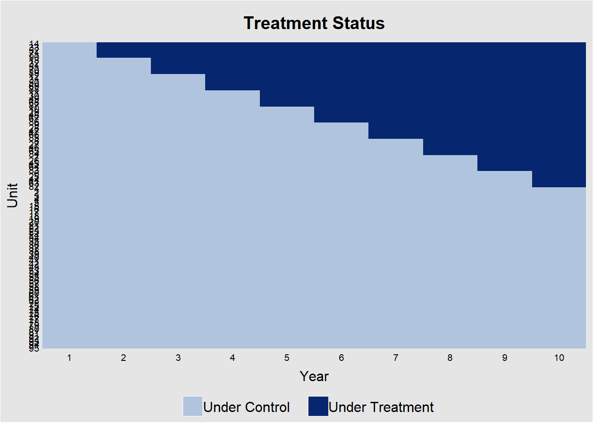
Figure 39.1: Treatment assignment over time by unit.
The diagonal “step” confirms that not all units adopt at once. This would be perfect for a staggered-DiD design. Horizontal segments without a color change indicate units that never adopt.
Alternatively, specifying the outcome and treatment status will also return the exact figure (Figure 39.2)
# alternatively specification
panelView::panelview(
Y = "y",
D = "treat_stat",
data = base_stagg,
index = c("id", "year"),
xlab = "Year",
ylab = "Unit",
display.all = F,
gridOff = T,
by.timing = T
)
Figure 39.2: Staggered treatment timing across units.
39.2.3 Raw Outcome Trajectories
Figure 39.3 shows the trajectories of different cohorts over time.
# Average outcomes for each cohort
panelView::panelview(
data = base_stagg,
Y = "y",
D = "treat_stat",
index = c("id", "year"),
by.timing = T,
display.all = F,
type = "outcome",
by.cohort = T
)
#> Number of unique treatment histories: 10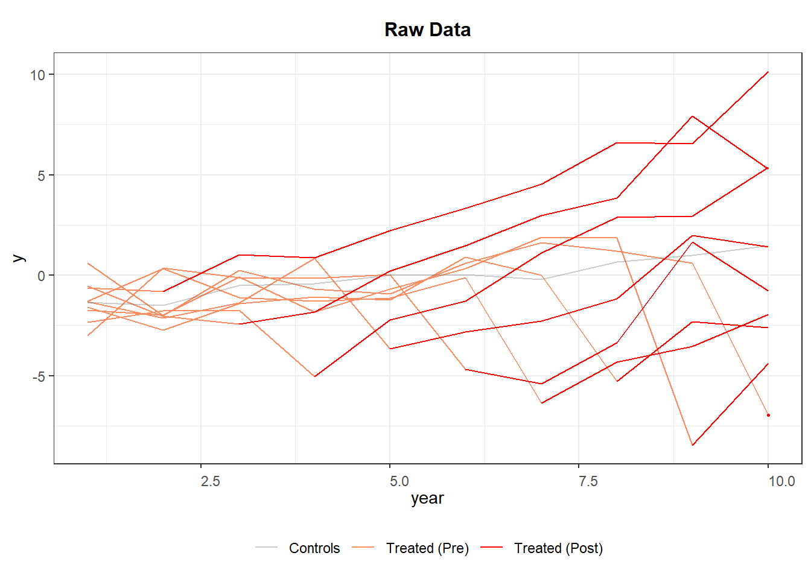
Figure 39.3: Raw panel data by treatment status over time.
If the red segments diverge immediately after treatment while the orange segments blend with gray beforehand, the visual evidence is supportive of a treatment effect and parallel pre-trends.
39.2.4 Event-time Averages
A more focused diagnostic is to plot the average outcome in event time (years relative to first treatment) (Figure 39.4).
base_stagg |>
group_by(event_time = year - min(year[treat_stat == 1])) |>
summarise(y_mean = mean(y),
se = sd(y) / sqrt(n())) |>
ggplot(aes(event_time, y_mean)) +
geom_line(color = "#377eb8", linewidth = 1) +
geom_ribbon(aes(ymin = y_mean - se, ymax = y_mean + se),
fill = "#377eb8",
alpha = .2) +
geom_vline(xintercept = 0, linetype = "dashed") +
labs(x = "Years relative to treatment",
y = "Mean outcome (y)",
title = "Event-time plot: do outcomes change at treatment onset?") +
theme_minimal()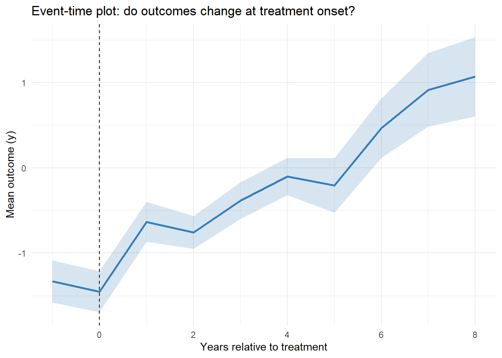
Figure 39.4: Event-time averages of the outcome relative to treatment onset.
A flat pre-trend (negative event times) and a noticeable jump at event-time 0 support the identifying assumptions for staggered DiD.
39.3 Simple Difference-in-Differences
DID first emerged as a tool for natural experiments, settings where policy shocks or geographic quirks mimic random assignment. Its scope has since broadened: marketing A/B roll-outs, corporate ESG mandates, and the staggered release of a mobile-app feature now routinely call on DID for credible impact estimates.
At its computational heart lies the Fixed Effects Estimator, which sweeps out any time-invariant heterogeneity across units and any shocks common to all periods, leaving the residual variation that identifies the treatment effect.
DID exploits inter-temporal variation between groups in two complementary ways to address omitted variable bias:
- Cross-sectional comparison: Compares treated and control units at the same point in time, canceling bias from shocks that hit both groups equally (e.g., nationwide inflation). This helps avoid omitted variable bias due to common trends.
- Time-series comparison: Tracks the same unit over time, purging bias from any fixed, unit-specific traits (e.g., a chain’s brand equity, a region’s climate). This helps mitigate omitted variable bias due to cross-sectional heterogeneity.
By taking the difference of differences, we simultaneously:
- Remove common trends that could confound a simple cross-sectional comparison.
- Eliminate unit-specific constants that would spoil a pure time-series analysis.
39.3.1 Basic Setup of DID
Consider a simple setting in Table 39.1 with:
- Treatment Group (\(D_i = 1\))
- Control Group (\(D_i = 0\))
- Pre-Treatment Period (\(T = 0\))
- Post-Treatment Period (\(T = 1\))
| After Treatment (\(T = 1\)) | Before Treatment (\(T = 0\)) | |
|---|---|---|
| Treated (\(D_i = 1\)) | \(E[Y_{1i}(1)|D_i = 1]\) | \(E[Y_{0i}(0)|D_i = 1]\) |
| Control (\(D_i = 0\)) | \(E[Y_{0i}(1)|D_i = 0]\) | \(E[Y_{0i}(0)|D_i = 0]\) |
The fundamental challenge: We cannot observe \(E[Y_{0i}(1)|D_i = 1]\) (i.e., the counterfactual outcome for the treated group had they not received treatment).
DID estimates the Average Treatment Effect on the Treated using the following formula:
\[ \begin{aligned} E[Y_1(1) - Y_0(1) | D = 1] &= \{E[Y(1)|D = 1] - E[Y(1)|D = 0] \} \\ &- \{E[Y(0)|D = 1] - E[Y(0)|D = 0] \} \end{aligned} \]
What parallel trends really says. The identifying assumption is a statement about the untreated potential outcome of the treated group, an object we never observe post-treatment:
\[ E[Y(0)_{t=1} - Y(0)_{t=0} \mid D = 1] = E[Y(0)_{t=1} - Y(0)_{t=0} \mid D = 0]. \]
That is, had the treated group not been treated, its average outcome would have evolved in parallel with the control group’s. This is intrinsically counterfactual and therefore untestable in the post-treatment period.
What pre-trend plots and placebo tests check is whether the observed pre-treatment trends were parallel. A clean pre-trend is supportive evidence for, but not proof of, the identifying assumption. Roth (2022) shows that conventional pre-trend tests often have low power, so “failing to reject” is weak evidence at best. Modern practice couples pre-trend diagnostics with formal sensitivity analysis (e.g., Rambachan and Roth (2023); see Section 39.16).
The same assumption can be read as a statement about selection bias: the pre-period gap between the groups measures the bias of a cross-sectional comparison, and parallel trends says that bias is the same after treatment. Section 39.8 develops that reading and measures the bias directly in the NSW job-training experiment.
This formulation differences out time-invariant unobserved factors, assuming the parallel trends assumption holds.
- For the treated group, we isolate the difference between being treated and not being treated.
- If the control group would have experienced a different trajectory, the DID estimate may be biased.
- Since we cannot observe treatment variation in the control group, we cannot infer the treatment effect for this group.
# Load required libraries
library(dplyr)
library(ggplot2)
set.seed(1)
# Simulated dataset for illustration
data <- data.frame(
time = rep(c(0, 1), each = 50), # Pre (0) and Post (1)
treated = rep(c(0, 1), times = 50), # Control (0) and Treated (1)
error = rnorm(100)
)
# Generate outcome variable
data$outcome <-
5 + 3 * data$treated + 2 * data$time +
4 * data$treated * data$time + data$error
# Compute averages for 2x2 table
table_means <- data %>%
group_by(treated, time) %>%
summarize(mean_outcome = mean(outcome), .groups = "drop") %>%
mutate(
group = paste0(ifelse(treated == 1, "Treated", "Control"), ", ",
ifelse(time == 1, "Post", "Pre"))
)
# Display the 2x2 table
table_2x2 <- table_means %>%
select(group, mean_outcome) %>%
tidyr::spread(key = group, value = mean_outcome)
print("2x2 Table of Mean Outcomes:")
#> [1] "2x2 Table of Mean Outcomes:"
print(table_2x2)
#> # A tibble: 1 × 4
#> `Control, Post` `Control, Pre` `Treated, Post` `Treated, Pre`
#> <dbl> <dbl> <dbl> <dbl>
#> 1 7.19 5.20 14.0 8.00
# Calculate Diff-in-Diff manually
# Treated, Post
Y11 <- table_means$mean_outcome[table_means$group == "Treated, Post"]
# Treated, Pre
Y10 <- table_means$mean_outcome[table_means$group == "Treated, Pre"]
# Control, Post
Y01 <- table_means$mean_outcome[table_means$group == "Control, Post"]
# Control, Pre
Y00 <- table_means$mean_outcome[table_means$group == "Control, Pre"]
diff_in_diff_formula <- (Y11 - Y10) - (Y01 - Y00)
# Estimate DID using OLS
model <- lm(outcome ~ treated * time, data = data)
ols_estimate <- coef(model)["treated:time"]
# Print results
results <- data.frame(
Method = c("Diff-in-Diff Formula", "OLS Estimate"),
Estimate = c(diff_in_diff_formula, ols_estimate)
)
print("Comparison of DID Estimates:")
#> [1] "Comparison of DID Estimates:"
print(results)
#> Method Estimate
#> Diff-in-Diff Formula 4.035895
#> treated:time OLS Estimate 4.035895Figure 39.5 shows a simple visualization of the DID in practice.
# Visualization
ggplot(data,
aes(
x = as.factor(time),
y = outcome,
color = as.factor(treated),
group = treated
)) +
stat_summary(fun = mean, geom = "point", size = 3) +
stat_summary(fun = mean,
geom = "line",
linetype = "dashed") +
labs(
title = "Difference-in-Differences Visualization",
x = "Time (0 = Pre, 1 = Post)",
y = "Outcome",
color = "Group"
) +
scale_color_manual(labels = c("Control", "Treated"),
values = c("blue", "red")) +
causalverse::ama_theme()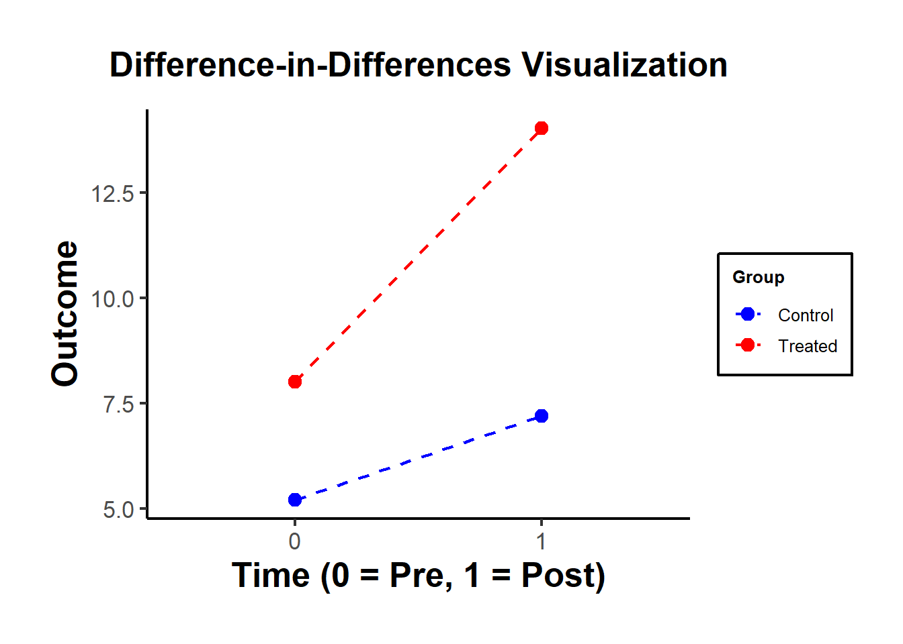
Figure 39.5: DiD visualization of treated and control group changes pre- and post-intervention.
| Control (0) | Treated (1) | |
|---|---|---|
| Pre (0) | \(\bar{Y}_{00} = 5\) | \(\bar{Y}_{10} = 8\) |
| Post (1) | \(\bar{Y}_{01} = 7\) | \(\bar{Y}_{11} = 14\) |
Table 39.2 organizes the mean outcomes into four cells:
Control Group, Pre-period (\(\bar{Y}_{00}\)): Mean outcome for the control group before the intervention.
Control Group, Post-period (\(\bar{Y}_{01}\)): Mean outcome for the control group after the intervention.
Treated Group, Pre-period (\(\bar{Y}_{10}\)): Mean outcome for the treated group before the intervention.
Treated Group, Post-period (\(\bar{Y}_{11}\)): Mean outcome for the treated group after the intervention.
The DID treatment effect calculated from the simple formula of averages is identical to the estimate from an OLS regression with an interaction term.
The treatment effect is calculated as:
\(\text{DID} = (\bar{Y}_{11} - \bar{Y}_{10}) - (\bar{Y}_{01} - \bar{Y}_{00})\)
Compute manually:
\((\bar{Y}_{11} - \bar{Y}_{10}) - (\bar{Y}_{01} - \bar{Y}_{00})\)
Use OLS regression:
\(Y_{it} = \beta_0 + \beta_1 \text{treated}_i + \beta_2 \text{time}_t + \beta_3 (\text{treated}_i \cdot \text{time}_t) + \epsilon_{it}\)
Using the simulated table:
\(\text{DID} = (14 - 8) - (7 - 5) = 6 - 2 = 4\)
This matches the interaction term coefficient (\(\beta_3 = 4\)) from the OLS regression.
Both methods give the same result!
39.3.2 Extensions of DID
39.3.2.1 DID with More Than Two Groups or Time Periods
DID can be extended to multiple treatments, multiple controls, and more than two periods:
\[ Y_{igt} = \alpha_g + \gamma_t + \beta I_{gt} + \delta X_{igt} + \epsilon_{igt} \]
where:
\(\alpha_g\) = Group-Specific Fixed Effects (e.g., firm, region).
\(\gamma_t\) = Time-Specific Fixed Effects (e.g., year, quarter).
\(\beta\) = DID Effect.
\(I_{gt}\) = Interaction Terms (Treatment × Post-Treatment).
\(\delta X_{igt}\) = Additional Covariates.
This is known as the Two-Way Fixed Effects DID model. However, TWFE performs poorly under staggered treatment adoption, where different groups receive treatment at different times.
39.3.2.2 Examining Long-Term Effects (Dynamic DID)
To examine the dynamic treatment effects (that are not under rollout/staggered design), we can create a centered time variable (Table 39.3).
| Centered Time Variable | Interpretation |
|---|---|
| \(t = -2\) | Two periods before treatment |
| \(t = -1\) | One period before treatment |
| \(t = 0\) |
Last pre-treatment period right before treatment period (Baseline/Reference Group) |
| \(t = 1\) | Treatment period |
| \(t = 2\) | One period after treatment |
39.3.2.2.1 Dynamic Treatment Model Specification
By interacting this factor variable, we can examine the dynamic effect of treatment (i.e., whether it’s fading or intensifying). We index event time by \(k = t - g_i\), where \(g_i\) is the period when unit \(i\) is first treated, so \(k = 0\) is the treatment period and \(k = -1\) is the period immediately before. Following the modern convention (Sun and Abraham 2021; Callaway and Sant’Anna 2021) we drop \(k = -1\) as the reference period:
\[ \begin{aligned} Y &= \alpha_0 + \alpha_1 Group + \alpha_2 Time \\ &+ \sum_{k = -T_1}^{-2} \beta_k\, Treatment_k \\ &+ \sum_{k = 0}^{T_2} \beta_k\, Treatment_k + \varepsilon \end{aligned} \]
where:
\(\beta_{-1}\) (the last pre-treatment period) is the reference group and is dropped from the model.
\(T_1\) = number of pre-treatment periods retained (so leads run from \(-T_1\) to \(-2\)).
\(T_2\) = number of post-treatment periods retained (so lags run from \(0\) to \(T_2\)).
Treatment coefficients (\(\beta_k\)) measure the effect at event time \(k\) relative to \(k = -1\).
39.3.2.2.2 Key Observations
Pre-treatment coefficients should be close to zero (\(\beta_{-T_1}, \dots, \beta_{-1} \approx 0\)), ensuring no pre-trend bias.
Post-treatment coefficients should be significantly different from zero (\(\beta_1, \dots, \beta_{T_2} \neq 0\)), measuring the treatment effect over time.
Higher standard errors with more interactions: Including too many lags can reduce precision.
39.3.2.3 DID on Relationships, Not Just Levels
While DID is most commonly applied to examine treatment effects on outcome levels, it can also be used to estimate how treatment affects the relationship between variables. This approach treats estimated coefficients from first-stage regressions as outcomes in a second-stage DID analysis.
Standard DID examines whether treatment changes the level of an outcome \(Y_{it}\). However, researchers may be interested in whether treatment changes how \(Y\) responds to some predictor \(X\), that is, whether treatment affects the coefficient \(\beta\) in the relationship:
\[ Y_{it} = \alpha + \beta X_{it} + \epsilon_{it} \]
This requires a two-stage approach where regression coefficients themselves become the unit of analysis.
39.3.2.3.1 Two-Stage Estimation Procedure
Stage 1: Estimate Group-Period-Specific Relationships
For each combination of group \(g\) and time period \(t\), estimate:
\[ Y_{igt} = \alpha_{gt} + \beta_{gt} X_{igt} + \epsilon_{igt} \]
This yields a set of estimated coefficients \(\{\hat{\beta}_{gt}\}\), where each \(\hat{\beta}_{gt}\) captures the relationship between \(X\) and \(Y\) for group \(g\) in period \(t\).
Stage 2: Apply DID to the Estimated Coefficients
Treat the estimated coefficients \(\hat{\beta}_{gt}\) as the outcome variable in a standard DID framework:
\[ \hat{\beta}_{gt} = \alpha_0 + \alpha_1 Treated_g + \alpha_2 Post_t + \delta (Treated_g \times Post_t) + u_{gt} \]
where:
- \(\hat{\beta}_{gt}\) = Estimated coefficient from Stage 1 (the “outcome”).
- \(Treated_g\) = Indicator for treatment group.
- \(Post_t\) = Indicator for post-treatment period.
- \(\delta\) = DID estimate of treatment effect on the relationship.
The coefficient \(\delta\) measures whether the relationship between \(X\) and \(Y\) changed differentially for the treated group after treatment.
The DID estimator can be expressed as:
\[ \begin{aligned} \hat{\delta} &= (\hat{\beta}_{Treated}^{Post} - \hat{\beta}_{Treated}^{Pre}) - (\hat{\beta}_{Control}^{Post} - \hat{\beta}_{Control}^{Pre}) \\ &= \text{Change in relationship for treated} - \text{Change in relationship for control} \end{aligned} \]
This captures the causal effect of treatment on the structural parameter \(\beta\), controlling for secular trends that affect both groups.
39.3.2.3.2 Example: Price Sensitivity Before and After a Policy Change
Suppose we want to test whether a consumer protection law changes how price affects demand.
Stage 1: For each state \(s\) and year \(t\), estimate:
\[ \log(Quantity_{ist}) = \alpha_{st} + \beta_{st} \log(Price_{ist}) + \epsilon_{ist} \]
where \(i\) indexes individual transactions. This gives us state-year specific price elasticities \(\{\hat{\beta}_{st}\}\).
Stage 2: Use these elasticities as outcomes in a DID model:
\[ \hat{\beta}_{st} = \alpha_0 + \alpha_1 Treated_s + \alpha_2 Post_t + \delta (Treated_s \times Post_t) + u_{st} \]
If \(\delta < 0\), the policy made consumers more price-sensitive (more elastic demand) in treated states. If \(\delta > 0\), consumers became less price-sensitive.
39.3.2.3.3 Standard Error Correction
A critical issue is that Stage 2 uses estimated coefficients \(\hat{\beta}_{gt}\) as the dependent variable, which introduces generated regressor problems. The standard errors from Stage 2 are incorrect because they don’t account for estimation uncertainty in \(\hat{\beta}_{gt}\).
Solutions:
Bootstrapping: Resample at the individual level, re-estimate both stages, and calculate standard errors from the bootstrap distribution.
Weighted Least Squares: Weight Stage 2 observations by the inverse of the variance of \(\hat{\beta}_{gt}\):
\[ w_{gt} = \frac{1}{\text{Var}(\hat{\beta}_{gt})} = \frac{1}{SE(\hat{\beta}_{gt})^2} \]
This gives more weight to precisely estimated relationships.
- Stacked Regression: Pool all individual observations and include group-period fixed effects interacted with \(X\):
\[ Y_{igt} = \sum_{g,t} \beta_{gt} (I_{gt} \times X_{igt}) + \text{controls} + \epsilon_{igt} \]
Then test whether \(\{\beta_{gt}\}\) follow a DID pattern using an F-test or linear combinations.
39.3.2.3.4 Dynamic Effects on Relationships
The two-stage approach can be extended to examine how relationships evolve over time:
Stage 1: Estimate period-specific coefficients:
\[ Y_{igt} = \alpha_{gt} + \beta_{gt} X_{igt} + \epsilon_{igt} \]
Stage 2: Event study specification:
\[ \hat{\beta}_{gt} = \alpha_g + \gamma_t + \sum_{k \neq -1} \delta_k (Treated_g \times Period_{t=k}) + u_{gt} \]
where \(Period_{t=k}\) are indicators for time relative to treatment (with \(k=-1\) as the reference period).
Key Observations:
- Pre-treatment coefficients (\(\delta_k\) for \(k < -1\)) should be near zero, indicating parallel trends in the relationship.
- Post-treatment coefficients (\(\delta_k\) for \(k \geq 0\)) show how the relationship evolves after treatment.
- This reveals whether effects on relationships are immediate, delayed, or fade over time.
39.3.2.3.5 Applications
1. Advertising Effectiveness:
Does a competitor’s market entry change advertising elasticity?
- Stage 1: Estimate \(\frac{\partial \log(Sales)}{\partial \log(Advertising)}\) for each market-period.
- Stage 2: DID on these elasticities comparing markets with/without competitor entry.
2. Labor Supply Elasticity:
Does a tax reform change labor supply responsiveness to wages?
- Stage 1: Estimate \(\frac{\partial Hours}{\partial Wage}\) for each region-year.
- Stage 2: DID comparing regions with different tax policy changes.
3. Educational Returns:
Does a curriculum reform change the returns to study time?
- Stage 1: Estimate \(\frac{\partial GPA}{\partial StudyHours}\) for each school-year.
- Stage 2: DID comparing schools that adopted vs. didn’t adopt the reform.
4. Platform Network Effects:
Does a platform algorithm change affect network externalities?
- Stage 1: Estimate \(\frac{\partial UserValue}{\partial NetworkSize}\) for each market-quarter.
- Stage 2: DID around the algorithm change.
39.3.2.3.6 Advantages and Limitations
Advantages:
- Causal inference on mechanisms: Identifies how treatment changes behavioral responses, not just outcomes.
- Flexibility: Can be applied to any estimable relationship (elasticities, marginal effects, coefficients).
- Policy-relevant: Directly tests whether policies alter structural parameters of interest.
Limitations:
- Two-stage uncertainty: Standard errors require careful correction for generated regressors.
- Data requirements: Needs sufficient observations within each group-period to estimate first-stage relationships precisely.
- Parallel trends in relationships: Requires that relationships (not just levels) would have trended similarly absent treatment, a stronger assumption.
- Aggregation: Loses individual-level variation when collapsing to group-period coefficients.
39.3.2.3.7 Relationship to Heterogeneous Treatment Effects
DID on relationships is conceptually related to, but distinct from, heterogeneous treatment effects. A three-way interaction \((X \times Treated \times Post)\) estimates whether treatment effects vary across levels of \(X\). In contrast, DID on relationships estimates whether the effect of \(X\) on \(Y\) changes due to treatment, a fundamentally different question about structural parameters rather than treatment heterogeneity.
This two-stage approach transforms DID into a tool for testing structural change hypotheses, enabling researchers to make causal claims about how treatments alter the fundamental relationships governing economic, social, or behavioral systems.
39.3.3 Goals of DID
-
Pre-Treatment Coefficients Should Be Insignificant
- Ensure that \(\beta_{-T_1}, \dots, \beta_{-1} = 0\) (similar to a Placebo Test).
-
Post-Treatment Coefficients Should Be Significant
- Verify that \(\beta_1, \dots, \beta_{T_2} \neq 0\).
- Examine whether the trend in post-treatment coefficients is increasing or decreasing over time.
library(tidyverse)
library(fixest)
od <- causaldata::organ_donations %>%
# Treatment variable
dplyr::mutate(California = State == 'California') %>%
# centered time variable
dplyr::mutate(center_time = as.factor(Quarter_Num - 3))
# where 3 is the reference period precedes the treatment period
class(od$California)
#> [1] "logical"
class(od$State)
#> [1] "character"
cali <- feols(Rate ~ i(center_time, California, ref = 0) |
State + center_time,
data = od)
etable(cali)
#> cali
#> Dependent Var.: Rate
#>
#> California x center_time = -2 -0.0029 (0.0360)
#> California x center_time = -1 0.0063 (0.0360)
#> California x center_time = 1 -0.0216 (0.0360)
#> California x center_time = 2 -0.0203 (0.0360)
#> California x center_time = 3 -0.0222 (0.0360)
#> Fixed-Effects: ----------------
#> State Yes
#> center_time Yes
#> _____________________________ ________________
#> S.E. type IID
#> Observations 162
#> R2 0.97934
#> Within R2 0.00979
#> ---
#> Signif. codes: 0 '***' 0.001 '**' 0.01 '*' 0.05 '.' 0.1 ' ' 1Figure 39.6 shows the fixed effects estimates over time.
iplot(cali, pt.join = T)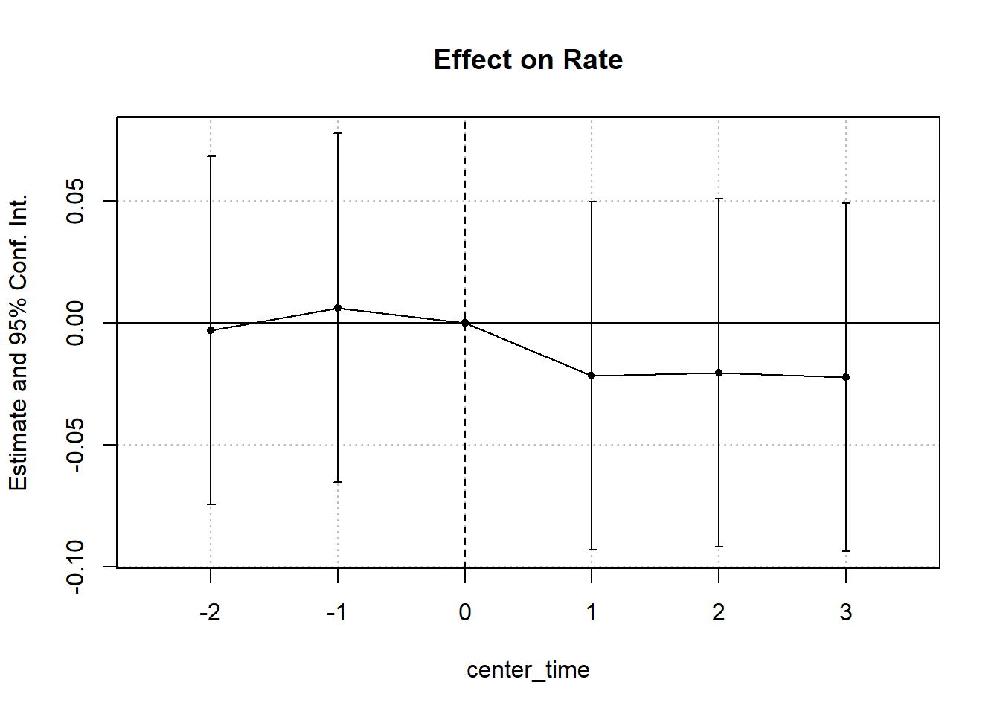
Figure 39.6: Estimated effect on rate over time.
Figure 39.7 shows the same plot with a different plotting function.
coefplot(cali)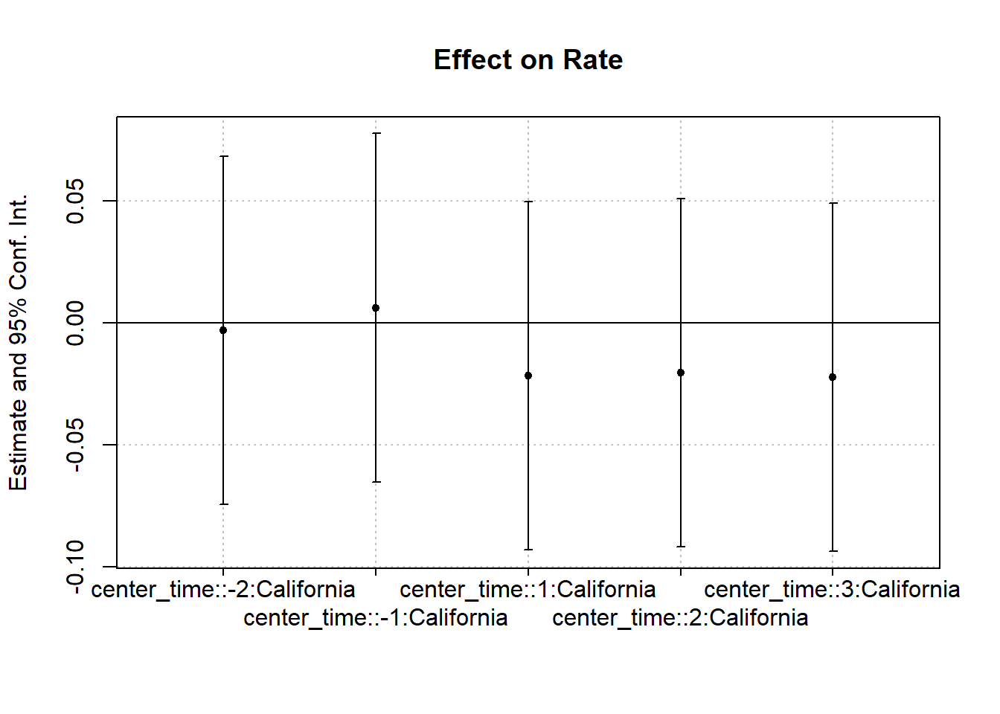
Figure 39.7: Interaction effect on rate.
39.4 Empirical Research Walkthrough
39.4.1 Example: The Unintended Consequences of “Ban the Box” Policies
Doleac and Hansen (2020) examine the unintended effects of “Ban the Box” (BTB) policies, which prevent employers from asking about criminal records during the hiring process. The intended goal of BTB was to increase job access for individuals with criminal records. However, the study found that employers, unable to observe criminal history, resorted to statistical discrimination based on race, leading to unintended negative consequences.
Three Types of “Ban the Box” Policies:
- Public employers only
- Private employers with government contracts
- All employers
Identification Strategy
- If any county within a Metropolitan Statistical Area (MSA) adopts BTB, the entire MSA is considered treated.
- If a state passes a law banning BTB, then all counties in that state are treated.
The basic DiD model is:
\[ Y_{it} = \beta_0 + \beta_1 \text{Post}_t + \beta_2 \text{Treat}_i + \beta_3 (\text{Post}_t \times \text{Treat}_i) + \epsilon_{it} \]
where:
- \(Y_{it}\) = employment outcome for individual \(i\) at time \(t\)
- \(\text{Post}_t\) = indicator for post-treatment period
- \(\text{Treat}_i\) = indicator for treated MSAs
- \(\beta_3\) = the DiD coefficient, capturing the effect of BTB on employment
- \(\epsilon_{it}\) = error term
Limitations: If different locations adopt BTB at different times, this model is not valid due to staggered treatment timing.
For settings where different MSAs adopt BTB at different times, we use a staggered DiD approach:
\[ \begin{aligned} E_{imrt} &= \alpha + \beta_1 BTB_{imt} W_{imt} + \beta_2 BTB_{mt} + \beta_3 BTB_{mt} H_{imt} \\ &+ \delta_m + D_{imt} \beta_5 + \lambda_{rt} + \delta_m \times f(t) \beta_7 + e_{imrt} \end{aligned} \]
where:
- \(i\) = individual, \(m\) = MSA, \(r\) = region (e.g., Midwest, South), \(t\) = year
- \(W\) = White; \(B\) = Black; \(H\) = Hispanic
- \(BTB_{imt}\) = Ban the Box policy indicator
- \(\delta_m\) = MSA fixed effect
- \(D_{imt}\) = individual-level controls
- \(\lambda_{rt}\) = region-by-time fixed effect
- \(\delta_m \times f(t)\) = linear time trend within MSA
39.4.1.1 Fixed Effects Considerations
Including \(\lambda_r\) and \(\lambda_t\) separately gives broader fixed effects.
Using \(\lambda_{rt}\) provides more granular controls for regional time trends.
To estimate the effects for Black men specifically, the model simplifies to:
\[ E_{imrt} = \alpha + BTB_{mt} \beta_1 + \delta_m + D_{imt} \beta_5 + \lambda_{rt} + (\delta_m \times f(t)) \beta_7 + e_{imrt} \]
To check for pre-trends and dynamic effects, we estimate:
\[ \begin{aligned} E_{imrt} &= \alpha + BTB_{m (t - 3)} \theta_1 + BTB_{m (t - 2)} \theta_2 + BTB_{m (t - 1)} \theta_3 \\ &+ BTB_{mt} \theta_4 + BTB_{m (t + 1)} \theta_5 + BTB_{m (t + 2)} \theta_6 + BTB_{m (t + 3)} \theta_7 \\ &+ \delta_m + D_{imt} \beta_5 + \lambda_{r} + (\delta_m \times f(t)) \beta_7 + e_{imrt} \end{aligned} \]
Key points:
- Leave out \(BTB_{m (t - 1)} \theta_3\) as the reference category (to avoid perfect collinearity).
- If \(\theta_2\) is significantly different from \(\theta_3\), it suggests pre-trend issues, which could indicate anticipatory effects before BTB implementation.
Substantively, Shoag and Veuger (2021) show that Ban-the-box policies increased employment in high-crime neighborhoods by up to 4%, especially in the public sector and low-wage jobs. This is the first nationwide evidence that such laws improve job access for areas with many ex-offenders.
39.4.2 Example: Minimum Wage and Employment
Card and Krueger (1993) famously studied the effect of an increase in the minimum wage on employment, challenging the traditional economic view that higher wages reduce employment.
- Philipp Leppert provides an R-based replication.
- Original datasets are available at David Card’s website.
Setting
- Treatment group: New Jersey (NJ), which increased its minimum wage.
- Control group: Pennsylvania (PA), which did not change its minimum wage.
- Outcome variable: Employment levels in fast-food restaurants.
The study used a Difference-in-Differences approach to estimate the impact (Table 39.4).
| State | After (Post) | Before (Pre) | Difference | |
|---|---|---|---|---|
| Treatment | NJ | A | B | A - B |
| Control | PA | C | D | C - D |
| A - C | B - D | (A - B) - (C - D) |
where:
- \(A - B\) captures the treatment effect plus general time trends.
- \(C - D\) captures only the general time trends.
- \((A - B) - (C - D)\) isolates the causal effect of the minimum wage increase.
For the DiD estimator to be valid, the following conditions must hold:
-
Parallel Trends Assumption
- The employment trends in NJ and PA would have been the same in the absence of the policy change.
- Pre-treatment employment trends should be similar between the two states.
-
No “Switchers”
- The policy must not induce restaurants to switch locations between NJ and PA (e.g., a restaurant relocating across the border).
-
PA as a Valid Counterfactual
- PA represents what NJ would have looked like had it not changed the minimum wage.
- The study focuses on bordering counties to increase comparability.
The main regression specification is:
\[ Y_{jt} = \beta_0 + NJ_j \beta_1 + POST_t \beta_2 + (NJ_j \times POST_t)\beta_3+ X_{jt}\beta_4 + \epsilon_{jt} \]
where:
- \(Y_{jt}\) = Employment in restaurant \(j\) at time \(t\)
- \(NJ_j\) = 1 if restaurant is in NJ, 0 if in PA
- \(POST_t\) = 1 if post-policy period, 0 if pre-policy
- \((NJ_j \times POST_t)\) = DiD interaction term, capturing the causal effect of NJ’s minimum wage increase
- \(X_{jt}\) = Additional controls (optional)
- \(\epsilon_{jt}\) = Error term
Notes on Model Specification
\(\beta_3\) (DiD coefficient) is the key parameter of interest, representing the causal impact of the policy.
\(\beta_4\) (controls \(X_{jt}\)) is not necessary for unbiasedness but improves efficiency.
-
If we difference out the pre-period (\(\Delta Y_{jt} = Y_{j,Post} - Y_{j,Pre}\)), we can simplify the model:
\[ \Delta Y_{jt} = \alpha + NJ_j \beta_1 + \epsilon_{jt} \]
Here, we no longer need \(\beta_2\) for the post-treatment period.
An alternative specification uses high-wage NJ restaurants as a control group, arguing that they were not affected by the minimum wage increase. However:
- This approach eliminates cross-state differences, but
- It may be harder to interpret causality, as the control group is not entirely untreated.
A common misconception in DiD is that treatment and control groups must have the same baseline levels of the dependent variable (e.g., employment levels). However:
- DiD only requires parallel trends, meaning the slopes of employment changes should be the same pre-treatment.
- If pre-treatment trends diverge, this threatens validity.
- If post-treatment trends converge, it may suggest policy effects rather than pre-trend violations.
Is Parallel Trends a Necessary or Sufficient Condition?
- Not sufficient: Even if pre-trends are parallel, other confounders could affect results.
- Not necessary: Parallel trends may emerge only after treatment, depending on behavioral responses.
Thus, we cannot prove DiD is valid. We can only present evidence that supports the assumptions.
39.4.3 Example: The Effects of Grade Policies on Major Choice
Butcher et al. (2014) investigate how grading policies influence students’ major choices. The central theory is that grading standards vary by discipline, which affects students’ decisions.
The pattern that the highest-achieving students often concentrate in the hard sciences can be rationalized by two mechanisms.
-
Grading Practices Differ Across Majors
- In STEM fields, grading is often stricter, meaning professors are less likely to give students the benefit of the doubt.
- In contrast, softer disciplines (e.g., humanities) may have more lenient grading, raising perceived utility from the major.
-
Labor Market Incentives
- Degrees with lower market value (e.g., humanities) may compensate by offering a less demanding academic experience.
- STEM degrees tend to be more rigorous but provide higher job market returns.
To examine how grades influence major selection, the study first estimates an OLS model:
\[ E_{ij} = \beta_0 + X_i \beta_1 + G_j \beta_2 + \epsilon_{ij} \]
where:
- \(E_{ij}\) = Indicator for whether student \(i\) chooses major \(j\).
- \(X_i\) = Student-level attributes (e.g., SAT scores, demographics).
- \(G_j\) = Average grade in major \(j\).
- \(\beta_2\) = Key coefficient, capturing how grading standards influence major choice.
Potential Biases in \(\hat{\beta}_2\):
- Negative Bias:
- Departments with lower enrollment rates may offer higher grades to attract students.
- This endogenous response leads to a downward bias in the OLS estimate.
- Positive Bias:
- STEM majors attract the best students, so their grades would naturally be higher if ability were controlled.
- If ability is not fully accounted for, \(\hat{\beta}_2\) may be upward biased.
To address potential endogeneity in OLS, the study uses a difference-in-differences approach:
\[ Y_{idt} = \beta_0 + POST_t \beta_1 + Treat_d \beta_2 + (POST_t \times Treat_d)\beta_3 + X_{idt} + \epsilon_{idt} \]
where:
- \(Y_{idt}\) = Average grade in department \(d\) at time \(t\) for student \(i\).
- \(POST_t\) = 1 if post-policy period, 0 otherwise.
- \(Treat_d\) = 1 if department is treated (i.e., grade policy change), 0 otherwise.
- \((POST_t \times Treat_d)\) = DiD interaction term, capturing the causal effect of grade policy changes on major choice.
- \(X_{idt}\) = Additional student controls.
| Group | Intercept (\(\beta_0\)) | Treatment (\(\beta_2\)) | Post (\(\beta_1\)) | Interaction (\(\beta_3\)) |
|---|---|---|---|---|
| Treated, Pre | 1 | 1 | 0 | 0 |
| Treated, Post | 1 | 1 | 1 | 1 |
| Control, Pre | 1 | 0 | 0 | 0 |
| Control, Post | 1 | 0 | 1 | 0 |
Table 39.5 shows how we can think about the design matrix for DID.
- The average pre-period outcome for the control group is given by \(\beta_0\).
- The key coefficient of interest is \(\beta_3\), which captures the difference in the post-treatment effect between treated and control groups.
A more flexible specification includes fixed effects:
\[ Y_{idt} = \alpha_0 + (POST_t \times Treat_d) \alpha_1 + \theta_d + \delta_t + X_{idt} + u_{idt} \]
where:
- \(\theta_d\) = Department fixed effects (absorbing \(Treat_d\)).
- \(\delta_t\) = Time fixed effects (absorbing \(POST_t\)).
- \(\alpha_1\) = Effect of policy change (equivalent to \(\beta_3\) in the simpler model).
Why Use Fixed Effects?
- More flexible specification:
- Instead of assuming a uniform treatment effect across groups, this model allows for department-specific differences (\(\theta_d\)) and time-specific shocks (\(\delta_t\)).
- Higher degrees of freedom:
- Fixed effects absorb variation that would otherwise be attributed to \(POST_t\) and \(Treat_d\), making the estimation more efficient.
Interpretation of Results
- If \(\alpha_1 > 0\), then the policy increased grades in treated departments.
- If \(\alpha_1 < 0\), then the policy decreased grades in treated departments.
39.5 One Difference
The regression formula is as follows Liaukonytė et al. (2023):
\[ y_{ut} = \beta \text{Post}_t + \gamma_u + \gamma_w(t) + \gamma_l + \gamma_g(u)p(t) + \epsilon_{ut} \]
where
- \(y_{ut}\): Outcome of interest for unit u in time t.
- \(\text{Post}_t\): Dummy variable representing a specific post-event period.
- \(\beta\): Coefficient measuring the average change in the outcome after the event relative to the pre-period.
- \(\gamma_u\): Fixed effects for each unit.
- \(\gamma_w(t)\): Time-specific fixed effects to account for periodic variations.
- \(\gamma_l\): Dummy variable for a specific significant period (e.g., a major event change).
- \(\gamma_g(u)p(t)\): Group x period fixed effects for flexible trends that may vary across different categories (e.g., geographical regions) and periods.
- \(\epsilon_{ut}\): Error term.
This model can be used to analyze the impact of an event on the outcome of interest while controlling for various fixed effects and time-specific variations, but using units themselves pre-treatment as controls.
39.6 Two-Way Fixed Effects
A generalization of the Difference-in-Differences model is the two-way fixed effects (TWFE) model, which accounts for multiple groups and multiple time periods by including both unit and time fixed effects. In practice, TWFE is frequently used to estimate causal effects in panel data settings. However, it is not a design-based, non-parametric causal estimator (Imai and Kim 2021), and it can suffer from severe biases if the treatment effect is heterogeneous across units or time.
When applying TWFE to datasets with multiple treatment groups and staggered treatment timing, the estimated causal coefficient is a weighted average of all possible two-group, two-period DiD comparisons. Crucially, some of these weights can be negative (Goodman-Bacon 2021), which leads to potential biases. The weighting scheme depends on:
- Group sizes
- Variation in treatment timing
- Placement in the middle of the panel (units in the middle tend to get the highest weight)
39.6.1 Canonical TWFE Model
The canonical TWFE model is typically written as:
\[ Y_{it} = \alpha_i + \lambda_t + \tau W_{it} + \beta X_{it} + \epsilon_{it}, \]
where:
\(Y_{it}\) = Outcome for unit \(i\) at time \(t\)
\(\alpha_i\) = Unit fixed effect
\(\lambda_t\) = Time fixed effect
\(\tau\) = Causal effect of treatment
\(W_{it}\) = Treatment indicator (\(1\) if treated, \(0\) otherwise)
\(X_{it}\) = Covariates
\(\epsilon_{it}\) = Error term
An illustrative TWFE event-study model (Stevenson and Wolfers 2006):
\[ \begin{aligned} Y_{it} &= \sum_{k} \beta_{k} \cdot Treatment_{it}^{k} + \eta_{i} + \lambda_{t} + Controls_{it} + \epsilon_{it}, \end{aligned} \]
where:
\(Treatment_{it}^k\): Indicator for whether unit \(i\) is in its \(k\)-th year relative to treatment at time \(t\).
\(\eta_i\): Unit fixed effects, controlling for time-invariant unobserved heterogeneity.
\(\lambda_t\): Time fixed effects, capturing overall macro shocks.
Standard Errors: Typically clustered at the group or cohort level.
Usually, researchers drop the period immediately before treatment (\(k=-1\)) to avoid collinearity. However, dropping this or another period inappropriately can shift or bias the estimates.
When there are only two time periods \((T=2)\), TWFE simplifies to the traditional DiD model. Under homogeneous treatment effects and if the parallel trends assumption holds, \(\hat{\tau}_{OLS}\) is unbiased. Specifically, the model assumes (Imai and Kim 2021):
-
Homogeneous treatment effects across units and time periods, meaning:
- No dynamic treatment effects (i.e., treatment effects do not evolve over time).
- The treatment effect is constant across units (Goodman-Bacon 2021; De Chaisemartin and d’Haultfoeuille 2020; Sun and Abraham 2021; Borusyak et al. 2024).
- Parallel trends assumption
- Linear additive effects are valid (Imai and Kim 2021).
However, in practice, treatment effects are often heterogeneous. If effects vary by cohort or over time, then standard TWFE estimates can be biased, particularly when there is staggered adoption or dynamic treatment effects (Goodman-Bacon 2021; De Chaisemartin and d’Haultfoeuille 2020; Sun and Abraham 2021; Borusyak et al. 2024). Hence, to use the TWFE, we actually have to argue why the effects are homogeneous to justify TWFE use:
- Assess treatment heterogeneity: If heterogeneity exists, TWFE may produce biased estimates. Researchers should:
- Plot treatment timing across units.
- Decompose the treatment effect using the Goodman-Bacon decomposition to identify negative weights.
- Check the proportion of never-treated observations: When 80% or more of the sample is never treated, TWFE bias is negligible.
- Beware of bias worsening with long-run effects.
- Dropping relative time periods:
- If all units eventually receive treatment, two relative time periods must be dropped to avoid multicollinearity.
- Some software packages drop periods randomly; if a post-treatment period is dropped, bias may result.
- The standard approach is to drop periods -1 and -2.
- Sources of treatment heterogeneity:
- Delayed treatment effects: The impact of treatment may take time to manifest.
- Evolving effects: Treatment effects can increase or change over time (e.g., phase-in effects).
TWFE compares different types of treatment/control groups:
- Valid comparisons:
- Newly treated units vs. control units
- Newly treated units vs. not-yet treated units
- Problematic comparisons:
- Newly treated units vs. already treated units (since already treated units do not represent the correct counterfactual).
- Strict exogeneity violations:
- Presence of time-varying confounders
- Feedback from past outcomes to treatment (Imai and Kim 2019)
- Functional form restrictions:
- Assumes treatment effect homogeneity.
- No carryover effects or anticipation effects (Imai and Kim 2019).
39.6.2 Limitations of TWFE
TWFE inherits its appeal from a deceptively simple promise: absorb unit and time effects, and the residual variation that survives identifies the causal coefficient. That promise holds when treatment effects are constant. Once effects vary across units or evolve over time, the residual variation no longer maps cleanly onto a single causal quantity. The price of using a one-coefficient model on a many-coefficient world shows up as bias, not as obvious model failure, which is why these limitations were under-appreciated for years.
The strong assumptions that TWFE rides on can be enumerated as follows:
- No dynamic treatment effects: The model requires that the treatment effect not evolve over time.
- No unit-level differences: The treatment effect must be constant across all units.
- Linear additive effects: TWFE assumes that the underlying data-generating process is captured by additive fixed effects plus a constant treatment effect (Imai and Kim 2021).
If any of these assumptions are violated, TWFE can produce biased estimates. The mechanics of the bias are worth pausing on, because they motivate every modern remedy discussed below. When treatment is staggered, the regression coefficient is an implicit average of many smaller two-by-two comparisons, and the weights attached to those comparisons are determined by panel structure rather than by what the researcher cares about. Symptoms include:
- Negative weights and biased estimates: With multiple groups and staggered timing, the TWFE estimate becomes a complicated average of “two-group, two-period” DiD comparisons, some of which can receive negative weights (Goodman-Bacon 2021).
- Bias from dropped relative-time periods: If all units eventually get treated, software often drops a reference period (or periods) to avoid multicollinearity. If the dropped period is post-treatment, the bias can worsen. Researchers often drop relative time \(-1\) or \(-2\).
- Delayed or evolving treatment effects: If the effect of treatment takes time to manifest or changes over time, TWFE’s single coefficient \(\tau\) can be misleading.
When two time periods only exist, TWFE collapses back to the traditional DiD model, making these problems far less severe. But as soon as one moves beyond a single treatment period or has variation in treatment timing, these issues become critical. The same logic surfaces in Multiple Periods and Variation in Treatment Timing, where staggered adoption is the rule rather than the exception, and these failure modes have spawned a whole generation of estimators (see Modern Estimators for Staggered Adoption and Modern Concerns in DiD).
Several authors (Sun and Abraham 2021; Callaway and Sant’Anna 2021; Goodman-Bacon 2021) have catalogued concrete pathologies of TWFE DiD regressions under staggered adoption:
- Cohort mixing: The regression unintentionally compares newly treated units to already treated units, conflating post-treatment behavior of early adopters with the pre-treatment trends of later adopters.
- Negative weights: Some group comparisons receive negative weights, which can reverse the sign of the overall estimate.
- Spurious pre-treatment leads: Leads may appear non-zero if earlier-treated groups remain in the sample as implicit “controls” while later adopters are still untreated.
- Compounding long-run bias: Heterogeneity in lagged (long-run) effects accumulates as the panel lengthens, so longer windows do not necessarily produce cleaner estimates.
The empirical stakes are substantial. In fields such as finance and accounting, newer estimators often reveal null or much smaller effects than standard TWFE once bias is properly accounted for (Baker et al. 2022). Substantial portions of these literatures have had to revisit headline results, which underscores the importance of the diagnostics in the next subsection.
39.6.3 Diagnosing and Addressing Bias in TWFE
Before reaching for a sophisticated alternative estimator, it pays to ask how badly TWFE is actually misbehaving in the design at hand. The diagnostics below answer that question with progressively heavier machinery, beginning with a picture of the data and ending with a formal decomposition of the regression coefficient itself. Researchers should treat these as a sequence: a quick visual check tells you whether to worry, the share of never-treated units tells you how much room there is for negative weights, and the Goodman-Bacon Decomposition tells you which two-by-two comparisons are doing the damage.
- Purpose: Decomposes the TWFE DiD estimate into the sum of all two-group, two-period comparisons.
- Insight: Reveals which comparisons have negative weights and how much each comparison contributes to the overall estimate (Goodman-Bacon 2021).
- Implementation: Identify subgroups by treatment timing, then examine each group-time pair to see how it contributes to the aggregate TWFE coefficient.
- When it is decisive: If the decomposition shows that “already-treated as control” comparisons receive substantial weight, TWFE is structurally compromised and a remedy from the next subsection is warranted.
- Visual inspection: Always plot the distribution of treatment timing across units.
- High risk of bias: If treatment is staggered and many units differ in their adoption times, standard TWFE will often be biased.
- Cheap and informative: This step takes minutes, costs nothing, and frequently changes which estimator a careful researcher reaches for next.
- Assessing Treatment Heterogeneity Directly
- Check for variation in effects: If there is a theoretical or empirical reason to believe that treatment effects differ by subgroup or over time, TWFE might not be appropriate.
- Size of never-treated sample: When 80% or more of the sample is never treated, the potential for bias in TWFE is smaller because the regression leans heavily on clean treated-versus-never-treated comparisons. Large shares of treated units with varied adoption times raise red flags.
- Long-run effects: Bias can worsen if the treatment effect accumulates or changes over time, since the coefficient on the treatment indicator averages early and late dynamics with weights chosen by the panel rather than by the researcher.
If the diagnostics suggest that TWFE is mildly biased, an event-study specification with carefully chosen reference periods may suffice. If they suggest a structural problem, the remedies in the next subsection become necessary rather than optional.
39.6.3.1 Goodman-Bacon Decomposition
The Goodman-Bacon decomposition (Goodman-Bacon 2021) is a powerful diagnostic tool for understanding the TWFE estimator in settings with staggered treatment adoption. This approach clarifies how the TWFE DiD estimate is a weighted average of many 2×2 difference-in-differences comparisons between groups treated at different times (or never treated).
Key Takeaways
- A pairwise DiD estimate (\(\tau\)) receives more weight when:
- The treatment happens closer to the midpoint of the observation window.
- The comparison involves more observations (e.g., more units or more years).
- Comparisons between early-treated and later-treated groups can produce negative weights, potentially biasing the aggregate TWFE estimate.
We illustrate the decomposition using the castle dataset from the bacondecomp package:
library(bacondecomp)
library(tidyverse)
# Load and inspect the castle dataset
castle <- bacondecomp::castle %>%
dplyr::select(l_homicide, post, state, year)
head(castle)
#> l_homicide post state year
#> 1 2.027356 0 Alabama 2000
#> 2 2.164867 0 Alabama 2001
#> 3 1.936334 0 Alabama 2002
#> 4 1.919567 0 Alabama 2003
#> 5 1.749841 0 Alabama 2004
#> 6 2.130440 0 Alabama 2005Running the Goodman-Bacon Decomposition
# Apply Goodman-Bacon decomposition
df_bacon <- bacon(
formula = l_homicide ~ post,
data = castle,
id_var = "state",
time_var = "year"
)
#> type weight avg_est
#> 1 Earlier vs Later Treated 0.05976 -0.00554
#> 2 Later vs Earlier Treated 0.03190 0.07032
#> 3 Treated vs Untreated 0.90834 0.08796
# Display weighted average of the decomposition
weighted_avg <- sum(df_bacon$estimate * df_bacon$weight)
weighted_avg
#> [1] 0.08181162Comparing with the TWFE Estimate
library(broom)
# Fit a TWFE model
fit_tw <- lm(l_homicide ~ post + factor(state) + factor(year), data = castle)
tidy(fit_tw)
#> # A tibble: 61 × 5
#> term estimate std.error statistic p.value
#> <chr> <dbl> <dbl> <dbl> <dbl>
#> 1 (Intercept) 1.95 0.0624 31.2 2.84e-118
#> 2 post 0.0818 0.0317 2.58 1.02e- 2
#> 3 factor(state)Alaska -0.373 0.0797 -4.68 3.77e- 6
#> 4 factor(state)Arizona 0.0158 0.0797 0.198 8.43e- 1
#> 5 factor(state)Arkansas -0.118 0.0810 -1.46 1.44e- 1
#> 6 factor(state)California -0.108 0.0810 -1.34 1.82e- 1
#> 7 factor(state)Colorado -0.696 0.0810 -8.59 1.14e- 16
#> 8 factor(state)Connecticut -0.785 0.0810 -9.68 2.08e- 20
#> 9 factor(state)Delaware -0.547 0.0810 -6.75 4.18e- 11
#> 10 factor(state)Florida -0.251 0.0798 -3.14 1.76e- 3
#> # ℹ 51 more rowsInterpretation: The TWFE estimate (approx. 0.08) equals the weighted average of the Bacon decomposition estimates, confirming the decomposition’s validity.
Visualizing the Decomposition (Figure 39.8)
library(ggplot2)
ggplot(df_bacon) +
aes(
x = weight,
y = estimate,
color = type
) +
geom_point() +
labs(
x = "Weight",
y = "Estimate",
color = "Comparison Type"
) +
causalverse::ama_theme()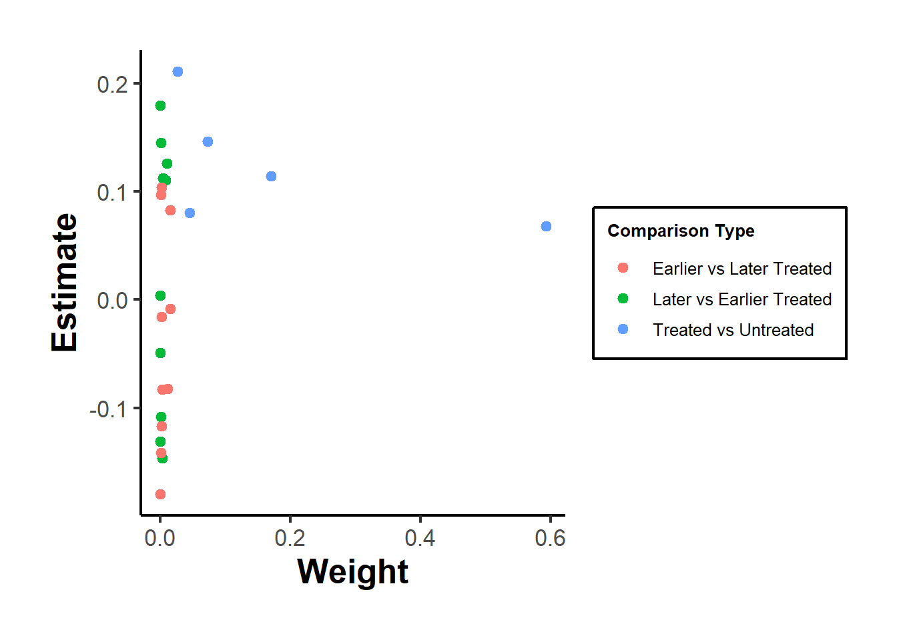
Figure 39.8: Decomposition of treatment effects by comparison type and weight.
Insight: This plot shows the contribution of each 2×2 DiD comparison, highlighting how estimates with large weights dominate the overall TWFE coefficient.
Interpretation and Practical Implications
- Purpose: Decomposes the TWFE DiD estimate into the sum of all two-group, two-period comparisons.
- Insight: Reveals how much each comparison contributes to the overall estimate and whether any have negative or misleading effects.
- Implementation:
- Identify subgroups by treatment timing.
- Compute DiD for each 2×2 comparison (early vs. late, late vs. never, etc.).
- Evaluate how these contribute to the final TWFE estimate.
When time-varying covariates are included that allow for identification within treatment timing groups, certain problematic comparisons (like “early vs. late”) may no longer influence the TWFE estimator directly. These scenarios may collapse into simpler within-group estimates, improving identification (Table 39.6).
| Comparison Type | Description | Common Issue |
|---|---|---|
| Treated vs. Never | Clean comparisons if never-treated units exist | Often reliable |
| Early vs. Late | Later group is control in earlier period | May introduce bias |
| Late vs. Early | Early group is control in later period | May reverse causality |
| Treated vs. Treated | Within-treatment variation by timing | Sensitive to dynamics |
39.6.4 Remedies for TWFE’s Shortcomings
The estimators surveyed here all share a single ambition: recover an interpretable average treatment effect when treatment is staggered, treatment effects are heterogeneous, and dynamics matter. They differ in what data they need, what they assume, and what they deliver. Rather than treat the list as a menu of independent tools, it helps to keep three questions in mind while reading. First, does the design have a meaningful pool of never-treated (or not-yet-treated) units? Second, do treatment effects evolve with exposure length, and is that dynamic itself the object of interest? Third, can units toggle treatment on and off, or is treatment an absorbing state? The answers narrow the field quickly and motivate the cross-references at the end of the subsection (see also Modern Estimators for Staggered Adoption and Modern Concerns in DiD).
The core idea uniting the estimators below is to disaggregate the single TWFE coefficient into well-defined building blocks (typically group-time or cohort-time effects), estimate each block from comparisons that are guaranteed to be clean, and only then aggregate using transparent weights. Stated this way, modern DiD looks less like a zoo of competing methods and more like one strategy with several flavors.
Callaway and Sant’Anna (2021) propose a two-step approach:
- Group-time treatment effects: In each time period, estimate the effect for the cohort that first received treatment in that period (compared to a never-treated group).
- Aggregate: Use a bootstrap procedure to account for autocorrelation and clustering, then aggregate across groups.
- Advantages: Allows for heterogeneous treatment effects across groups and over time; compares treated groups only with never-treated units (or well-chosen controls).
- When it dominates: This is often the default first move when the panel contains a credible never-treated (or not-yet-treated) comparison group and the researcher wants to summarize effects flexibly across cohorts and exposure lengths.
- What its assumptions cost: It needs parallel trends to hold conditional on the chosen comparison group and is most informative when each cohort has enough mass to estimate cohort-specific effects with reasonable precision.
- Implementation:
didpackage in R.
Sun and Abraham (2021) build on Callaway and Sant’Anna (2021) to handle event-study settings:
- Lags and leads: Capture dynamic treatment effects by including time lags and leads relative to the event (treatment).
- Cohort-specific estimates: Estimate separate paths of outcomes for each cohort, controlling for other cohorts carefully.
- Interaction-weighted estimator: Adjusts for differences in when treatment began.
- When it dominates: Choose this when the dynamic path of the effect (the shape of the event study) is the substantive question and standard event-study coefficients in TWFE are contaminated by other cohorts’ treatment effects bleeding into the leads and lags.
- Implementation:
fixestpackage in R.
Imai and Kim (2021) develop methods allowing units to switch in and out of treatment:
- Matching to create a weighted version of TWFE, addressing some of the bias from heterogeneous effects.
- When it dominates: This is the natural choice when treatment is reversible (units enter and exit) so absorbing-state estimators do not apply, and when the researcher is comfortable arguing for conditional ignorability given an observed history. It connects DiD to the broader logic of matching on pre-treatment trajectories.
- Implementation:
wfeandPanelMatchR packages.
- Two-Stage Difference-in-Differences (DiD2S)
Gardner (2022) propose two-stage DiD:
- Idea: Partial out fixed effects first, then perform a second-stage regression that focuses on within-group/time variation.
- Strength: Handles heterogeneous treatment effects well, especially when never-treated units are present.
- When it dominates: It offers a computationally light path to consistent staggered-DiD estimates with familiar regression output, useful when researchers want to incorporate covariates flexibly without committing to the full machinery of cohort-time aggregation.
- Implementation:
did2sR package.
- If a study has never-treated units, De Chaisemartin and d’Haultfoeuille (2020) suggest an switching DiD estimator to recover the average treatment effect.
- When it dominates: Particularly useful when researchers care about a single, period-specific average effect among switchers rather than a full event-time profile.
- Caveat: This approach still fails to detect heterogeneity if treatment effects vary with exposure length (Sun and Shapiro 2022), so pair it with a dynamic specification when long-run effects are plausible.
This estimator imputes missing potential outcomes for treated cells by fitting a low-rank structure to the panel, much like the synthetic control and synthetic difference-in-differences approaches it is conceptually related to. It comes into its own when the panel is wide (many units, many periods), parallel trends across simple cohort groupings looks implausible, and a flexible counterfactual model is preferable to a strict comparison-group design (see also counterfactual estimators).
- Design-based approaches: Arkhangelsky et al. (2024) offer further refinements that incorporate inverse probability weighting.
- Goal: Improve balance and reduce bias from non-random treatment timing.
- When it dominates: Useful when researchers want to keep the convenience of a TWFE-style regression but fear that the weights TWFE implicitly applies are misaligned with the target estimand. The reweighting recasts the estimand as a design-based object, trading some efficiency for a more credible interpretation.
- Stacked DiD (simpler but biased)
- Build stacked datasets for each treatment cohort, running separate regressions for each “event window.”
- This approach is simpler but can still carry biases if the underlying assumptions are violated (Gormley and Matsa 2011; Cengiz et al. 2019; Deshpande and Li 2019).
- When it dominates: It is often the right pragmatic first pass in industry settings or when communicating to audiences uncomfortable with cohort-time aggregation, since each stacked panel reduces to a familiar two-by-two comparison. Treat it as a cousin of the formal staggered-DiD estimators above rather than a substitute, and always cross-check against one of them.
- DR-DID estimators combine outcome regression and propensity score weighting to identify treatment effects, remaining consistent if either model is correctly specified.
- They achieve local efficiency under joint correctness and can be applied to both panel and repeated cross-section data.
- When it dominates: Ideal when covariate adjustment is essential (the conditional ignorability and overlap assumptions are doing real work) and the researcher wants insurance against misspecification of either the outcome or the treatment model.
- When the outcome is binary, count, or otherwise bounded, additive parallel trends can be implausible because shifts at one part of the distribution mechanically constrain shifts elsewhere. Nonlinear DiD addresses this by working on a transformed scale or by directly modeling the distribution. See also Changes-in-Changes and the comparison in CIC vs Quantile DiD.
A practical decision logic ties these threads together. If the panel has a reliable never-treated group and the question is “what is the average effect across cohorts and exposure lengths,” start with Callaway and Sant’Anna (2021) and use Sun and Abraham (2021) when the dynamic path is the focus. If treatment toggles on and off, switch to the panel-matching family of Imai and Kim (2021). If covariates carry most of the identifying weight, prefer a doubly robust estimator. If the panel is wide and parallel trends is hard to defend on raw data, lean on counterfactual estimators such as matrix completion or synthetic difference-in-differences. Stacked DiD and TWFE remain useful as exposition tools and pragmatic baselines, but should not stand alone as the headline estimator under staggered adoption.
39.6.5 Best Practices and Recommendations
The recommendations below collapse the preceding diagnostic and remedy discussions into a workflow. The order matters: confirm whether TWFE is even defensible for the design, diagnose bias before reaching for alternatives, tune the event-study specification to avoid self-inflicted artifacts, and only then graduate to a modern estimator if the diagnostics warrant it. The same logic underlies the more detailed treatment in Modern Estimators for Staggered Adoption.
-
When is TWFE Appropriate?
- Single treatment period: TWFE DiD works well if there is only one treatment period for all treated units (no variation in timing). In that special case it reduces to the simple DiD and the staggered-adoption pathologies vanish.
- Homogeneous effects: If strong theoretical or empirical reasons suggest constant treatment effects across cohorts and over time, TWFE remains a reasonable choice. The argument for homogeneity should be made explicitly and defended, not assumed by default.
-
Diagnosing and Addressing Bias with Staggered Adoption
- Plot treatment timing: Examine the distribution of treatment timing across units (see Visualization). If treatment adoption is highly staggered, TWFE is likely to produce biased estimates.
- Decomposition methods: Use the Goodman-Bacon Decomposition (Goodman-Bacon 2021) to see how TWFE pools comparisons (and whether negative weights emerge). If decomposition is infeasible (e.g., unbalanced panels), the share of never-treated units can indicate potential bias severity.
- Decomposes the TWFE DiD estimate into two-group, two-period comparisons.
- Identifies which comparisons receive negative weights, which can lead to biased estimates.
- Helps determine the influence of specific groups on the overall estimate.
- Discuss heterogeneity: Explicitly state the likelihood of treatment effect heterogeneity and incorporate it into the research design rather than treating it as a footnote.
-
Event-Study Specifications within TWFE
- Avoid arbitrary binning: Do not collapse multiple time periods into a single bin unless you can justify homogeneous effects within that bin.
- Full relative-time indicators: Include flexible event-time indicators, carefully choosing a reference period (commonly \(-1\), the year before treatment). Specifically, include fully flexible relative time indicators and justify the reference period (usually \(l = -1\) or the period just prior to treatment).
- Beware of multicollinearity: Including leads and lags can cause multicollinearity and artificially produce significant “pre-trends.”
- Drop the right periods: If all units eventually get treated, dropping post-treatment periods accidentally can bias results.
- Consider Alternative Estimators: If the diagnostics flag staggered adoption with non-trivial heterogeneity, move to one of the modern estimators discussed above. Robustness checks across several modern estimators (see also Robustness Checks and Modern Concerns in DiD) are now the norm in careful applied work, since agreement across methods that lean on different assumptions is the strongest evidence the result is not an artifact of any one specification.
39.7 Multiple Periods and Variation in Treatment Timing
TWFE has been extended beyond the simple DiD setup to multiple periods and staggered adoption (where treatment occurs at different times for different units). Such designs are common in applied economics, public policy, and longitudinal research. However, standard TWFE regressions can be biased in these contexts when treatment effects are heterogeneous across groups or over time.
39.7.1 Staggered Difference-in-Differences
In staggered treatment adoption (also called event-study DiD or dynamic DiD):
- Different units adopt the treatment at different time periods.
- Standard TWFE often produces biased estimates because it “pools” all treated units (regardless of when they started treatment) together, implicitly comparing newly treated units to already treated ones.
- Treatments that occurred earlier may contaminate the counterfactual for later adopters if the model does not properly handle dynamic or heterogeneous effects (Wing et al. 2024; Baker et al. 2022).
- For applied guidance, see (Wing et al. 2024) and recommendations in (Baker et al. 2022).
Researchers should be aware that standard TWFE can mix treatment effects of early adopters (long-exposed) with later adopters (newly exposed), potentially assigning negative weights to particular group comparisons (Goodman-Bacon 2021).
When using staggered adoption, the following assumptions are critical:
-
Rollout Exogeneity
Treatment assignment and timing should be uncorrelated with potential outcomes.- Evidence: Regress adoption on pre-treatment variables. And if you find evidence of correlation, include linear trends interacted with pre-treatment variables (Hoynes and Schanzenbach 2009)
-
Evidence (Deshpande and Li 2019, 223):
- Treatment is random: Regress treatment status at the unit level to all pre-treatment observables. If you have some that are predictive of treatment status, you might have to argue why it’s not a worry. At best, you want this.
- Treatment timing is random: Conditional on treatment, regress timing of the treatment on pre-treatment observables. At least, you want this.
No Confounding Events
Ensure no other policies or shocks coincide with the staggered treatment rollout.-
Exclusion Restrictions
- No Anticipation: Treatment timing should not affect outcomes prior to treatment.
- Invariance to History: Treatment duration shouldn’t matter; only the treated status matters (often violated).
-
Standard DID Assumptions
- Parallel Trends (Conditional or Unconditional)
- Random Sampling
- Overlap (Common Support)
- Effect Additivity
39.8 Parallel Trends as a Debiasing Device
The usual way to state parallel trends is as a claim about trajectories: had the treated group not been treated, its average outcome would have moved in step with the comparison group’s. There is a second way to read the same assumption, and it is often the more useful one when you have to defend a design. Read this way, difference-in-differences is not a new kind of comparison at all. It is the ordinary cross-sectional comparison of treated and untreated units, which is contaminated by selection bias, minus an estimate of that selection bias taken from a period in which the treatment cannot have had any effect. Parallel trends is then simply the assumption that the bias you can measure before treatment is the bias that contaminates the comparison after treatment.
Cunningham (2021) makes this point through the decomposition of the 2x2 estimator into the average treatment effect on the treated plus a “non-parallel trends bias”, and Cunningham (2026) states it directly: the parallel trends assumption faces the same selection problem as any comparison outside a randomized trial, except that the worry is selection on the changes in the untreated potential outcome rather than on its levels. The same idea has older and more formal roots. Heckman and Robb Jr (1985) analyze before-after and fixed-effect estimators of training effects as devices for removing a permanent component of selection bias; Heckman et al. (1998) measure that bias directly with experimental data; and Sofer et al. (2016) show that the pre-treatment outcome is a negative control outcome, so that difference-in-differences is a special case of bias correction with negative controls.
The reframing earns its place because it changes the question an analyst asks. “Do the trends look parallel?” invites an inspection of a plot. “Is the bias I can measure in the pre-period the bias I need to remove in the post-period?” invites an inquiry into how units came to be treated, which is where the credibility of a difference-in-differences design is actually decided. This section develops the algebra, connects it to negative controls and to lagged-outcome adjustment, works out which selection mechanisms keep the bias stable, and then measures the bias directly in the one setting where that is possible: a randomized experiment whose control group can be swapped for an observational comparison group.
39.8.1 The Bias Difference-in-Differences Subtracts
Take the canonical design of Section 39.3: a treated group (\(D = 1\)) and a comparison group (\(D = 0\)), observed in a pre-period \(t = 0\) and a post-period \(t = 1\), with treatment switched on for the treated group between the two. Define the simple difference in outcomes at each date,
\[ \text{SDO}_t = E[Y_t \mid D = 1] - E[Y_t \mid D = 0], \]
and the selection bias at each date,
\[ B_t = E[Y_t(0) \mid D = 1] - E[Y_t(0) \mid D = 0]. \]
\(B_t\) is the gap that would separate the two groups at date \(t\) if nobody were treated. It is the selection bias of a cross-sectional comparison made at that date. In the post-period the observed treated outcome is \(Y_1(1)\), so adding and subtracting \(E[Y_1(0) \mid D = 1]\) gives
\[ \text{SDO}_1 = \underbrace{E[Y_1(1) - Y_1(0) \mid D = 1]}_{\text{ATT}} + B_1 . \]
In the pre-period nobody is treated yet. Under no anticipation the treated group’s observed outcome is its untreated outcome, so the pre-period comparison contains no treatment effect at all:
\[ \text{SDO}_0 = B_0 . \]
The pre-period gap is therefore a pure measurement of selection bias. Subtracting it from the post-period gap is the difference-in-differences estimand:
\[ \tau_{\text{DiD}} = \text{SDO}_1 - \text{SDO}_0 = \text{ATT} + \left(B_1 - B_0\right). \]
The estimator is unbiased for the ATT exactly when \(B_1 = B_0\), that is, when the selection bias is stable over time. Writing out \(B_1 - B_0\) shows that this is the parallel trends condition of Section 39.3 rearranged:
\[ B_1 - B_0 = E[Y_1(0) - Y_0(0) \mid D = 1] - E[Y_1(0) - Y_0(0) \mid D = 0]. \]
The right-hand side is also the selection bias of a cross-sectional comparison of changes. If you first difference each unit’s outcome and compare the treated and comparison means of \(\Delta Y\), you get the ATT plus selection bias in \(\Delta Y(0)\), and parallel trends says that bias is zero. This is the sense in which Cunningham (2026) describes parallel trends as no selection on trends in the untreated outcome. Both readings are the same algebra; the bias-stability reading is the one that makes clear what is being estimated and what is being assumed.
Three features of the decomposition are worth stating plainly. First, the levels may differ by any amount. A design in which the treated group earns twelve thousand dollars less than the comparison group is not, on that account, a bad design; \(B_0\) is allowed to be large. Second, the size of \(B_0\) is the size of the bet. The estimator removes \(B_0\) in full and inherits any change in the bias one for one, so a small percentage drift in a large bias can be as large as the effect being estimated. Third, the assumption is untestable in the post-period for the same reason any selection-bias assumption is untestable: \(B_1\) involves \(E[Y_1(0) \mid D = 1]\), which is never observed.
The decomposition also places difference-in-differences inside a family of estimators that subtract some multiple \(\theta\) of the pre-period gap,
\[ \hat\tau(\theta) = \text{SDO}_1 - \theta \, \text{SDO}_0, \qquad E[\hat\tau(\theta)] = \text{ATT} + \left(B_1 - \theta B_0\right), \]
and the estimator is unbiased when \(\theta\) equals \(\theta^{*} = B_1 / B_0\), the ratio of post-period to pre-period bias. Table 39.7 lists the familiar members. The cross-sectional comparison sets \(\theta = 0\) and assumes there is no bias to remove. Difference-in-differences sets \(\theta = 1\) and assumes the bias is stable. Regression on the lagged outcome sets \(\theta = \hat\beta\), the within-group slope of \(Y_1\) on \(Y_0\), because if treatment is ignorable conditional on the pre-period outcome and the conditional mean is linear, \(E[Y_1(0) \mid D, Y_0] = a + \beta Y_0\), then \(B_1 = \beta B_0\). Since \(\beta\) is typically below one for persistent but mean-reverting outcomes, lagged-outcome adjustment removes less of the pre-period gap than difference-in-differences does.
| Estimator | Weight \(\theta\) on the pre-period gap | Assumption about the post-period bias |
|---|---|---|
| Cross-sectional comparison | \(0\) | \(B_1 = 0\): no selection bias |
| Lagged-outcome (ANCOVA) adjustment | \(\hat\beta\), the within-group slope of \(Y_1\) on \(Y_0\) | \(B_1 = \beta B_0\): ignorability given \(Y_0\) |
| Difference-in-differences | \(1\) | \(B_1 = B_0\): stable bias (parallel trends) |
This is the bracketing result in the form that is easiest to remember. If the truth is ignorability given \(Y_0\) with \(0 < \beta < 1\), difference-in-differences over-corrects; if the truth is parallel trends, lagged-outcome adjustment under-corrects. For a positive effect the two estimates therefore bracket the true effect when one of the two assumptions holds, a result Angrist and Pischke (2009) derive for linear models and Ding and Li (2019) extend to nonparametric and inverse probability weighted estimators. Section 39.8.4 checks the bracket against an experimental benchmark.
The same family appears in randomized experiments under another name. CUPED adjusts the post-period difference in means by \(\theta\) times the pre-period difference (Deng et al. 2013), and Section 29.4 shows that difference-in-differences is CUPED with \(\theta\) fixed at one. The difference is in what justifies the choice. In an experiment \(B_0 = B_1 = 0\) in expectation, every \(\theta\) is unbiased, and \(\theta\) is chosen to minimize variance. Outside an experiment \(B_0\) is not zero, and \(\theta\) is an assumption about the selection process.
39.8.2 The Pre-Period Outcome as a Negative Control
The negative control literature arrives at the same estimator from the other direction. A negative control outcome is a variable that the treatment cannot affect but that shares the confounding of the outcome of interest (Lipsitch et al. 2010; Shi, Miao, and Tchetgen Tchetgen 2020). The pre-treatment outcome is the textbook example: the future cannot cause the past, and whatever unmeasured characteristics push units into treatment also shaped their outcomes before treatment. An apparent “effect” of treatment on the pre-period outcome is therefore pure confounding, and if the confounder moves the pre-period and post-period outcomes by the same additive amount, subtracting the one from the other removes the confounding. Sofer et al. (2016) call this condition additive equi-confounding and show that difference-in-differences is exactly negative outcome control under it. Section ?? places the same subtraction on the ladder from detecting bias, to reducing it, to removing it.
The negative control view adds two things to the debiasing view. The first is a diagnosis of scale. Additive equi-confounding requires the confounder to shift both outcomes by the same amount on the scale on which the subtraction is done, which is why parallel trends in levels and in logs are different assumptions (Roth and Sant’Anna 2023). Sofer et al. (2016) replace it with quantile-quantile equi-confounding, which asks only that treated and untreated units differ in the same way on the quantile scale of the confounder for both outcomes, and so is invariant to monotone transformations of either outcome. They present the resulting identification result as the negative control analog of the changes-in-changes model of Athey and Imbens (2006), and they note that both can be read as ways of estimating the degree of selection bias due to unobserved confounding. The second is a path beyond a fixed \(\theta\). When a second proxy for the confounder is available, the amount of debiasing need not be assumed; it can be estimated, which is the logic of the proximal estimator in Section ??.
39.8.3 When Is the Bias Stable? Selection Mechanisms
Because parallel trends is an assumption about selection bias, whether it holds depends on how units were selected into treatment and on how the untreated outcome evolves. A simple components-of-variance model makes the dependence explicit. Let
\[ Y_{it}(0) = \alpha_i + \lambda_t + \varepsilon_{it}, \]
with a permanent component \(\alpha_i\), a common time effect \(\lambda_t\), and a time-varying component \(\varepsilon_{it}\). The time effect cancels from every \(B_t\), and
\[ B_t = \underbrace{E[\alpha_i \mid D = 1] - E[\alpha_i \mid D = 0]}_{\text{permanent, constant over } t} + \underbrace{E[\varepsilon_{it} \mid D = 1] - E[\varepsilon_{it} \mid D = 0]}_{\text{transitory, may vary over } t}. \]
Difference-in-differences removes the first term completely and leaves \(B_1 - B_0\) equal to the change in the second. Whether that change is zero turns on what selection is based on (Heckman and Robb Jr 1985; Chabé-Ferret 2015).
Selection on the permanent component is the case difference-in-differences was built for. If units enter treatment because of who they are, the transitory gap is zero in every period and the bias is perfectly stable, however large it is.
Selection on a transitory shock is the case it handles worst. Training programs enroll people when their earnings are unusually low, and Ashenfelter (1978) documented the resulting dip in participants’ earnings just before enrollment (see also Ashenfelter and Card 1985). If \(\varepsilon_{it}\) is a stationary first-order autoregression with persistence \(\rho < 1\) and selection depends on the shock in the base period, then \(B^{\varepsilon}_1 = \rho B^{\varepsilon}_0\), the post-period bias is smaller in magnitude than the pre-period bias, and difference-in-differences over-corrects by \((\rho - 1) B^{\varepsilon}_0\). The same stationarity gives \(B^{\varepsilon}_{-1} = \rho B^{\varepsilon}_0\) one period before the base period, so a symmetric difference-in-differences that compares periods equally far before and after the selection date removes the transitory bias exactly. Chabé-Ferret (2015) analyzes richer earnings and selection processes calibrated to job training programs and finds that symmetric difference-in-differences generally outperforms matching on pre-treatment outcomes, which tends to underestimate the effect.
Selection on the baseline level of a random walk is a case in which the bias is stable going forward even though it was not stable going in. If \(\varepsilon_{it}\) follows a random walk, the change after the base period is unpredictable from anything known at the base period, so \(B_1 = B_0\); but the units selected for low base-period outcomes got there through recent negative shocks, so the pre-period gap moves just before treatment. Cunningham (2026) illustrates this case by simulation and draws the practical lesson that a failed pre-trend test can coexist with valid parallel trends.
Selection on one’s own trajectory is the case that breaks the design. If units choose treatment because they anticipate their untreated outcome will grow more slowly (or because they anticipate a large gain from treatment), the bias drifts by construction. Marx et al. (2024) relate parallel trends to economic models of dynamic choice and characterize when forward-looking selection violates it; Cunningham (2026) calls the extreme version, in which units select on their own treatment gains, the “perfect doctor” assignment mechanism.
The simulation below puts the five cases side by side. There is no treatment effect anywhere, so every number in Table 39.8 is bias. Each unit is observed one period before the base period (\(t = -1\)), in the base period (\(t = 0\)), and one period after (\(t = 1\)), and the 30 percent of units with the lowest value of the selection index are treated.
set.seed(2026)
pt_n <- 200000
pt_rho <- 0.6
# Untreated outcomes in periods -1, 0 (base) and +1: a permanent component,
# an optional unit-specific trend, and either AR(1) or random-walk shocks.
pt_draw <- function(dynamics = c("stationary", "random_walk"), trend_sd = 0) {
dynamics <- match.arg(dynamics)
alpha <- rnorm(pt_n)
g <- rnorm(pt_n, 0, trend_sd)
u <- matrix(rnorm(3 * pt_n), pt_n, 3)
e <- u
for (k in 2:3) {
e[, k] <- if (dynamics == "stationary") {
pt_rho * e[, k - 1] + sqrt(1 - pt_rho^2) * u[, k]
} else {
e[, k - 1] + u[, k]
}
}
list(alpha = alpha, g = g, e = e, y = alpha + e + outer(g, c(-1, 0, 1)))
}
pt_low30 <- function(x) as.integer(x <= quantile(x, 0.3))
# With no treatment effect, every estimate is pure bias.
pt_bias <- function(s, D) {
B <- colMeans(s$y[D == 1, ]) - colMeans(s$y[D == 0, ])
c(`Pre-trend` = B[2] - B[1],
`Cross-section` = B[3],
`DiD` = B[3] - B[2],
`Symmetric DiD` = B[3] - B[1],
`Lagged outcome` = coef(lm(s$y[, 3] ~ D + s$y[, 2]))[["D"]])
}
pt_s <- list(pt_draw("stationary"), pt_draw("stationary"), pt_draw("stationary"),
pt_draw("random_walk"), pt_draw("stationary", trend_sd = 0.3))
pt_mech <- rbind(
"Permanent component" = pt_bias(pt_s[[1]], pt_low30(pt_s[[1]]$alpha)),
"Base-period outcome, AR(1) shocks" = pt_bias(pt_s[[2]], pt_low30(pt_s[[2]]$y[, 2])),
"Base-period shock only, AR(1) shocks" = pt_bias(pt_s[[3]], pt_low30(pt_s[[3]]$e[, 2])),
"Base-period outcome, random walk" = pt_bias(pt_s[[4]], pt_low30(pt_s[[4]]$y[, 2])),
"Own trend (dynamic selection)" = pt_bias(pt_s[[5]], pt_low30(pt_s[[5]]$g))
)
knitr::kable(pt_mech, digits = 2,
caption = "Bias of four estimators and the pre-trend under five selection mechanisms. The true effect is zero, so every entry is bias. Outcomes have unit variance in the permanent and transitory components, AR(1) persistence is 0.6, and the lowest 30 percent on the selection index are treated.")| Pre-trend | Cross-section | DiD | Symmetric DiD | Lagged outcome | |
|---|---|---|---|---|---|
| Permanent component | 0.00 | -1.66 | 0.00 | 0.00 | -0.46 |
| Base-period outcome, AR(1) shocks | -0.47 | -1.87 | 0.47 | 0.00 | 0.00 |
| Base-period shock only, AR(1) shocks | -0.66 | -0.98 | 0.67 | 0.01 | 0.47 |
| Base-period outcome, random walk | -0.96 | -2.88 | 0.00 | -0.96 | 0.00 |
| Own trend (dynamic selection) | -0.49 | -0.49 | -0.50 | -0.99 | -0.50 |
Table 39.8 is a compact map of when each amount of debiasing is the right one. Under selection on the permanent component, difference-in-differences is exact and the pre-trend is flat, while lagged-outcome adjustment is biased because it removes only part of a bias that should be removed in full. Under selection on the base-period outcome with mean-reverting shocks, the ordering flips: the pre-trend shows the dip, difference-in-differences over-corrects by about 0.47, and lagged-outcome adjustment is exact because selection really is on \(Y_0\). When selection is on the transitory shock alone, neither is right, but the symmetric difference-in-differences is. Under a random walk the pre-trend is the largest in the table and yet difference-in-differences is unbiased, which is the case in which reading the pre-trend as a test of parallel trends gives the wrong answer. Only under selection on the unit’s own trend is the pre-trend an honest guide to the post-period drift: the two are equal, which is precisely the situation that a linear-trend extrapolation or the smoothness restriction of Section 39.20.8 is designed for.
The general lesson is that a pre-period diagnostic is informative about the post-period bias only to the extent that the process generating the bias is the same on both sides of the base period. That is a claim about the assignment mechanism, and it has to be argued from institutional knowledge of how units came to be treated (Cunningham 2026).
39.8.4 Replication: Measuring the Bias in the NSW Experiment
In observational data \(B_t\) cannot be measured after treatment, because \(E[Y_1(0) \mid D = 1]\) is missing. The National Supported Work Demonstration (NSW) is the classic exception. NSW randomized applicants into a subsidized work program, so its experimental control group reveals what participants would have earned without the program. LaLonde (1986) replaced that control group with comparison samples drawn from national surveys and showed that the nonexperimental estimators of the day, difference-in-differences among them, could not reliably recover the experimental answer. What makes an experiment so useful here is that the experimental controls share the participants’ untreated outcome distribution, so comparing the experimental controls with a nonexperimental comparison group measures the selection bias directly, in every year, before and after the program. A nonexperimental estimator applied to experimental controls and comparison units has a true effect of zero, so whatever it returns is its bias. Heckman et al. (1998) used this device with the experimental controls of the National JTPA Study to decompose selection bias into its components, Smith and Todd (2005) apply it to the NSW to evaluate cross-sectional and difference-in-differences matching estimators, and Imbens and Xu (2025) revisit the NSW data with modern methods and stress the same kind of validation exercise.
The extracts used here are the ones distributed with Cunningham (2021) through the causaldata package: the Dehejia and Wahba (1999) subsample of LaLonde’s NSW men, with 185 participants, 260 experimental controls, and two pre-program earnings measures labelled 1974 and 1975, and the CPS comparison sample of 15,992 men that LaLonde constructed and Dehejia and Wahba (1999) reuse. The outcome is real annual earnings, and 1978 is the post-program year.
library(dplyr)
pt_lal <- dplyr::bind_rows(causaldata::nsw_mixtape, causaldata::cps_mixtape) |>
dplyr::mutate(grp = dplyr::case_when(
data_id == "CPS1" ~ "CPS",
treat == 1 ~ "NSW participants",
TRUE ~ "NSW experimental controls"
))
pt_mean <- function(g, v) mean(pt_lal[[v]][pt_lal$grp == g])
pt_se <- function(g1, g2, v) {
sqrt(var(pt_lal[[v]][pt_lal$grp == g1]) / sum(pt_lal$grp == g1) +
var(pt_lal[[v]][pt_lal$grp == g2]) / sum(pt_lal$grp == g2))
}
pt_years <- c("re74", "re75", "re78")
pt_tab <- data.frame(
Year = c(1974, 1975, 1978),
`NSW participants` = sapply(pt_years, pt_mean, g = "NSW participants"),
`NSW controls` = sapply(pt_years, pt_mean, g = "NSW experimental controls"),
CPS = sapply(pt_years, pt_mean, g = "CPS"),
check.names = FALSE, row.names = NULL
)
pt_tab$`SDO (participants minus CPS)` <- pt_tab$`NSW participants` - pt_tab$CPS
pt_tab$`Bias B (controls minus CPS)` <- pt_tab$`NSW controls` - pt_tab$CPS
pt_tab$`SE of B` <- sapply(pt_years, pt_se, g1 = "NSW experimental controls", g2 = "CPS")
pt_tab_print <- pt_tab
pt_tab_print$Year <- as.character(pt_tab_print$Year)
knitr::kable(pt_tab_print, digits = 0, format.args = list(big.mark = ","),
caption = "Mean real earnings by group and year in the NSW and CPS samples. The SDO column is the observational comparison; the bias column replaces participants with experimental controls and so measures the selection bias in each year.")| Year | NSW participants | NSW controls | CPS | SDO (participants minus CPS) | Bias B (controls minus CPS) | SE of B |
|---|---|---|---|---|---|---|
| 1974 | 2,096 | 2,107 | 14,017 | -11,921 | -11,910 | 361 |
| 1975 | 1,532 | 1,267 | 13,651 | -12,119 | -12,384 | 206 |
| 1978 | 6,349 | 4,555 | 14,847 | -8,498 | -10,292 | 349 |
Table 39.9 contains everything the decomposition needs. In 1978 participants earned 8,498 dollars less than CPS men, and the experimental ATT, the difference between participants and experimental controls, is 1,794 dollars. The cross-sectional comparison is therefore wrong by about 10,300 dollars, and that error is exactly the selection bias \(B_{1978}\) in the last row. Figure 39.9 plots the bias in all three years.
library(ggplot2)
pt_B <- pt_tab$`Bias B (controls minus CPS)`
ggplot(pt_tab, aes(Year, `Bias B (controls minus CPS)`)) +
annotate("segment", x = 1975, xend = 1978, y = pt_B[2], yend = pt_B[2],
linetype = "dashed", colour = "grey40") +
annotate("segment", x = 1978.15, xend = 1978.15, y = pt_B[2], yend = pt_B[3],
colour = "firebrick", linewidth = 0.8) +
annotate("text", x = 1977.9, y = (pt_B[2] + pt_B[3]) / 2, hjust = 1, size = 3.5,
label = "bias of DiD\n(1975 base)", colour = "firebrick") +
geom_pointrange(aes(ymin = `Bias B (controls minus CPS)` - 1.96 * `SE of B`,
ymax = `Bias B (controls minus CPS)` + 1.96 * `SE of B`)) +
geom_line(colour = "grey60") +
scale_x_continuous(breaks = c(1974, 1975, 1978)) +
scale_y_continuous(labels = scales::comma) +
labs(x = NULL, y = "Selection bias (dollars)") +
causalverse::ama_theme()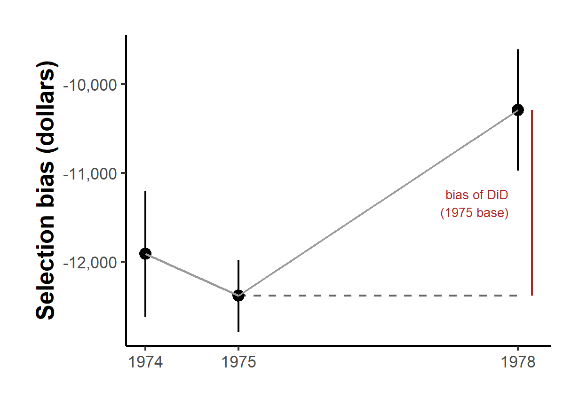
Figure 39.9: Selection bias in each year, measured as mean earnings of NSW experimental controls minus mean earnings of the CPS sample, with 95 percent confidence intervals. The dashed line carries the 1975 bias forward, which is what difference-in-differences with a 1975 base subtracts; the gap at 1978 is the bias of the difference-in-differences estimator.
The bias is very large and it is not stable. It deepens by about 470 dollars between the two pre-program years, which is Ashenfelter’s dip seen through the comparison-group lens: the experimental sample was drawn from people whose earnings had collapsed (more than two thirds of the experimental controls report zero earnings in the 1975 measure, against 11 percent of the CPS), and then it recovers by about 2,100 dollars by 1978 as many of them return to work. The decomposition predicts what difference-in-differences will do with that pattern, and Table 39.10 confirms it. Each row applies one estimator twice: once to participants versus the CPS, where the answer should be the experimental 1,794, and once to experimental controls versus the CPS, where the answer should be zero and the estimate is the estimator’s bias.
library(fixest)
pt_obs <- pt_lal |> dplyr::filter(grp != "NSW experimental controls") |>
dplyr::mutate(D = as.integer(grp == "NSW participants"))
pt_plc <- pt_lal |> dplyr::filter(grp != "NSW participants") |>
dplyr::mutate(D = as.integer(grp == "NSW experimental controls"))
pt_fits <- function(dat) {
list(
`Cross-section (1978)` = feols(re78 ~ D, dat, vcov = "hetero"),
`DiD, 1975 base` = feols(I(re78 - re75) ~ D, dat, vcov = "hetero"),
`DiD, 1974 base` = feols(I(re78 - re74) ~ D, dat, vcov = "hetero"),
`Lagged outcome (1975 earnings)` = feols(re78 ~ D + re75, dat, vcov = "hetero")
)
}
pt_row <- function(m) c(coef(m)[["D"]], se(m)[["D"]])
pt_est <- t(sapply(pt_fits(pt_obs), pt_row))
pt_plb <- t(sapply(pt_fits(pt_plc), pt_row))
pt_att <- pt_mean("NSW participants", "re78") - pt_mean("NSW experimental controls", "re78")
pt_att_se <- pt_se("NSW participants", "NSW experimental controls", "re78")
pt_estimators <- rbind(
data.frame(Estimator = rownames(pt_est),
Estimate = pt_est[, 1], SE = pt_est[, 2],
`Placebo estimate (bias)` = pt_plb[, 1], `Placebo SE` = pt_plb[, 2],
check.names = FALSE),
data.frame(Estimator = "Experimental benchmark", Estimate = pt_att, SE = pt_att_se,
`Placebo estimate (bias)` = NA, `Placebo SE` = NA, check.names = FALSE)
)
rownames(pt_estimators) <- NULL
options(knitr.kable.NA = "")
knitr::kable(pt_estimators, digits = 0, format.args = list(big.mark = ","),
caption = "Nonexperimental estimates of the NSW effect on 1978 earnings with the CPS comparison group, and the same estimators applied to experimental controls versus the CPS (placebo), where the true effect is zero. Heteroskedasticity-robust standard errors.")| Estimator | Estimate | SE | Placebo estimate (bias) | Placebo SE |
|---|---|---|---|---|
| Cross-section (1978) | -8,498 | 582 | -10,292 | 348 |
| DiD, 1975 base | 3,621 | 610 | 2,092 | 380 |
| DiD, 1974 base | 3,424 | 658 | 1,618 | 469 |
| Lagged outcome (1975 earnings) | -78 | 596 | -1,691 | 367 |
| Experimental benchmark | 1,794 | 671 |
Read Table 39.10 through the decomposition. The cross-section is off by the full bias of about 10,300 dollars. Difference-in-differences with a 1975 base subtracts the 1975 gap of 12,119 dollars and lands at 3,621, removing roughly four fifths of the bias but over-correcting, because the bias it subtracts is larger than the bias that remains in 1978. Its placebo bias of 2,092 is precisely the drift \(B_{1978} - B_{1975}\) in Figure 39.9, and the observational estimate decomposes exactly as experimental ATT plus bias drift minus a small randomization imbalance between participants and controls in 1975: \(1{,}794 + 2{,}092 - 265 = 3{,}621\). Moving the base to 1974, further from the enrollment dip and closer to the symmetric comparison that the stationary-shock model favors, reduces the bias, but only modestly. Lagged-outcome adjustment errs in the opposite direction, and the experimental answer lies between it and difference-in-differences, as the bracketing result predicts.
The \(\theta\) family makes the same point in one picture. Figure 39.10 traces \(\hat\tau(\theta) = \text{SDO}_{1978} - \theta \, \text{SDO}_{1975}\) across the possible amounts of debiasing.
pt_sdo78 <- pt_mean("NSW participants", "re78") - pt_mean("CPS", "re78")
pt_sdo75 <- pt_mean("NSW participants", "re75") - pt_mean("CPS", "re75")
pt_beta <- coef(feols(re78 ~ D + re75, pt_obs))[["re75"]]
pt_theta_star <- (pt_sdo78 - pt_att) / pt_sdo75
pt_dial <- data.frame(theta = seq(0, 1.2, by = 0.01))
pt_dial$estimate <- pt_sdo78 - pt_dial$theta * pt_sdo75
pt_marks <- data.frame(
theta = c(0, pt_beta, pt_theta_star, 1),
label = c("cross-section", "lagged outcome", "matches experiment", "DiD"),
hjust = c(-0.12, -0.12, 1.08, 1.08),
vjust = c(0.5, 1.6, -0.6, -0.6)
)
pt_marks$estimate <- pt_sdo78 - pt_marks$theta * pt_sdo75
ggplot(pt_dial, aes(theta, estimate)) +
annotate("rect", xmin = -Inf, xmax = Inf, ymin = pt_att - 1.96 * pt_att_se,
ymax = pt_att + 1.96 * pt_att_se, alpha = 0.15, fill = "steelblue") +
geom_hline(yintercept = pt_att, colour = "steelblue") +
geom_line() +
geom_point(data = pt_marks, size = 2.5) +
geom_text(data = pt_marks, aes(label = label, hjust = hjust, vjust = vjust), size = 3.3) +
scale_y_continuous(labels = scales::comma) +
labs(x = expression(theta ~ "(share of the 1975 gap subtracted)"),
y = "Estimated effect (dollars)") +
causalverse::ama_theme()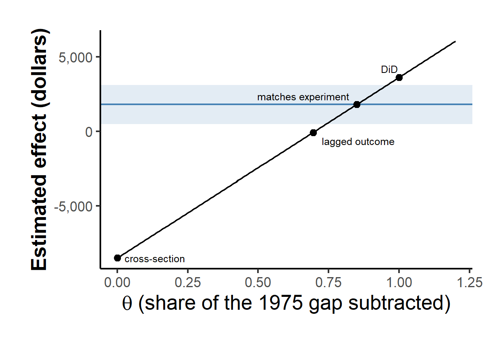
Figure 39.10: The debiasing dial for the NSW data. Each point on the line subtracts theta times the 1975 earnings gap from the 1978 earnings gap. The shaded band is the 95 percent confidence interval of the experimental benchmark. Lagged-outcome adjustment and difference-in-differences sit on either side of the value of theta that would reproduce the experiment.
The value that reproduces the experiment is \(\theta^{*} \approx 0.85\), so the right amount of debiasing in these data was to subtract about 85 percent of the pre-period gap. Lagged-outcome adjustment subtracts about 70 percent and difference-in-differences subtracts all of it. The placebo comparison gives an almost identical ratio, \(B_{1978} / B_{1975} \approx 0.83\), which is the population quantity that \(\theta^{*}\) estimates. Nothing in the observational data alone pins down this number, which is the whole difficulty; what the dial does is turn the identifying assumption into a single interpretable parameter whose plausible range can be argued from the selection process.
Two further lessons come straight from Figure 39.9. First, the pre-trend was informative but in the wrong direction. Between 1974 and 1975 the bias moved by \(-474\) dollars; between 1975 and 1978 it moved by \(+2{,}092\), opposite in sign and about four times larger (about one and a half times larger per elapsed year). A smoothness-style extrapolation of the pre-period slope would have predicted a 1978 bias of about \(-13{,}800\) and corrected the estimate further away from the truth, and a relative-magnitudes bound in the sense of Rambachan and Roth (2023) would need a multiplier well above one to cover the experimental answer. This is the transitory-selection row of Table 39.8 in real data. Second, the problem is visible only because the experiment supplies \(B_{1978}\). In an ordinary application the analyst sees the participants and the CPS, the two pre-period gaps, and the post-period gap, and the case for bias stability has to be made from what is known about why the participants were participants. In NSW that knowledge points squarely at selection on a transitory state, which is exactly the case in which a full subtraction of the pre-period gap should be expected to overshoot.
39.8.5 Extension: Conditional Bias Stability and Covariates
Covariates enter the debiasing view naturally. Let \(m^{d}_t(x) = E[Y_t(0) \mid D = d, X = x]\) and write \(\Delta m^{d}(x) = m^{d}_1(x) - m^{d}_0(x)\) for the untreated trend of group \(d\) at covariate value \(x\). With \(F_d\) the distribution of \(X\) in group \(d\), the drift in the unconditional bias splits into two pieces:
\[ B_1 - B_0 = \underbrace{\int \left[\Delta m^{1}(x) - \Delta m^{0}(x)\right] dF_1(x)}_{\text{bias drift within covariate cells}} + \underbrace{\int \Delta m^{0}(x)\, dF_1(x) - \int \Delta m^{0}(x)\, dF_0(x)}_{\text{drift from covariate imbalance}}. \]
Conditional parallel trends says the first piece is zero: within cells of \(X\) the bias is stable (Heckman et al. 1997; Abadie 2005). The second piece is the reason to condition at all. It is non-zero only when two things are true at once, which is the two-pathway test that Cunningham (2026) recommends for choosing covariates: the covariate must be imbalanced between treated and comparison units (\(F_1 \neq F_0\)), and it must predict the trend in the untreated outcome (\(\Delta m^{0}\) varies with \(x\)). A covariate that is imbalanced but irrelevant to trends, or relevant to trends but balanced, contributes nothing to the drift and nothing to the correction. Outcome regression, inverse probability weighting, and the doubly robust estimators of Sant’Anna and Zhao (2020) are three ways of removing the second piece; none of them can touch the first. In staggered designs Callaway and Sant’Anna (2021) apply the same logic group by group, conditioning on covariates measured before each cohort’s treatment and fitting a separate propensity score for each comparison that enters a group-time effect. Section 39.9 takes up the harder failure of the first piece, in which the effect of the covariate on the outcome itself differs across groups or periods.
In the NSW data, the covariates are severely imbalanced: participants are younger, less educated, far more likely to be Black, unmarried, and without a degree, and far more likely to have had no earnings before the program. Several of these plausibly predict earnings growth. Table 39.11 climbs a short ladder of conditioning sets with the improved doubly robust estimator of Sant’Anna and Zhao (2020) and reports each estimate alongside its placebo bias.
library(DRDID)
pt_dr <- function(dat, rhs, trim = FALSE) {
if (trim) {
ps <- fitted(glm(D ~ age + I(age^2) + educ + I(educ^2) + black + hisp + marr +
nodegree + re74 + re75 + I(re74 == 0) + I(re75 == 0),
family = binomial, data = dat))
dat <- dat[ps >= 0.01 | dat$D == 1, ]
}
if (is.null(rhs)) {
fit <- feols(I(re78 - re75) ~ D, dat, vcov = "hetero")
return(c(coef(fit)[["D"]], se(fit)[["D"]]))
}
X <- model.matrix(rhs, data = dat)
dr <- DRDID::drdid_imp_panel(y1 = dat$re78, y0 = dat$re75, D = dat$D, covariates = X)
c(dr$ATT, dr$se)
}
pt_demog <- ~ age + I(age^2) + educ + black + hisp + marr + nodegree
pt_hist <- ~ age + I(age^2) + educ + black + hisp + marr + nodegree + re74 + I(re74 == 0)
pt_ladder_specs <- list(
list("No covariates", NULL, FALSE),
list("Demographics", pt_demog, FALSE),
list("Demographics and 1974 earnings", pt_hist, FALSE),
list("Demographics and 1974 earnings, overlap trimmed", pt_hist, TRUE)
)
pt_ladder <- do.call(rbind, lapply(pt_ladder_specs, function(s) {
e <- pt_dr(pt_obs, s[[2]], s[[3]])
p <- pt_dr(pt_plc, s[[2]], s[[3]])
data.frame(`Conditioning set` = s[[1]], Estimate = e[1], SE = e[2],
`Placebo estimate (bias)` = p[1], `Placebo SE` = p[2], check.names = FALSE)
}))
knitr::kable(pt_ladder, digits = 0, format.args = list(big.mark = ","),
caption = "Doubly robust difference-in-differences (1975 base) under increasingly rich conditioning sets. The placebo columns apply the same estimator to experimental controls versus the CPS, where the true effect is zero. Trimming drops CPS men with an estimated participation probability below 0.01. The experimental benchmark is 1,794.")| Conditioning set | Estimate | SE | Placebo estimate (bias) | Placebo SE |
|---|---|---|---|---|
| No covariates | 3,621 | 610 | 2,092 | 380 |
| Demographics | 2,682 | 674 | 977 | 490 |
| Demographics and 1974 earnings | 1,931 | 696 | 321 | 558 |
| Demographics and 1974 earnings, overlap trimmed | 1,790 | 691 | 225 | 542 |
The placebo column is the one to read in Table 39.11. Unconditionally the bias drift is about 2,100 dollars. Conditioning on demographics roughly halves it, which is the second piece of the decomposition at work. Participants are young and mostly unmarried, and in the CPS those characteristics predict fast earnings growth: men aged 30 or younger gained 2,818 dollars on average between 1975 and 1978 while older men lost 281, and unmarried men gained 3,134 against 411 for married men. Reweighting the CPS toward the participants’ profile therefore steepens the comparison group’s trend and absorbs part of the drift that the unconditional estimator attributed to the program. Adding the 1974 earnings measure removes most of what is left, and trimming the CPS to men who resemble participants brings the remaining placebo bias to a few hundred dollars, well within its standard error. The trimmed point estimate lands almost on the experimental benchmark, but with a standard error near 700 dollars that coincidence should not be over-read; the evidence is the shrinking placebo bias, not the closeness of one number.
Two cautions keep this from becoming a recipe. Conditioning on an earlier outcome such as the 1974 earnings measure moves the design part of the way from bias stability toward ignorability given past outcomes, the lagged-outcome assumption of Table 39.7. Here that is the right direction, because selection was on a transitory earnings state, but when parallel trends would have held unconditionally, matching or conditioning on pre-treatment outcomes can manufacture regression-to-the-mean bias (Daw and Hatfield 2018; Chabé-Ferret 2015). And the estimates in the table were chosen with the experimental answer in view, which is exactly what an applied analyst cannot do. Smith and Todd (2005) show that results of this kind are sensitive to the sample and the specification, and Imbens and Xu (2025) argue that the credible use of such adjustments rests on overlap and on validation exercises, such as the placebo comparison here, rather than on the proximity of any single estimate to a benchmark. Section ?? develops those exercises in general.
39.8.6 Practice: Report the Bias You Subtract
The debiasing view suggests a handful of habits that make a difference-in-differences analysis easier to evaluate.
Report the four averages and the pre-period gap, not only the difference-in-differences coefficient. The pre-period gap is the bias estimate the design relies on, and its size relative to the estimated effect tells a reader how much leverage the assumption has. In the NSW data the design subtracts a gap of 12,119 dollars to report an effect of 3,621; a drift of 17 percent in the bias is enough to move the answer by 2,000 dollars, which is about what happened. Kahn-Lang and Lang (2020) make the related demand that any difference-in-differences paper explain why the levels differ and why the reason would not also move the trends.
Choose the base period with the selection process in mind. The base period is where the bias is measured, so a base period contaminated by a dip, an anticipation response, or a one-time shock contaminates the bias estimate. The HonestDiD demonstration in Section 39.18.1, in which a one-time dip in the reference period contaminates every event-study coefficient, is the same problem in event-study form. Under selection on transitory shocks, a base period as far before the selection date as the outcome period is after it is the natural choice (Chabé-Ferret 2015).
Treat the amount of debiasing as a sensitivity parameter. Reporting the difference-in-differences and lagged-outcome estimates together brackets the effect when either assumption holds (Ding and Li 2019), and the full \(\hat\tau(\theta)\) line shows how the conclusion depends on how much of the pre-period gap one is willing to subtract. This complements the bounds of Rambachan and Roth (2023), which discipline the post-period bias drift by the pre-period drift; the NSW example shows why that discipline needs an argument about the selection mechanism behind it.
Look for a known zero. A placebo comparison in which the true effect is zero, whether a group that cannot have been affected, an outcome the treatment cannot reach, or, as here, an experimental control group, measures the bias of the estimator rather than asserting it. It is the most persuasive evidence a difference-in-differences analysis can offer, and it is the logic of Section ??.
The same habits carry over to applied work outside academia. A product team that evaluates a feature rolled out to selected markets is computing \(\hat\tau(1)\) and assuming that the markets chosen for the rollout would have kept their pre-launch gap with the others; if markets were chosen because they had just had a bad quarter, the bias is transitory and the estimate will overstate the effect, exactly as in NSW. In litigation, damages are often estimated by comparing an affected market or firm with a benchmark before and during the alleged conduct. The opposing expert’s most effective critique is usually not about the estimator but about whether the pre-period gap between the affected unit and the benchmark is the gap that would have persisted. Stating the subtracted bias explicitly, explaining from the facts of the case why it should be stable, and showing a placebo period or benchmark in which the method returns zero is the most direct way to meet that critique.
39.8.7 Exercises
- Show that with a stationary first-order autoregressive transitory component and selection on the base-period shock, \(B_1 - B_0 = (\rho - 1) B^{\varepsilon}_0\) and \(B_1 - B_{-1} = 0\). Rerun the mechanism simulation with \(\rho \in \{0.2, 0.6, 0.9\}\) and confirm both results. What happens to the symmetric estimator when the shocks follow a second-order autoregression?
- Using the NSW and CPS data, compute \(\theta^{*}\) separately for men with and without zero earnings in the 1975 measure. Interpret the difference in terms of the selection mechanisms of Section 39.8.3.
- The
MatchIt::lalondedata pair the same NSW participants with a PSID comparison group. Repeat Table 39.10 and Figure 39.10 with that comparison group, using the experimental benchmark of 1,794 dollars. Does the bracket still hold? (No placebo comparison is possible here; explain why.) - Rebuild Table 39.11 with the inverse probability weighting and outcome regression estimators in
DRDID(ipw_did_panelandreg_did_panel). Which piece of the covariate decomposition does each estimator rely on modeling correctly? - For a staggered design such as the minimum wage panel
did::mpdta, estimate group-time effects with and without the baseline covariate usingdid::att_gt, and report the pre-period gaps that each 2x2 comparison subtracts. Which cohorts lean most heavily on bias stability?
39.9 Covariates in Difference-in-Differences
Notation in this section follows the conventions of Table 35.12 in the foundations chapter.
Adding covariates to a difference-in-differences regression feels like the safest move in applied work. Parallel trends is not credible unconditionally, so you condition on observables, cite (Abadie 2005) or (Callaway and Sant’Anna 2021), and move on. Referees ask for controls; you add controls; the estimate barely moves; everyone is reassured.
That reflex imports an assumption almost nobody writes down. In a cross section, a good control is one that closes a backdoor path without opening a collider path, and the taxonomy in Cinelli et al. (2022) tells you which is which from the causal graph alone. In a panel the graph is not enough. What matters is not only whether \(X\) belongs in the model but whether the effect of \(X\) on the outcome is the same in the treated group as in the comparison group, and the same before treatment as after. When it is not, a variable that is a textbook good control in the cross section becomes a source of bias in the panel, and the bias survives every diagnostic that applied papers usually run.
Karim and Webb (2024) give this condition a name and a formal treatment. Their common causal covariates assumption is the panel analogue of the good control condition, and their intersection difference-in-differences estimator is a way to do without it. The material below develops the argument from first principles, checks it against published estimators whose assumptions are known, and works through the diagnostics on two canonical datasets.
The intersection estimator is drawn from a working paper (Karim and Webb 2024), as is the closely related treatment of time-varying covariates in Caetano et al. (2024). Everything in Sections 39.9.1 through 39.9.4, and the whole of Section 39.9.11, rests on published results. Treat the intersection estimator as a diagnostic and a robustness check rather than as a headline specification until the underlying paper clears peer review.
39.9.1 Why Covariate Adjustment Is Different in a Panel
Start with the canonical 2x2 design: groups \(g \in \{0, 1\}\), periods \(t \in \{0, 1\}\), treatment applied to group 1 in period 1. Write untreated potential outcomes as
\[ Y_{it}(0) = \gamma_{g,t} X_{it} + \alpha_i + \delta_t + \varepsilon_{it}, \]
where \(\alpha_i\) is a unit effect, \(\delta_t\) a common time effect, and \(\gamma_{g,t}\) the effect of the covariate, allowed to differ across groups and periods. Treated outcomes add an effect \(\tau\).
Take group by period means. The unadjusted difference-in-differences estimand is
\[ \tau_{\text{did}} = \tau + \underbrace{\left[\gamma_{1,1}\bar{X}_{1,1} - \gamma_{1,0}\bar{X}_{1,0}\right] - \left[\gamma_{0,1}\bar{X}_{0,1} - \gamma_{0,0}\bar{X}_{0,0}\right]}_{\text{covariate contamination}}. \]
The bracketed term is what covariate adjustment is supposed to remove. Two special cases show why the standard tools do or do not remove it.
If \(\gamma_{g,t} = \gamma\) for all \(g\) and \(t\), the contamination collapses to
\[ \gamma \left[ (\bar{X}_{1,1} - \bar{X}_{1,0}) - (\bar{X}_{0,1} - \bar{X}_{0,0}) \right], \]
which is \(\gamma\) times the difference-in-differences of the covariate itself. A single coefficient on \(X\) in a two-way fixed effects regression is exactly the right instrument for removing it, and that is why the reflex usually works.
If instead \(\gamma_{g,t}\) varies, no single number multiplies the covariate imbalance into the right correction. There are four distinct covariate effects in the expression and one coefficient available to absorb them. Adding \(X\) to the regression removes part of the contamination and leaves the rest, and there is nothing in the regression output that tells you which part.
The uncomfortable implication is that covariate imbalance and covariate effect heterogeneity are separate problems. Balance tests, propensity score overlap plots, and pre-trend tests all speak to the first. None of them speaks to the second.
Zeldow and Hatfield (2021) reach a related conclusion from the applied side: regression adjustment in difference-in-differences behaves differently depending on whether the covariate is time-invariant, time-varying and unaffected by treatment, or time-varying and treatment-affected, and the three cases call for different specifications rather than for the same control added to the same regression. The synthesis in Roth et al. (2023) gives far more space to treatment timing than to covariates, which is a fair reflection of where the field’s attention has gone and part of why this material is easy to skip.
39.9.2 A Model for Covariate Effects
Generalize to \(S\) treatment timing groups indexed by \(s\) (with \(s = 0\) denoting never treated) and \(T\) periods. Following Karim and Webb (2024), write
\[ \begin{aligned} Y_{i,s,t}(0) &= \sum_k \gamma^k_{s,t} \, f\!\left(X^k_{i,s,t}\right) + \alpha_i + \delta_t + \varepsilon_{i,s,t}, \\ Y_{i,s,t}(1) &= Y_{i,s,t}(0) + \tau_{i,s,t}. \end{aligned} \]
Two objects have to be chosen by the researcher. The first is \(f(\cdot)\), the functional form through which the covariate enters. The second is the pattern of \(\gamma^k_{s,t}\), that is, how much the covariate effect is allowed to move across groups and time. The literature on functional form in difference-in-differences (Roth and Sant’Anna 2023) deals with the first. The common causal covariates condition deals with the second.
39.9.3 The Common Causal Covariates Ladder
There is a natural ladder of restrictions, from the strongest to the weakest.
| Restriction | Formal statement | What it permits |
|---|---|---|
| Two-way common causal covariates | \(\gamma_{s,t} = \gamma\) for all \(s, t\) | A single covariate effect for the whole panel |
| Group invariant | \(\gamma_{s,t} = \gamma_t\) | The covariate effect drifts over time, identically in every group |
| Time invariant | \(\gamma_{s,t} = \gamma_s\) | Groups have different covariate effects, stable over time |
| Unrestricted | \(\gamma_{s,t}\) free | Every group by period cell has its own covariate effect |
The substantive content is easier to see with an example. Suppose \(X\) is a college degree indicator and \(Y\) is log earnings. Two-way common causal covariates says the college wage premium is the same number in Ontario and Quebec, in 2008 and in 2019. Nobody believes that. Group invariance says the premium can rise over the decade but must rise identically in every province. Time invariance says provinces can have permanently different premia but each province’s premium is frozen. The motivating exercise in Karim and Webb (2024) estimates these premia province by province and year by year in the Canadian Labour Force Survey and finds that both dimensions move.
The important asymmetry is that the ladder is about covariate effects, not covariate levels. A covariate can be perfectly balanced across groups in every period and still break the estimator if its effect differs, and it can be wildly imbalanced and cause no trouble at all if its effect is constant and its imbalance is stable.
39.9.4 What Standard Estimators Assume
Where each estimator sits on the ladder follows from how it uses \(X\).
Two-way fixed effects with an additive covariate, \(Y_{it} = \tau D_{it} + \beta X_{it} + \alpha_i + \delta_t + \varepsilon_{it}\), has one \(\beta\) and therefore requires the top rung.
The semiparametric and doubly robust estimators (Abadie 2005; Sant’Anna and Zhao 2020) and the group-time estimator built on them (Callaway and Sant’Anna 2021) model the conditional expectation of the change in the outcome given covariates, using the comparison group, and extrapolate that mapping to the treated group. The mapping they estimate in the comparison group is governed by \(\gamma_{0,t} - \gamma_{0,t-1}\). Applying it to the treated group is valid when \(\gamma_{1,t} - \gamma_{1,t-1}\) equals it, which is the group invariance rung. These estimators therefore buy robustness to time drift in the covariate effect, which the additive specification does not have, but they still rely on the covariate effect being common across groups.
Imputation estimators (Borusyak et al. 2024) fit the untreated outcome model on untreated observations and predict the counterfactual for treated ones. With a covariate entering additively the fitted model again carries one coefficient, so the top rung is required unless the specification is deliberately enriched.
A separate and equally important caveat applies to all of them. When covariates are time-varying, the packaged implementations typically condition on the covariate measured in a fixed base period. That is a sensible default, because a contemporaneous covariate might itself respond to treatment, but it means the adjustment cannot remove confounding that arrives through the covariate’s own subsequent path. Section 39.9.6 shows what that costs, and Caetano et al. (2024) develop the point at length.
| Estimator | Covariate enters as | Rung required |
|---|---|---|
| Two-way fixed effects, additive \(X\) | One coefficient | Two-way |
| Two-way fixed effects, \(X\) interacted with period | One coefficient per period | Group invariant |
| Two-way fixed effects, \(X\) interacted with group | One coefficient per group | Time invariant |
| Doubly robust and group-time estimators | Model for the change in \(Y\) fitted on comparisons | Group invariant |
| Imputation | Untreated outcome model, additive \(X\) | Two-way |
| Intersection estimator | One coefficient per group by period cell | Unrestricted |
39.9.5 The Intersection Estimator
The construction that sits at the bottom of the ladder is simple enough to write in a few lines. Estimate a saturated regression of the outcome on a full set of group by period indicators, with no intercept, and with the covariates interacted with those same indicators:
\[ Y_{i,s,t} = \sum_s \sum_t \lambda_{s,t} \, \mathbb{1}(s, t) + \sum_s \sum_t \sum_k \gamma^k_{s,t} \, \mathbb{1}(s, t) \, f\!\left(X^k_{i,s,t}\right) + \varepsilon_{i,s,t}. \]
Because the specification is saturated, each \(\hat{\lambda}_{s,t}\) is the intercept of a within-cell regression of \(Y\) on \(X\), that is, the cell’s fitted outcome at a reference covariate value. It is the cell mean purged of the cell’s own covariate composition. Group-time effects then come from a difference-in-differences of these purged means, taking \(t^{-s}\) to be the last period before group \(s\) is treated:
\[ \hat{\theta}_{s,t} = \left(\hat{\lambda}_{s,t} - \hat{\lambda}_{s,t^{-s}}\right) - \left(\hat{\lambda}_{s',t} - \hat{\lambda}_{s',t^{-s}}\right), \]
with \(s'\) a never treated or not-yet-treated comparison group, and an aggregate follows by weighting the \(\hat{\theta}_{s,t}\) across cohorts and event times exactly as in the group-time framework. Substituting the model shows why it works: every \(\hat{\lambda}_{s,t}\) equals \(\bar{\alpha}_s + \delta_t\) plus the treatment effect where treatment is active, whatever the pattern of \(\gamma_{s,t}\), so the double difference returns the treatment effect.
The identifying assumption is parallel trends of the covariate purged outcome rather than of the raw outcome. That is a genuinely different assumption, not a weaker version of the same one, and Section 39.9.7 explains what it costs.
The implementation below covers the whole ladder through a single flex argument, handles staggered adoption, and returns delta method standard errors from a clustered variance matrix.
library(fixest)
library(dplyr)
library(ggplot2)
#' Intersection difference-in-differences
#'
#' flex controls how much the covariate effect is allowed to move:
#' "none" no covariates at all
#' "homogeneous" one coefficient (two-way CCC imposed)
#' "time" one coefficient per period (group invariance imposed)
#' "cohort" one coefficient per cohort (time invariance imposed)
#' "two-way" one coefficient per cohort by period cell (nothing imposed)
#'
#' xref fixes the covariate value at which the purged cell means are read off.
didint <- function(data, yname, tname, idname, gname, xvars = NULL,
flex = c("two-way", "time", "cohort", "homogeneous", "none"),
xref = c("zero", "mean", "treated_pre"),
cluster = idname) {
flex <- match.arg(flex)
if (is.character(xref)) xref <- match.arg(xref)
d <- as.data.frame(data)
d$.y <- d[[yname]]
d$.t <- d[[tname]]
d$.g <- d[[gname]]
d$.cell <- interaction(d$.g, d$.t, drop = TRUE)
rhs <- "0 + i(.cell)"
if (length(xvars) && flex != "none") {
pre <- d$.g > 0 & d$.t < d$.g
for (v in xvars) {
x0 <- if (is.numeric(xref)) {
xref[[v]]
} else if (xref == "mean") {
mean(d[[v]])
} else if (xref == "treated_pre") {
mean(d[[v]][pre])
} else {
0
}
xv <- paste0(".x_", v)
d[[xv]] <- d[[v]] - x0
rhs <- paste(rhs, "+", switch(
flex,
homogeneous = xv,
time = sprintf("i(factor(.t), %s)", xv),
cohort = sprintf("i(factor(.g), %s)", xv),
`two-way` = sprintf("i(.cell, %s)", xv)
))
}
}
fit <- feols(stats::as.formula(paste(".y ~", rhs)), d,
cluster = stats::as.formula(paste("~", cluster)))
b <- coef(fit)
V <- vcov(fit)
nm <- names(b)
# cell intercepts: ".cell::<g>.<t>" with no further interaction suffix
is_lam <- startsWith(nm, ".cell::") &
!grepl(":", substring(nm, 8), fixed = TRUE)
idx <- setNames(which(is_lam), substring(nm[is_lam], 8))
cohorts <- sort(unique(d$.g[d$.g > 0]))
periods <- sort(unique(d$.t))
sizes <- table(d$.g[!duplicated(d[[idname]])])
rows <- list()
contr <- list()
for (g in cohorts) {
base <- max(periods[periods < g])
for (tt in periods[periods >= g]) {
k <- c(paste0(g, ".", tt), paste0(g, ".", base),
paste0(0, ".", tt), paste0(0, ".", base))
if (any(is.na(idx[k]))) next
cv <- numeric(length(b))
cv[idx[k]] <- c(1, -1, -1, 1)
rows[[length(rows) + 1]] <- data.frame(
cohort = g, period = tt, event_time = tt - g,
att = sum(cv * b),
se = sqrt(drop(t(cv) %*% V %*% cv)),
n = as.numeric(sizes[as.character(g)])
)
contr[[length(contr) + 1]] <- cv
}
}
gt <- do.call(rbind, rows)
C <- do.call(rbind, contr)
w <- gt$n / sum(gt$n)
agg <- drop(w %*% C)
list(
gt = gt,
overall = c(att = sum(agg * b),
se = sqrt(drop(t(agg) %*% V %*% agg))),
fit = fit
)
}A simulated panel makes the ladder concrete. Half the units are treated from period 4 onward, the covariate has a group-specific trend so that ignoring it breaks parallel trends, and the regime argument controls where on the ladder the truth sits.
sim_did_cov <- function(n_units = 400, n_periods = 6, treat_time = 4,
tau = 2, regime = "two-way", kappa = 0, seed = 1) {
set.seed(seed)
d <- expand.grid(id = seq_len(n_units), t = seq_len(n_periods))
d$g <- ifelse(d$id > n_units / 2, treat_time, 0)
treated <- as.integer(d$g > 0)
alpha <- rnorm(n_units)
u <- rnorm(n_units, 0, 0.5)
d$D <- as.integer(treated == 1 & d$t >= treat_time)
# covariate level and trend both differ by group, so it confounds
d$X <- 1 + 0.8 * treated + (0.10 + 0.20 * treated) * (d$t - 1) +
u[d$id] + rnorm(nrow(d), 0, 0.3) + kappa * d$D
gamma <- switch(
regime,
homogeneous = rep(1, nrow(d)),
time = 1 + 0.25 * (d$t - 1),
cohort = 1 + 0.8 * treated,
`two-way` = (1 + 0.8 * treated) * (1 + 0.25 * (d$t - 1))
)
d$Y <- gamma * d$X + alpha[d$id] + 0.3 * d$t + tau * d$D +
rnorm(nrow(d), 0, 0.5)
d[order(d$id, d$t), ]
}
d_two_way <- sim_did_cov(regime = "two-way")
head(d_two_way)
#> id t g D X Y
#> 1 1 1 0 0 1.211148 0.8281168
#> 401 1 2 0 0 1.170110 2.3007198
#> 801 1 3 0 0 1.840479 2.4669491
#> 1201 1 4 0 0 1.571376 2.9036118
#> 1601 1 5 0 0 1.824922 3.9522346
#> 2001 1 6 0 0 1.406002 4.5659488Running the whole ladder on one draw shows the estimates walking toward the truth of 2 as the restriction is relaxed.
rungs <- c("none", "homogeneous", "cohort", "time", "two-way")
one_draw <- sapply(rungs, function(fl) {
didint(d_two_way, "Y", "t", "id", "g",
xvars = if (fl == "none") NULL else "X",
flex = fl, xref = "zero")$overall[["att"]]
})
round(one_draw, 3)
#> none homogeneous cohort time two-way
#> 5.393 4.483 4.020 3.484 2.25239.9.6 Monte Carlo: Climbing the Ladder
One draw is a coincidence; the point is the sampling distribution. The design below crosses four truths against seven estimators. Alongside the intersection specifications it includes the two-way fixed effects workhorses and a doubly robust estimator conditioning on the base period covariate, which is what did::att_gt(xformla = ~X) does with a time-varying covariate.
library(DRDID)
est_twfe <- function(d, form) coef(feols(form, d))[["D"]]
est_drdid <- function(d, post = 6, base = 3) {
xb <- d[d$t == base, c("id", "X")]
names(xb)[2] <- "Xb"
dd <- merge(d[d$t %in% c(base, post), ], xb, by = "id")
dd <- dd[order(dd$t, dd$id), ]
drdid_panel(
y1 = dd$Y[dd$t == post],
y0 = dd$Y[dd$t == base],
D = as.integer(dd$g[dd$t == post] > 0),
covariates = cbind(1, dd$Xb[dd$t == post]),
inffunc = FALSE
)$ATT
}
one_rep <- function(d) {
c(
`no covariates` = est_twfe(d, Y ~ D | id + t),
`TWFE + X` = est_twfe(d, Y ~ D + X | id + t),
`TWFE + X by period` = est_twfe(d, Y ~ D + X:factor(t) | id + t),
`DR, base period X` = est_drdid(d),
`INT homogeneous` = didint(d, "Y", "t", "id", "g", "X",
flex = "homogeneous")$overall[["att"]],
`INT two-way` = didint(d, "Y", "t", "id", "g", "X",
flex = "two-way",
xref = "zero")$overall[["att"]],
`INT two-way, centred` = didint(d, "Y", "t", "id", "g", "X",
flex = "two-way",
xref = "treated_pre")$overall[["att"]]
)
}
n_rep <- 200
truths <- c("homogeneous", "time", "cohort", "two-way")
mc <- do.call(rbind, lapply(truths, function(r) {
draws <- t(vapply(seq_len(n_rep),
function(s) one_rep(sim_did_cov(regime = r, seed = s)),
numeric(7)))
data.frame(
truth = r,
estimator = colnames(draws),
bias = colMeans(draws) - 2,
sd = apply(draws, 2, sd),
rmse = sqrt(colMeans((draws - 2)^2))
)
}))
mc$truth <- factor(mc$truth, levels = truths)
knitr::kable(
tidyr::pivot_wider(mc[, c("truth", "estimator", "bias")],
names_from = truth, values_from = bias),
digits = 3,
caption = "Bias of each estimator across 200 replications, by where the truth sits on the covariate effect ladder. The true effect is 2."
)| estimator | homogeneous | time | cohort | two-way |
|---|---|---|---|---|
| no covariates | 0.600 | 1.949 | 1.320 | 4.649 |
| TWFE + X | 0.001 | 0.897 | 0.442 | 3.020 |
| TWFE + X by period | 0.001 | 0.001 | 0.467 | 1.845 |
| DR, base period X | 0.932 | 2.070 | 1.651 | 5.128 |
| INT homogeneous | 0.003 | 0.787 | 0.324 | 2.488 |
| INT two-way | 0.009 | 0.009 | 0.009 | 0.009 |
| INT two-way, centred | 0.024 | 0.024 | 0.024 | 0.864 |
Five things are worth reading off Table 39.14.
Without covariates the estimator is badly biased in every column, because the covariate trends differently in the two groups. This is the situation in which adding controls is obviously the right instinct.
The additive specification is essentially unbiased when the truth is homogeneous and biased everywhere else, and the bias grows as you move down the ladder. Interacting the covariate with period fixes the group-invariant column and does nothing for the other two, exactly as Table 39.13 predicts.
The doubly robust estimator conditioning on the base period covariate is biased in every column, including the homogeneous one where the covariate effect is a single constant. That is not a failure of double robustness. It is the time-varying covariate problem: the confounding here arrives through the covariate’s post-baseline path, and conditioning on its period 3 value cannot remove it. Anyone passing a genuinely time-varying control through xformla should read this row carefully.
The two-way intersection specification is close to unbiased in all four columns, which is the claim the estimator is built to support.
The final row is the catch, and Section 39.9.7 is about it.
ggplot(mc, aes(x = sd, y = bias, colour = estimator, shape = estimator)) +
geom_hline(yintercept = 0, linetype = 2, colour = "grey50") +
geom_point(size = 2.4) +
scale_shape_manual(values = 1:7) +
facet_wrap(~truth, nrow = 1) +
labs(x = "Standard deviation", y = "Bias", colour = NULL, shape = NULL) +
theme(legend.position = "bottom")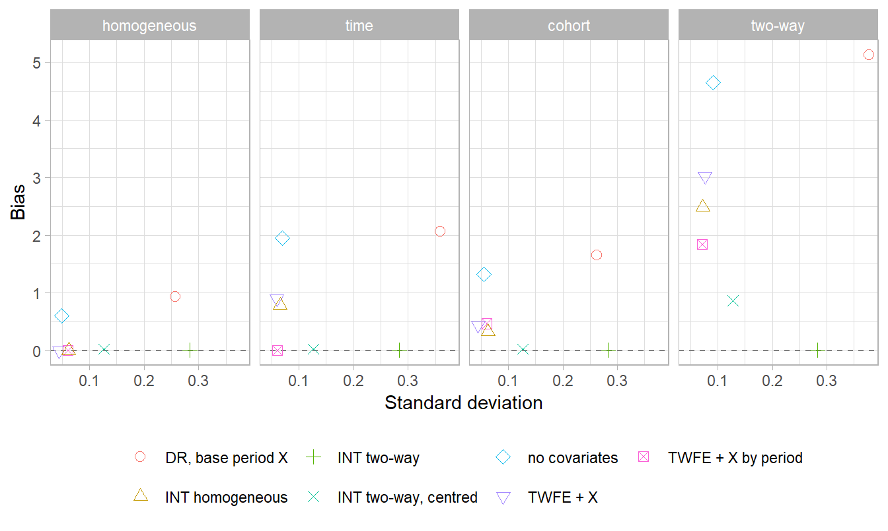
Figure 39.11: Bias against standard deviation across 200 replications. Robustness to covariate effect heterogeneity is bought with variance, and the purchase is not small.
39.9.7 The Price of Flexibility
The purged cell mean \(\lambda_{s,t}\) is an intercept, so it is the fitted outcome at a particular covariate value. Nothing in the algebra forces that value to be zero, and the choice is not innocuous. Recentre the covariate at some \(x_0\) and every purged mean shifts by \(\gamma_{s,t} x_0\), so the group-time effect shifts by
\[ \left[ (\gamma_{s,t} - \gamma_{s,t^{-s}}) - (\gamma_{s',t} - \gamma_{s',t^{-s}}) \right] x_0 . \]
That expression is zero precisely when the group invariance rung holds. In other words, the reference point is irrelevant exactly when you did not need the flexible specification in the first place, and it matters exactly when you did. The last two rows of the Monte Carlo table are the same estimator evaluated at two reference points, and they agree in three columns and disagree by a wide margin in the fourth.
grid <- seq(0, 3, by = 0.25)
sens <- do.call(rbind, lapply(c("homogeneous", "two-way"), function(r) {
d <- sim_did_cov(regime = r)
data.frame(
truth = r,
x0 = grid,
att = vapply(grid, function(x0) {
didint(d, "Y", "t", "id", "g", "X", flex = "two-way",
xref = c(X = x0))$overall[["att"]]
}, numeric(1))
)
}))
ggplot(sens, aes(x0, att, colour = truth)) +
geom_hline(yintercept = 2, linetype = 2, colour = "grey50") +
geom_line(linewidth = 0.8) +
geom_point(size = 1.6) +
labs(x = "Covariate reference point", y = "Estimated effect", colour = NULL)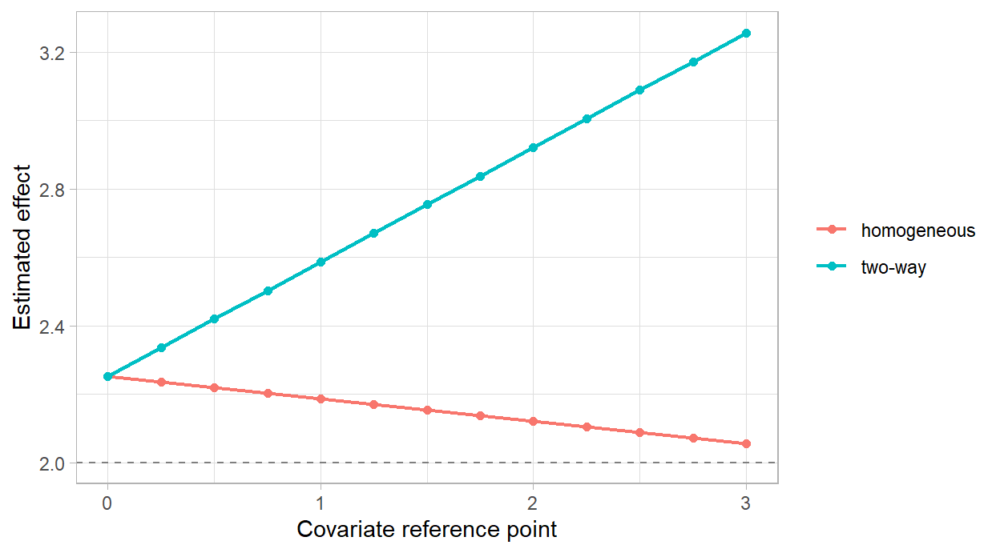
Figure 39.12: Estimated effect from the two-way intersection specification as the covariate reference point moves across the support of X. The dashed line is the true effect of 2.
Figure 39.12 traces the estimate across the whole support of the covariate, and the spread is the size of the choice being made. This is a real constraint and it deserves to be stated plainly rather than buried. Under an unrestricted \(\gamma_{s,t}\), conditional parallel trends cannot hold at every covariate value at once, because the group gap in untreated outcomes tilts with the covariate. It can hold at one value, and the researcher is choosing which one. Reporting a single number from the flexible specification without saying where the covariate was pinned is reporting half of an assumption.
Three practical consequences follow.
Pin the reference point somewhere interpretable and say so. The treated group’s pre-treatment covariate mean is the natural choice, since it makes the identifying assumption a statement about parallel trends at the covariate profile the treated units actually had before treatment. Zero is defensible only when zero is a meaningful value of the covariate.
Report the sensitivity curve above, not a point. If the estimate is flat over the region of covariate support that matters, the extra flexibility cost you nothing and the reader learns that. If it slopes, the reader has learned something important that a single specification would have hidden.
Watch the variance. The scatter in Figure 39.11 shows the flexible specification with several times the standard deviation of the additive one, and the uncentred version is worse than the centred one because it extrapolates each cell regression to a covariate value outside the data. In a panel with many cohorts and periods the flexible specification burns a covariate coefficient per cell, and cells can run out of data long before the researcher notices.
39.9.8 Diagnosing the Assumption
The ladder is testable, which is more than can be said for most difference-in-differences assumptions. Estimating the covariate effect cell by cell and looking at the spread is the whole diagnostic.
#' Cell by cell covariate slopes
ccc_slopes <- function(data, yname, xname, gname, tname) {
cells <- unique(data[, c(gname, tname)])
out <- lapply(seq_len(nrow(cells)), function(i) {
sub <- data[data[[gname]] == cells[[gname]][i] &
data[[tname]] == cells[[tname]][i], ]
m <- lm(stats::reformulate(xname, yname), sub)
data.frame(
cohort = cells[[gname]][i],
period = cells[[tname]][i],
slope = coef(m)[[2]],
se = sqrt(diag(vcov(m)))[[2]],
n = nrow(sub)
)
})
do.call(rbind, out)
}
#' Wald test that all cell slopes in a saturated fit are equal
ccc_test <- function(data, yname, xname, gname, tname, cluster) {
d <- as.data.frame(data)
d$.cell <- interaction(d[[gname]], d[[tname]], drop = TRUE)
d$.x <- d[[xname]] - mean(d[[xname]])
fit <- feols(stats::as.formula(paste(yname, "~ 0 + i(.cell) + i(.cell, .x)")),
d, cluster = stats::as.formula(paste("~", cluster)))
b <- coef(fit)
V <- vcov(fit)
idx <- which(grepl(".x", names(b), fixed = TRUE))
k <- length(idx)
R <- matrix(0, k - 1, length(b))
for (j in 2:k) {
R[j - 1, idx[1]] <- -1
R[j - 1, idx[j]] <- 1
}
Rb <- R %*% b
W <- drop(t(Rb) %*% solve(R %*% V %*% t(R)) %*% Rb)
c(chisq = W, df = k - 1, p = pchisq(W, k - 1, lower.tail = FALSE))
}39.9.9 Application: Minimum Wages and Teen Employment
The mpdta data shipped with the did package is the county-level panel behind Callaway and Sant’Anna (2021), covering teen employment in 500 counties from 2003 to 2007, with counties in states raising their minimum wage above the federal level in 2004, 2006, or 2007, and never-treated counties as the comparison. The one covariate is log county population.
Start with the diagnostic.
library(did)
data(mpdta)
sl <- ccc_slopes(mpdta, "lemp", "lpop", "first.treat", "year")
sl$cohort <- factor(sl$cohort, labels = c("never", "2004", "2006", "2007"))
ggplot(sl, aes(period, slope, colour = cohort, group = cohort)) +
geom_ribbon(aes(ymin = slope - 1.96 * se, ymax = slope + 1.96 * se,
fill = cohort), alpha = 0.12, colour = NA) +
geom_line(linewidth = 0.7) +
geom_point(size = 1.7) +
labs(x = NULL, y = "Slope on log population", colour = NULL, fill = NULL)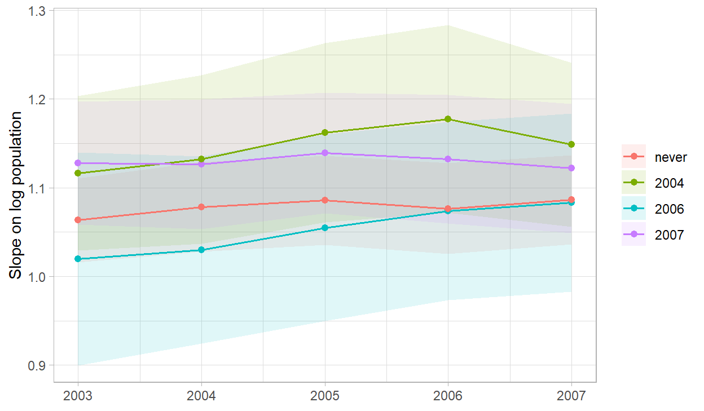
Figure 39.13: Cell by cell slope of log teen employment on log county population in the mpdta panel, with 95 percent confidence intervals. The covariate effect is close to one everywhere.
round(ccc_test(mpdta, "lemp", "lpop", "first.treat", "year", "countyreal"), 4)
#> chisq df p
#> 39.1254 19.0000 0.0043The picture and the test disagree in an instructive way. Every cell slope sits between roughly 1.02 and 1.18, which is about as stable as a real covariate effect is ever going to look. The Wald test nonetheless rejects equality comfortably. With 500 counties and a covariate this strong, the test has power to detect differences far too small to matter for the treatment effect, which is the usual fate of a specification test used as a decision rule.
The right question is not whether the restriction is exactly true but whether relaxing it moves the answer. So relax it and look.
mpdta$g <- mpdta$first.treat
ladder <- do.call(rbind, lapply(rungs, function(fl) {
r <- didint(mpdta, "lemp", "year", "countyreal", "g",
xvars = if (fl == "none") NULL else "lpop",
flex = fl, xref = "treated_pre", cluster = "countyreal")
data.frame(spec = fl, att = r$overall[["att"]], se = r$overall[["se"]])
}))
cs <- function(x) {
a <- aggte(x, type = "simple", bstrap = FALSE)
data.frame(att = a$overall.att, se = a$overall.se)
}
cs_none <- cs(att_gt(yname = "lemp", tname = "year", idname = "countyreal",
gname = "first.treat", data = mpdta,
control_group = "nevertreated", bstrap = FALSE))
cs_lpop <- cs(att_gt(yname = "lemp", tname = "year", idname = "countyreal",
gname = "first.treat", xformla = ~ lpop, data = mpdta,
control_group = "nevertreated", bstrap = FALSE))
ladder <- rbind(
ladder,
data.frame(spec = "Callaway and Sant'Anna, no X", cs_none),
data.frame(spec = "Callaway and Sant'Anna, lpop", cs_lpop)
)
knitr::kable(ladder, digits = 4, row.names = FALSE,
caption = "Overall average treatment effect on the treated for teen employment, across the covariate effect ladder and against the published group-time estimator.")| spec | att | se |
|---|---|---|
| none | -0.0400 | 0.0118 |
| homogeneous | -0.0400 | 0.0118 |
| cohort | -0.0400 | 0.0118 |
| time | -0.0410 | 0.0116 |
| two-way | -0.0441 | 0.0108 |
| Callaway and Sant’Anna, no X | -0.0400 | 0.0120 |
| Callaway and Sant’Anna, lpop | -0.0418 | 0.0115 |
In Table 39.15 the intersection estimator with no covariates reproduces the unconditional group-time estimate to four decimals, which is the reassuring check that the implementation is doing what it claims. Across the entire ladder the estimate moves from about \(-0.040\) to about \(-0.044\), well inside a single standard error. The formal test rejected the restriction; the estimate does not care. That combination is common and it is the reason the ladder should be reported as a sensitivity exercise rather than run as a pre-test.
The group-time estimates in Figure 39.14 carry the same message with more detail.
gt_flex <- didint(mpdta, "lemp", "year", "countyreal", "g", "lpop",
flex = "two-way", xref = "treated_pre",
cluster = "countyreal")$gt
gt_none <- didint(mpdta, "lemp", "year", "countyreal", "g",
flex = "none", cluster = "countyreal")$gt
gt_both <- rbind(
transform(gt_flex, spec = "two-way covariate effects"),
transform(gt_none, spec = "no covariates")
)
ggplot(gt_both, aes(event_time, att, colour = spec)) +
geom_hline(yintercept = 0, linetype = 2, colour = "grey50") +
geom_pointrange(aes(ymin = att - 1.96 * se, ymax = att + 1.96 * se),
position = position_dodge(width = 0.3), fatten = 2) +
facet_wrap(~cohort, nrow = 1) +
labs(x = "Event time", y = "Effect on log teen employment", colour = NULL) +
theme(legend.position = "bottom")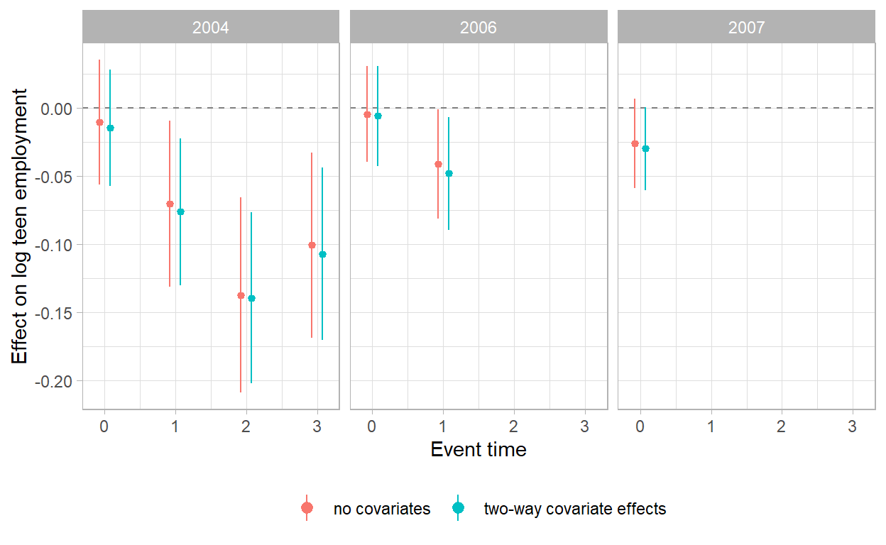
Figure 39.14: Group-time average treatment effects from the intersection estimator with and without flexible covariate adjustment, by cohort and event time.
39.9.10 When the Panel Is Too Small
The mpdta panel has 500 units spread over four cohorts and five years, so every cell has enough observations to estimate a covariate slope. State-level panels rarely do. The castle doctrine data of Section 39.6.3.1 has 50 states over eleven years, with adoption cohorts of 1, 13, 4, 2, and 1 states.
library(bacondecomp)
data(castle, package = "bacondecomp")
ca <- transform(castle, g = ifelse(is.na(effyear), 0, effyear))
ca <- ca[, c("sid", "year", "g", "l_homicide", "l_police",
"l_income", "unemployrt", "poverty")]
ca <- ca[complete.cases(ca), ]
table(cohort = ca$g[!duplicated(ca$sid)])
#> cohort
#> 0 2005 2006 2007 2008 2009
#> 29 1 13 4 2 1A cohort with one state has one observation per cell, so a within-cell covariate slope does not exist. fixest drops the collinear terms rather than failing, which is exactly the behaviour that lets a researcher run the specification without noticing that most of it was never estimated.
X <- c("l_police", "l_income", "unemployrt", "poverty")
castle_ladder <- do.call(rbind, lapply(rungs, function(fl) {
r <- didint(ca, "l_homicide", "year", "sid", "g",
xvars = if (fl == "none") NULL else X,
flex = fl, xref = "treated_pre", cluster = "sid")
data.frame(spec = fl, att = r$overall[["att"]], se = r$overall[["se"]],
k = length(coef(r$fit)))
}))
knitr::kable(castle_ladder, digits = 3, row.names = FALSE,
caption = "Castle doctrine laws and log homicide across the covariate effect ladder, with the number of estimated coefficients in each specification.")| spec | att | se | k |
|---|---|---|---|
| none | 0.110 | 0.042 | 66 |
| homogeneous | 0.168 | 0.079 | 70 |
| cohort | 0.120 | 0.109 | 82 |
| time | 0.151 | 0.096 | 110 |
| two-way | 0.331 | 0.117 | 198 |
In Table 39.16 the estimate roughly triples as the specification is relaxed, the standard errors triple with it, and the fully flexible model spends 198 coefficients on 550 observations. That is not evidence that the covariate effects genuinely differ across cohorts and years. It is what happens when a saturated interaction is fitted in cells of size one or two: the diagnostic fires, the flexible estimator swings, and neither is informative. The honest reading of the castle data is that the design cannot support a test of the ladder at all, and reporting the additive specification with a note to that effect is better than reporting a flexible number that is mostly noise.
The general rule follows from counting. The two-way specification needs a covariate coefficient for every cohort by period cell, so with \(S\) cohorts, \(T\) periods, and \(K\) covariates it consumes \(S \times T \times (K + 1)\) parameters. Panels of states, countries, or firms with a handful of adoption waves will exhaust their degrees of freedom long before panels of individuals or counties do. When they do, the group invariant or time invariant rungs are the useful compromise, since each costs only \(T\) or \(S\) coefficients per covariate.
39.9.11 Bad Controls Proper
Everything above concerns covariates whose effects are heterogeneous. A separate failure occurs when the covariate itself responds to treatment, and it is the panel version of the classic bad control problem (Angrist and Pischke 2009; Cinelli et al. 2022).
Suppose the covariate has parallel trends across groups, so there is no confounding to remove, but treatment shifts it. Then \(X\) lies on a causal path from treatment to outcome, and conditioning on it blocks that path.
sim_mediator <- function(n = 400, TT = 6, g = 4, tau = 2, kappa = 0.6, seed = 1) {
set.seed(seed)
d <- expand.grid(id = seq_len(n), t = seq_len(TT))
d$treated <- as.integer(d$id > n / 2)
a <- rnorm(n)
u <- rnorm(n, 0, 0.5)
d$D <- as.integer(d$treated == 1 & d$t >= g)
# no differential covariate trend, but treatment moves the covariate
d$X <- 1 + 0.8 * d$treated + 0.10 * (d$t - 1) + u[d$id] +
rnorm(nrow(d), 0, 0.3) + kappa * d$D
d$Y <- 1 * d$X + a[d$id] + 0.3 * d$t + tau * d$D + rnorm(nrow(d), 0, 0.5)
d
}
med <- t(vapply(1:200, function(s) {
d <- sim_mediator(seed = s)
c(`no covariates` = coef(feols(Y ~ D | id + t, d))[["D"]],
`controlling for X` = coef(feols(Y ~ D + X | id + t, d))[["D"]])
}, numeric(2)))
round(colMeans(med), 3)
#> no covariates controlling for X
#> 2.600 2.001The total effect of treatment is \(\tau + \gamma \kappa = 2 + 0.6 = 2.6\) and the direct effect holding the covariate fixed is \(2\). The unadjusted estimator recovers the first; adding the control recovers the second. Neither is wrong, but only one of them is what a policy evaluation usually wants, and the covariate-adjusted specification will look like the more careful one to a referee.
This is where the panel setting is genuinely harder than the cross section. A contemporaneous covariate can be simultaneously a confounder, because its pre-treatment path differs across groups, and a mediator, because treatment moves it afterwards. Conditioning on its base period value avoids the mediation problem and, as the Monte Carlo showed, leaves the confounding. Conditioning on its contemporaneous value removes the confounding and induces the mediation bias. There is no specification that escapes both without further assumptions, which is the problem Caetano et al. (2024) set out to formalize. In applied work the usable response is to decide which estimand you want, adjust accordingly, and say which one you reported.
Three signs that a covariate is on the wrong side of this line: it is measured after treatment begins, its own event study shows a jump at treatment, and the treatment effect changes materially when it is dropped. The second is worth running as a matter of routine.
d_med <- sim_mediator()
es <- feols(X ~ i(t, treated, ref = 3) | id + t, d_med, cluster = ~id)
iplot(es, main = "", xlab = "Period",
ylab = "Effect of treatment on the covariate")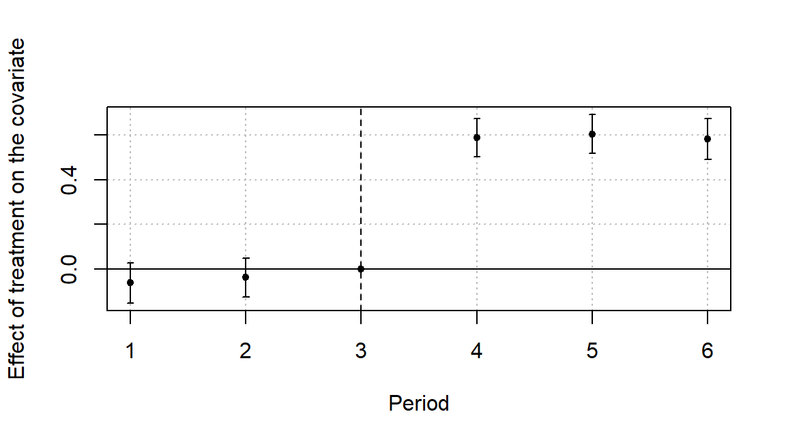
Figure 39.15: Event study with the covariate as the outcome. A jump at the treatment date means the covariate is affected by treatment and cannot be conditioned on without changing the estimand.
39.9.12 Practical Guidance
Covariates in difference-in-differences deserve the same scrutiny as the parallel trends assumption itself, and the following sequence is what that scrutiny looks like in practice.
Ask first whether the covariate can be affected by treatment. If it can, its post-treatment values are off limits, and the choice between adjusting on base period values and not adjusting at all is a choice between estimands, not between a careful and a careless specification.
Plot the covariate effect cell by cell before choosing a specification. The plot in Figure 39.13 takes one function call and answers a question that no balance table addresses. Look at the spread relative to the confidence intervals, not at the p-value.
Report the ladder rather than a rung. Running the additive, period-interacted, group-interacted, and fully flexible specifications side by side costs four lines of code and converts an untestable assumption into a visible sensitivity range. Stability across the ladder is real evidence; a single flexible estimate is not.
Count your cells before reaching for flexibility. The saturated specification needs a covariate coefficient per cohort by period cell. If a cohort has one unit, that coefficient does not exist, and silently dropped collinear terms will not tell you so.
Pin the covariate reference point, report where you pinned it, and show the sensitivity curve. This is specific to the flexible specifications, and it is the part most likely to be omitted.
Finally, keep the estimator ladder and the good control taxonomy separate in your head. Table 39.13 tells you which specification survives heterogeneous covariate effects. It says nothing about whether the covariate belongs in the model at all, which is a question about the causal graph (Cinelli et al. 2022) and about timing, and which no amount of flexibility can settle.
Software note: Karim and Webb (2024) distribute the intersection estimator as a Julia package with a Stata wrapper, with cluster jackknife and randomization inference for the small-cluster case that the delta method standard errors above do not handle well. The implementation in this section is deliberately transparent rather than complete; for panels with few clusters, pair it with the wild cluster bootstrap discussed in Section 39.20.7.
39.10 Bayesian Difference-in-Differences
Notation in this section follows the conventions of Table 35.12 in the foundations chapter.
The standard Difference-in-Differences estimator is a frequentist device. It produces a point estimate of the treatment effect, an estimated standard error, and a confidence interval whose coverage is justified by appeals to repeated sampling. This machinery works well when the panel is large, the treatment timing is common, and the analyst is content to report a single number with an interval around it. The Bayesian formulation of DiD keeps the identifying logic intact, the same parallel-trends reasoning underwrites the design, but replaces the inferential apparatus with a posterior distribution over the quantities of interest. Instead of a point estimate and a standard error, the analyst obtains a full distribution for the average treatment effect on the treated, for any cohort-specific or period-specific effect, and for any function of these that a decision maker might care about.
This reframing pays off in three situations that recur in applied work. When the panel is small, so that asymptotic normal approximations are unreliable, the posterior propagates finite-sample uncertainty honestly rather than relying on a sandwich estimator whose justification is asymptotic. When effects are heterogeneous across many cohorts or units, partial pooling shares information across them in a way that disciplines noisy cohort-level estimates without forcing them to a common value. And when the analyst must feed the treatment effect into a downstream decision, an inventory choice, a pricing rule, a regulatory cost-benefit calculation, the posterior delivers exactly the object that decision theory requires, namely a probability distribution over the unknown effect that can be integrated against a loss function.
39.10.1 From the two-way fixed-effects regression to a probability model
Recall the canonical regression form of DiD with a single treatment onset. For unit \(i\) observed in period \(t\),
\[ Y_{it} \;=\; \alpha_i \;+\; \gamma_t \;+\; \tau\, W_{it} \;+\; \varepsilon_{it}, \]
where \(\alpha_i\) is a unit fixed effect, \(\gamma_t\) is a period fixed effect, \(W_{it}\) indicates active treatment, and \(\tau\) is the treatment effect. Frequentist DiD estimates this by least squares and treats \(\tau\) as a fixed unknown constant.
The Bayesian version writes the same mean structure but completes it into a generative probability model by specifying a sampling distribution for the outcome and prior distributions for every parameter. A typical specification is
\[ \begin{aligned} Y_{it} \mid \alpha_i, \gamma_t, \tau &\;\sim\; \mathcal{N}\!\bigl(\alpha_i + \gamma_t + \tau\, W_{it},\; \sigma^2\bigr), \\ \alpha_i &\;\sim\; \mathcal{N}\!\bigl(\mu_\alpha,\; \sigma_\alpha^2\bigr), \\ \gamma_t &\;\sim\; \mathcal{N}\!\bigl(\mu_\gamma,\; \sigma_\gamma^2\bigr), \\ \tau &\;\sim\; \mathcal{N}\!\bigl(0,\; \sigma_\tau^2\bigr), \end{aligned} \]
with weakly informative hyperpriors on the variance components such as half-normal or half-Student-t distributions on \(\sigma\), \(\sigma_\alpha\), \(\sigma_\gamma\) (Gelman 2006). Two features distinguish this from the frequentist regression. First, the unit and period effects are now drawn from common distributions rather than being free parameters; this is the random-effects or partial-pooling structure that the Bayesian framework handles naturally. Second, the treatment effect \(\tau\) carries its own prior, which the analyst chooses to reflect substantive knowledge about plausible effect magnitudes.
Inference targets the posterior distribution
\[ p\bigl(\tau, \boldsymbol{\alpha}, \boldsymbol{\gamma}, \sigma, \ldots \mid \mathbf{Y}\bigr) \;\propto\; p\bigl(\mathbf{Y} \mid \tau, \boldsymbol{\alpha}, \boldsymbol{\gamma}, \sigma\bigr)\, p(\tau)\, p(\boldsymbol{\alpha})\, p(\boldsymbol{\gamma})\, p(\sigma)\, \cdots, \]
which is summarized by drawing samples through Hamiltonian Monte Carlo (Gelman et al. 2013). From those draws, the posterior for \(\tau\) alone is obtained by marginalizing over the nuisance parameters, which Monte Carlo accomplishes simply by ignoring the other coordinates of each draw.
39.10.2 Priors on treatment effects
The prior on \(\tau\) is the most visible modeling choice, and it deserves care rather than reflexive vagueness. A flat or extremely diffuse prior reproduces the frequentist point estimate in large samples but offers no regularization when data are thin and can place substantial prior mass on absurd effect sizes. A weakly informative prior, by contrast, encodes the order of magnitude that the outcome scale permits, a treatment that doubles sales is plausible, one that multiplies them by a thousand is not, without committing to a particular value.
For continuous outcomes measured on a standardized scale, a normal prior centered at zero with a standard deviation chosen to span the range of credible effects is a common default. Centering at zero is not an assertion that the effect is zero; it expresses the prior judgment that small effects are more likely than large ones and lets the data move the posterior away from zero when the evidence warrants. When prior studies or a meta-analysis supply a credible range for the effect, that information can be encoded directly in the prior, which is one of the clearest advantages of the Bayesian approach over an analysis that discards such evidence. The sensitivity of conclusions to the prior should always be reported, ideally by re-running the model under a small set of defensible priors and showing that the substantive conclusion is stable, or by being explicit about where it is not.
39.10.3 Partial pooling for heterogeneous and staggered effects
The setting where the Bayesian framework earns its keep is the modern staggered-adoption design, where units adopt treatment at different times and the effect may differ by adoption cohort and by time since adoption. The frequentist literature has documented that the naive two-way fixed-effects regression delivers a treatment-effect estimate that is a weighted average of cohort-by-period effects with weights that can be negative, producing estimates that need not lie in the convex hull of the underlying effects (Goodman-Bacon 2021; Sun and Abraham 2021; Callaway and Sant’Anna 2021). The recommended frequentist remedy is to estimate each cohort-by-period effect separately and then aggregate with sensible nonnegative weights.
The Bayesian analogue estimates the disaggregated effects but adds a hierarchical layer that pools them. Let \(\tau_{g,e}\) denote the effect for cohort \(g\) (the group that adopts in period \(g\)) at event time \(e\) (periods since adoption). A hierarchical model writes
\[ \begin{aligned} \tau_{g,e} &\;\sim\; \mathcal{N}\!\bigl(\theta_e,\; \omega^2\bigr), \\ \theta_e &\;\sim\; \mathcal{N}\!\bigl(\mu_\theta,\; \kappa^2\bigr), \end{aligned} \]
so that each cohort’s effect at event time \(e\) is shrunk toward a common event-time profile \(\theta_e\), and the profile itself is regularized. The degree of shrinkage is not chosen by the analyst but learned from the data through the posterior for \(\omega\): when the cohort effects are similar, \(\omega\) is estimated small and the model pools aggressively; when they genuinely differ, \(\omega\) is large and the model lets each cohort speak for itself. This adaptive pooling is the central practical benefit. Cohorts with few treated units, which would yield hopelessly noisy standalone estimates, borrow strength from better-identified cohorts, while cohorts with abundant data are barely shrunk. The same logic underlies the broader literature on hierarchical Bayesian models in panel and small-area settings (Gelman and Hill 2006).
Once the posterior for the full set of \(\tau_{g,e}\) is in hand, any aggregate of interest is a deterministic function of the draws and inherits a posterior automatically. The overall average treatment effect on the treated is a cohort-size-weighted average of the relevant \(\tau_{g,e}\); its posterior is obtained by computing that weighted average within each Monte Carlo draw. Event-study coefficients, the average effect over a horizon, and the difference between early and late adopters are all handled the same way, with no separate delta-method or bootstrap step required.
39.10.4 Posterior inference and credible intervals
The output of the analysis is a set of posterior draws for every parameter and for every derived quantity. Reporting proceeds by summarizing these draws. The posterior mean or median of \(\tau\) serves as a point summary, and a credible interval, for instance the central interval spanning the 2.5th to 97.5th posterior percentiles, communicates uncertainty. A 95 percent credible interval has the interpretation that practitioners often wrongly attach to a confidence interval, namely that, conditional on the model and prior, there is a 95 percent posterior probability that the effect lies in the interval. Because the interval is read off the posterior directly, it requires no appeal to asymptotic normality and remains valid in small samples where a normal-approximation confidence interval would mislead.
The posterior also answers questions that a confidence interval cannot pose. The posterior probability that the effect exceeds a managerially relevant threshold, the probability that early adopters benefited more than late adopters, or the probability that the effect is positive in at least one cohort are each computed as the fraction of draws satisfying the condition. These probability statements map cleanly onto the decisions that motivate most applied DiD studies.
Model adequacy is assessed through posterior predictive checks, simulating replicated datasets from the fitted model and comparing them to the observed data, and through convergence diagnostics for the sampler such as the potential scale reduction factor and effective sample size (Gelman et al. 2013). For DiD specifically, the pre-treatment fit deserves scrutiny: the model’s implied pre-treatment trajectories for treated and control units should track the data, since a model that misfits the pre-period offers no reason to trust its counterfactual in the post-period. This is the Bayesian counterpart of the pre-trends check that disciplines any DiD analysis.
39.10.5 Advantages and costs
The advantages cluster around three themes. First, uncertainty is represented coherently and completely: every quantity, no matter how complicated a function of the parameters, comes with a posterior, and finite-sample uncertainty is propagated without asymptotic approximation. Second, the hierarchical structure is a natural fit for staggered and heterogeneous designs, delivering adaptive partial pooling that stabilizes noisy cohort-level estimates while letting genuine heterogeneity surface. Third, prior information, whether from earlier studies, a meta-analysis, or domain expertise, can be incorporated transparently rather than discarded, which is especially valuable when the panel is short.
These benefits are not free. The analyst must specify priors and defend them, the computation through Markov chain Monte Carlo is heavier than a single regression and requires convergence checks, and the inferences are conditional on the model in a way that places the burden on careful model checking. The Bayesian and frequentist analyses typically agree when data are abundant and priors are weak; they diverge, and the Bayesian treatment tends to be more honest, precisely in the small-sample and many-cohort regimes where the asymptotic frequentist story is least credible.
39.10.6 Implementation
The brms package provides a formula interface to Stan that expresses these models compactly (Bürkner 2017), while rstanarm offers precompiled models for common cases (Goodrich et al. 2020). The chunk below sketches a hierarchical staggered-DiD specification; it is not evaluated here because it requires a compiled Stan toolchain and a fitted panel.
library(brms)
# panel: outcome y, unit id, period t, cohort g, event time e (NA pre-treatment),
# treatment indicator w (1 when actively treated)
# Two-way fixed effects with a single treatment effect and weakly informative priors
fit_simple <- brm(
y ~ w + (1 | id) + (1 | t),
data = panel,
prior = c(
prior(normal(0, 1), class = "b", coef = "w"),
prior(student_t(3, 0, 2), class = "sd"),
prior(student_t(3, 0, 2), class = "sigma")
),
chains = 4, cores = 4, iter = 2000, seed = 1
)
# Hierarchical staggered design: cohort-by-event-time effects pooled toward an
# event-time profile via a varying-slope term over event time within cohort
fit_staggered <- brm(
y ~ 1 + (1 | id) + (1 | t) + (1 + factor(e) | g),
data = subset(panel, !is.na(e)),
prior = c(
prior(student_t(3, 0, 2), class = "sd"),
prior(student_t(3, 0, 2), class = "sigma")
),
chains = 4, cores = 4, iter = 2000, seed = 1
)
# Posterior summaries and a credible interval for the treatment effect
summary(fit_simple)
posterior_interval(fit_simple, pars = "b_w", prob = 0.95)
# Posterior probability that the effect exceeds a decision threshold
draws <- as_draws_df(fit_simple)
mean(draws$b_w > 0.10)The first model recovers a single treatment effect with partial pooling on the unit and period intercepts. The second lets each cohort carry its own event-time profile while shrinking those profiles toward a common shape, which is the disaggregate-then-pool strategy that the staggered-DiD literature recommends, implemented in one coherent probability model.
39.11 Nonparametric Difference-in-Differences and Latent Factor Models
Notation in this section follows the conventions of Table 35.12 in the foundations chapter.
This section develops methods for identifying and estimating average treatment effects in a panel-data setting without relying on strong functional-form assumptions. The standard two-way fixed-effects (TWFE) model and the linear factor model impose linearity or additivity on the unobserved unit-specific and time-specific components, which makes them easy to implement but restrictive. The framework here allows fully nonparametric relationships between potential outcomes, latent unit factors, latent time factors, and idiosyncratic shocks. The goal is to estimate the Average Treatment Effect on the Treated under considerably weaker functional-form assumptions than a TWFE regression requires, within a panel that permits unobserved heterogeneity in both the cross-sectional and the time dimensions.
The intellectual lineage runs through the nonlinear difference-in-differences model of Athey and Imbens (2006) and the nonparametric fixed-effects panel regression of Lee and Robinson (2015), both of which loosen the additive-linear structure that the textbook DiD imposes. We build on that foundation by treating the unit and time effects as latent factors that enter the outcome through an unknown function.
39.11.1 Setup and potential outcomes
A typical two-way fixed-effects model posits, for the untreated outcome of unit \(i\) in period \(t\),
\[ Y_{it}(0) \;=\; \alpha_i + \beta_t + \varepsilon_{it}, \]
with \(\alpha_i\) a unit effect, \(\beta_t\) a time effect, and \(\varepsilon_{it}\) an idiosyncratic shock. This additive structure is ubiquitous in applied work, but it can fail when the relationship between the latent components and the outcome is genuinely nonlinear or non-additive. A nonparametric panel model relaxes the additivity while retaining the factor structure, letting the latent components enter through a flexible unknown function subject only to mild smoothness and separability conditions.
Consider a panel of \(N\) units (individuals, firms, or regions) observed over \(T\) periods, \(t \in \{1, \ldots, T\}\). Let \(W_{it} \in \{0,1\}\) denote treatment status. The two potential outcomes are \(Y_{it}(0)\), the outcome if untreated, and \(Y_{it}(1)\), the outcome if treated, with the realized outcome
\[ Y_{it} = \begin{cases} Y_{it}(0), & W_{it} = 0, \\ Y_{it}(1), & W_{it} = 1. \end{cases} \]
The target estimand is the average treatment effect on the treated,
\[ \tau \;=\; \mathrm{ATT} \;=\; \frac{\sum_{i,t} W_{it}\,\bigl[Y_{it}(1) - Y_{it}(0)\bigr]}{\sum_{i,t} W_{it}}, \]
the average effect over the treated cell pairs \((i,t)\). Because \(Y_{it}(0)\) is unobserved for treated cells, identifying \(\tau\) is a missing-data problem.
The classical DiD design supposes two periods and two groups and invokes parallel trends for the untreated potential outcomes, the multi-period analogue of the linear TWFE model. As soon as one allows nonlinear dependence of outcomes on the latent factors, or non-parallel trends driven by time effects that vary across units in a non-additive way, standard DiD and TWFE become biased. The nonparametric factor framework is the natural generalization that does not lean on linearity or parallel trends.
39.11.2 Nonparametric factor model
Let the untreated potential outcome arise from an unknown function \(g(\cdot)\) of three arguments,
\[ Y_{it}(0) \;=\; g\bigl(\alpha_i,\; \beta_t,\; \varepsilon_{it}\bigr), \]
where \(\alpha_i \in \mathcal{A} \subseteq \mathbb{R}^{d_\alpha}\) is a random vector specific to unit \(i\), \(\beta_t \in \mathcal{B} \subseteq \mathbb{R}^{d_\beta}\) is a random vector specific to period \(t\), and \(\varepsilon_{it}\) is an idiosyncratic error that may be correlated over time within a unit but is independent across units. We impose no linearity, additivity, or parametric form on \(g\). Instead we require three conditions.
First, smoothness: \(g(\alpha, \beta, \varepsilon)\) is continuously differentiable, or at least Hölder continuous, with uniformly bounded first derivatives. Second, latent independence: the collections \(\{\alpha_i\}\), \(\{\beta_t\}\), and \(\{\varepsilon_{it}\}\) are mutually independent, with \(\alpha_i\) independent and identically distributed across units; the time factor \(\beta_t\) may be autocorrelated provided its marginal distribution is stationary, and likewise for the shocks. Third, both \(N\) and \(T\) grow large in the asymptotic sequence, so that additional observations fill in the matrix rather than expand it, in the spirit of the infill asymptotics familiar from time-series and spatial econometrics (Zhang and Zimmerman 2005).
One motivation for the factor-separable structure is row-and-column exchangeability from random-matrix theory, which guarantees a representation of the form \(g(\alpha_i, \beta_t, \varepsilon_{it})\). We simply posit that such a representation exists and exploit its factor structure for identification. Two familiar models are nested as special cases. Two-way fixed effects corresponds to \(g(\alpha_i, \beta_t, \varepsilon_{it}) = \alpha_i + \beta_t + \varepsilon_{it}\), and the linear factor model corresponds to \(g(\alpha_i, \beta_t, \varepsilon_{it}) = \alpha_i^\top \beta_t + \varepsilon_{it}\), the interactive-fixed-effects structure that underlies the generalized synthetic control method (Xu 2017) and the dynamic interactive-effects estimators of Moon and Weidner (2017). The nonparametric model does not restrict \(g\) to be linear, additive, or even low rank, requiring only that it depend on unit-specific and time-specific factors and on an idiosyncratic shock.
When a unit is treated at \((i,t)\), its potential outcome is
\[ Y_{it}(1) \;=\; g\bigl(\alpha_i, \beta_t, \varepsilon_{it}\bigr) + \delta(\alpha_i, \beta_t), \]
where \(\delta(\alpha, \beta)\) is the structural treatment increment, which may itself depend on the latent factors. The individual effect is then \(Y_{it}(1) - Y_{it}(0) = \delta(\alpha_i, \beta_t)\), and
\[ \tau \;=\; \frac{\sum_{i,t} W_{it}\, \delta(\alpha_i, \beta_t)}{\sum_{i,t} W_{it}}. \]
Because \(\alpha_i\) and \(\beta_t\) are unobserved, we cannot condition on them directly, which is the core identification challenge.
39.11.3 Identifying assumptions
To impute the counterfactual \(Y_{it}(0)\) for treated cells we need a design restriction on how treatment is assigned. In a cross-sectional observational study, unconfoundedness requires \(W_i \perp Y_i(0)\) conditional on observed covariates \(X_i\). Here the relevant confounders are the latent factors, so we impose latent-factor ignorability.
The first component is latent-factor unconfoundedness,
\[ \{W_{it}\} \;\perp\; Y_{it}(0) \;\bigm|\; (\alpha_i, \beta_t), \]
which states that conditional on the latent unit factor and latent time factor, treatment assignment is as good as random for that cell. The second component is overlap: there exists a constant \(c > 0\) such that
\[ 0 < c \;\le\; \Pr\bigl(W_{it} = 1 \mid \alpha_i, \beta_t\bigr) \;\le\; 1 - c < 1 \]
for all latent values, so that every cell has a nontrivial chance of being treated and of being untreated given its factors. The third is the stable unit treatment value assumption, ruling out interference and hidden versions of treatment.
If \(\alpha_i\) and \(\beta_t\) were observed, these conditions would reduce to ordinary unconfoundedness. The point is that they are not observed: we see only \((Y_{it}, W_{it})\). The factor structure ensures that two units sharing the same or similar \(\alpha\)-value have untreated outcomes that behave similarly across all times, and symmetrically for the time factors. Because the latent factors are never seen, these assumptions cannot be tested directly and must be defended on design or domain grounds.
Under these conditions, identification reduces to learning the conditional mean of the untreated outcome,
\[ \mu(\alpha, \beta) \;=\; E\bigl[g(\alpha, \beta, \varepsilon) \mid \alpha, \beta\bigr]. \]
If \(\mu(\alpha_i, \beta_t)\) can be recovered for each treated cell, then \(Y_{it}(0)\) can be imputed and the ATT follows by averaging \(Y_{it}(1) - \mu(\alpha_i, \beta_t)\) over the treated cells. We need neither identify \(\alpha_i\) and \(\beta_t\) themselves nor recover the full function \(g\); we need only the expected untreated outcome at the relevant factor values.
39.11.4 Identification through covariance-based matching
The obstacle is that \(\alpha_i\) and \(\beta_t\) are latent, so we cannot condition on them. The key insight is that units with similar functions \(\mu(\alpha_i, \cdot)\) over \(\beta\) can serve as matches for one another, and that this similarity is detectable from the data through co-movement over time. If two units \(i\) and \(j\) have similar entire functions \(\mu(\alpha_i, \cdot)\) and \(\mu(\alpha_j, \cdot)\), then for any third unit \(k\) the covariance patterns of \((Y_{it}, Y_{kt})\) and \((Y_{jt}, Y_{kt})\) across \(t\) will be close.
To make this precise at the population level, define for any pair of unit types \(\alpha, \alpha'\) the discrepancy
\[ \Gamma(\alpha, \alpha') \;=\; E_\beta\Bigl[\bigl(\mu(\alpha, \beta) - \mu(\alpha', \beta)\bigr)^2\Bigr]. \]
When \(\Gamma(\alpha, \alpha') = 0\), the functions \(\mu(\alpha, \cdot)\) and \(\mu(\alpha', \cdot)\) coincide almost everywhere in \(\beta\), so \(\alpha\) and \(\alpha'\) are equivalent unit types for the untreated potential outcome. We never observe \(\alpha_i\), but the discrepancy can be expanded into cross-covariance terms,
\[ \Gamma(\alpha, \alpha') \;=\; E_\beta\Bigl[\bigl(\mu(\alpha, \beta) - \mu(\alpha', \beta)\bigr)\,\mu(\alpha, \beta)\Bigr] - E_\beta\Bigl[\bigl(\mu(\alpha, \beta) - \mu(\alpha', \beta)\bigr)\,\mu(\alpha', \beta)\Bigr], \]
so that verifying \(\Gamma(\alpha, \alpha') = 0\) amounts to checking that the difference \(\mu(\alpha, \beta) - \mu(\alpha', \beta)\) is uncorrelated with \(\mu(\alpha'', \beta)\) for every type \(\alpha''\). With large \(N\), the observed units supply a dense set of probe types \(\alpha''\), and with large \(T\) the sample covariances converge to their population counterparts.
This motivates a feasible empirical matching set. For each unit \(i\) and a tolerance \(\nu > 0\), define
\[ \mathcal{J}_\nu(i) \;=\; \Bigl\{ j \ne i : \max_{k \ne i,j} \bigl|\,\widehat{\mathrm{Cov}}_t\bigl(Y_{it} - Y_{jt},\, Y_{kt}\bigr)\,\bigr| \;\le\; \nu \Bigr\}, \]
where \(\widehat{\mathrm{Cov}}_t(X_t, Z_t) = \tfrac{1}{T}\sum_{t}(X_t - \bar{X})(Z_t - \bar{Z})\). The set collects units \(j\) whose differenced time profile relative to \(i\) is nearly uncorrelated with every other unit’s profile, which strongly suggests \(\mu(\alpha_i, \beta) \approx \mu(\alpha_j, \beta)\) across \(\beta\). As \(\nu \to 0\) the set shrinks toward truly similar units, and as \(N, T \to \infty\), under Lipschitz conditions on \(g\) and uniform convergence of the sample covariances, each unit acquires at least one match while \(\mu(\alpha_i, \cdot) \approx \mu(\alpha_j, \cdot)\) in sup norm. Choosing \(\nu\) to shrink slowly with the sample size balances these forces. The ordinary matching that suffices in the TWFE setting fails in this more general model, which is precisely why the covariance-based construction is needed.
39.11.5 Estimating the ATT
Given \(\mathcal{J}_\nu(i)\), restrict to the matches that are in the control condition at period \(t\), \(\mathcal{J}_\nu(i,t) = \{ j \in \mathcal{J}_\nu(i) : W_{jt} = 0 \}\), and impute the untreated outcome by averaging over them,
\[ \hat{Y}_{it}(0) \;=\; \frac{1}{|\mathcal{J}_\nu(i,t)|} \sum_{j \in \mathcal{J}_\nu(i,t)} Y_{jt}. \]
By the overlap assumption, with probability approaching one some matches remain untreated at \(t\), so the set is nonempty and \(\hat{Y}_{it}(0)\) approximates \(\mu(\alpha_i, \beta_t)\). For each treated cell the individual effect is estimated by \(\hat{\delta}_{it} = Y_{it} - \hat{Y}_{it}(0)\), and aggregating over treated cells gives
\[ \hat{\tau} \;=\; \frac{\sum_{(i,t):\,W_{it}=1}\bigl[Y_{it} - \hat{Y}_{it}(0)\bigr]}{\sum_{i,t} W_{it}}. \]
Under the regularity conditions above, \(\hat{\tau}\) converges in probability to the ATT. The estimator never invokes a parametric form for \(\mu(\alpha_i, \beta_t)\) nor a parallel-trends restriction; it relies instead on conditional unconfoundedness given the latent factors, recovered through matching.
39.11.6 Relation to other models
When \(g(\alpha_i, \beta_t, \varepsilon_{it}) = \alpha_i + \beta_t + \varepsilon_{it}\), the conditional mean is additive, \(\mu(\alpha_i, \beta_t) = \alpha_i + \beta_t\). Covariance-based matching then selects units with the same \(\alpha\)-value, because in the additive case any difference in unit types shows up as a level difference regardless of how the time factor moves. Differencing out \(\alpha_i\) or \(\beta_t\) is feasible, and the procedure collapses to ordinary DiD or a TWFE regression. Once \(\mu\) is non-additive, the differencing argument breaks and the matching approach is the correct generalization.
The linear factor model \(g(\alpha_i, \beta_t, \varepsilon_{it}) = \alpha_i^\top \beta_t + \varepsilon_{it}\) is the other leading special case. Estimators in that tradition, such as the interactive-fixed-effects approach of Moon and Weidner (2017), the generalized synthetic control method of Xu (2017), and the factor-model causal estimator of Li and Sonnier (2023), recover \(\alpha_i\) and \(\beta_t\) under assumptions on the shock process. The nonparametric model does not estimate the factors directly; it treats them as latent random variables and works around them through matching.
39.11.7 Practical considerations and extensions
In large panels, scanning \(\max_{k \ne i,j} |\widehat{\mathrm{Cov}}(\cdots)|\) over all pairs costs on the order of \(N^3 T\) operations. A common remedy is to cluster the units first, for instance by an approximate factor structure recovered through a singular value decomposition or by the grouped-heterogeneity device that assumes \(\alpha_i\) takes finitely many values, and then to match finely within clusters. Regularization, such as imposing a bandwidth or stopping once enough matches are found, avoids the search for an exact covariance match.
Staggered adoption requires care: for each treated cell there must be enough matches that remain untreated at that period, so overlap must hold period by period. If nearly every unit is treated by some date, the approach loses its footing in those periods.
For inference, \(\hat{\tau}\) behaves like a matching estimator, and the factor dependence complicates the usual variance formulas. A block bootstrap that resamples entire unit time series, or entire periods, preserves the cross-sectional and temporal dependence; one recomputes the match sets and the estimator within each draw and reads off the sampling distribution of \(\hat{\tau}\). Under the large-\(N\), large-\(T\) regularity conditions the bootstrap recovers the correct limiting distribution.
The same factor-matching machinery extends beyond causal inference to decomposition exercises. In an Oaxaca-Blinder decomposition of a between-group gap (Oaxaca 1973; Blinder 1973), let \(W_{it} = 1\) index membership in one group and \(W_{it} = 0\) the other. The mean outcome gap decomposes into an explained component, attributable to differences in the distributions of the latent factors across groups, and an unexplained component, attributable to differences in the conditional-mean function \(\mu\) itself,
\[ \underbrace{E\bigl[\mu_1(\alpha^1, \beta^1)\bigr] - E\bigl[\mu_0(\alpha^0, \beta^0)\bigr]}_{\text{gap}} = \underbrace{E\bigl[\mu_1(\alpha^1, \beta^1)\bigr] - E\bigl[\mu_0(\alpha^1, \beta^1)\bigr]}_{\text{unexplained}} + \underbrace{E\bigl[\mu_0(\alpha^1, \beta^1)\bigr] - E\bigl[\mu_0(\alpha^0, \beta^0)\bigr]}_{\text{explained}}. \]
Although the factors remain unobserved, the same matching argument imputes the counterfactual “what if one group had the other group’s distribution of latent factors,” provided each group’s factor structure is stable within group. The logic that identifies a treatment effect thus also identifies a group-membership decomposition.
39.12 Temporal Causal Inference with Staggered Cohorts
Notation in this section follows the conventions of Table 35.12 in the foundations chapter.
The difference-in-differences designs developed so far all rely on the existence of a control group that escapes the treatment, at least for a while. A policy hits one set of states and not another, a price change reaches one market and not its neighbor, a product feature ships to a treated arm and not a holdout. The hard case arises when an event reaches everyone at once. A publicly announced data breach, a recall, a regulatory ruling, or a viral news story is known to the entire population almost simultaneously, so there is no contemporaneous group of unaware units to serve as a control. Traditional experimental and quasi-experimental tools, A/B tests, randomized trials, test markets, and conventional DiD, all presuppose a clean comparison group, and that group simply does not exist after a widely known shock. Even if one could find units that somehow remained unaware, they would be unrepresentative of the population precisely because they missed the event.
Temporal causal inference, proposed by Turjeman and Feinberg (2023), resolves this by constructing the control group from the same population at an earlier point in its own history rather than from a different population at the same calendar time. The idea exploits the fact that, when an event strikes, different units are at different stages of their lifecycle or tenure. A user who joined a service three weeks before a breach experiences the shock early in their engagement; a user who joined three years earlier experiences it deep into a mature relationship. If behavior follows a trajectory that depends mainly on tenure rather than on calendar time, then the early-tenure experience of a long-standing cohort, observed before the event reached them, predicts what the treated short-tenure cohort would have done absent the event.
39.12.1 From staggered tenure to treated and control cohorts
The design reorganizes the panel along tenure, the time since a unit first adopted or joined, rather than along calendar time. Let \(H_T\) denote the cohort of participants who joined exactly \(T\) time units before the event occurred. For this treated cohort, the event lands \(T\) units into their tenure, and the analyst observes their behavior for a window that extends some periods past the event, capturing the post-event response.
The control group for \(H_T\) is assembled from cohorts \(H_1, \ldots, H_{T-1}\) that joined earlier and therefore reached tenure \(T\) before the event arrived. For each such earlier cohort, the analyst tracks activity from first adoption up to the point where the event reaches them or the observation window closes, whichever comes first. The crucial property is that these earlier cohorts passed through tenure \(T\), the tenure at which the treated cohort meets the event, while the event had not yet occurred for them. Their behavior at that tenure therefore furnishes the counterfactual: it is what the treated cohort would have done at tenure \(T\) had the event not happened.
A subtlety is that every cohort is eventually exposed to the event, since the shock is population-wide. The control cohorts are not unexposed; they are exposed later in their own tenure. The design uses only the segment of each control cohort’s trajectory that precedes its own exposure, so within the comparison window the control observations are genuinely event-free. Most cohorts play both roles across the analysis, serving as controls for later-joining cohorts and as treated units relative to earlier ones; only the very earliest and very latest cohorts in the window are confined to a single role.
The plot below illustrates the construction with several simulated cohorts. The upper panel shows behavior against calendar time, where the cohorts are shifted horizontally because they joined at different dates. The lower panel realigns them against tenure, the time since each cohort’s own adoption, which is the axis on which the cohorts become comparable. Aligned on tenure, the cohorts trace similar trajectories, and the treated cohort meets the event at the tenure where the earlier cohorts had not yet been exposed.
library(ggplot2)
library(patchwork)
# Base tenure grid shared by every cohort
tenure <- seq(0, 99, length.out = 100)
# Each cohort joins at a different calendar time but follows a tenure-driven path
generate_cohort <- function(name, start_time, mean, sd) {
data.frame(
tenure = tenure,
cohort = name,
time = seq(start_time, start_time + 99, by = 1),
value = dnorm(tenure, mean = mean, sd = sd)
)
}
cohorts <- list(
generate_cohort("Cohort 1", 1, 47, 15),
generate_cohort("Cohort 2", 10, 48, 17),
generate_cohort("Cohort 3", 20, 52, 20),
generate_cohort("Cohort 4", 30, 53, 18),
generate_cohort("Treated", 40, 50, 16)
)
final_dataset <- do.call(rbind, cohorts)
# Calendar-time view: cohorts are offset because they joined on different dates
plot_time <-
ggplot(final_dataset, aes(x = time, y = value, color = cohort)) +
geom_line(linewidth = 0.7) +
geom_vline(xintercept = 40, linetype = "dashed") +
geom_vline(xintercept = 90, linetype = "dashed") +
labs(title = "Behavior vs. calendar time", x = "Time", y = "Value") +
theme_minimal()
# Tenure view: aligned on time since adoption, the cohorts become comparable
plot_tenure <-
ggplot(final_dataset, aes(x = tenure, y = value, color = cohort)) +
geom_line(linewidth = 0.7) +
geom_vline(xintercept = 0, linetype = "dashed") +
geom_vline(xintercept = 50, linetype = "dashed") +
labs(title = "Behavior vs. tenure", x = "Tenure", y = "Value") +
theme_minimal()
plot_time / plot_tenure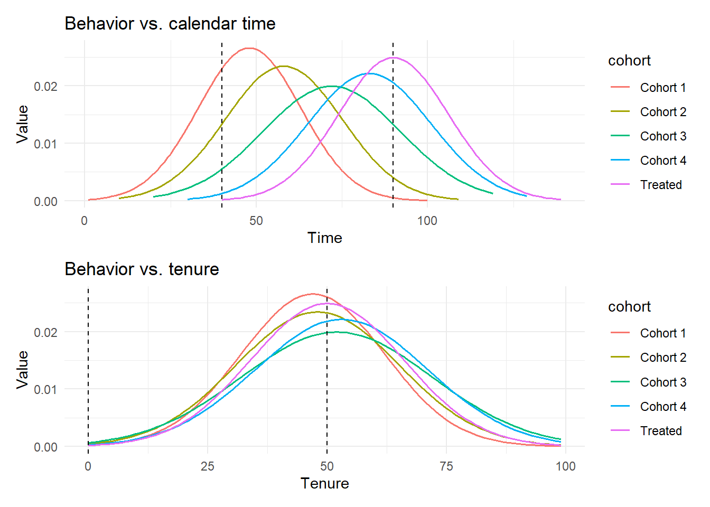
The upper panel displays behavior over calendar time for one treated cohort and several earlier cohorts. The lower panel realigns the same series on tenure, showing that the cohorts share a common shape once tenure is held fixed; the control cohorts have not yet met the event at the tenure where the treated cohort encounters it.
Before any model, it pays to show model-free evidence, the simple average of the outcome for treated and control groups around the event. The chunk below reproduces that descriptive comparison from the sample data Turjeman and Feinberg (2023) provide alongside the paper, which covers three activity measures (deleted photos, searches, and sent messages) for treated and control groups around the event; each activity is plotted in its own panel because collapsing all three onto a single pair of linetypes would conflate series with genuinely different baselines and scales. Figure 39.16 is that comparison.
percent_active_per_group <- rio::import(file.path(
getwd(), "data", "mksc.2019.0208", "percent_active_per_group.csv"
))
ggplot(percent_active_per_group,
aes(x = time_from, y = avg_avg, linetype = as.factor(group_type))) +
geom_line(linewidth = 0.75) +
geom_vline(xintercept = 0) +
facet_wrap(~ activity_name, scales = "free_y") +
scale_y_continuous(labels = scales::percent_format(accuracy = 1)) +
scale_linetype_manual(values = c("dotted", "solid")) +
labs(x = "Weeks from treatment",
y = "Average percent of active users",
linetype = "Group") +
theme_minimal()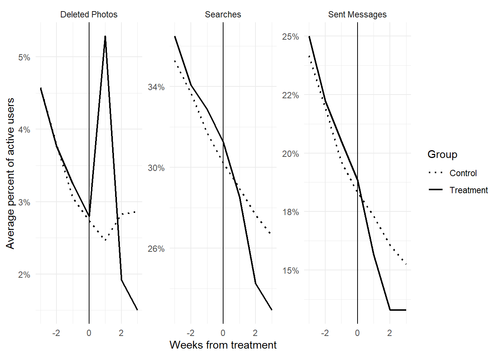
Figure 39.16: Average share of active users by week relative to the breach, for the treated and control groups, in each of three activity measures. The vertical line marks the event. A model-free picture like this one is what a difference-in-differences design has to look plausible in before any estimator is run.
39.12.2 Potential outcomes and the role of multiple control cohorts
The framework is the usual potential-outcomes one. For each unit there is an outcome absent the event, \(Y_i(0)\), and an outcome with the event, \(Y_i(1)\), only one of which is observed; the unobserved counterfactual is imputed as \(\hat{Y}_i(0)\) or \(\hat{Y}_i(1)\), and the probability of exposure is estimated as \(\hat{w}_i \in (0,1)\). What distinguishes temporal causal inference is the source of the counterfactual: rather than a single contemporaneous control group, it draws on many control cohorts that joined at distinct times.
This multiplicity is a strength. Each control cohort lived through the comparison tenure window during a different calendar interval, so any cohort-specific calendar disturbance, a seasonal swing, a competitor’s promotion, a macroeconomic wobble, contaminates only the cohorts active during that interval. Averaging the counterfactual across many cohorts that span different calendar intervals averages out these idiosyncratic disturbances, leaving the tenure-driven component that the design is built to recover. A single control group offers no such averaging.
39.12.3 Identifying assumptions
Temporal causal inference rests on the same assumptions as other selection-on-observables designs, reinterpreted for the tenure-aligned cohort structure.
The stable unit treatment value assumption has two parts. The first is no interference between units. Because treated and control cohorts are defined by tenure and observed during non-overlapping segments of calendar time within the comparison window, a unit’s assignment does not act on another unit’s outcome through the usual contemporaneous channels: for a pair \(\{i, j\}\) in different cohorts, \(Y_i(1) \perp Y_j(0)\) within the window. After a population-wide shock, treated units may influence one another, so \(Y_i(1)\) and \(Y_j(1)\) need not be independent across all treated pairs; the design confines attention to comparisons where this is least problematic. The second part is no hidden versions of treatment, so that the observed outcome is \(Y_i = W_i Y_i(1) + (1 - W_i) Y_i(0)\) and only the event of interest moves the outcome. This is hard to guarantee outside a controlled trial, but using many control cohorts that joined at different dates dilutes the influence of any single extraneous event on the imputed \(Y_i(0)\), since unrelated disturbances are averaged across cohorts.
Conditional independence, or ignorability, requires that assignment to the treated or control role be independent of the potential outcomes given covariates, \(P(W_i \mid X_i, Y_i(0), Y_i(1)) = P(W_i \mid X_i)\). Here assignment is governed by join time, the tenure at which a unit met the event, so the concern is whether the date a unit joined is related to its outcome trajectory in a way the covariates do not capture. The design validates the implied parallel-trends condition empirically. A bidirectional Granger test checks whether the control series helps predict the treated series and vice versa in the pre-event window, with the goal of finding the two statistically indistinguishable before the event. A Kolmogorov-Smirnov test compares the pre-event timelines of the two groups to confirm they are drawn from comparable distributions. Passing both supports the claim that, prior to the event, treated and control cohorts were on the same path.
Overlap requires a treatment propensity strictly between zero and one for every unit given covariates, \(0 < \Pr(W_i = 1 \mid X_i = x) < 1\). In this design every unit is eventually treated, and at any given tenure each unit had a positive chance of being on either side of the event, so overlap is plausible; it can be examined directly through the estimated propensity \(\hat{w}(x)\).
Finally, exogeneity of covariates requires that the covariates not be affected by the event. This is supported when the shock is genuinely unforeseen. If some units anticipated it, the anticipation is likely shared across treated and control cohorts, so the design controls for it and identification of the treatment effect is preserved.
39.12.4 Relation to staggered difference-in-differences
Temporal causal inference is closely related to, but distinct from, the staggered DiD designs of the preceding sections. Staggered DiD estimates treatment effects when an intervention reaches different units at different calendar times and at least some units remain untreated as controls within each period; the analyst aligns on calendar time and exploits the staggering of adoption. Temporal causal inference inverts the geometry. The event reaches everyone at nearly the same calendar moment, so there is no contemporaneous holdout, and the staggering that the design exploits is in tenure rather than in adoption of the treatment. By realigning cohorts on tenure and using earlier cohorts’ pre-event tenure segments as the counterfactual, it manufactures a control group out of the population’s own history. When a clean contemporaneous control group exists, staggered DiD is the natural tool; when the shock is population-wide and no such group exists, temporal causal inference supplies the comparison that DiD cannot.
As with any matching or nonparametric design, the method is data-hungry. Stable trajectory matching across cohorts, credible Granger and Kolmogorov-Smirnov diagnostics, and well-estimated propensities all require many units per cohort and a reasonably long tenure window. With thin cohorts the imputed counterfactual is noisy and the pre-event diagnostics lose power, so the approach is best suited to settings with large panels of individually tracked units.
39.13 Instrumented Difference-in-Differences
Notation in this section follows the conventions of Table 35.12 in the foundations chapter.
The parallel-trends assumption that licenses ordinary difference-in-differences is an assumption about untreated potential outcomes: absent the treatment, the treated and control groups would have moved on parallel paths. A common reason this fails is that the groups differ not only in treatment but in the trajectory of the exposure itself, and that the divergent exposure trend is driven by unobserved factors whose influence varies over time. When the trend in the outcome diverges because the trend in exposure diverges, ordinary DiD attributes the gap to the treatment and is biased. Instrumented difference-in-differences, developed by Ye et al. (2022), addresses exactly this situation by introducing an instrument that perturbs the exposure trend without acting on the outcome trend directly.
The motivating design is a longitudinal study, possibly with repeated cross-sections, in which an encouragement is delivered after a baseline period to push units toward taking the treatment regularly. The encouragement plays the role of an instrument for the trend in exposure. If the encouragement has no direct effect on the trend in the outcome, then any nonparallel trend in the outcome that tracks the nonparallel trend in exposure can be ascribed to the treatment. The method thereby converts a violation of parallel trends, caused by differential exposure, into an identification opportunity.
39.13.1 What the instrument buys
Two features distinguish instrumented DiD from both ordinary DiD and standard instrumental variables. First, it is robust to time-varying unmeasured confounding of the exposure-outcome relationship. The instrument, the encouragement, is by construction independent of the time-varying unmeasured confounders, so confounding that is time-invariant but has time-varying effects, or that is itself time-varying, does not bias the estimate. Ordinary DiD cannot tolerate this, because such confounding is what breaks parallel trends in the first place.
Second, the exclusion restriction is weaker than in a conventional instrumental-variables analysis. A standard IV must have no direct effect on the outcome at all. The encouragement in instrumented DiD is permitted to have a direct effect on the outcome level, provided it does not affect the outcome trend and does not modify the treatment effect. This is a meaningful relaxation. Consider a firm testing a new pricing strategy on sales, while also offering loyalty-program discounts to some customers. As a standard instrument the discount fails, since it raises sales directly. But it may still serve as an instrument for DiD if the pricing strategy’s effect differs across loyalty and non-loyalty customers over time while the discount offered to each group stays constant over time. Variables that shift levels but not trends are therefore candidate instruments for DiD even when they are invalid as standard instruments. A further practical advantage over fuzzy DiD is that units may switch treatment in either direction under instrumented DiD, rather than being constrained to one-way switching.
The target estimand is the average treatment effect, or a conditional average treatment effect when effect modifiers are included.
39.13.2 Assumptions
The analysis combines standard causal assumptions with the assumptions specific to the instrumented DiD design (Ye et al. 2022).
The standard assumptions are three. Consistency, a form of the stable unit treatment value assumption, requires that a unit’s outcome not depend on the exposure of other units or on the unit’s own exposure at other time points. Positivity requires that every unit have a positive probability of receiving the treatment. Random sampling requires that the data at each time point be a random sample from the population.
The design-specific assumptions are four. Trend relevance requires that the instrument affect the exposure trend for some subpopulation; this is the analogue of instrument relevance and is the engine of identification. Independence and exclusion require that the encouragement be unconfounded, have no direct effect on the outcome trend, and not modify the treatment effect; this is the relaxed exclusion restriction described above, which permits a direct effect on the outcome level. The assumption of no unmeasured common effect modifier requires that no unmeasured confounder affect both the trend in exposure and the trend in the outcome. Finally, a stable treatment effect over time requires that the conditional average treatment effect not change across the study window; this is most plausible over short horizons and can be probed through sensitivity analysis.
39.13.3 Estimation
The simplest estimator is a Wald-type ratio. In the spirit of the instrumental-variables Wald estimator, instrumented DiD scales the instrument-induced difference in the outcome trend by the instrument-induced difference in the exposure trend. Writing \(\Delta\) for the change between baseline and follow-up and indexing the instrument by \(Z \in \{0,1\}\), the estimator takes the form
\[ \hat{\tau}_{\text{Wald}} \;=\; \frac{E[\Delta Y \mid Z = 1] - E[\Delta Y \mid Z = 0]} {E[\Delta D \mid Z = 1] - E[\Delta D \mid Z = 0]}, \]
where \(Y\) is the outcome and \(D\) is the exposure. The numerator is the differential outcome trend induced by the encouragement, and the denominator is the differential exposure trend it induces; their ratio identifies the treatment effect under the assumptions above. The denominator is nonzero precisely because of trend relevance, which is why that assumption is indispensable.
The Wald form is transparent but commits to particular modeling choices. Ye et al. (2022) develop multiply robust estimators that combine a regression model for the outcome, an inverse-probability-weighting model for the instrument, and a g-estimation component. The multiply robust property is that valid inference is guaranteed if any one of these working models is correctly specified, even if the others are misspecified. This affords substantial protection against modeling error, since the analyst need not get every nuisance component right, only one of them.
When the same individuals cannot be followed throughout the panel, a two-sample instrumented DiD is available. The analyst then works with an exposure dataset and an outcome dataset that may contain different units, and recovers the average treatment effect from summary statistics of the two samples. This extends the design to settings where linked longitudinal data on the same units are unavailable, at the cost of relying on the comparability of the two samples.
39.13.4 Implementation
The idid package implements these estimators. The chunk below sketches installation and is not evaluated here, since it pulls from an external source and requires a fitted study design.
library(devtools)
install_github("tye27/idid")Instrumented DiD occupies a useful niche between ordinary DiD and instrumental variables. It applies when the parallel-trends assumption is untenable because exposure trends diverge for reasons tied to time-varying unobservables, yet a credible instrument exists that moves the exposure trend without moving the outcome trend. Where such an instrument is available, the method recovers a treatment effect that neither ordinary DiD nor a conventional IV analysis could deliver, and the multiply robust estimators make the inference resilient to a degree of nuisance-model misspecification.
39.14 Factorial Difference-in-Differences
Notation in this section follows the conventions of Table 35.12 in the foundations chapter.
Everything so far in this chapter has assumed that some units get treated and others do not. The canonical 2x2 design needs a clean control group: a set of units that lives through the same calendar time but never receives the intervention. Staggered adoption relaxes when units are treated but still relies on not-yet-treated or never-treated units as comparisons. Remove the untreated group entirely and the design appears to collapse.
Yet a large body of empirical work runs the difference-in-differences estimator in exactly that situation. A famine, a war, a financial crisis, a pandemic, a regulatory overhaul, or a platform policy change hits every unit in the sample. What varies across units is not exposure but a baseline characteristic measured before the event: how much social capital a county had, how anti-German a state was, how a bond was rated, how digitally mature a retailer was. Researchers regress the outcome on the interaction of that baseline factor with a post-event indicator inside a two-way fixed effects model, report the interaction coefficient, and call the result a difference-in-differences estimate.
Numerically it is one. As a research design it is something else, and Xu et al. (2026) give that something else a name and a formal treatment: factorial difference-in-differences (FDID). Their central message is uncomfortable and worth stating up front. Under the usual no-anticipation and parallel-trends assumptions, the DID estimator in this setting identifies a descriptive contrast, not a causal effect of the baseline factor. Turning it into a causal quantity requires an additional assumption that most applied papers never state.
39.14.1 The Design: An Event That Hits Everyone
Xu et al. (2026) catalogue six published studies that share this structure. The pattern is consistent enough that recognizing it is half the battle.
| Study | Baseline factor \(G\) | Event \(Z\) | Outcome |
|---|---|---|---|
| Cao et al. (2022) | Genealogy book density (social capital) | China’s Great Famine, 1958 to 1961 | County mortality rate |
| Squicciarini (2020) | 1791 share of refractory clergy | Second Industrial Revolution, post-1870 | Departmental industrial development |
| Fouka (2019) | State-level anti-Germanism | US entry into World War I, 1917 | Foreign name index |
| Charnysh (2022) | District share of Muslims | Russian famine, 1891 to 1892 | District mortality |
| Northern Wei study cited in Xu et al. (2026) | Fourth-century military strongholds | Empress Dowager Feng’s state-building reform | Aristocrats recruited into the bureaucracy |
| Chen et al. (2023) | Bond credit rating | 2014 Chinese collateral eligibility rule | Corporate bond prices |
Read the fourth column of any of these papers and you will find causal language. Read the identification section and you will usually find only parallel trends. The gap between the two is what FDID formalizes.
The last row is the interesting exception. When Chinese regulators banned bonds rated below AAA from being pledged as collateral, AA and AA+ bonds lost eligibility while AA- bonds had never been eligible in the first place. The event technically touched everyone, but a subset of units was demonstrably unaffected by it. That extra piece of institutional knowledge is exactly what converts an FDID problem back into a canonical DID problem, as Section 39.14.5 makes precise.
39.14.2 Setup and Data Structure
Consider \(n\) units indexed by \(i\), each observed before and after a one-time event. For unit \(i\) we observe
- a binary baseline factor \(G_i \in \{0, 1\}\), measured before the event,
- outcomes \(Y_{i,\text{pre}}\) and \(Y_{i,\text{post}}\),
- an exposure indicator \(Z_i \in \{0, 1\}\).
The defining feature of the design is universal exposure:
\[ Z_i = 1 \quad \text{for all } i = 1, \dots, n. \]
Because \(Z_i\) never varies, it looks redundant. It is not. Its role is to index counterfactual worlds: the potential outcomes that would have been realized had the event not occurred. Without \(Z\) in the notation there is no language for “what mortality would have been absent the famine,” and hence no way to write down the estimand or the identifying assumptions. Xu et al. (2026) trace this device to the treatment of Lord’s paradox in the potential-outcomes literature, where an unvarying manipulation is retained precisely so that counterfactuals remain well defined.
Let \(\Delta Y_i = Y_{i,\text{post}} - Y_{i,\text{pre}}\). The DID estimator is
\[ \hat{\tau}_{\text{did}} = \frac{1}{n_1} \sum_{i: G_i = 1} \Delta Y_i - \frac{1}{n_0} \sum_{i: G_i = 0} \Delta Y_i, \]
with probability limit
\[ \tau_{\text{did}} = \mathbb{E}[\Delta Y_i \mid G_i = 1] - \mathbb{E}[\Delta Y_i \mid G_i = 0]. \]
Two observations follow immediately, and both do a great deal of work later.
First, \(\hat{\tau}_{\text{did}}\) depends on the panel only through the first difference \(\Delta Y_i\). It is numerically the difference-in-means estimator applied to the cross section \(\{(G_i, \Delta Y_i)\}_{i=1}^{n}\). Every intuition and every tool from cross-sectional causal inference under unconfoundedness transfers directly, with \(\Delta Y_i\) playing the role of the outcome and \(G_i\) playing the role of the treatment. That is why covariate adjustment in FDID looks like regression adjustment rather than like anything panel-specific.
Second, nothing in the estimator knows that \(Z_i\) is constant. The arithmetic is identical to canonical DID. Only the interpretation changes, which is precisely why the error is so easy to make.
39.14.3 Potential Outcomes with Two Factors
The key move is to define potential outcomes with respect to both factors. For \(t \in \{\text{pre}, \text{post}\}\), let \(Y_{it}(g, z)\) denote the outcome unit \(i\) would realize if \(G\) were set to \(g\) and \(Z\) to \(z\). Observed outcomes satisfy \(Y_{it} = Y_{it}(G_i, Z_i)\), which under universal exposure reduces to \(Y_{it} = Y_{it}(G_i, 1)\).
There are eight potential outcomes per unit (two periods, two levels of \(G\), two levels of \(Z\)). Universal exposure makes all four with \(z = 0\) unobservable for every unit in the sample. This is the sense in which FDID is harder than canonical DID: there is no group anywhere in the data that reveals the \(z = 0\) world.
| \(z = 0\) (no event) | \(z = 1\) (event) | |
|---|---|---|
| \(g = 0\), pre | \(Y_{i,\text{pre}}(0,0)\) (never observed) | \(Y_{i,\text{pre}}(0,1)\) (observed if \(G_i = 0\)) |
| \(g = 0\), post | \(Y_{i,\text{post}}(0,0)\) (never observed) | \(Y_{i,\text{post}}(0,1)\) (observed if \(G_i = 0\)) |
| \(g = 1\), pre | \(Y_{i,\text{pre}}(1,0)\) (never observed) | \(Y_{i,\text{pre}}(1,1)\) (observed if \(G_i = 1\)) |
| \(g = 1\), post | \(Y_{i,\text{post}}(1,0)\) (never observed) | \(Y_{i,\text{post}}(1,1)\) (observed if \(G_i = 1\)) |
Define three unit-level effects:
\[ \begin{aligned} \tau_{i, Z \mid G = g} &= Y_{i,\text{post}}(g, 1) - Y_{i,\text{post}}(g, 0), \\ \tau_{i, G \mid Z = z} &= Y_{i,\text{post}}(1, z) - Y_{i,\text{post}}(0, z), \\ \tau_{i,\text{cm}} &= \tau_{i, Z \mid G = 1} - \tau_{i, Z \mid G = 0}. \end{aligned} \]
The first is the effect of the event holding the baseline factor at \(g\). The second is the effect of the baseline factor holding exposure at \(z\). The third, the causal moderation, is the difference-in-differences of potential outcomes. Expanding it,
\[ \tau_{i,\text{cm}} = Y_{i,\text{post}}(1,1) - Y_{i,\text{post}}(1,0) - Y_{i,\text{post}}(0,1) + Y_{i,\text{post}}(0,0) = \tau_{i, G \mid Z = 1} - \tau_{i, G \mid Z = 0}, \]
so \(\tau_{i,\text{cm}}\) is symmetric in the two factors. “Social capital blunted the famine’s effect on mortality” and “the famine amplified social capital’s effect on mortality” are the same statement. This symmetry is the reason the design deserves the label factorial: \(G\) and \(Z\) enter the causal structure as two crossed factors, exactly as in a \(2^2\) factorial experiment (Dasgupta et al. 2015; Zhao and Ding 2022), with the crucial difference that one factor is never randomized and the other never varies.
39.14.4 Four Estimands
Let \(\tau_{i, Z \mid G}\) denote \(\tau_{i, Z \mid G = g}\) evaluated at the unit’s realized \(G_i\). The two central estimands are effect modification and causal moderation:
\[ \begin{aligned} \tau_{\text{em}} &= \mathbb{E}[\tau_{i, Z \mid G = 1} \mid G_i = 1] - \mathbb{E}[\tau_{i, Z \mid G = 0} \mid G_i = 0], \\ \tau_{\text{cm}} &= \mathbb{E}[\tau_{i,\text{cm}}] = \mathbb{E}[\tau_{i, Z \mid G = 1} - \tau_{i, Z \mid G = 0}]. \end{aligned} \]
Both compare the effect of exposure across levels of the baseline factor, but the comparisons are different in a way that matters enormously.
Causal moderation \(\tau_{\text{cm}}\) averages a within-unit contrast. It answers an interventional question: if you could reach into a county and change its level of social capital, would the famine’s effect on its mortality change? Every unit contributes both terms, so no selection can contaminate the comparison.
Effect modification \(\tau_{\text{em}}\) averages \(\tau_{i, Z \mid G = 1}\) over the high-\(G\) units and \(\tau_{i, Z \mid G = 0}\) over the low-\(G\) units, each evaluated at its realized \(G_i\). It answers a descriptive question: was the famine less deadly among high social capital counties than among low social capital counties? If high-\(G\) counties are also richer, better governed, or closer to grain surpluses, all of that is baked into \(\tau_{\text{em}}\). The distinction mirrors the older epidemiological one between interaction and effect modification (VanderWeele 2009) and its extension to non-randomized moderators (Bansak 2021), now transported to a panel setting.
Two further estimands, both conditional causal effects, connect FDID back to familiar territory:
\[ \tau_{\text{att}} = \mathbb{E}[\tau_{i, Z \mid G = 1} \mid G_i = 1], \qquad \tau_{G \mid Z = 1} = \mathbb{E}[\tau_{i, G \mid Z = 1}]. \]
Here \(\tau_{\text{att}}\) is the average effect of the event on the units with \(G_i = 1\), the natural analogue of the ATT if you are willing to treat \(\{i : G_i = 1\}\) as a treated group. And \(\tau_{G \mid Z = 1}\) is the average causal effect of the baseline factor itself, given that the event occurred. Many applied papers write as though this last quantity is what they estimate, since “the effect of social capital during the famine” is a statement about \(G\), not about \(Z\).
One caveat deserves emphasis. If \(G\) is an immutable attribute such as geography, ethnicity, or coastal access, then \(Y_{it}(g, z)\) is not well defined at counterfactual levels of \(g\), and \(\tau_{\text{cm}}\) is not a coherent estimand at all. In those settings \(\tau_{\text{em}}\) is the only defensible target, and the honest report is a descriptive contrast. Manipulability of \(G\) is a substantive judgment that has to be made before any estimation happens.
39.14.5 Identification
Start with the two assumptions every DID paper already invokes. No anticipation says the event does not reach backwards in time:
\[ Y_{i,\text{pre}}(g, 0) = Y_{i,\text{pre}}(g, 1) \quad \text{for all } i \text{ and } g \in \{0,1\}. \]
Writing \(\Delta Y_i(g,z) = Y_{i,\text{post}}(g,z) - Y_{i,\text{pre}}(g,z)\), canonical parallel trends says the two groups would have drifted together absent the event:
\[ \mathbb{E}[\Delta Y_i(G_i, 0) \mid G_i = 1] = \mathbb{E}[\Delta Y_i(G_i, 0) \mid G_i = 0]. \]
Note that this holds \(G\) fixed at its realized value. It restricts one object only, and it is exactly the assumption a pre-trend plot probes. The first identification result follows:
\[ \text{Universal exposure} + \text{no anticipation} + \text{canonical parallel trends} \;\Longrightarrow\; \tau_{\text{did}} = \tau_{\text{em}}. \]
This is the central result, and it is a warning. Doing everything the DID literature tells you to do, passing every pre-trend test, gets you effect modification. It does not get you a causal effect of \(G\), and it does not get you a causal effect of \(Z\) either. In canonical DID the same two assumptions deliver the ATT because the control group’s exposure effect is zero by construction. Strip away the clean control group and that free lunch disappears.
39.14.5.1 Recovering canonical DID as a special case
Suppose you have institutional knowledge that the event did not move the outcome for the \(G_i = 0\) group. That is an exclusion restriction on \(Z\):
\[ \mathbb{E}[Y_{i,\text{post}}(0,1) \mid G_i = 0] = \mathbb{E}[Y_{i,\text{post}}(0,0) \mid G_i = 0]. \]
Then those units are exposed but unaffected, which is operationally the same as being unexposed. This forces \(\mathbb{E}[\tau_{i, Z \mid G = 0} \mid G_i = 0] = 0\), so \(\tau_{\text{em}} = \tau_{\text{att}}\), and under the three earlier assumptions \(\tau_{\text{did}} = \tau_{\text{att}}\). Canonical DID is FDID plus an exclusion restriction. The bond-collateral study of Chen et al. (2023) is the clean case: AA- rated bonds were already ineligible for pledging, so the rule change could not bind on them. The famine study is the opposite case: a claim that the Great Famine left low social capital counties untouched is not credible.
39.14.5.2 Recovering causal moderation
To move from \(\tau_{\text{em}}\) to \(\tau_{\text{cm}}\) you need a strictly stronger condition, factorial parallel trends:
\[ \mathbb{E}[\Delta Y_i(g, z) \mid G_i = 1] = \mathbb{E}[\Delta Y_i(g, z) \mid G_i = 0] \quad \text{for all } g, z \in \{0, 1\}. \]
Compare the two carefully. Canonical parallel trends restricts one object, \(\Delta Y_i(G_i, 0)\), evaluated at the realized \(G_i\). Factorial parallel trends restricts all four, including the counterfactual-\(g\) ones and the \(z = 1\) ones. A sufficient condition is
\[ G_i \perp\!\!\!\perp \{\Delta Y_i(g,z) : g, z \in \{0,1\}\}, \]
which says the baseline factor is as good as randomly assigned with respect to the first-differenced potential outcomes. Recall that the DID estimator is a difference in means on \((G_i, \Delta Y_i)\). Factorial parallel trends is simply unconfoundedness for that cross section. The reason it is weaker than full random assignment of \(G\) is that differencing sweeps out unit-level fixed heterogeneity: \(G\) may be correlated with the level of mortality while remaining unrelated to the change in mortality.
Adding it delivers the second identification result:
\[ \text{No anticipation} + \text{canonical PT} + \text{factorial PT} \;\Longrightarrow\; \tau_{\text{did}} = \tau_{\text{em}} = \tau_{\text{cm}}. \]
One more exclusion restriction, this time on \(G\) absent the event, takes you the rest of the way to the effect of \(G\) itself:
\[ \mathbb{E}[Y_{i,\text{post}}(1,0)] = \mathbb{E}[Y_{i,\text{post}}(0,0)]. \]
That is, absent the famine, social capital would not have moved mortality on average. Under this condition \(\tau_{\text{cm}} = \tau_{G \mid Z = 1}\), so the DID estimate becomes the average causal effect of \(G\) during the event. This is a real restriction, and in the famine application it contradicts what the original authors argue, since clan networks plausibly affect mortality in ordinary times too.
The roadmap is worth memorizing.
| Estimand | Question in the famine example | Assumptions required |
|---|---|---|
| \(\tau_{\text{em}}\), effect modification | How did the famine’s average effect on mortality differ between high and low social capital counties? | No anticipation, canonical parallel trends |
| \(\tau_{\text{att}}\), effect of exposure on \(G = 1\) | What was the famine’s average effect on mortality in high social capital counties? | Row 1, plus exclusion restriction on \(Z\) for the \(G = 0\) group |
| \(\tau_{\text{cm}}\), causal moderation | To what extent did high social capital mitigate the famine’s effect on mortality? | Row 1, plus factorial parallel trends |
| \(\tau_{G \mid Z = 1}\), effect of \(G\) given exposure | What was the average causal effect of social capital on mortality during the famine? | Row 3, plus exclusion restriction on \(G\) absent the event |
The practical discipline this table imposes is simple. Decide which row you are in before you run the regression, and write the corresponding assumption into the paper. The estimator is the same in all four rows; only the warrant differs (Lundberg et al. 2021).
39.14.6 Conditioning on Covariates
Both parallel-trends assumptions are usually more plausible after conditioning on pre-event covariates \(X_i\). Let \(\pi(x) = \mathbb{P}(G_i = 1 \mid X_i = x)\) and assume overlap, \(\pi(x) \in (0,1)\) for all \(x\) in the support.
Define the conditional estimands
\[ \begin{aligned} \tau_{\text{did}}(x) &= \mathbb{E}[\Delta Y_i \mid G_i = 1, X_i = x] - \mathbb{E}[\Delta Y_i \mid G_i = 0, X_i = x], \\ \tau_{\text{em}}(x) &= \mathbb{E}[\tau_{i, Z \mid G = 1} \mid G_i = 1, X_i = x] - \mathbb{E}[\tau_{i, Z \mid G = 0} \mid G_i = 0, X_i = x], \\ \tau_{\text{cm}}(x) &= \mathbb{E}[\tau_{i,\text{cm}} \mid X_i = x], \end{aligned} \]
with marginal versions \(\tau_{\text{did-x}} = \mathbb{E}[\tau_{\text{did}}(X_i)]\) and so on. Note that \(\tau_{\text{did-x}} \neq \tau_{\text{did}}\) in general: averaging conditional contrasts over the marginal distribution of \(X\) is not the same as one unconditional contrast unless \(G\) and \(X\) are independent.
Replacing the two parallel-trends assumptions by their conditional-on-\(X\) counterparts delivers the analogous result: \(\tau_{\text{did}}(x) = \tau_{\text{em}}(x)\) under conditional canonical parallel trends, and \(\tau_{\text{did}}(x) = \tau_{\text{em}}(x) = \tau_{\text{cm}}(x)\) once conditional factorial parallel trends is added. Averaging over any distribution of \(X\) then recovers the corresponding average, including group-specific versions such as \(\mathbb{E}[\tau_{\text{cm}}(X_i) \mid G_i = 1]\).
39.14.6.1 Two regressions, and why centering matters
Estimating \(\tau_{\text{did}}(x)\) reduces to estimating \(\mathbb{E}[\Delta Y_i \mid G_i = g, X_i = x]\). Two specifications dominate applied practice:
\[ \begin{aligned} \text{OLS}_{+}: \quad & \Delta Y_i = \beta_1 + \beta_G G_i + \beta_X^\top X_i + \epsilon_i, \\ \text{OLS}_{*}: \quad & \Delta Y_i = \beta_1 + \beta_G G_i + \beta_X^\top X_i + \beta_{GX}^\top G_i X_i + \epsilon_i. \end{aligned} \]
Under \(\text{OLS}_{*}\), \(\tau_{\text{did}}(x) = \beta_G + \beta_{GX}^\top x\) and \(\tau_{\text{did-x}} = \beta_G + \beta_{GX}^\top \mathbb{E}[X_i]\). The coefficient \(\hat\beta_G\) is therefore the conditional contrast at \(x = 0\), which is a meaningless point unless the covariates have been centered. Center them so that \(\bar{X} = 0\) and \(\hat\beta_G\) becomes a consistent estimator of \(\tau_{\text{did-x}}\), hence of \(\tau_{\text{em-x}}\) or \(\tau_{\text{cm}}\) under the corresponding assumptions. This is the same centering device that makes interacted regression adjustment work in randomized experiments (Hirano and Imbens 2001; Lin 2013).
Under \(\text{OLS}_{+}\) the interactions are omitted, so \(\hat\beta_G\) is consistent only when \(\mathbb{E}[\Delta Y_i \mid G_i, X_i]\) really is additively linear. When it is, no centering is needed because \(\tau_{\text{did}}(x)\) does not vary with \(x\) in the first place. When it is not, \(\text{OLS}_{+}\) estimates a variance-weighted blend that need not correspond to any \(\tau_{\text{did}}(x)\).
For inference, a unit-level cluster bootstrap is the natural choice (Bertrand et al. 2004). One subtlety: resample the original uncentered \(X_i\) and recenter within each replication. Resampling pre-centered covariates treats \(\bar{X}\) as known and produces confidence intervals that are too narrow.
39.14.6.2 The TWFE specifications are the same regressions
Most applied papers do not run either OLS above. They run a two-way fixed effects model on long-format data:
\[ \begin{aligned} \text{TWFE}_{*}: \quad & Y_{it} = b_G G_i \cdot 1\{t = \text{post}\} + b_X^\top X_i \cdot 1\{t = \text{post}\} + b_{GX}^\top G_i X_i \cdot 1\{t = \text{post}\} + \alpha_i + \xi_t + \epsilon_{it}, \\ \text{TWFE}_{+}: \quad & Y_{it} = b_G G_i \cdot 1\{t = \text{post}\} + b_X^\top X_i \cdot 1\{t = \text{post}\} + \alpha_i + \xi_t + \epsilon_{it}. \end{aligned} \]
With two periods these are algebraically identical to \(\text{OLS}_{*}\) and \(\text{OLS}_{+}\): \(\hat{b}_G = \hat\beta_G\) exactly, not approximately. Section 39.14.8 verifies this numerically. The consequence is that everything said above about centering, about what \(\hat\beta_G\) identifies, and about which assumption licenses which interpretation, applies verbatim to the TWFE coefficient that applied papers actually report. Unit fixed effects are not doing any identification work here that first-differencing does not already do.
39.14.7 Extensions
Consider first repeated cross sections. When a new sample of units is drawn each period, \(\Delta Y_i\) is never observed at the unit level, but the target \(\tau_{\text{did}}(x) = \mathbb{E}[\Delta Y_i \mid G_i = g, X_i = x]\) can still be assembled from \(\mathbb{E}[Y_{it} \mid G_i = g, X_i = x]\) period by period. Panel and repeated cross sections are then two sampling schemes for one population estimand. Stratification and TWFE regression remain available; regressions run directly on \(\Delta Y_i\) do not.
Nested sampling is the second complication. Many applications define \(G\) at a regional level while measuring outcomes on individuals inside those regions, as in Fouka (2019). Three schemes are common: panel regions with panel individuals, panel regions with repeated cross-sectional individuals, and repeated cross sections at both levels. Across all three, stratification and TWFE regression remain valid at both the individual and the aggregated regional level, with standard errors clustered at the region. The open practical difficulty is that individual covariates may lack common support across periods, which has no clean solution yet.
The third extension allows a general baseline factor. When \(G\) takes values in a general set, every result carries over to pairwise comparisons \(g \to g'\), with
\[ \tau_{\text{cm}, g \to g'}(x) = \mathbb{E}[\tau_{i, Z \mid G = g'} - \tau_{i, Z \mid G = g} \mid X_i = x] \]
and its marginal counterpart. The OLS and TWFE specifications and their numerical equivalence go through unchanged with a continuous \(G_i\) in place of the binary one, and the resulting coefficient is a linear-in-\(G\) approximation to the moderation surface. The famine replication below reports both a binary and a continuous version, and the discrepancy between them is instructive.
39.14.8 Replication: Social Capital and China’s Great Famine
Cao et al. (2022) study whether clan networks, proxied by the per capita density of surviving genealogy books (zupu), softened mortality during China’s Great Famine of 1958 to 1961. Xu et al. (2026) reanalyze that study as their running example, and the fdid package ships the balanced panel used in the paper: 921 counties observed annually from 1954 to 1966.
The event, the famine, reached the entire country. There is no unexposed province. What varies is a pre-famine cultural endowment. This is FDID in its purest form.
library(fdid)
library(dplyr)
library(tidyr)
library(ggplot2)
data(fdid)
covs <- c("avggrain", "nograin", "urban", "dis_bj", "dis_pc",
"rice", "minority", "edu", "lnpop")
famine <- mortality %>%
mutate(
uniqueid = paste(provid, countyid, sep = "-"),
G_bin = as.integer(pczupu >= median(pczupu, na.rm = TRUE))
)
data.frame(
counties = n_distinct(famine$uniqueid),
years = n_distinct(famine$year),
rows = nrow(famine),
share_high_G = round(mean(famine$G_bin), 3)
)
#> counties years rows share_high_G
#> 1 921 13 11973 0.501fdid_prepare() reshapes the long panel into the wide, one-row-per-unit format the estimators want, collapsing time-invariant covariates and renaming columns to the package’s internal convention.
s_bin <- fdid_prepare(famine, Y_label = "mortality", X_labels = covs,
G_label = "G_bin", unit_label = "uniqueid",
time_label = "year")
s_con <- fdid_prepare(famine, Y_label = "mortality", X_labels = covs,
G_label = "lnpczupu", unit_label = "uniqueid",
time_label = "year")
dim(s_bin)
#> [1] 921 2439.14.8.1 The raw picture
Before any estimator runs, look at the two group means in Figure 39.17.
famine %>%
group_by(year, group = if_else(G_bin == 1, "High social capital",
"Low social capital")) %>%
summarise(meanY = mean(mortality), .groups = "drop") %>%
ggplot(aes(year, meanY, colour = group, shape = group)) +
annotate("rect", xmin = 1957.5, xmax = 1961.5, ymin = -Inf, ymax = Inf,
alpha = 0.12, fill = "grey40") +
geom_line(linewidth = 0.7) +
geom_point(size = 1.9) +
geom_vline(xintercept = 1957, linetype = "dashed", colour = "grey40") +
labs(x = NULL, y = "Mortality per 1,000", colour = NULL, shape = NULL) +
theme(legend.position = "bottom")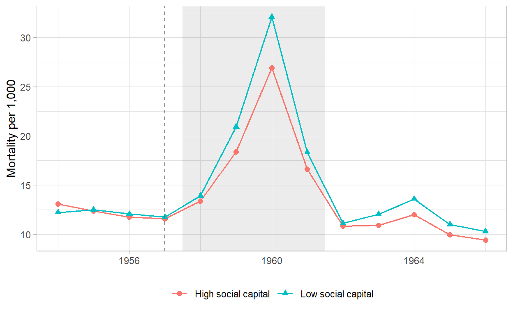
Figure 39.17: County mortality by social capital group, 1954 to 1966. Shading marks the famine years and the dashed line marks the 1957 reference year. Both groups spike, which is what universal exposure looks like: there is no flat control series anywhere in this figure. What the DID estimator picks up is the difference in the size of the two spikes.
Both curves explode in 1959 and 1960. Neither group is a control. The estimand is the gap between the two spikes, and everything in Section 39.14.5 is about what that gap means.
39.14.8.2 Table 1: three estimators, three windows, two measures of G
The paper reports the DID estimator without covariates alongside \(\text{OLS}_{*}\) and \(\text{OLS}_{+}\) with the nine county covariates, using 1957 as the reference year and three post-periods: the famine years, a pre-famine placebo window, and a post-famine window. In the fdid package, method = "did" is the unadjusted estimator, method = "ols1" is \(\text{OLS}_{+}\), and method = "ols2" is \(\text{OLS}_{*}\) with covariates centered internally.
one_row <- function(s, method) {
fit <- fdid(s, tr_period = 1958:1961, ref_period = 1957,
method = method, entire_period = c(1954:1956, 1958:1966))
fmt <- function(e) sprintf("%.2f [%.2f, %.2f]",
e$Estimate, e$CI_Lower, e$CI_Upper)
c(`Famine (1958-1961)` = fmt(fit$est$event),
`Pre-famine (1954-1956)` = fmt(fit$est$pre),
`Post-famine (1962-1966)` = fmt(fit$est$post))
}
tab1 <- function(s) {
data.frame(
DID = one_row(s, "did"),
`OLS*` = one_row(s, "ols2"),
`OLS+` = one_row(s, "ols1"),
check.names = FALSE
)
}
panel_a <- tab1(s_bin)
panel_b <- tab1(s_con)
knitr::kable(
rbind(
cbind(Panel = "A: binary G", Window = rownames(panel_a), panel_a),
cbind(Panel = "B: continuous G", Window = rownames(panel_b), panel_b)
),
row.names = FALSE,
caption = "Replication of Table 1 in Xu, Zhao and Ding (2026). Entries are point estimates with 95 percent heteroskedasticity-robust confidence intervals. The reference year is 1957 throughout."
)| Panel | Window | DID | OLS* | OLS+ |
|---|---|---|---|---|
| A: binary G | Famine (1958-1961) | -2.32 [-3.87, -0.77] | -2.93 [-4.50, -1.36] | -2.80 [-4.28, -1.33] |
| A: binary G | Pre-famine (1954-1956) | 0.32 [-0.10, 0.75] | 0.35 [-0.08, 0.78] | 0.33 [-0.08, 0.75] |
| A: binary G | Post-famine (1962-1966) | -0.81 [-1.21, -0.41] | -0.51 [-0.93, -0.09] | -0.49 [-0.89, -0.09] |
| B: continuous G | Famine (1958-1961) | -5.85 [-7.74, -3.95] | -5.15 [-10.27, -0.03] | -10.16 [-12.98, -7.35] |
| B: continuous G | Pre-famine (1954-1956) | 1.02 [0.05, 2.00] | -0.51 [-2.35, 1.33] | 0.69 [-0.33, 1.71] |
| B: continuous G | Post-famine (1962-1966) | -1.82 [-2.65, -1.00] | -1.35 [-2.44, -0.25] | -1.82 [-2.68, -0.96] |
The point estimates in Table 39.20 reproduce the published table to two decimals. Xu et al. (2026) report \(-2.32\), \(-2.92\), and \(-2.79\) for the famine years in Panel A, and \(-5.85\), \(-5.14\), and \(-10.11\) in Panel B; the corresponding entries above are \(-2.32\), \(-2.93\), and \(-2.80\), and \(-5.85\), \(-5.15\), and \(-10.16\). The confidence intervals differ slightly because the table above uses the robust sandwich while the paper bootstraps, a gap closed in the next subsection. Substantively, high social capital counties saw roughly three fewer deaths per thousand people per year during the famine, close to twelve fewer deaths per thousand over the four-year episode.
Three features of this table carry the substantive lesson.
The pre-famine window is a placebo. All three estimates sit near \(+0.3\) with intervals straddling zero, which is evidence for canonical parallel trends and therefore evidence that the famine-year number is \(\tau_{\text{em}}\). It is not evidence for factorial parallel trends, because no observable pre-trend can speak to the counterfactual-\(g\) potential outcomes that assumption restricts.
The post-famine window is small but nonzero, suggesting the famine’s mortality consequences did not fully dissipate by 1966.
Panel B is the cautionary tale. With a continuous \(G\), \(\text{OLS}_{+}\) reports \(-10.2\) while \(\text{OLS}_{*}\) reports \(-5.1\), a two-fold difference. The two specifications disagree precisely because the conditional contrast \(\tau_{\text{did}}(x)\) varies with the covariates. \(\text{OLS}_{+}\) imposes that it does not and returns a variance-weighted blend; \(\text{OLS}_{*}\) allows it to vary and reports the average over the sample distribution of \(X\). When the two diverge this sharply, the additive specification is misspecified and the interacted one is the estimand you actually want.
39.14.8.3 The TWFE coefficient is the same number
Applied papers report the TWFE interaction coefficient, so it is worth confirming by hand that this is the same estimator and not a cousin of it.
library(fixest)
two_period <- famine %>%
filter(year %in% c(1957, 1958:1961)) %>%
mutate(period = if_else(year == 1957, "pre", "post")) %>%
group_by(uniqueid, period) %>%
summarise(Y = mean(mortality), G = first(G_bin),
across(all_of(covs), first), .groups = "drop") %>%
mutate(post = as.integer(period == "post"))
cross_sec <- two_period %>%
select(uniqueid, period, Y, G, all_of(covs)) %>%
pivot_wider(names_from = period, values_from = Y) %>%
mutate(dY = post - pre)
# centered covariates for the interacted specifications
Xc <- as.data.frame(scale(cross_sec[, covs]))
names(Xc) <- paste0("c_", covs)
cross_sec_c <- bind_cols(cross_sec, Xc)
f_plus <- reformulate(c("G", covs), response = "dY")
f_star <- reformulate(paste0("G * (", paste(names(Xc), collapse = " + "), ")"),
response = "dY")
ols_plus <- lm(f_plus, data = cross_sec)
ols_star <- lm(f_star, data = cross_sec_c)
two_period_c <- bind_cols(
two_period,
setNames(as.data.frame(scale(two_period[, covs])), paste0("c_", covs))
)
twfe_plus <- feols(
reformulate(c("G:post", paste0(covs, ":post"), "uniqueid + period"),
response = "Y"),
data = two_period
)
twfe_star <- feols(
reformulate(c("G:post", paste0(names(Xc), ":post"),
paste0("G:", names(Xc), ":post"), "uniqueid + period"),
response = "Y"),
data = two_period_c
)
round(c(
`OLS+` = unname(coef(ols_plus)["G"]),
`TWFE+` = unname(coef(twfe_plus)["G:post"]),
`OLS*` = unname(coef(ols_star)["G"]),
`TWFE*` = unname(coef(twfe_star)["G:post"])
), 4)
#> OLS+ TWFE+ OLS* TWFE*
#> -2.8024 -2.8024 -2.9264 -2.9264The pairs agree to the last reported digit. A TWFE regression of the outcome with a \(G \times \text{post}\) interaction is a cross-sectional regression of the first difference wearing a panel costume. This is why the FDID framing is not a technicality: the estimator that thousands of papers describe as difference-in-differences is, in this design, ordinary regression adjustment on \(\Delta Y_i\), and it inherits that method’s identification requirements rather than DID’s.
39.14.8.4 Dynamics
Estimating the contrast year by year against the 1957 reference produces the FDID analogue of an event study.
fit_dyn <- fdid(s_bin, tr_period = 1958:1961, ref_period = 1957,
method = "ols2", entire_period = c(1954:1956, 1958:1966))
dyn <- fit_dyn$dynamic %>%
as.data.frame() %>%
mutate(year = as.numeric(rownames(.)))
ggplot(dyn, aes(year, Estimate)) +
annotate("rect", xmin = 1957.5, xmax = 1961.5, ymin = -Inf, ymax = Inf,
alpha = 0.12, fill = "grey40") +
geom_hline(yintercept = 0, linetype = "dashed", colour = "grey40") +
geom_errorbar(aes(ymin = CI_Lower, ymax = CI_Upper), width = 0.15,
colour = "grey30") +
geom_point(size = 2) +
geom_line(linewidth = 0.4, colour = "grey50") +
labs(x = NULL, y = expression(hat(tau)[did] ~ "relative to 1957")) +
scale_x_continuous(breaks = seq(1954, 1966, 2))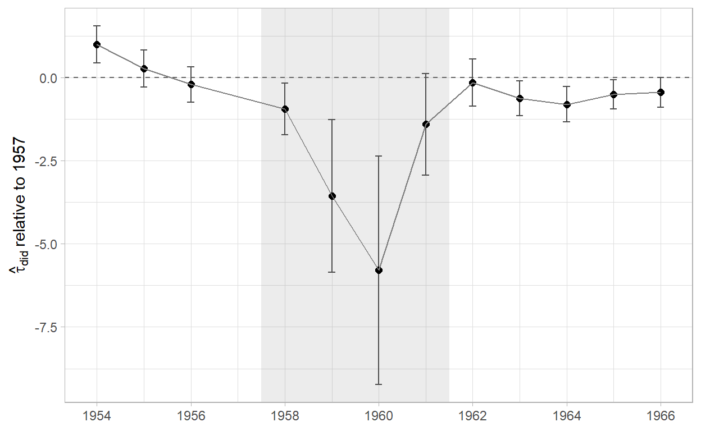
Figure 39.18: Year-by-year FDID estimates against the 1957 reference, from the interacted specification with centered covariates. The contrast is small before the famine, troughs in 1959 and 1960, and leaves a smaller negative gap after the famine ends. The near-flat pre-period supports canonical parallel trends, so these are estimates of effect modification unless factorial parallel trends is additionally assumed.
The shape in Figure 39.18 is what the original paper reports: a deep trough in 1959 and 1960 when the famine was most severe, and a partial but incomplete recovery afterwards. The pre-period deserves a closer look than it usually gets. The 1955 and 1956 estimates are indistinguishable from zero, but 1954 sits at about \(+1.0\) with an interval that excludes zero. Relative to the famine-year magnitudes of \(-3.6\) and \(-5.8\) this is small, and it points in the direction that would understate the famine-year contrast rather than manufacture it. Still, it is a real deviation, and the honest reading is that canonical parallel trends is well supported over the immediate pre-period and shakier over the longer one. This is precisely the kind of judgment call that the placebo tests and partial identification tools discussed later in this chapter are designed to discipline.
39.14.8.5 Bootstrap inference
The published intervals come from a unit-level bootstrap rather than the robust sandwich. Reproducing that for the headline estimates costs a couple of minutes.
set.seed(20260724)
boot_row <- function(method, nsims = 200) {
e <- fdid(s_bin, tr_period = 1958:1961, ref_period = 1957,
method = method, vartype = "bootstrap", nsims = nsims)$est$event
sprintf("%.2f [%.2f, %.2f]", e$Estimate, e$CI_Lower, e$CI_Upper)
}
data.frame(
Estimator = c("DID", "OLS*", "OLS+"),
`Bootstrap 95% CI` = vapply(c("did", "ols2", "ols1"), boot_row, character(1)),
row.names = NULL, check.names = FALSE
)
#> Estimator Bootstrap 95% CI
#> 1 DID -2.32 [-3.87, -0.84]
#> 2 OLS* -2.93 [-4.41, -1.39]
#> 3 OLS+ -2.80 [-4.15, -1.34]Point estimates are identical by construction; the intervals shift slightly and remain comfortably away from zero. Note that the bootstrap here resamples units and, for the interacted specification, recenters covariates inside each replication, which is the procedure Section 39.14.6 warned about getting wrong.
39.14.8.6 Alternative adjustment strategies
Because FDID reduces to a cross-sectional unconfoundedness problem in \(\Delta Y_i\), the full toolkit of adjustment methods applies: inverse probability weighting on the propensity score for \(G\), the doubly robust augmented version, and entropy balancing. Agreement across methods that make different modeling errors is a useful, if informal, specification check.
alt <- function(method, target = "all") {
e <- fdid(s_bin, tr_period = 1958:1961, ref_period = 1957,
method = method, target.pop = target)$est$event
data.frame(Method = method, Target = target,
Estimate = round(e$Estimate, 3),
CI = sprintf("[%.2f, %.2f]", e$CI_Lower, e$CI_Upper))
}
bind_rows(
alt("did"), alt("ols1"), alt("ols2"),
alt("ipw"), alt("aipw"),
alt("ebal", target = "1"),
alt("ols2", target = "1"),
alt("ols2", target = "0")
)
#> Method Target Estimate CI
#> 1 did all -2.316 [-3.87, -0.77]
#> 2 ols1 all -2.802 [-4.28, -1.33]
#> 3 ols2 all -2.926 [-4.50, -1.36]
#> 4 ipw all -2.514 [-4.17, -0.86]
#> 5 aipw all -2.511 [-3.71, -1.31]
#> 6 ebal 1 -3.123 [-5.06, -1.19]
#> 7 ols2 1 -3.065 [-4.67, -1.46]
#> 8 ols2 0 -2.787 [-4.53, -1.05]Everything lands between \(-2.3\) and \(-3.1\). The target.pop argument is worth dwelling on: it selects the distribution of \(X\) over which \(\tau_{\text{did}}(X_i)\) is averaged. Setting it to "1" reports \(\mathbb{E}[\tau_{\text{cm}}(X_i) \mid G_i = 1]\), the moderation among high social capital counties, which is the analogue of an ATT-style target; "all" reports the sample-wide average. The estimates differ modestly here, which tells you the moderation surface is not wildly heterogeneous in the covariates. Entropy balancing is implemented only for the \(G = 1\) target, which is why it appears with that setting.
39.14.8.7 How much unobserved confounding would overturn this?
Factorial parallel trends is untestable. What is testable is how fragile the conclusion is to violating it. Since the estimator is a regression of \(\Delta Y_i\) on \(G_i\) and \(X_i\), omitted-variable-bias sensitivity analysis applies directly, with the important twist that the confounder must be correlated with the change in mortality, not its level.
library(sensemakr)
sens <- sensemakr(model = ols_plus, treatment = "G",
benchmark_covariates = c("edu", "urban", "avggrain"),
kd = 1:3)
round(sens$sensitivity_stats[, c("rv_q", "rv_qa", "r2yd.x")], 4)
#> rv_q rv_qa r2yd.x
#> 1 0.1203 0.0612 0.0162
sens$bounds %>%
transmute(
benchmark = bound_label,
R2_with_G = round(r2dz.x, 4),
R2_with_dY = round(r2yz.dx, 4),
adjusted = round(adjusted_estimate, 2),
adjusted_CI = sprintf("[%.2f, %.2f]", adjusted_lower_CI, adjusted_upper_CI)
)
#> benchmark R2_with_G R2_with_dY adjusted adjusted_CI
#> 1 1x edu 0.0254 0.0016 -2.66 [-4.10, -1.22]
#> 2 2x edu 0.0507 0.0031 -2.52 [-3.98, -1.06]
#> 3 3x edu 0.0761 0.0047 -2.37 [-3.85, -0.90]
#> 4 1x urban 0.0003 0.0009 -2.79 [-4.21, -1.37]
#> 5 2x urban 0.0007 0.0019 -2.78 [-4.20, -1.36]
#> 6 3x urban 0.0010 0.0028 -2.77 [-4.19, -1.34]
#> 7 1x avggrain 0.0016 0.0082 -2.72 [-4.14, -1.31]
#> 8 2x avggrain 0.0031 0.0165 -2.65 [-4.06, -1.23]
#> 9 3x avggrain 0.0047 0.0247 -2.57 [-3.97, -1.16]The robustness value says an unobserved confounder would have to explain roughly twelve percent of the residual variance of both social capital and the mortality change to drive the estimate to zero, and about six percent to render it statistically indistinguishable from zero. The benchmark rows put that in perspective: a confounder three times as strong as county education, the most predictive observed covariate, still leaves a clearly negative estimate with an interval excluding zero.
That is reassuring, and it is also exactly as far as the data can take you. Sensitivity analysis bounds the damage from a confounder of a given strength; it cannot rule out one that is stronger. The causal-moderation reading of this estimate rests on a judgment, informed but ultimately untestable, that no such confounder exists.
39.14.9 What the DID Estimator Cannot Tell You: A Simulation
The gap between \(\tau_{\text{em}}\) and \(\tau_{\text{cm}}\) can sound like scholastic hair-splitting. It is not. Under a plausible data-generating process the two can differ in sign, so that an analyst reading a DID estimate as causal moderation reaches the opposite of the truth. The following simulation, which goes beyond the paper’s own exposition, makes that concrete.
Construct a world in which canonical parallel trends holds exactly but factorial parallel trends fails. Let \(U_i\) be an unobserved county attribute (call it institutional capacity). Social capital is assigned as a function of \(U_i\). Absent the event, outcome trends are unrelated to \(U_i\), so canonical parallel trends holds and any pre-trend test passes. But the sensitivity to the event, \(\theta_i\), is increasing in \(U_i\): places with more institutional capacity happen to be places where the shock bites harder. The true causal moderation \(\delta\) is set to \(-1\), so intervening to raise social capital genuinely softens the blow.
sim_once <- function(n = 4000, lambda = 2, delta = -1) {
U <- rnorm(n)
G <- rbinom(n, 1, plogis(1.5 * U))
mu <- rnorm(n, 10, 2) # unit level
trend <- rnorm(n, 0.5, 1) # trend absent the event, independent of G
theta <- -3 + lambda * U # effect of exposure when G = 0
Y_pre <- mu + 1.0 * G
Y_post <- mu + 1.0 * G + trend + (theta + delta * G) * 1
dY <- Y_post - Y_pre
c(did = mean(dY[G == 1]) - mean(dY[G == 0]),
em = mean((theta + delta)[G == 1]) - mean(theta[G == 0]),
cm = delta,
adj = unname(coef(lm(dY ~ G + U))["G"]))
}
set.seed(20260724)
grid <- lapply(c(0, 0.5, 1, 1.5, 2), function(l) {
R <- t(replicate(300, sim_once(lambda = l)))
data.frame(lambda = l, t(colMeans(R)))
}) %>% bind_rows()
round(grid, 3)
#> lambda did em cm adj
#> 1 0.0 -1.000 -1.000 -1 -0.999
#> 2 0.5 -0.471 -0.471 -1 -0.998
#> 3 1.0 0.064 0.060 -1 -0.994
#> 4 1.5 0.591 0.588 -1 -0.996
#> 5 2.0 1.126 1.124 -1 -0.997
grid %>%
select(lambda, `DID estimate` = did, `True causal moderation` = cm,
`Adjusted for U` = adj) %>%
pivot_longer(-lambda, names_to = "quantity", values_to = "value") %>%
ggplot(aes(lambda, value, colour = quantity, shape = quantity)) +
geom_hline(yintercept = 0, linetype = "dashed", colour = "grey40") +
geom_line(linewidth = 0.7) +
geom_point(size = 2.4) +
labs(x = expression("Dependence of exposure sensitivity on " * U * " (" * lambda * ")"),
y = "Value", colour = NULL, shape = NULL) +
theme(legend.position = "bottom")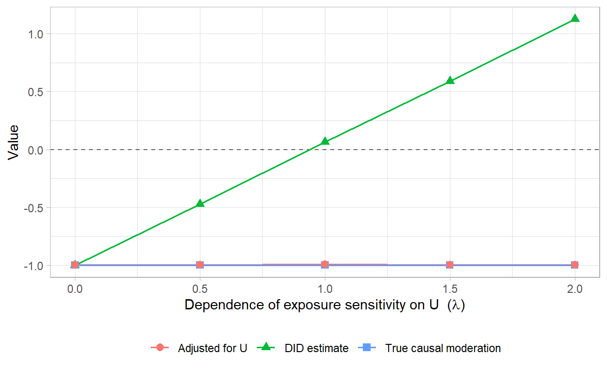
Figure 39.19: Simulation in which canonical parallel trends holds by construction while factorial parallel trends fails increasingly with lambda. The DID estimate tracks effect modification exactly and diverges from the true causal moderation, crossing zero and changing sign. Adjusting for the confounder that drives the violation restores the causal quantity.
Figure 39.19 traces the three quantities as the violation grows. At \(\lambda = 0\) the baseline factor is unrelated to the potential outcome changes, factorial parallel trends holds, and all three quantities coincide at the truth. As \(\lambda\) grows, the DID estimate tracks \(\tau_{\text{em}}\) perfectly, exactly as the identification result promises, and departs from \(\tau_{\text{cm}}\). By \(\lambda = 2\) the DID estimate is positive while the true causal moderation is negative. A researcher would report that the baseline factor made the shock worse when in fact it made it better.
Nothing in the observed data flags the problem. Canonical parallel trends holds by construction, so a placebo window would come back clean. The point estimate is tightly estimated. The only thing that has failed is an assumption nobody wrote down.
The last column shows the repair. Conditioning on \(U\) recovers \(\delta\) almost exactly, because conditional factorial parallel trends holds given \(U\). In practice \(U\) is unobserved, which is the entire difficulty, but the simulation clarifies what covariate adjustment in FDID is actually buying you: not better trend matching, but closure of the backdoor between the baseline factor and the outcome dynamics.
39.14.10 Beyond Historical Political Economy
The design travels well, and once you know its shape you start seeing it everywhere in industry and litigation work. Three settings show why the FDID vocabulary earns its keep.
Start with platform and privacy shocks. Apple’s App Tracking Transparency rollout and the enforcement date of the GDPR hit every advertiser at once. There is no unexposed control firm. What varies is pre-shock reliance on third-party identifiers, a baseline factor \(G\) measured from historical data. A TWFE regression of ad performance on \(G \times \text{post}\) is FDID. Under parallel trends it tells you that low-reliance advertisers fared better, which is \(\tau_{\text{em}}\) and is genuinely useful for describing incidence. It does not tell you that reducing third-party reliance would have caused a firm to fare better, which is \(\tau_{\text{cm}}\) and requires ruling out that low-reliance firms differed in their capacity to adapt.
A second case is demand shocks and channel readiness. The pandemic closed stores everywhere. Retailers differed in pre-pandemic ecommerce penetration. The estimand a strategy team usually wants is causal moderation, because the implied recommendation is “invest in the channel.” The estimand the regression delivers under standard assumptions is effect modification, because firms that had built ecommerce early were also firms with better logistics, younger customer bases, and more capital. Naming the gap changes the recommendation from “invest in the channel” to “firms that had invested weathered it better, for reasons we have not separated.”
The third case is expert-witness and damages work. This design is common in antitrust and securities litigation, where a market-wide event (a merger, a disclosure, a rule change) affects all firms and the analyst compares outcomes across a pre-event characteristic. Opposing experts routinely attack the parallel-trends assumption. The FDID framework supplies a sharper line of attack and a sharper defense: the pre-trend evidence a testifying expert typically presents speaks only to canonical parallel trends and therefore only licenses effect modification. If the damages theory requires a causal effect of the baseline characteristic, the expert owes the court an argument for factorial parallel trends, plus the sensitivity analysis of Section 39.14.8 to show how much unobserved confounding the conclusion tolerates. Being explicit about which of the four rows of Table 39.19 the opinion occupies is both better practice and harder to impeach.
The common thread is that the baseline factor is almost never as-if random with respect to outcome dynamics. Firms that prepared for a shock are different firms. Counties with dense clan networks are different counties. FDID does not solve that problem. It makes the problem impossible to leave implicit.
39.14.11 Practical Guidance
Check whether you are in this design at all. If your “control group” is defined by a baseline characteristic rather than by non-exposure to the event, you are running FDID, whatever the paper says.
Name the estimand before running the regression. Table 39.19 has four rows and they carry different assumptions. Writing the target quantity into the paper is not a stylistic preference; it determines which assumption you owe the reader (Lundberg et al. 2021).
Ask whether \(G\) is manipulable. If it is an immutable attribute, \(\tau_{\text{cm}}\) is not defined and \(\tau_{\text{em}}\) is the honest target. Report it as a descriptive contrast and resist causal verbs.
Look for an exclusion restriction. If institutional detail tells you some group was exposed but unaffected, you are back in canonical DID and can identify an ATT-style quantity. Argue for it explicitly rather than assuming it silently.
Do not let a clean pre-trend plot do work it cannot do. Flat pre-trends support canonical parallel trends and therefore effect modification. They are silent on factorial parallel trends, which restricts counterfactual-\(g\) potential outcomes that no pre-period reveals.
Center covariates in interacted specifications. Without centering, the coefficient on \(G\) in \(\text{OLS}_{*}\) or \(\text{TWFE}_{*}\) is a conditional contrast at an arbitrary point, not an average effect. Bootstrap with the original covariates and recenter inside each replication.
Compare additive and interacted specifications. A large gap, as in Panel B of the famine replication, is a signal that the conditional contrast varies with \(X\) and that the additive model is estimating a weighted blend of things you did not ask for.
Report sensitivity analysis, not just standard errors. The binding constraint in FDID is confounding between \(G\) and outcome dynamics, and a robustness value benchmarked against observed covariates communicates fragility far better than a \(p\)-value.
39.15 Modern Estimators for Staggered Adoption
Notation in this section follows the conventions of Table 35.12 in the foundations chapter.
Why modern estimators are needed. When treatment is adopted at different times by different units (staggered adoption), the conventional two-way fixed-effects (TWFE) specification
\[ Y_{it} = \alpha_i + \lambda_t + \beta D_{it} + \varepsilon_{it} \]
does not in general recover a simple average of treatment effects. Goodman-Bacon (2021) shows that the TWFE coefficient \(\hat\beta\) is a weighted average of all possible 2×2 DiD comparisons across treatment-timing cohorts, and that some of those weights can be negative whenever treatment effects are heterogeneous across cohorts or across time within a cohort. Early-treated units end up serving as “controls” for later-treated units even though they are themselves treated (the so-called forbidden comparison). The consequence is that \(\hat\beta\) can be smaller than every underlying ATT, of the wrong sign, or otherwise uninterpretable, even when parallel trends holds.
The estimators introduced below address this problem directly: Callaway and Sant’Anna (Callaway and Sant’Anna 2021), Sun and Abraham (Sun and Abraham 2021), de Chaisemartin and d’Haultfœuille (De Chaisemartin and d’Haultfoeuille 2020), and Borusyak, Jaravel and Spiess (Borusyak et al. 2024). Each explicitly estimates group-time ATTs with non-negative, interpretable weights. Prefer them over TWFE whenever treatment timing is staggered and effect heterogeneity is plausible, which in practice is almost always.
39.15.1 Group-Time Average Treatment Effects (Callaway and Sant’Anna 2021)
Notation Recap
\(Y_{it}(0)\): Potential outcome for unit \(i\) at time \(t\) in the absence of treatment.
\(Y_{it}(g)\): Potential outcome for unit \(i\) at time \(t\) if first treated in period \(g\).
-
\(Y_{it}\): Observed outcome for unit \(i\) at time \(t\).
\[ Y_{it} = \begin{cases} Y_{it}(0), & \text{if unit } i \text{ never treated ( } C_i = 1 \text{)} \\ 1\{G_i > t\} Y_{it}(0) + 1\{G_i \le t\} Y_{it}(G_i), & \text{otherwise} \end{cases} \]
\(G_i\): Group assignment, i.e., the time period when unit \(i\) first receives treatment.
\(C_i = 1\): Indicator that unit \(i\) never receives treatment (the never-treated group).
\(D_{it} = 1\{G_i \le t\}\): Indicator that unit \(i\) has been treated by time \(t\).
Assumptions
Identifying \(ATT(g, t)\) in a staggered design requires several restrictions on the data-generating process. Each plays a distinct role: some pin down the counterfactual, some restrict the assignment mechanism, and some ensure that the relevant comparison groups exist in finite samples. Reviewing them as a package, rather than as a checklist, clarifies which empirical settings are most likely to satisfy them and which diagnostics matter most.
Staggered Treatment Adoption.
Once treated, a unit remains treated in all subsequent periods, so \(D_{it}\) is non-decreasing in \(t\). This is what makes the design “staggered” rather than “switching”: absorbing treatment lets each cohort be summarized by a single adoption date \(G_i\). Empirically the assumption fails whenever units can opt out, lose eligibility, or cycle in and out of policy regimes (think laws that sunset, subsidies that expire, or firms that adopt and later abandon a practice). When that happens, the cohort indexing breaks down and one must turn to estimators that explicitly accommodate transitions in both directions, such as the switching DiD framework discussed in Section 39.15.11 and the panel-match approach in Section 39.15.5.-
Parallel Trends Assumptions (Conditional or Unconditional on Covariates).
Parallel trends is the central identifying restriction across all DiD designs (Section 39). In the staggered setting it must hold for each cohort \(g\) relative to whichever comparison group is used. Two variants are standard, and they differ in which units serve as controls:
Parallel trends based on never-treated units: \[ \mathbb{E}[Y_t(0) - Y_{t-1}(0) | G_i = g] = \mathbb{E}[Y_t(0) - Y_{t-1}(0) | C_i = 1] \] The cohort first treated at \(g\) would, absent treatment, have evolved on the same path as units never exposed. This is the cleanest comparison because controls are by construction unaffected by treatment, but it presumes that a meaningful never-treated population exists and is comparable to eventual adopters. In policy settings with eventual universal rollout, the never-treated set is empty or unrepresentative.
Parallel trends based on not-yet-treated units: \[ \mathbb{E}[Y_t(0) - Y_{t-1}(0) | G_i = g] = \mathbb{E}[Y_t(0) - Y_{t-1}(0) | D_{is} = 0, G_i \ne g] \] Units that have not yet been treated by time \(s\) serve as controls for cohort \(g\). This is the workhorse variant when never-treated units are scarce or suspected to differ systematically. The cost is that controls eventually become treated, so the effective comparison sample shrinks at later horizons, and unmodeled anticipation by future cohorts can contaminate the trend.
Either variant can be imposed conditional on covariates \(X\), leveraging the conditional ignorability logic discussed in Section 35.5.2:
\[ \mathbb{E}[Y_t(0) - Y_{t-1}(0) | X_i, G_i = g] = \mathbb{E}[Y_t(0) - Y_{t-1}(0) | X_i, C_i = 1] \]
The conditional version is appropriate when adoption timing correlates with observables that themselves move outcomes (firm size, baseline income, sector). Empirically, parallel trends fails when cohorts are differentially exposed to shocks (selection on shocks), when adoption is driven by anticipated outcome changes (Ashenfelter dips), or when underlying trends genuinely differ across cohorts. Pre-trend tests, the placebo strategies in Section 39.18.2, and the partial-identification tools of Sections 39.20.8, 39.20.8.3, and 39.20.8.4 help diagnose and bound the consequences of violations.
No Anticipatory Effects.
Outcomes prior to \(g\) should not respond to the impending treatment, so that pre-treatment periods are valid baselines. This is what makes the standard \(g - 1\) reference period meaningful. Anticipation tends to appear when adoption is preceded by announcements, application processes, or strategic positioning by treated units; visible pre-trends in event-study plots are the usual telltale. When anticipation is unavoidable, researchers either shift the reference period further back or explicitly model the anticipation window.Random Sampling.
Units are drawn independently and identically from the target population. This sampling assumption underlies the standard inference machinery, including the multiplier-bootstrap procedures used in the Callaway and Sant’Anna (2021) framework. Clustered or network-correlated sampling violates it and typically requires cluster-robust inference or design-based alternatives such as the Fisher randomization tests demonstrated later in this section.Irreversibility of Treatment.
Once treated, units do not revert to untreated status. This is the population-level analogue of the staggered adoption assumption above: it pins down what \(Y_{it}(g)\) even means once \(t \ge g\). It also rules out the kind of treatment cycling that would otherwise demand a switching estimator (Section 39.15.11).Overlap (Positivity).
For each group \(g\) and each covariate cell, the probability of belonging to that cohort lies strictly inside the unit interval: \[ 0 < \mathbb{P}(G_i = g | X_i) < 1 \] Overlap (Section 35.5.3) ensures that conditional comparisons are not built on extrapolation. In small samples or with rich covariates the assumption is easy to violate by accident: a single covariate cell with no never-treated units forces the estimator to extrapolate, and inverse-probability weights blow up near the boundary. Trimming, coarsening covariates, or switching to outcome-regression-only adjustments are the usual remedies.
The Group-Time ATT, \(ATT(g, t)\), measures the average treatment effect for units first treated in period \(g\), evaluated at time \(t\).
\[ ATT(g, t) = \mathbb{E}[Y_t(g) - Y_t(0) | G_i = g] \]
Interpretation:
\(g\) indexes when the group first receives treatment.
\(t\) is the time period when the effect is evaluated.
\(ATT(g, t)\) captures how treatment effects evolve over time, following adoption at time \(g\).
Identification of \(ATT(g, t)\)
Each parallel trends variant maps directly to a sample analogue. The choice is driven by what counts as a credible control: a never-treated reservoir if one exists, the not-yet-treated otherwise, with covariate adjustment layered on whenever observables predict adoption timing.
Using Never-Treated Units as Controls: \[ ATT(g, t) = \mathbb{E}[Y_t - Y_{g-1} | G_i = g] - \mathbb{E}[Y_t - Y_{g-1} | C_i = 1], \quad \forall t \ge g \] Preferred when the never-treated population is large and plausibly comparable. It avoids any contamination from future treatment effects but is only as good as the comparability of the two groups.
Using Not-Yet-Treated Units as Controls: \[ ATT(g, t) = \mathbb{E}[Y_t - Y_{g-1} | G_i = g] - \mathbb{E}[Y_t - Y_{g-1} | D_{it} = 0, G_i \ne g], \quad \forall t \ge g \] Useful when a never-treated group is small, missing, or visibly different from adopters. It expands the effective control sample but requires that future cohorts not anticipate treatment in ways that distort their pre-period outcomes.
-
Conditional Parallel Trends (with Covariates):
When treatment assignment depends on covariates \(X_i\), identification requires the conditional version of parallel trends and a corresponding adjustment, typically through outcome regression, inverse-probability weighting, or a doubly robust combination of the two:- Never-treated controls: \[ ATT(g, t) = \mathbb{E}[Y_t - Y_{g-1} | X_i, G_i = g] - \mathbb{E}[Y_t - Y_{g-1} | X_i, C_i = 1], \quad \forall t \ge g \]
- Not-yet-treated controls: \[ ATT(g, t) = \mathbb{E}[Y_t - Y_{g-1} | X_i, G_i = g] - \mathbb{E}[Y_t - Y_{g-1} | X_i, D_{it} = 0, G_i \ne g], \quad \forall t \ge g \]
Covariate adjustment matters most when adoption is endogenous to characteristics that themselves drive outcome trends. The reweighting machinery here parallels the inverse-probability ideas in Section 39.15.9, and overlap (Section 35.5.3) is the binding constraint on how aggressively one can condition.
Aggregating \(ATT(g, t)\): Common Parameters of Interest
The full grid \(\{ATT(g, t)\}\) is rarely the object an applied researcher reports. There are typically too many cells, each estimated with limited precision, and policy questions usually demand a single summary or a small set of summaries. The aggregation step is therefore a substantive choice: it embeds a particular question about which treated units, which exposure horizons, and which calendar windows the reader should care about. The following parameters are the standard menu, and the right pick depends on whether the goal is a cohort-level effect, an overall effect, an exposure profile, or a time-series narrative.
-
Average Treatment Effect per Group (\(\theta_S(g)\)):
Average effect over all post-treatment periods for cohort \(g\): \[ \theta_S(g) = \frac{1}{\tau - g + 1} \sum_{t = g}^{\tau} ATT(g, t) \]- \(\tau\): Last time period in the panel.
Use \(\theta_S(g)\) when the substantive interest is in which cohorts responded most. It is also the natural diagnostic for heterogeneity across adoption timing, the very source of bias documented in the Goodman-Bacon (2021) decomposition (Section 39.6.3.1). The drawback is that early cohorts are averaged over many post-periods while late cohorts are averaged over few, so \(\theta_S(g)\) values are not directly comparable across \(g\).
-
Overall Average Treatment Effect on the Treated (ATT) (\(\theta_S^O\)):
Weighted average of \(\theta_S(g)\) across cohorts, with weights proportional to cohort size: \[ \theta_S^O = \sum_{g=2}^{\tau} \theta_S(g) \cdot \mathbb{P}(G_i = g) \]This is the closest analogue to the scalar \(\beta\) that TWFE was supposed to deliver, but it is built from non-negative weights and so is interpretable as the average effect on a treated unit drawn at random. Report it when a single headline number is required; pair it with \(\theta_S(g)\) or the dynamic profile below to avoid masking heterogeneity.
-
Dynamic Treatment Effects (\(\theta_D(e)\)):
Average effect \(e\) periods after adoption, averaged over cohorts that have been observed at least \(e\) periods post-treatment: \[ \theta_D(e) = \sum_{g=2}^{\tau} \mathbb{1}\{g + e \le \tau\} \cdot ATT(g, g + e) \cdot \mathbb{P}(G_i = g | g + e \le \tau) \]The dynamic profile is the natural target when treatment effects build up, decay, or peak over time. It is the foundation of event studies (Section 42) and supports the visualization conventions discussed in Section 39.2. Note that the composition of cohorts entering \(\theta_D(e)\) shifts with \(e\): at long horizons only early-adopting cohorts remain, so apparent dynamics may reflect cohort composition as much as time-since-treatment.
-
Calendar Time Treatment Effects (\(\theta_C(t)\)):
Average treatment effect at calendar time \(t\) across all cohorts already treated by \(t\): \[ \theta_C(t) = \sum_{g=2}^{\tau} \mathbb{1}\{g \le t\} \cdot ATT(g, t) \cdot \mathbb{P}(G_i = g | g \le t) \]Choose \(\theta_C(t)\) when the question is how the policy is performing as time passes, for example whether a treatment loses bite during a recession or strengthens after a complementary policy goes into effect. It is also the right object when a macro shock plausibly hits all treated units simultaneously.
-
Average Calendar Time Treatment Effect (\(\theta_C\)):
Average of \(\theta_C(t)\) across post-treatment periods: \[ \theta_C = \frac{1}{\tau - 1} \sum_{t=2}^{\tau} \theta_C(t) \]A useful counterpart to \(\theta_S^O\): where the latter weights treated units, \(\theta_C\) weights calendar periods. The two coincide under effect homogeneity and diverge whenever cohort sizes are unbalanced or treatment dynamics differ across calendar windows.
The staggered() function exposes the same logic through a small set of estimand names. They are not different identifiers of a single quantity; they are different summaries that answer different questions, and reporting more than one is often informative:
Simple: equally weighted across all \((g, t)\) cells in the post-treatment region. A useful baseline because it does not let any one cohort dominate, but it gives the same weight to a cohort with a few units as to one with many.
Cohort: weights by treated-cohort size, so \((g, t)\) cells are aggregated by how many treated units they actually represent. This is the natural estimand when the goal is the average effect on a treated unit, and it lines up with \(\theta_S^O\) above.
Calendar: weights by the number of observations in each calendar period. Appropriate when the policy question is calendar-anchored (a fiscal year’s effect, a post-shock window) rather than cohort-anchored.
A practical rule of thumb: lead with the simple or cohort estimand for the headline ATT, use the dynamic event-study profile to communicate timing, and bring in the calendar variant when temporal context (business cycle, complementary policies) matters for interpretation.
library(staggered)
library(fixest)
data("base_stagg")
# Simple weighted average ATT
staggered(
df = base_stagg,
i = "id",
t = "year",
g = "year_treated",
y = "y",
estimand = "simple"
)
#> estimate se se_neyman
#> 1 -0.7110941 0.2211943 0.2214245
# Cohort weighted ATT (i.e., by treatment cohort size)
staggered(
df = base_stagg,
i = "id",
t = "year",
g = "year_treated",
y = "y",
estimand = "cohort"
)
#> estimate se se_neyman
#> 1 -2.724242 0.2701093 0.2701745
# Calendar weighted ATT (i.e., by year)
staggered(
df = base_stagg,
i = "id",
t = "year",
g = "year_treated",
y = "y",
estimand = "calendar"
)
#> estimate se se_neyman
#> 1 -0.5861831 0.1768297 0.1770729To visualize treatment dynamics around the time of adoption, the event study specification estimates dynamic treatment effects relative to the time of treatment (Figure 39.20).
res <- staggered(
df = base_stagg,
i = "id",
t = "year",
g = "year_treated",
y = "y",
estimand = "eventstudy",
eventTime = -9:8
)
# Plotting the event study with pointwise confidence intervals
library(ggplot2)
library(dplyr)
ggplot(
res |> mutate(
ymin_ptwise = estimate - 1.96 * se,
ymax_ptwise = estimate + 1.96 * se
),
aes(x = eventTime, y = estimate)
) +
geom_pointrange(aes(ymin = ymin_ptwise, ymax = ymax_ptwise)) +
geom_hline(yintercept = 0, linetype = "dashed") +
xlab("Event Time") +
ylab("ATT Estimate") +
ggtitle("Event Study: Dynamic Treatment Effects") +
causalverse::ama_theme()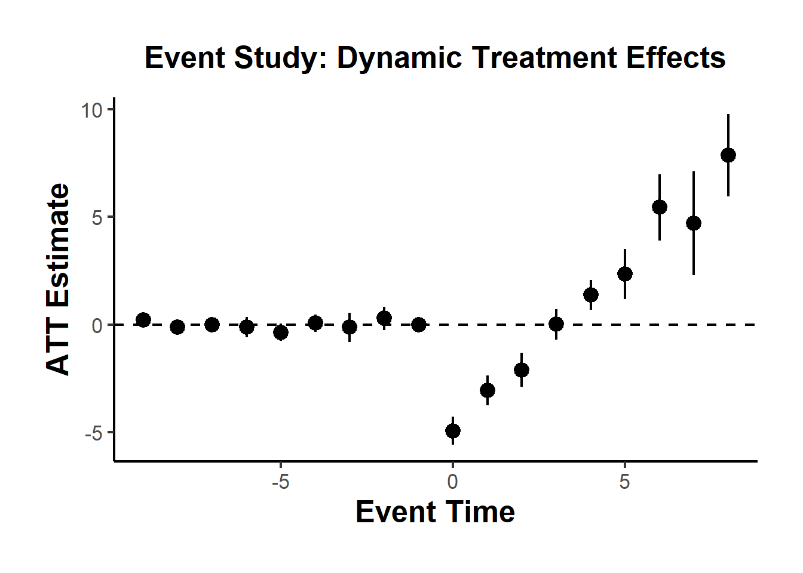
Figure 39.20: Event-study dynamic treatment effects.
The staggered package also includes direct implementations of alternative estimators:
staggered_cs()implements the Callaway and Sant’Anna (2021) estimator.staggered_sa()implements the Sun and Abraham (2021) estimator, which adjusts for bias from comparisons involving already-treated units.
# Callaway and Sant’Anna estimator
staggered_cs(
df = base_stagg,
i = "id",
t = "year",
g = "year_treated",
y = "y",
estimand = "simple"
)
#> estimate se se_neyman
#> 1 -0.7994889 0.4484987 0.4486122
# Sun and Abraham estimator
staggered_sa(
df = base_stagg,
i = "id",
t = "year",
g = "year_treated",
y = "y",
estimand = "simple"
)
#> estimate se se_neyman
#> 1 -0.7551901 0.4407818 0.4409525To assess statistical significance under the sharp null hypothesis \(H_0: \text{TE} = 0\), the staggered package includes an option for Fisher’s randomization (permutation) test. This approach tests whether the observed estimate could plausibly occur under a random reallocation of treatment timings.
# Fisher Randomization Test
staggered(
df = base_stagg,
i = "id",
t = "year",
g = "year_treated",
y = "y",
estimand = "simple",
compute_fisher = TRUE,
num_fisher_permutations = 100
)
#> estimate se se_neyman fisher_pval fisher_pval_se_neyman
#> 1 -0.7110941 0.2211943 0.2214245 0 0
#> num_fisher_permutations
#> 1 100This test provides a non-parametric method for inference and is particularly useful when the number of groups is small or standard errors are unreliable due to clustering or heteroskedasticity.
39.15.2 Cohort Average Treatment Effects (Sun and Abraham 2021)
Sun and Abraham (2021) propose a solution to the TWFE problem in staggered adoption settings by introducing an interaction-weighted estimator for dynamic treatment effects. This estimator is based on the concept of Cohort Average Treatment Effects on the Treated (CATT), which accounts for variation in treatment timing and dynamic treatment responses.
Traditional TWFE estimators implicitly assume homogeneous treatment effects and often rely on treated units serving as controls for later-treated units. When treatment effects vary over time or across groups, this leads to contaminated comparisons, especially in event-study specifications.
Sun and Abraham (2021) address this issue by:
Estimating cohort-specific treatment effects relative to time since treatment.
Using never-treated units as controls, or in their absence, the last-treated cohort.
39.15.2.1 Defining the Parameter of Interest: CATT
Let \(G_i = g\) denote the period when unit \(i\) first receives treatment. The cohort-specific average treatment effect on the treated (CATT) is defined as: \[ CATT_{g, l} = \mathbb{E}[Y_{i, g + l} - Y_{i, g + l}(0) \mid G_i = g] \] Where:
\(l\) is the relative period (e.g., \(l = -1\) is one year before treatment, \(l = 0\) is the treatment year).
\(Y_{i, g + l}(0)\) is the potential outcome without treatment.
\(Y_{i, g + l}\) is the observed outcome.
This formulation allows one to trace out the dynamic effect of treatment for each cohort, relative to their treatment start time.
Sun and Abraham (2021) extend the interaction-weighted idea to panel settings, originally introduced by Gibbons et al. (2018) in a cross-sectional context.
They propose regressing the outcome on:
Relative time indicators constructed by interacting treatment cohort (\(G_i\)) with time (\(t\)).
Unit and time fixed effects.
This method explicitly estimates \(CATT_{g, l}\) terms, avoiding the contaminating influence of already-treated units that TWFE models often suffer from.
Relative Period Bin Indicator
\[ D_{it}^l = \mathbb{1}(t - G_i = l) \]
- \(G_i\): The time period when unit \(i\) first receives treatment.
- \(l\): The relative time period: how many periods have passed since treatment began.
- Static Specification
\[ Y_{it} = \alpha_i + \lambda_t + \mu_g \sum_{l \ge 0} D_{it}^l + \epsilon_{it} \]
- \(\alpha_i\): Unit fixed effects.
- \(\lambda_t\): Time fixed effects.
- \(\mu_g\): Effect for group \(g\).
- Excludes periods prior to treatment.
- Dynamic Specification
\[ Y_{it} = \alpha_i + \lambda_t + \sum_{\substack{l = -K \\ l \neq -1}}^{L} \mu_l D_{it}^l + \epsilon_{it} \]
- Includes leads and lags of treatment indicators \(D_{it}^l\).
- Excludes one period (typically \(l = -1\)) to avoid perfect collinearity.
- Tests for pre-treatment parallel trends rely on the leads (\(l < 0\)).
39.15.2.2 Identifying Assumptions
- Parallel Trends
For identification, it is assumed that untreated potential outcomes follow parallel trends across cohorts in the absence of treatment: \[ \mathbb{E}[Y_{it}(0) - Y_{i, t-1}(0) \mid G_i = g] = \text{constant across } g \] This allows us to use never-treated or not-yet-treated units as valid counterfactuals.
- No Anticipatory Effects
Treatment should not influence outcomes before it is implemented. That is: \[ CATT_{g, l} = 0 \quad \text{for all } l < 0 \] This ensures that any pre-trends are not driven by behavioral changes in anticipation of treatment.
- Treatment Effect Homogeneity (Optional)
The treatment effect is consistent across cohorts for each relative period. Each adoption cohort should have the same path of treatment effects. In other words, the trajectory of each treatment cohort is similar.
Although Sun and Abraham (2021) allow treatment effect heterogeneity, some settings may assume homogeneous effects within cohorts and periods:
Each cohort has the same pattern of response over time.
This is relaxed in their design but assumed in simpler TWFE settings.
39.15.2.3 Comparison to Other Designs
Different DiD designs make distinct assumptions about how treatment effects vary (Table 39.21)
| Study | Vary Over Time | Vary Across Cohorts | Notes |
|---|---|---|---|
| Sun and Abraham (2021) | ✓ | ✓ | Allows full heterogeneity |
| Callaway and Sant’Anna (2021) | ✓ | ✓ | Estimates group × time ATTs |
| Borusyak et al. (2024) | ✓ | ✗ |
Homogeneous across cohorts Heterogeneity over time |
| Athey and Imbens (2022) | ✗ | ✓ | Heterogeneity only across adoption cohorts |
| De Chaisemartin and D’haultfœuille (2023) | ✓ | ✓ | Complete heterogeneity |
| Goodman-Bacon (2021) | ✓ or ✗ | ✗ or ✓ |
Restricts one dimension Heterogeneity either “vary across units but not over time” or “vary over time but not across units”. |
39.15.2.4 Sources of Treatment Effect Heterogeneity
Several forces can generate heterogeneous treatment effects:
Calendar Time Effects: macro events (e.g., recessions, policy changes) affect cohorts differently.
Selection into Timing: units self-select into early/late treatment based on anticipated effects.
Composition Differences: adoption cohorts may differ in observed or unobserved ways.
Such heterogeneity can bias TWFE estimates, which often average effects across incomparable groups.
39.15.2.5 Technical Issues
When using an event-study TWFE regression to estimate dynamic treatment effects in staggered adoption settings, one must exclude certain relative time indicators to avoid perfect multicollinearity. This arises because relative period indicators are linearly dependent due to the presence of unit and time fixed effects.
Specifically, the following two terms must be addressed:
The period immediately before treatment (\(l = -1\)): this period is typically omitted and serves as the baseline for comparison. This normalization has been standard practice in event study regressions prior to Sun and Abraham (2021) .
A distant post-treatment period (e.g., \(l = +5\) or \(l = +10\)): Sun and Abraham (2021) clarified that in addition to the baseline period, at least one other relative time indicator, typically from the far tail of the post-treatment distribution, must be dropped, binned, or trimmed to avoid multicollinearity among the relative time dummies. This issue emerges because fixed effects absorb much of the within-unit and within-time variation, reducing the effective rank of the design matrix.
Dropping certain relative periods (especially pre-treatment periods) introduces an implicit normalization: the estimates for included periods are now interpreted relative to the omitted periods. If treatment effects are present in these omitted periods (e.g., due to anticipation or early effects), this will contaminate the estimates of included relative periods.
To avoid this contamination, researchers often assume that all pre-treatment periods have zero treatment effect, i.e.,
\[ CATT_{g, l} = 0 \quad \text{for all } l < 0 \]
This assumption ensures that excluded pre-treatment periods form a valid counterfactual, and estimates for \(l \geq 0\) are not biased due to normalization.
Sun and Abraham (2021) resolve the issues of weighting and aggregation by using a clean weighting scheme that avoids contamination from excluded periods. Their method produces a weighted average of cohort- and time-specific treatment effects (\(CATT_{g, l}\)), where the weights are:
- Non-negative
- Sum to one
- Interpretable as the fraction of treated units who are observed \(l\) periods after treatment, normalized over the number of available periods \(g\)
This interaction-weighted estimator ensures that the estimated average treatment effect reflects a convex combination of dynamic treatment effects from different cohorts and times.
In this way, their aggregation logic closely mirrors that of Callaway and Sant’Anna (2021), who also construct average treatment effects from group-time ATTs using interpretable weights that align with the sampling structure.
library(fixest)
data("base_stagg")
# Estimate Sun & Abraham interaction-weighted model
res_sa20 <- feols(
y ~ x1 + sunab(year_treated, year) | id + year,
data = base_stagg
)Use iplot() to visualize the estimated dynamic treatment effects across relative time (Figure 39.21)
iplot(res_sa20)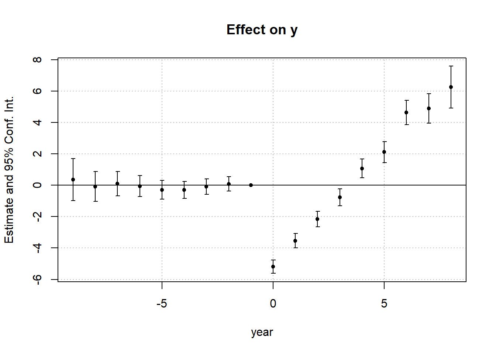
Figure 39.21: Estimated dynamic treatment effects on \(y\) across relative time.
You can summarize the results using different aggregation options:
# Overall average ATT
summary(res_sa20, agg = "att")
#> OLS estimation, Dep. Var.: y
#> Observations: 950
#> Fixed-effects: id: 95, year: 10
#> Standard-errors: IID
#> Estimate Std. Error t value Pr(>|t|)
#> x1 0.994678 0.018823 52.84242 < 2.2e-16 ***
#> ATT -1.133749 0.194764 -5.82113 8.6022e-09 ***
#> ---
#> Signif. codes: 0 '***' 0.001 '**' 0.01 '*' 0.05 '.' 0.1 ' ' 1
#> RMSE: 0.921817 Adj. R2: 0.887984
#> Within R2: 0.876406
# Aggregation across post-treatment periods (excluding leads)
summary(res_sa20, agg = c("att" = "year::[^-]"))
#> OLS estimation, Dep. Var.: y
#> Observations: 950
#> Fixed-effects: id: 95, year: 10
#> Standard-errors: IID
#> Estimate Std. Error t value Pr(>|t|)
#> x1 0.994678 0.018823 52.842416 < 2.2e-16 ***
#> year::-9:cohort::10 0.351766 0.682887 0.515116 6.0662e-01
#> year::-8:cohort::9 0.033914 0.682561 0.049686 9.6039e-01
#> year::-8:cohort::10 -0.191932 0.681848 -0.281488 7.7841e-01
#> year::-7:cohort::8 -0.589387 0.681850 -0.864394 3.8764e-01
#> year::-7:cohort::9 0.872995 0.683597 1.277061 2.0197e-01
#> year::-7:cohort::10 0.019512 0.682179 0.028603 9.7719e-01
#> year::-6:cohort::7 -0.042147 0.681865 -0.061811 9.5073e-01
#> year::-6:cohort::8 -0.657571 0.682009 -0.964167 3.3527e-01
#> year::-6:cohort::9 0.877743 0.682578 1.285923 1.9886e-01
#> year::-6:cohort::10 -0.403635 0.681921 -0.591909 5.5409e-01
#> year::-5:cohort::6 -0.658034 0.682137 -0.964666 3.3502e-01
#> year::-5:cohort::7 -0.316974 0.683243 -0.463926 6.4283e-01
#> year::-5:cohort::8 -0.238213 0.682050 -0.349261 7.2699e-01
#> year::-5:cohort::9 0.301477 0.684068 0.440712 6.5955e-01
#> year::-5:cohort::10 -0.564801 0.681846 -0.828340 4.0774e-01
#> year::-4:cohort::5 -0.983453 0.681867 -1.442295 1.4963e-01
#> year::-4:cohort::6 0.360407 0.682386 0.528156 5.9754e-01
#> year::-4:cohort::7 -0.430610 0.681846 -0.631535 5.2788e-01
#> year::-4:cohort::8 -0.895195 0.681846 -1.312898 1.8961e-01
#> year::-4:cohort::9 -0.392478 0.682433 -0.575116 5.6538e-01
#> year::-4:cohort::10 0.519001 0.681901 0.761110 4.4683e-01
#> year::-3:cohort::4 0.591288 0.681879 0.867144 3.8614e-01
#> year::-3:cohort::5 -1.000650 0.682072 -1.467074 1.4277e-01
#> year::-3:cohort::6 0.072188 0.681865 0.105868 9.1571e-01
#> year::-3:cohort::7 -0.836820 0.681850 -1.227279 2.2010e-01
#> year::-3:cohort::8 -0.783148 0.681958 -1.148382 2.5117e-01
#> year::-3:cohort::9 0.811285 0.682635 1.188461 2.3502e-01
#> year::-3:cohort::10 0.527203 0.682593 0.772354 4.4014e-01
#> year::-2:cohort::3 0.036941 0.682296 0.054143 9.5684e-01
#> year::-2:cohort::4 0.832250 0.681851 1.220575 2.2262e-01
#> year::-2:cohort::5 -1.574086 0.681930 -2.308281 2.1250e-02 *
#> year::-2:cohort::6 0.311758 0.681848 0.457225 6.4764e-01
#> year::-2:cohort::7 -0.558631 0.681891 -0.819239 4.1291e-01
#> year::-2:cohort::8 0.429591 0.681861 0.630028 5.2886e-01
#> year::-2:cohort::9 1.201899 0.681871 1.762649 7.8359e-02 .
#> year::-2:cohort::10 -0.002429 0.682085 -0.003562 9.9716e-01
#> att -1.133749 0.194764 -5.821130 8.6022e-09 ***
#> ---
#> Signif. codes: 0 '***' 0.001 '**' 0.01 '*' 0.05 '.' 0.1 ' ' 1
#> RMSE: 0.921817 Adj. R2: 0.887984
#> Within R2: 0.876406
# Aggregate post-treatment effects from l = 0 to 8
summary(res_sa20, agg = c("att" = "year::[012345678]")) |>
etable(digits = 2)
#> summary(res_..
#> Dependent Var.: y
#>
#> x1 0.99*** (0.02)
#> year = -9 x cohort = 10 0.35 (0.68)
#> year = -8 x cohort = 9 0.03 (0.68)
#> year = -8 x cohort = 10 -0.19 (0.68)
#> year = -7 x cohort = 8 -0.59 (0.68)
#> year = -7 x cohort = 9 0.87 (0.68)
#> year = -7 x cohort = 10 0.02 (0.68)
#> year = -6 x cohort = 7 -0.04 (0.68)
#> year = -6 x cohort = 8 -0.66 (0.68)
#> year = -6 x cohort = 9 0.88 (0.68)
#> year = -6 x cohort = 10 -0.40 (0.68)
#> year = -5 x cohort = 6 -0.66 (0.68)
#> year = -5 x cohort = 7 -0.32 (0.68)
#> year = -5 x cohort = 8 -0.24 (0.68)
#> year = -5 x cohort = 9 0.30 (0.68)
#> year = -5 x cohort = 10 -0.56 (0.68)
#> year = -4 x cohort = 5 -0.98 (0.68)
#> year = -4 x cohort = 6 0.36 (0.68)
#> year = -4 x cohort = 7 -0.43 (0.68)
#> year = -4 x cohort = 8 -0.90 (0.68)
#> year = -4 x cohort = 9 -0.39 (0.68)
#> year = -4 x cohort = 10 0.52 (0.68)
#> year = -3 x cohort = 4 0.59 (0.68)
#> year = -3 x cohort = 5 -1.0 (0.68)
#> year = -3 x cohort = 6 0.07 (0.68)
#> year = -3 x cohort = 7 -0.84 (0.68)
#> year = -3 x cohort = 8 -0.78 (0.68)
#> year = -3 x cohort = 9 0.81 (0.68)
#> year = -3 x cohort = 10 0.53 (0.68)
#> year = -2 x cohort = 3 0.04 (0.68)
#> year = -2 x cohort = 4 0.83 (0.68)
#> year = -2 x cohort = 5 -1.6* (0.68)
#> year = -2 x cohort = 6 0.31 (0.68)
#> year = -2 x cohort = 7 -0.56 (0.68)
#> year = -2 x cohort = 8 0.43 (0.68)
#> year = -2 x cohort = 9 1.2. (0.68)
#> year = -2 x cohort = 10 -0.002 (0.68)
#> att -1.1*** (0.19)
#> Fixed-Effects: --------------
#> id Yes
#> year Yes
#> _______________________ ______________
#> S.E. type IID
#> Observations 950
#> R2 0.90982
#> Within R2 0.87641
#> ---
#> Signif. codes: 0 '***' 0.001 '**' 0.01 '*' 0.05 '.' 0.1 ' ' 1The fwlplot package provides diagnostics for how much variation is explained by fixed effects or covariates (Figures 39.22, 39.23 and 39.24).
library(fwlplot)
# Simple FWL plot
fwl_plot(y ~ x1, data = base_stagg)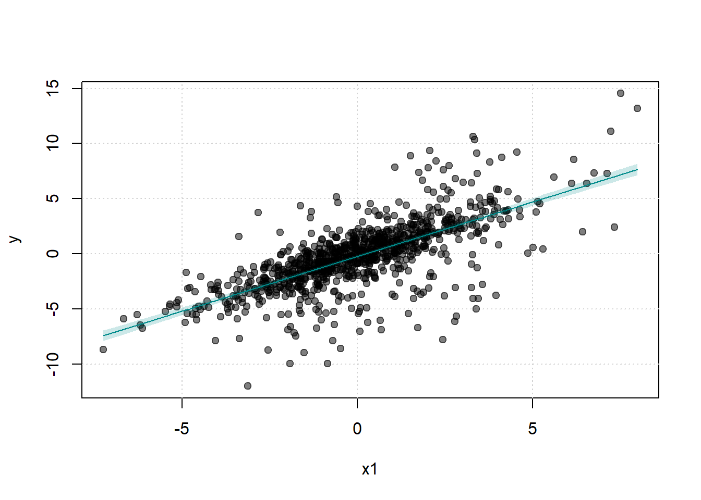
Figure 39.22: Scatter plot of \(y\) against \(x_1\).
# With fixed effects
fwl_plot(y ~ x1 | id + year,
data = base_stagg,
n_sample = 100)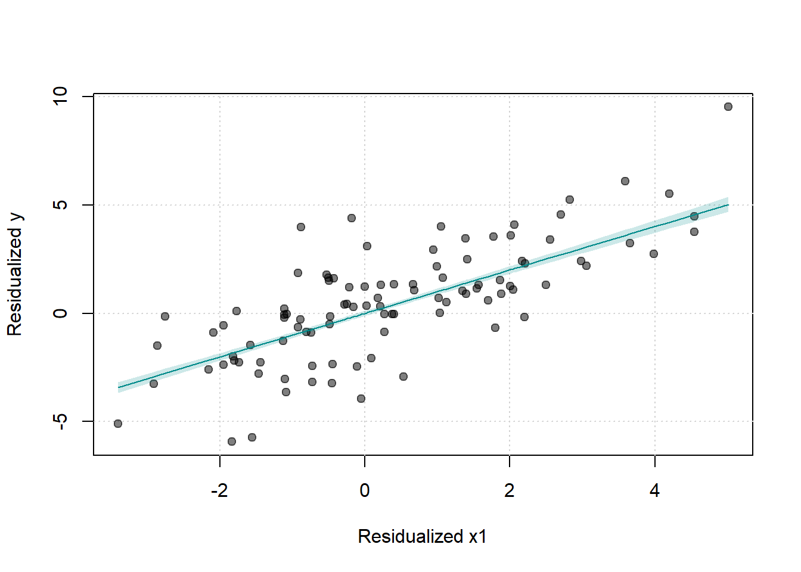
Figure 39.23: Scatter plot of residualized \(y\) against residualized \(x_1\).
# Splitting by treatment status
fwl_plot(
y ~ x1 |
id + year,
data = base_stagg,
n_sample = 100,
fsplit = ~ treated
)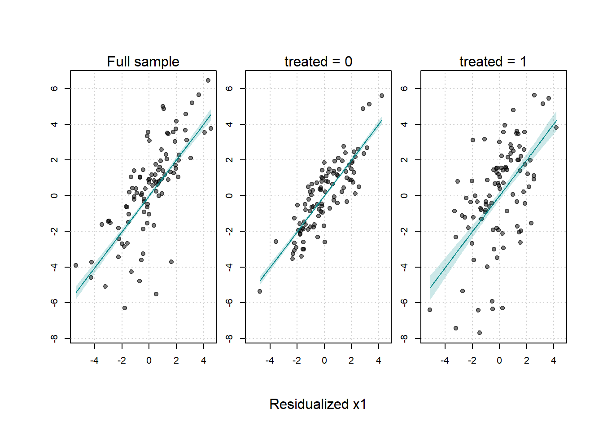
Figure 39.24: Scatter plot of residualized \(y\) against residualized \(x_1\) by treatment status.
39.15.3 Stacked Difference-in-Differences
The Stacked DiD approach addresses key limitations of standard TWFE models in staggered adoption designs, particularly treatment effect heterogeneity and timing variations. By constructing sub-experiments around each treatment event, researchers can isolate cleaner comparisons and reduce contamination from improperly specified control groups.
Basic TWFE Specification
\[ Y_{it} = \beta_{FE} D_{it} + A_i + B_t + \epsilon_{it} \]
- \(Y_{it}\): Outcome for unit \(i\) at time \(t\).
- \(D_{it}\): Treatment indicator (1 if treated, 0 otherwise).
- \(A_i\): Unit (group) fixed effects.
- \(B_t\): Time period fixed effects.
- \(\epsilon_{it}\): Idiosyncratic error term.
Steps in the Stacked DiD Procedure
39.15.3.1 Choose an Event Window
Define:
- \(\kappa_a\): number of pre-treatment periods to include in the event window (lead periods).
- \(\kappa_b\): number of post-treatment periods to include in the event window (lag periods).
Implication:
Only events where sufficient pre- and post-treatment periods exist will be included (i.e., excluding those events that do not meet this criteria).
39.15.3.2 Enumerate Sub-Experiments
Define:
- \(T_1\): First period in the panel.
- \(T_T\): Last period in the panel.
- \(\Omega_A\): The set of treatment adoption periods that fit within the event window:
\[ \Omega_A = \left\{ A_i \middle| T_1 + \kappa_a \le A_i \le T_T - \kappa_b \right\} \]
- Each \(A_i\) represents an adoption period for unit \(i\) that has enough time on both sides of the event.
Let \(d = 1, \dots, D\) index the sub-experiments in \(\Omega_A\).
- \(\omega_d\): The event (adoption) date of the \(d\)-th sub-experiment.
39.15.3.3 Define Inclusion Criteria
Valid Treated Units
- In sub-experiment \(d\), treated units have adoption date exactly equal to \(\omega_d\).
- A unit may only be treated in one sub-experiment to avoid duplication.
Clean Control Units
- Controls are units where \(A_i > \omega_d + \kappa_b\), i.e.,
- They are never treated, or
- They are treated in the far future (beyond the post-event window).
- A control unit can appear in multiple sub-experiments, but this requires correcting standard errors (see below).
Valid Time Periods
- Only observations where
\[ \omega_d - \kappa_a \le t \le \omega_d + \kappa_b \]
are included. - This ensures the analysis is centered on the event window.
39.15.3.4 Specify Estimating Equation
Basic DiD Specification in the Stacked Dataset
\[ Y_{itd} = \beta_0 + \beta_1 T_{id} + \beta_2 P_{td} + \beta_3 (T_{id} \times P_{td}) + \epsilon_{itd} \]
Where:
\(i\): Unit index
\(t\): Time index
\(d\): Sub-experiment index
\(T_{id}\): Indicator for treated units in sub-experiment \(d\)
\(P_{td}\): Indicator for post-treatment periods in sub-experiment \(d\)
\(\beta_3\): Captures the DiD estimate of the treatment effect.
Equivalent Form with Fixed Effects
\[ Y_{itd} = \beta_3 (T_{id} \times P_{td}) + \theta_{id} + \gamma_{td} + \epsilon_{itd} \]
where
\(\theta_{id}\): Unit-by-sub-experiment fixed effect.
\(\gamma_{td}\): Time-by-sub-experiment fixed effect.
Note:
- \(\beta_3\) summarizes the average treatment effect across all sub-experiments but does not allow for dynamic effects by time since treatment.
39.15.3.5 Stacked Event Study Specification
Define Time Since Event (\(YSE_{td}\)):
\[ YSE_{td} = t- \omega_d \]
where
Measures time since the event (relative time) in sub-experiment \(d\).
\(YSE_{td} \in [-\kappa_a, \dots, 0, \dots, \kappa_b]\) in every sub-experiment.
Event-Study Regression (Sub-Experiment Level)
\[ Y_{it}^d = \sum_{j = -\kappa_a}^{\kappa_b} \beta_j^d . 1 (YSE_{td} = j) + \sum_{j = -\kappa_a}^{\kappa_b} \delta_j^d (T_{id} . 1 (YSE_{td} = j)) + \theta_i^d + \epsilon_{it}^d \]
where
Separate coefficients for each sub-experiment \(d\).
\(\delta_j^d\): Captures treatment effects at relative time \(j\) within sub-experiment \(d\).
Pooled Stacked Event-Study Regression
\[ Y_{itd} = \sum_{j = -\kappa_a}^{\kappa_b} \beta_j \cdot \mathbb{1}(YSE_{td} = j) + \sum_{j = -\kappa_a}^{\kappa_b} \delta_j \left( T_{id} \cdot \mathbb{1}(YSE_{td} = j) \right) + \theta_{id} + \epsilon_{itd} \]
- Pooled coefficients \(\delta_j\) reflect average treatment effects by event time \(j\) across sub-experiments.
39.15.3.6 Clustering in Stacked DID
Cluster at Unit by Sub-Experiment Level (Cengiz et al. 2019): accounts for units appearing multiple times across sub-experiments.
Cluster at Unit Level (Deshpande and Li 2019): appropriate when units are uniquely identified and do not appear in multiple sub-experiments.
library(did)
library(tidyverse)
library(fixest)
# Load example data
data(base_stagg)
# Get treated cohorts (exclude never-treated units coded as 10000)
cohorts <- base_stagg %>%
filter(year_treated != 10000) %>%
distinct(year_treated) %>%
pull()
# Function to generate data for each sub-experiment
getdata <- function(j, window) {
base_stagg %>%
filter(
year_treated == j | # treated units in cohort j
year_treated > j + window # controls not treated soon after
) %>%
filter(
year >= j - window &
year <= j + window # event window bounds
) %>%
mutate(df = j) # sub-experiment indicator
}
# Generate the stacked dataset
stacked_data <- map_df(cohorts, ~ getdata(., window = 5)) %>%
mutate(
rel_year = if_else(df == year_treated, time_to_treatment, NA_real_)
) %>%
fastDummies::dummy_cols("rel_year", ignore_na = TRUE) %>%
mutate(across(starts_with("rel_year_"), ~ replace_na(., 0)))
# Estimate fixed effects regression on the stacked data
stacked_result <- feols(
y ~ `rel_year_-5` + `rel_year_-4` + `rel_year_-3` + `rel_year_-2` +
rel_year_0 + rel_year_1 + rel_year_2 + rel_year_3 +
rel_year_4 + rel_year_5 |
id ^ df + year ^ df,
data = stacked_data
)
# Extract coefficients and standard errors
stacked_coeffs <- stacked_result$coefficients
stacked_se <- stacked_result$se
# Insert zero for the omitted period (usually -1)
stacked_coeffs <- c(stacked_coeffs[1:4], 0, stacked_coeffs[5:10])
stacked_se <- c(stacked_se[1:4], 0, stacked_se[5:10])
# Plotting estimates from three methods: Callaway & Sant'Anna, Sun & Abraham, and Stacked DiD
cs_out <- att_gt(
yname = "y",
data = base_stagg,
gname = "year_treated",
idname = "id",
# xformla = "~x1",
tname = "year"
)
cs <-
aggte(
cs_out,
type = "dynamic",
min_e = -5,
max_e = 5,
bstrap = FALSE,
cband = FALSE
)
res_sa20 = feols(y ~ sunab(year_treated, year) |
id + year, base_stagg)
sa = tidy(res_sa20)[5:14, ] %>% pull(estimate)
sa = c(sa[1:4], 0, sa[5:10])
sa_se = tidy(res_sa20)[6:15, ] %>% pull(std.error)
sa_se = c(sa_se[1:4], 0, sa_se[5:10])
compare_df_est = data.frame(
period = -5:5,
cs = cs$att.egt,
sa = sa,
stacked = stacked_coeffs
)
compare_df_se = data.frame(
period = -5:5,
cs = cs$se.egt,
sa = sa_se,
stacked = stacked_se
)
compare_df_longer <- compare_df_est %>%
pivot_longer(!period, names_to = "estimator", values_to = "est") %>%
full_join(compare_df_se %>%
pivot_longer(!period, names_to = "estimator", values_to = "se")) %>%
mutate(upper = est + 1.96 * se,
lower = est - 1.96 * se)Figure 39.25 shows a comparison between three estimators (i.e., CS, SA, and stacked)
ggplot(compare_df_longer) +
geom_ribbon(aes(
x = period,
ymin = lower,
ymax = upper,
group = estimator
), alpha = 0.2) +
geom_line(aes(
x = period,
y = est,
group = estimator,
color = estimator
),
linewidth = 1.2) +
labs(
title = "Comparison of Dynamic Treatment Effects",
x = "Event Time (Periods since Treatment)",
y = "Estimated ATT",
color = "Estimator"
) +
causalverse::ama_theme()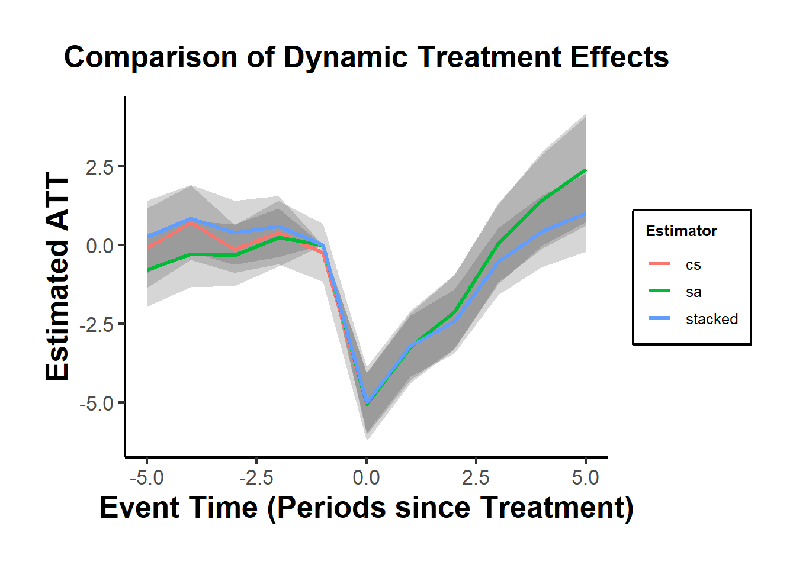
Figure 39.25: Comparison of dynamic average treatment effects across CS, SA, and stacked estimators.
39.15.4 How Much Should We Trust Staggered DiD Estimates?
The three estimators above are the standard repair kit. A natural next question is how much damage the unrepaired TWFE specification actually does in the kinds of panels that applied researchers work with, and how much of the published record changes once the repair is applied. Baker et al. (2022) answer both questions for the finance and accounting literatures, and their design is worth reproducing in full because it separates two claims that are often conflated:
- Staggered TWFE is biased in general. This is false as stated. Under several plausible data generating processes the TWFE coefficient recovers the average treatment effect on the treated essentially exactly.
- Staggered TWFE is biased when treatment effects vary across adoption cohorts or evolve over time. This is true, and the bias can be large enough to reverse the sign of the estimate.
The distinction matters for practice. A researcher who knows which features of a design create the problem can look at their own data and form a prior about how badly TWFE is likely to misbehave before running a single alternative estimator.
39.15.4.1 Simulation Evidence Across Six Data Generating Processes
Baker et al. (2022) construct a firm by year panel, strip out any treatment effect, and then add back a known effect under six designs. Because the true effect is planted by the researcher, the bias of any estimator is observable rather than inferred.
The six designs cross two dimensions. The first is timing: a single common adoption date versus three staggered cohorts. The second is the shape of the effect: constant after adoption versus a trend break that accumulates each year, and equal across cohorts versus differing across cohorts.
| Design | Timing | Effect shape | Effect across cohorts |
|---|---|---|---|
| 1 | Single period | Constant | Not applicable |
| 2 | Single period | Dynamic | Not applicable |
| 3 | Staggered | Constant | Equal |
| 4 | Staggered | Constant | Unequal |
| 5 | Staggered | Dynamic | Equal |
| 6 | Staggered | Dynamic | Unequal |
The panel below is simulated rather than drawn from Compustat, since the original design requires a WRDS subscription, but the structure follows the paper: firm and year fixed effects drawn from a fixed distribution, an idiosyncratic shock, random assignment of firms to states of incorporation, and random assignment of states to adoption cohorts. Treatment effects are expressed as fractions of the standard deviation of the outcome so that magnitudes are comparable across designs.
library(dplyr)
library(tidyr)
library(purrr)
library(fixest)
set.seed(20220301)
n_firm <- 400L
yrs <- 1990:2019
firm_fe <- rnorm(n_firm, 0, 0.30)
year_fe <- rnorm(length(yrs), 0, 0.05)
shell <- expand_grid(id = seq_len(n_firm), year = yrs)
sd_y <- 0.35
# Draw one untreated panel: firm FE + year FE + idiosyncratic shock.
make_panel <- function() {
incorp <- sample(state.abb, n_firm, replace = TRUE)
shell %>%
mutate(
y0 = firm_fe[id] + year_fe[match(year, yrs)] +
rnorm(n(), 0, 0.25),
incorp = incorp[id]
)
}
# Plant a known treatment effect on top of the untreated panel.
assign_dgp <- function(d, k) {
rs <- sample(state.abb)
d <- if (k <= 2) {
d %>% mutate(cohort = if_else(incorp %in% rs[1:25], 2005L, NA_integer_))
} else {
d %>% mutate(cohort = case_when(
incorp %in% rs[1:17] ~ 1998L,
incorp %in% rs[18:35] ~ 2005L,
TRUE ~ 2012L
))
}
d %>%
mutate(
post = !is.na(cohort) & year >= cohort,
rel = year - cohort,
delta = case_when(
!post ~ 0,
k == 1 ~ 0.50 * sd_y,
k == 2 ~ 0.05 * sd_y * (rel + 1),
k == 3 ~ 0.50 * sd_y,
k == 4 ~ case_when(
cohort == 1998 ~ 0.5 * sd_y,
cohort == 2005 ~ 0.3 * sd_y,
TRUE ~ 0.1 * sd_y
),
k == 5 ~ 0.03 * sd_y * (rel + 1),
k == 6 ~ case_when(
cohort == 1998 ~ 0.05 * sd_y,
cohort == 2005 ~ 0.03 * sd_y,
TRUE ~ 0.01 * sd_y
) * (rel + 1)
),
y = y0 + delta,
treat = as.integer(post)
)
}Each iteration draws a fresh panel, plants the effect under all six designs, and records both the true average effect on treated observations and the static TWFE coefficient.
one_sim <- function(i) {
d0 <- make_panel()
map_dfr(1:6, function(k) {
d <- assign_dgp(d0, k)
truth <- mean(d$delta[d$treat == 1])
est <- coef(feols(y ~ treat | id + year,
data = d, notes = FALSE))[["treat"]]
tibble(dgp = k, truth = truth, twfe = est)
})
}
blw_sim <- map_dfr(1:100, one_sim)
blw_summary <- blw_sim %>%
group_by(dgp) %>%
summarise(
true_att = mean(truth),
twfe = mean(twfe),
bias = mean(twfe - truth),
pct_bias = 100 * mean((twfe - truth) / truth),
.groups = "drop"
) %>%
mutate(design = c(
"1. Single period, constant",
"2. Single period, dynamic",
"3. Staggered, constant, equal",
"4. Staggered, constant, unequal",
"5. Staggered, dynamic, equal",
"6. Staggered, dynamic, unequal"
)) %>%
select(design, true_att, twfe, bias, pct_bias)
knitr::kable(
blw_summary,
digits = c(0, 3, 3, 3, 1),
col.names = c("Design", "True ATT", "TWFE", "Bias", "Bias (%)"),
caption = "Static TWFE against the planted average treatment effect on the treated, averaged over 100 simulated panels."
)| Design | True ATT | TWFE | Bias | Bias (%) |
|---|---|---|---|---|
| 1. Single period, constant | 0.175 | 0.174 | -0.001 | -0.5 |
| 2. Single period, dynamic | 0.140 | 0.138 | -0.002 | -1.1 |
| 3. Staggered, constant, equal | 0.175 | 0.176 | 0.001 | 0.8 |
| 4. Staggered, constant, unequal | 0.128 | 0.106 | -0.023 | -17.7 |
| 5. Staggered, dynamic, equal | 0.096 | 0.005 | -0.091 | -94.4 |
| 6. Staggered, dynamic, unequal | 0.131 | -0.021 | -0.152 | -116.1 |
The pattern in Table 39.22 reproduces the paper’s central result. Designs 1 through 3 are recovered essentially without bias: a single adoption date poses no problem regardless of the shape of the effect, and staggered adoption is also harmless as long as every cohort receives the same constant effect. Design 4 introduces cohort heterogeneity in the level of the effect and the TWFE coefficient begins to drift. Design 5 keeps the effect equal across cohorts but lets it grow over time, and the estimate collapses toward zero. Design 6 combines the two and the estimate changes sign, reporting a negative effect when the planted effect is strictly positive.
The mechanism is the one described in the Goodman-Bacon Decomposition. When a treatment effect grows after adoption, an early cohort that has already been treated for several years is a moving target as a control group. The two by two comparison that uses it as the counterfactual for a later cohort subtracts that growth, and the weight the decomposition places on such a comparison can be negative. With enough weight on those comparisons, the aggregate flips.
Two practical corollaries follow. First, a design with a single adoption date needs none of the machinery in this section. Second, a design in which the treatment is expected to phase in, which describes most policy adoptions and most corporate governance changes, is exactly the case where TWFE is least trustworthy.
39.15.4.2 Inference Is Affected Too, Not Just the Point Estimate
The bias in the point estimate has a companion problem that is easier to overlook. Suppose the treatment effect really is zero on average, but individual cohorts happen to draw different trend slopes, some positive and some negative. This is an unremarkable situation: it just says the treatment does nothing systematically while cohorts differ idiosyncratically.
Baker et al. (2022) show that TWFE in this setting does not merely produce noisy estimates, it produces a t-statistic whose sampling distribution is far wider than the standard normal that inference assumes. The simulation below draws three cohort specific slopes from a mean zero distribution in each iteration, so that the expected average effect is zero by construction, and records the TWFE t-statistic.
set.seed(20210915)
one_rejection <- function(i) {
incorp <- sample(state.abb, n_firm, replace = TRUE)
rs <- sample(state.abb)
# three cohort-specific trend slopes, centred at zero
taus <- rnorm(3, 0, 0.03 * sd_y)
d <- shell %>%
mutate(
y0 = firm_fe[id] + year_fe[match(year, yrs)] +
rnorm(n(), 0, 0.25),
incorp = incorp[id]
) %>%
mutate(
cohort = case_when(
incorp %in% rs[1:17] ~ 1998L,
incorp %in% rs[18:35] ~ 2005L,
TRUE ~ 2012L
),
rel = year - cohort,
post = year >= cohort,
slope = case_when(
cohort == 1998 ~ taus[1],
cohort == 2005 ~ taus[2],
TRUE ~ taus[3]
),
delta = if_else(post, slope * (rel + 1), 0),
y = y0 + delta,
treat = as.integer(post)
)
m <- feols(y ~ treat | id + year, data = d, notes = FALSE)
tibble(t = m$coeftable[1, 3], truth = mean(d$delta[d$treat == 1]))
}
rejection_sim <- map_dfr(1:300, one_rejection)
c(
mean_true_att = mean(rejection_sim$truth),
share_rejected = mean(abs(rejection_sim$t) > 1.96),
sd_of_t = sd(rejection_sim$t)
)
#> mean_true_att share_rejected sd_of_t
#> 0.0007078191 0.6066666667 3.9318007037
share_insig <- mean(abs(rejection_sim$t) <= 1.96)
dens <- density(rejection_sim$t)
dens_df <- tibble(x = dens$x, y = dens$y)
ggplot(dens_df, aes(x = x, y = y)) +
geom_area(fill = "#4B5F6C", colour = "grey40", alpha = 0.35) +
geom_area(data = filter(dens_df, x >= -1.96, x <= 1.96),
fill = "#A7473A", alpha = 0.75) +
annotate("label", x = 9, y = max(dens_df$y) * 0.8, size = 3,
label = paste0(scales::percent(share_insig, accuracy = 0.1),
" insignificant\nt-statistics")) +
scale_x_continuous(breaks = c(-15, -10, -1.96, 0, 1.96, 10, 15)) +
labs(x = "TWFE t-statistic", y = "Density") +
causalverse::ama_theme()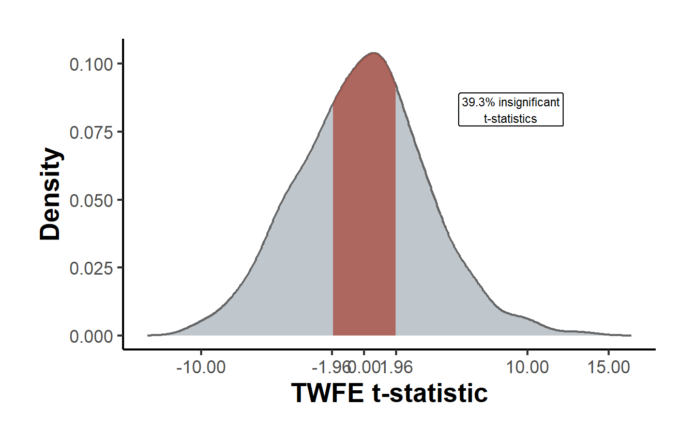
Figure 39.26: Sampling distribution of the static TWFE t-statistic when the average treatment effect is zero by construction. The shaded region marks the range in which the null would not be rejected.
Figure 39.26 shows the resulting sampling distribution. The average of the true treatment effects across iterations is essentially zero, exactly as designed. Yet the t-statistic has a standard deviation several times the nominal one, and the null of no effect is rejected in a large majority of iterations. A researcher running this design once would report a highly significant effect with no way of knowing that the significance is an artefact of cohort heterogeneity rather than evidence of a treatment effect.
This has a direct consequence for how robustness is judged. A large t-statistic in a staggered TWFE specification is not reassurance. It can be produced by the same heterogeneity that biases the point estimate, and the two problems tend to appear together.
39.15.4.3 Replication: Bank Deregulation and Income Inequality
Simulation establishes that the bias can be large. Whether it is large in any particular published study is a separate question, and Baker et al. (2022) answer it by re-estimating well known papers. The first is Beck et al. (2010), which studies the intrastate branching deregulations that US states enacted between the 1970s and the 1990s and reports that deregulation reduced income inequality. The replication data are bundled with this book.
bll <- readRDS("data/bll_bank_dereg.rds") %>%
mutate(
log_gini = log(gini),
treat = intra,
rel_year = wrkyr - branch_reform
)
dplyr::glimpse(bll[, 1:8])
#> Rows: 1,519
#> Columns: 8
#> $ statefip <dbl> 1, 1, 1, 1, 1, 1, 1, 1, 1, 1, 1, 1, 1, 1, 1, 1, …
#> $ state <chr> "AL", "AL", "AL", "AL", "AL", "AL", "AL", "AL", …
#> $ state_name <chr> "Alabama", "Alabama", "Alabama", "Alabama", "Ala…
#> $ wrkyr <dbl> 1976, 1977, 1978, 1979, 1980, 1981, 1982, 1983, …
#> $ branch_reform <dbl> 1981, 1981, 1981, 1981, 1981, 1981, 1981, 1981, …
#> $ intra <dbl> 0, 0, 0, 0, 0, 0, 1, 1, 1, 1, 1, 1, 1, 1, 1, 1, …
#> $ gini <dbl> 0.4268312, 0.4201466, 0.4454181, 0.4630798, 0.43…
#> $ theil <dbl> 0.3085082, 0.2985663, 0.3377605, 0.3656532, 0.32…The panel covers 49 states from 1976 through 2006. The treatment indicator intra switches on in the year after a state deregulates, so the reform year itself is coded as untreated.
The adoption pattern in Figure 39.27 is the first thing to inspect, because it determines how much of the identifying variation can come from clean comparisons.
bll %>%
mutate(
state = forcats::fct_reorder(state, dplyr::desc(state)),
status = factor(if_else(wrkyr < branch_reform, "Pre", "Post"),
levels = c("Pre", "Post"))
) %>%
ggplot(aes(x = wrkyr, y = state, fill = status)) +
geom_tile(alpha = 0.85) +
scale_fill_manual(values = c(Pre = "#4B5F6C", Post = "#A7473A")) +
labs(x = NULL, y = NULL, fill = NULL) +
causalverse::ama_theme() +
theme(legend.position = "bottom")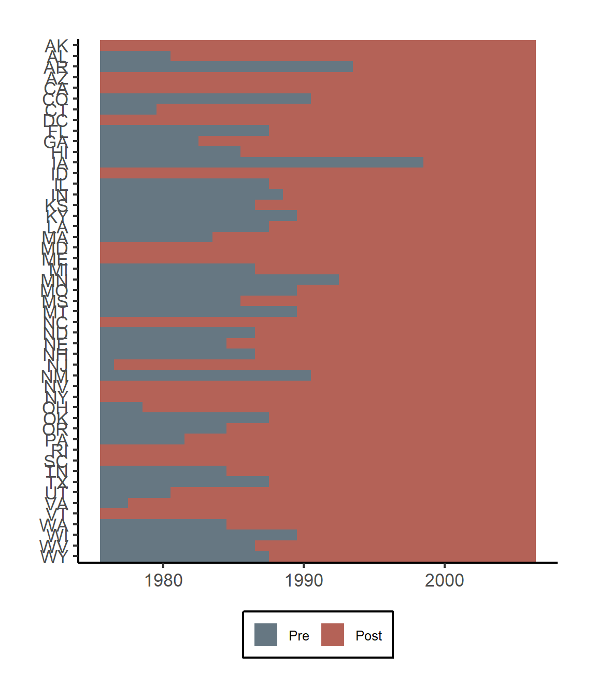
Figure 39.27: Intrastate branching deregulation timing by state. Ten states had already deregulated before the panel begins and are treated throughout.
Ten of the 49 states deregulated in or before 1960 and are therefore treated in every year of the panel. Under TWFE they serve as control units for every later adopter, which is precisely the comparison that the decomposition literature flags as unsafe.
The published specification regresses log Gini on the deregulation indicator with state and year fixed effects, with and without the paper’s controls.
mod_nocov <- feols(log_gini ~ treat | statefip + wrkyr,
cluster = ~statefip, data = bll)
mod_cov <- feols(
log_gini ~ treat + gsp_pc_growth + prop_blacks + prop_dropouts +
prop_female_headed + unemploymentrate | statefip + wrkyr,
cluster = ~statefip, data = bll
)
etable(mod_nocov, mod_cov, keep = "treat",
headers = c("No controls", "With controls"))
#> mod_nocov mod_cov
#> No controls With controls
#> Dependent Var.: log_gini log_gini
#>
#> treat -0.0220** (0.0075) -0.0177** (0.0064)
#> Fixed-Effects: ------------------ ------------------
#> statefip Yes Yes
#> wrkyr Yes Yes
#> _______________ __________________ __________________
#> S.E.: Clustered by: statefip by: statefip
#> Observations 1,519 1,519
#> R2 0.53710 0.56450
#> Within R2 0.02577 0.08343
#> ---
#> Signif. codes: 0 '***' 0.001 '**' 0.01 '*' 0.05 '.' 0.1 ' ' 1Both columns reproduce the published result: deregulation is associated with a decline in log Gini of roughly two percent, statistically significant at conventional levels.
39.15.4.3.1 Where the Estimate Comes From
The Goodman-Bacon decomposition separates that single coefficient into the underlying two by two comparisons and reports how much weight each type carries.
library(bacondecomp)
bacon_bll <- bacon(log_gini ~ treat,
data = bll, id_var = "state", time_var = "wrkyr")
#> type weight avg_est
#> 1 Earlier vs Later Treated 0.14281 0.00527
#> 2 Later vs Always Treated 0.52519 -0.02627
#> 3 Later vs Earlier Treated 0.33201 -0.02694
bacon_summary <- bacon_bll %>%
group_by(type) %>%
summarise(
estimate = weighted.mean(estimate, weight),
weight = sum(weight),
.groups = "drop"
) %>%
arrange(desc(weight))
knitr::kable(
bacon_summary,
digits = 3,
col.names = c("Comparison type", "Weighted average", "Total weight"),
caption = "Goodman-Bacon decomposition of the published TWFE estimate."
)| Comparison type | Weighted average | Total weight |
|---|---|---|
| Later vs Always Treated | -0.026 | 0.525 |
| Later vs Earlier Treated | -0.027 | 0.332 |
| Earlier vs Later Treated | 0.005 | 0.143 |
The decomposition in Table 39.23 is decisive. Comparisons that use a not yet treated state as the control, the only ones that are unambiguously clean, carry roughly 14 percent of the weight and average close to zero. The remaining weight sits on comparisons whose control group has already deregulated, and it is those comparisons that supply the entire negative effect. Figure 39.28 plots every two by two estimate against the weight it carries, which is where that concentration becomes visible.
bacon_bll %>%
ggplot(aes(x = weight, y = estimate)) +
geom_hline(yintercept = 0, linetype = "dashed", colour = "grey50") +
geom_point(alpha = 0.5, size = 2) +
geom_hline(
data = bacon_summary,
aes(yintercept = estimate),
colour = "#A7473A", linewidth = 1
) +
facet_wrap(~type, ncol = 1) +
labs(x = "Weight", y = "2x2 DiD estimate") +
causalverse::ama_theme()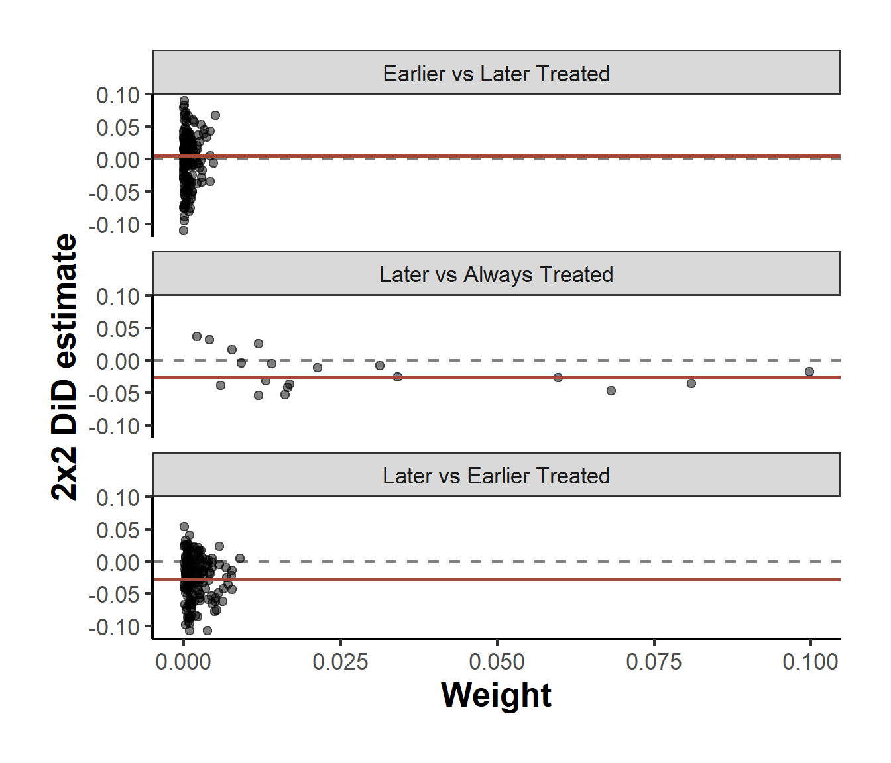
Figure 39.28: Two by two estimates against their decomposition weights, separated by comparison type. Horizontal lines mark the weighted average within each type.
39.15.4.3.2 The Event Study Is Not a Safeguard
A common defence is that the accompanying event study would reveal any such problem. It does not, and the reason is that event studies in staggered designs are usually estimated with a truncated set of relative time indicators. Endpoints are binned, far leads and lags are dropped, and units treated outside the estimation window are silently absorbed into the fixed effects. Each of those conveniences reintroduces the contaminated comparisons.
Four specifications make the point. Panel A is the published event study with binned endpoints and coefficients recentred on the pre-period mean. Panel B removes the recentring. Panel C estimates the full set of relative time indicators without binning. Panel D additionally drops the states that deregulated before the panel begins and the years after every state has deregulated, so that only clean comparisons remain.
library(fastDummies)
library(broom)
es_fit <- function(d, keep) {
dd <- d %>%
dummy_cols(select_columns = "rel_year",
remove_selected_columns = FALSE, ignore_na = TRUE) %>%
mutate(across(starts_with("rel_year_"), ~ replace_na(., 0)))
ind <- paste0("`rel_year_", keep, "`")
feols(
as.formula(paste("log_gini ~", paste(ind, collapse = " + "),
"| wrkyr + statefip")),
data = dd, cluster = ~statefip
)
}
# Panels A and B: published specification with binned endpoints.
bll_binned <- bll %>%
mutate(rel_year = case_when(
rel_year <= -10 ~ -10,
rel_year >= 15 ~ 15,
TRUE ~ rel_year
))
keep_ab <- c(-10:-1, 1:15)
fit_ab <- es_fit(bll_binned, keep_ab)
# Panel C: every relative-year indicator, no binning.
keep_c <- sort(unique(bll$rel_year))
keep_c <- keep_c[keep_c != min(keep_c) & keep_c != 0]
fit_c <- es_fit(bll, keep_c)
# Panel D: clean sample, every relative-year indicator.
bll_clean <- bll %>%
filter(branch_reform >= 1977, wrkyr <= 1998) %>%
mutate(rel_year = if_else(branch_reform == max(branch_reform),
NA_real_, rel_year))
keep_d <- sort(unique(bll_clean$rel_year))
keep_d <- keep_d[keep_d != min(keep_d) & keep_d != 0]
fit_d <- es_fit(bll_clean, keep_d)
tidy_es <- function(fit, keep, label, recentre = FALSE) {
out <- tidy(fit, conf.int = TRUE) %>%
mutate(t = keep) %>%
select(t, estimate, conf.low, conf.high)
if (recentre) {
shift <- mean(out$estimate[out$t < 0])
out <- out %>%
mutate(across(c(estimate, conf.low, conf.high), ~ .x - shift))
}
bind_rows(out, tibble(t = 0, estimate = 0, conf.low = 0, conf.high = 0)) %>%
mutate(panel = label)
}
es_all <- bind_rows(
tidy_es(fit_ab, keep_ab, "(A) Published: binned, recentred", recentre = TRUE),
tidy_es(fit_ab, keep_ab, "(B) Binned, not recentred"),
tidy_es(fit_c, keep_c, "(C) All relative years"),
tidy_es(fit_d, keep_d, "(D) All relative years, clean sample")
) %>%
filter(t >= -10, t <= 15)
ggplot(es_all, aes(x = t, y = estimate)) +
geom_hline(yintercept = 0, linetype = "dashed", colour = "grey50") +
geom_vline(xintercept = -0.5, linetype = "dashed", colour = "grey50") +
geom_errorbar(aes(ymin = conf.low, ymax = conf.high),
width = 0, colour = "grey40") +
geom_line(colour = "#4B5F6C") +
geom_point(shape = 21, fill = "white") +
facet_wrap(~panel, ncol = 2) +
scale_y_continuous(labels = scales::percent_format(accuracy = 1)) +
labs(x = "Years relative to deregulation", y = "Change in log Gini") +
causalverse::ama_theme()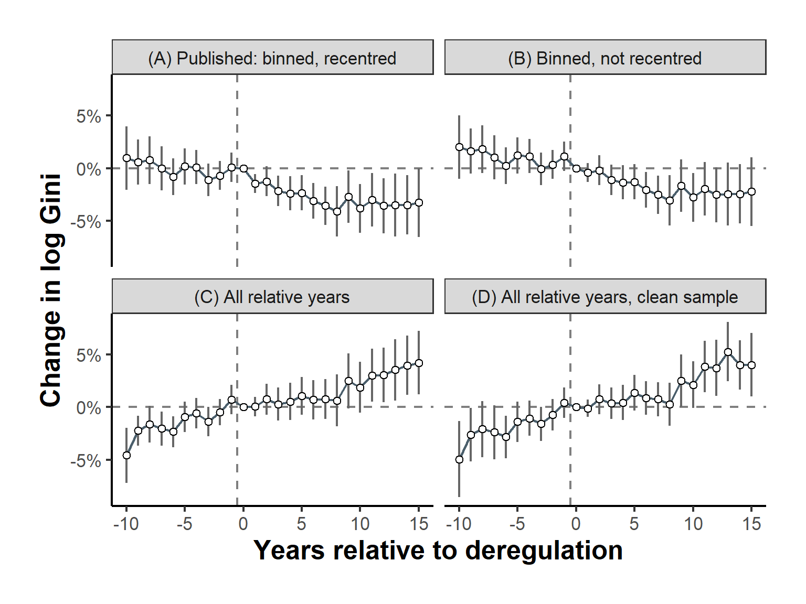
Figure 39.29: Event study estimates of intrastate branching deregulation on log Gini under four increasingly conservative specifications.
Panel A of Figure 39.29 is the picture that appears in the published paper: leads that look flat, followed by a steady decline. Panel B shows that the flatness of the leads is partly an artefact of recentring. Panel C, which simply stops discarding relative time indicators, already reverses the sign of the post-treatment path. Panel D, which removes the always treated states and the fully treated years, shows negative pre-treatment coefficients trending toward zero and post-treatment coefficients at or slightly above zero. The visual diagnostic that was supposed to protect the design was itself a product of the specification choices.
39.15.4.3.3 Re-estimating with Heterogeneity Robust Estimators
The stacked estimator builds one clean sub-experiment per adoption year, pairing each cohort with states that will not deregulate for at least ten more years, and then pools with sub-experiment specific fixed effects.
treat_years <- bll %>%
filter(branch_reform >= 1977, branch_reform < max(branch_reform)) %>%
pull(branch_reform) %>%
unique() %>%
sort()
make_subexp <- function(tyr) {
bll %>%
filter(wrkyr < 1999) %>%
# the focal cohort, plus states still untreated ten years later
filter(branch_reform == tyr | branch_reform > tyr + 10) %>%
filter(between(wrkyr, tyr - 5, tyr + 10)) %>%
mutate(
focal = if_else(branch_reform == tyr, branch_reform, NA_real_),
rel_year = wrkyr - focal,
treat = if_else(is.na(focal) | wrkyr <= tyr, 0, 1),
dt = as.character(tyr)
)
}
stacked_bll <- map_dfr(treat_years, make_subexp) %>%
mutate(cluster = paste0(statefip, "_", dt))
mod_stacked <- feols(log_gini ~ treat | wrkyr^dt + statefip^dt,
cluster = ~cluster, data = stacked_bll)
etable(mod_stacked, headers = "Stacked")
#> mod_stacked
#> Stacked
#> Dependent Var.: log_gini
#>
#> treat 0.0154. (0.0086)
#> Fixed-Effects: ----------------
#> wrkyr-dt Yes
#> statefip-dt Yes
#> _______________ ________________
#> S.E.: Clustered by: cluster
#> Observations 1,219
#> R2 0.78327
#> Within R2 0.01041
#> ---
#> Signif. codes: 0 '***' 0.001 '**' 0.01 '*' 0.05 '.' 0.1 ' ' 1The Callaway and Sant’Anna estimator does the same job through group time average treatment effects, using not yet treated states as the comparison group. The never treated group is too small to serve on its own here, since only one state remains untreated through 1998.
library(did)
set.seed(20210215)
bll_cs <- bll %>% filter(branch_reform >= 1977, wrkyr <= 1998)
cs_bll <- att_gt(
yname = "log_gini",
tname = "wrkyr",
idname = "statefip",
gname = "branch_reform",
data = bll_cs,
control_group = "notyettreated",
est_method = "reg",
bstrap = TRUE,
cband = TRUE,
clustervars = "statefip"
)
cs_simple <- aggte(cs_bll, type = "simple")
cs_dynamic <- aggte(cs_bll, type = "dynamic", min_e = -5, max_e = 10)
summary(cs_simple)
#>
#> Call:
#> aggte(MP = cs_bll, type = "simple")
#>
#> Reference: Callaway, Brantly and Pedro H.C. Sant'Anna. "Difference-in-Differences with Multiple Time Periods." Journal of Econometrics, Vol. 225, No. 2, pp. 200-230, 2021. <https://doi.org/10.1016/j.jeconom.2020.12.001>, <https://arxiv.org/abs/1803.09015>
#>
#>
#> ATT Std. Error [ 95% Conf. Int.]
#> 0.0109 0.0071 -0.0031 0.0249
#>
#>
#> ---
#> Signif. codes: `*' confidence band does not cover 0
#>
#> Control Group: Not Yet Treated, Anticipation Periods: 0
#> Estimation Method: Outcome Regression
tibble(
t = cs_dynamic$egt,
est = cs_dynamic$att.egt,
se = cs_dynamic$se.egt
) %>%
mutate(lower = est - 1.96 * se, upper = est + 1.96 * se) %>%
ggplot(aes(x = t, y = est)) +
geom_hline(yintercept = 0, linetype = "dashed", colour = "grey50") +
geom_vline(xintercept = -0.5, linetype = "dashed", colour = "grey50") +
geom_errorbar(aes(ymin = lower, ymax = upper), width = 0, colour = "grey40") +
geom_line(colour = "#4B5F6C") +
geom_point(shape = 21, fill = "white") +
scale_y_continuous(labels = scales::percent_format(accuracy = 1)) +
labs(x = "Years relative to deregulation", y = "Change in log Gini") +
causalverse::ama_theme()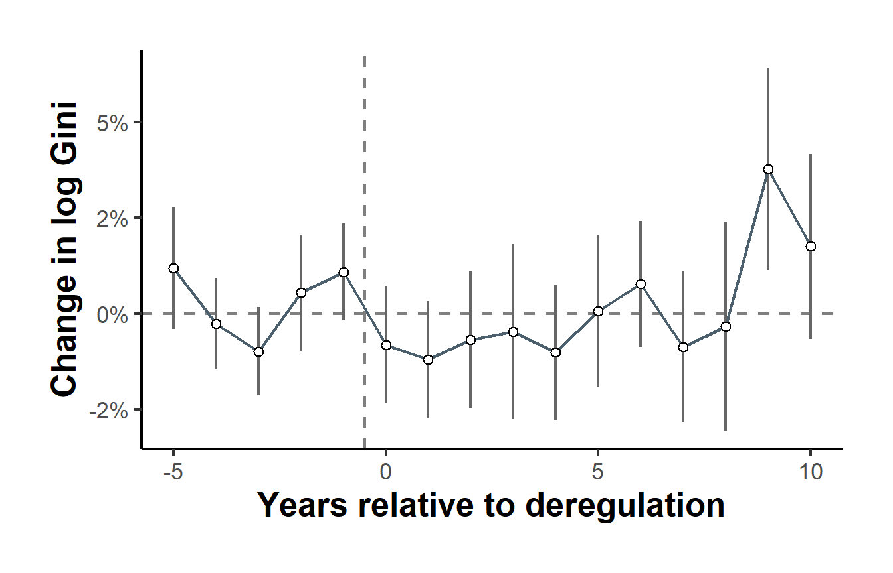
Figure 39.30: Callaway and Sant Anna dynamic effects of branching deregulation on log Gini, using not yet treated states as controls.
Figure 39.30 gives the group-time estimates under that control group. Collecting the estimators in one place makes the comparison direct.
tibble(
Estimator = c(
"TWFE, no controls",
"TWFE, with controls",
"Stacked (clean sub-experiments)",
"Callaway and Sant Anna (not yet treated)"
),
Estimate = c(
coef(mod_nocov)[["treat"]],
coef(mod_cov)[["treat"]],
coef(mod_stacked)[["treat"]],
cs_simple$overall.att
),
`Std. error` = c(
se(mod_nocov)[["treat"]],
se(mod_cov)[["treat"]],
se(mod_stacked)[["treat"]],
cs_simple$overall.se
)
) %>%
mutate(`t stat` = Estimate / `Std. error`) %>%
knitr::kable(
digits = 3,
caption = "The effect of intrastate branching deregulation on log Gini under four estimators."
)| Estimator | Estimate | Std. error | t stat |
|---|---|---|---|
| TWFE, no controls | -0.022 | 0.008 | -2.922 |
| TWFE, with controls | -0.018 | 0.006 | -2.768 |
| Stacked (clean sub-experiments) | 0.015 | 0.009 | 1.793 |
| Callaway and Sant Anna (not yet treated) | 0.011 | 0.007 | 1.526 |
Table 39.24 sets the four estimators side by side, and the published TWFE estimate of roughly minus two percent does not survive. Once the already deregulated states are excluded from the control group, both the stacked and the Callaway and Sant’Anna estimators return a small positive coefficient that is not distinguishable from zero. The Goodman-Bacon decomposition anticipated this exactly: the clean comparisons were always near zero, and the headline result was carried by comparisons whose control units had already been treated.
This is not a claim that bank deregulation had no effect on inequality. It is the narrower and more useful claim that this particular panel, analysed with estimators that avoid forbidden comparisons, does not identify one. Distinguishing those two statements is the whole point of the exercise.
39.15.4.4 A Second Case and the Scope of the Problem
Baker et al. (2022) run the same exercise on Fauver et al. (2017), which uses staggered board reforms across roughly 40 countries and reports that reforms increased firm value. Proprietary data prevent a replication here, but the structure of that design is the worst case identified in the simulation: staggered adoption, effects that plausibly phase in as boards actually change composition, and effects that plausibly differ across countries with different starting governance quality. Under heterogeneity robust estimators the reported effect is substantially attenuated.
The broader audit in Baker et al. (2022) surveys staggered DiD papers published in leading finance and accounting journals and finds that a large share have the design features that generate bias, and that among the subset that can be re-estimated, conclusions frequently change. That is the empirical claim behind the limitations of TWFE discussed earlier, and it is why the diagnostics are worth running as a matter of routine rather than as a robustness appendix.
39.15.4.5 Practical Guidance
The replication suggests a short sequence that costs little and catches most of the damage.
- Plot the adoption timing before estimating anything. Units treated before the panel begins are always treated, they cannot serve as clean controls, and their presence is visible at a glance.
- Run the Goodman-Bacon decomposition on the static specification. If the clean comparisons carry little weight, the TWFE coefficient is mostly telling you about the contaminated ones.
- Do not treat a flat event study as evidence of a valid design. Re-estimate it without binned endpoints and without recentring, and check whether the picture is stable.
- Report at least one heterogeneity robust estimator as a main result rather than a footnote. When the stacked and Callaway and Sant’Anna estimates agree with each other and disagree with TWFE, the disagreement is the finding.
- Where the alternative estimators disagree with the published specification, say what the decomposition implies about which comparisons drove the difference. A sign change with an explanation is far more informative than a sign change alone.
39.15.5 Panel Match DiD Estimator with In-and-Out Treatment Conditions
The Panel Match estimator is the natural choice when treatment is genuinely a switch rather than an absorbing event: countries democratize and then revert, firms adopt and later abandon a marketing channel, regulators turn a policy on and then off. Estimators built for staggered adoption, such as the cohort approach in Section 39.15.2 and the group-time framework in Section 39.15.1, assume treatment is monotone (once on, always on), an assumption that quietly fails in many political-economy and managerial panels. Panel Match relaxes monotonicity, accommodates carryover, and replaces functional-form discipline with explicit matching on treatment history. The cost, as we will see, is statistical efficiency and analyst effort: matched sets shrink quickly as the lag window grows, so every assumption relaxed has to be paid for in variance.
As noted in Imai and Kim (2021), the TWFE regression model is widely used but fundamentally relies on strong modeling assumptions, particularly linearity and additivity. It does not constitute a fully nonparametric estimation method and may yield biased results under model misspecification. Section 39.16 catalogues the failure modes that motivate a design-based alternative.
Researchers often prefer TWFE due to its ability to control for both unit- and time-specific unobserved confounders:
- \(\alpha_i = h(\mathbf{U}_i)\) accounts for unit-level confounders.
- \(\gamma_t = f(\mathbf{V}_t)\) adjusts for time-level confounders.
The functional forms \(h(\cdot)\) and \(f(\cdot)\) are left unspecified, but additivity and separability are assumed. TWFE is based on the model:
\[ Y_{it} = \alpha_i + \gamma_t + \beta X_{it} + \epsilon_{it} \]
for \(i = 1, \dots, N\), and \(t = 1, \dots, T\). However, this formulation requires a linear specification for the treatment effect \(\beta\). Contrary to popular belief, the model does require functional form assumptions for validity (Imai and Kim 2021, 406; 2019).
39.15.5.1 Matching and the Panel Match DiD Estimator
To mitigate model dependence and improve causal inference validity, Imai and Kim (2021) propose a matching-based framework for panel data. This method is implemented via the wfe and PanelMatch R packages and offers design-based identification (Section 35.7.1) under relaxed assumptions. Conceptually, Panel Match takes the logic of cross-sectional matching and lifts it into time, treating each treated unit-period as a small case study with its own bespoke control group.
This setting generalizes staggered adoption, allowing units to transition in and out of treatment. The core idea is to construct matched control groups that share the same treatment history as treated units and then apply a Difference-in-Differences logic. This is better than synthetic controls (e.g., Xu (2017)) because it requires less data to achieve good performance and can adapt to contexts where units switch treatment status multiple times. Compared with the synthetic DiD and matrix completion approaches, Panel Match trades a global low-rank model of the outcome for local matched comparisons, an attractive bargain when the analyst trusts treatment-history matching but is uncomfortable specifying a factor structure.
Key Properties of PM-DiD (Imai, Kim, et al. 2021)
- Designed for multiple treatment switches over time.
- Addresses issues of carryover, reversal, and attenuation bias.
- Allows estimation of short-term and long-term causal effects, accounting for time dynamics.
Key Findings (Imai, Kim, et al. 2021)
Even under favorable conditions for OLS, PM-DiD is more robust to model misspecification and omitted lags.
This robustness comes with a cost: reduced efficiency (larger variance).
Reflects the classic bias-variance tradeoff between flexible and parametric estimators.
Data and Software Requirements
Treatment variable: binary (0 = control, 1 = treated).
Unit and time variables: integer/numeric and ordered.
Input data must be in
data.frameformat.
The method is well suited to long-running political-economy panels in which units repeatedly enter and exit treatment regimes. Scheve and Stasavage (2012)’s study of democratization and its effect on top-income taxation, and Acemoglu et al. (2019)’s panel analysis of democracy and economic growth, are two influential examples of exactly this structure: a binary treatment switching on and off across countries over a long horizon, with a research question that demands a credible counterfactual for each treated country at each treated moment.
In choosing among modern estimators surveyed in Section 39.15, the practical question is rarely “which is correct?” but rather “which assumptions are tolerable in this dataset?” Panel Match dominates the alternatives when several conditions co-occur: the treatment switches on and off, the analyst suspects nonlinear or nonadditive confounding, and the panel is long enough that requiring identical histories over \(L\) lags still leaves a workable matched set. When treatment is monotone and cohorts are well populated, the Callaway and Sant’Anna group-time estimator or Sun and Abraham cohort estimator typically deliver tighter inference. When matching across unit-time pairs is too thin to support a credible matched set, counterfactual estimators such as the matrix completion approach in Section 39.15.7 borrow strength from the full control panel and may be preferable. In short, Panel Match is the right tool for treatment patterns that other estimators were not built to accommodate, but the price is paid in efficiency and in a heavier diagnostic burden.
39.15.5.2 Two-Way Matching Interpretation of TWFE
Before introducing Panel Match’s matched sets, it helps to see exactly what TWFE is already doing under the hood. Reframing TWFE as an implicit matching estimator clarifies both why it works in textbook two-period settings and why it goes off the rails in the staggered, switching designs that motivate Panel Match. The Goodman-Bacon decomposition (Section 39.6.3.1) tells the same story in the language of weighted DiD comparisons.
The least squares estimate of \(\beta\) in the TWFE model can be re-expressed as a matching estimator that compares each treated unit to observations within:
- The same unit (within-unit match),
- The same time period (within-time match),
- Adjusted by a third set of observations in neither group.
This leads to mismatches: treated observations compared to units with the same treatment status, which causes attenuation bias.
The adjustment factor \(K\) corrects for this by weighting matches appropriately. However, even the weighted TWFE estimator contains some mismatches and relies on comparisons across units that differ in key characteristics.
In the simple two-period, two-group DiD setting, the TWFE and DiD estimators coincide. However, in multi-period DiD with treatment reversals, this equivalence breaks down (Imai and Kim 2021).
- The unweighted TWFE is not equivalent to multi-period DiD.
- The multi-period DiD is equivalent to a weighted TWFE, but some weights are negative, which is a problematic feature from a design-based perspective.
This means that justifying TWFE via DiD logic is incorrect unless the linearity assumption is satisfied. The same warning surfaces in the broader literature on negative weighting: see the switching DiD discussion and the reshaped IPW construction below.
39.15.5.3 Estimation Using Panel Match DiD
The estimation procedure can be read as a sequence of four conceptual moves. First, restrict attention to units whose recent past resembles the treated unit, so that any remaining outcome difference cannot plausibly be attributed to an earlier treatment. Second, refine within that history-matched pool using the standard cross-sectional matching toolkit so that observable covariates also balance. Third, run the simplest possible DiD on the resulting pair to read off the post-treatment effect. Fourth, audit the construction by examining whether covariates are in fact balanced after refinement. Each step echoes a familiar move from the matching literature, but the discipline of also matching on treatment history is what carries the design through staggered onset and treatment reversal.
Core Estimation Steps (Imai, Kim, et al. 2021):
- Match treated observations with control observations from the same time period and with identical treatment histories over the past \(L\) periods.
- Use standard matching or weighting methods to refine control sets (e.g., Mahalanobis distance, propensity score).
- Apply a DiD estimator to compute treatment effects at time \(t + F\).
- Evaluate match quality using covariate balance diagnostics (Ho et al. 2007).
Causal Estimand
Let \(F\) be the number of leads (future periods) and \(L\) be the number of lags (past treatment periods). Define the average treatment effect as:
\[ \delta(F, L) = \mathbb{E}\left[Y_{i, t+F}(1) - Y_{i, t+F}(0) \mid \text{treatment history from } t-L \text{ to } t\right] \]
- \(F = 0\): contemporaneous effect (short-run ATT)
- \(F > 0\): future outcomes (long-run ATT)
- \(L\): adjusts for potential carryover effects
The estimator also allows for estimation of the Average Reversal Treatment Effect (ART) when treatment status switches from 1 to 0.
39.15.5.4 Model Assumptions
The assumption ledger looks lighter than TWFE’s, but each item carries a practical cost:
No spillover effects across units (i.e., SUTVA holds). When the units of analysis are countries or large markets, this assumption is rarely innocuous and has to be defended substantively.
Carryover effects allowed up to \(L\) periods. The analyst must specify how long the past of treatment is allowed to matter; this transfers a modeling decision into a window choice.
After \(L\) lags, prior treatments are assumed to have no effect on \(Y_{i,t+F}\). Persistent treatment dynamics that exceed the chosen window are forced to live inside the residual.
The potential outcome at \(t + F\) is independent of treatment assignments beyond \(t - L\). This is the formal restriction that lets the analyst stop at \(L\).
-
The key identifying assumption is a conditional parallel trends assumption. Outcome trends are assumed parallel across treated and matched control units, conditional on:
Past treatment,
Covariate histories,
Lagged outcomes (excluding the most recent).
Unlike standard TWFE, strong ignorability (Section 35.5.2) is not required, and the overlap requirement is satisfied automatically by the matched-set construction whenever a match exists.
The cost of trading parametric structure for matching is straightforward but easily underestimated. Each additional lag in \(L\) multiplies the number of distinct treatment histories that must be matched exactly, so matched sets shrink geometrically with the lag window. In the empirical illustrations below, a four-year history requirement already eliminates a sizeable share of treated observations from the analysis. Carryover and parallel-trends violations beyond the chosen \(L\) are absorbed silently into the estimator. In return, the analyst is freed from the linearity and additivity assumptions that drive TWFE bias under heterogeneous effects.
39.15.5.5 Covariate Balance Assessment
Balance diagnostics earn their keep here in a way they do not in cross-sectional matching, because they are the principal evidence that the conditional parallel-trends assumption is plausible. Where regression-based DiD asks the reader to trust the parametric model, Panel Match exposes the comparison directly. The diagnostics are therefore not a final cosmetic check but a first-class identification argument.
Assessing balance before estimating ATT is critical:
- Compute the mean standardized difference between treated and matched control units.
- Check balance across covariates and lagged outcomes for all \(L\) pretreatment periods.
- Imbalanced covariates may indicate violations of the parallel trends assumption; the same diagnostic logic underpins the placebo tests and the broader robustness checks used in quasi-experimental work.
39.15.5.6 Implementing the Panel Match DiD Estimator
library(PanelMatch)Treatment Variation Plot
Visualizing the variation of treatment across space and time is essential to assess whether the treatment has sufficient heterogeneity to support credible causal identification (Figure 39.31).
DisplayTreatment(
panel.data = PanelData(
panel.data = dem,
unit.id = "wbcode2",
time.id = "year",
treatment = "dem",
outcome = "y"
),
legend.position = "none",
xlab = "year",
ylab = "Country Code"
)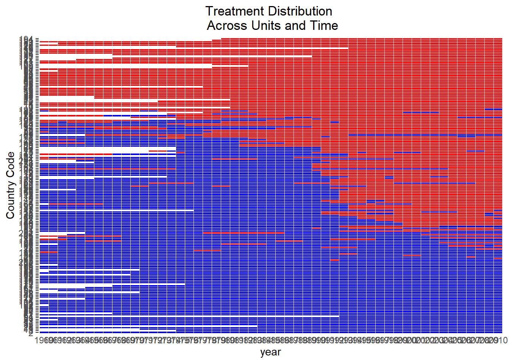
Figure 39.31: Treatment distribution across units and time.
This plot aids in identifying whether the treatment is broadly distributed or concentrated among a few units or time periods.
Insufficient treatment variation may weaken identification or reduce the precision of estimated effects.
39.15.5.6.1 Setting Parameters \(F\) and \(L\)
The two tuning parameters \(F\) and \(L\) encode the substantive question. \(F\) asks how far after treatment the analyst wants to look, which is a question about post-treatment dynamics. \(L\) asks how much of the past should be allowed to differ between treated and control units before the comparison becomes uninterpretable, which is a question about pretreatment confounding. In practice analysts try several pairs and report results under each, the same sensitivity philosophy used elsewhere in the robustness checks literature.
- Select \(F\): the number of leads, or time periods after treatment, for which the effect is measured.
\(F = 0\): contemporaneous (short-term) treatment effect.
\(F > 0\): long-term or cumulative effects.
- Select \(L\): the number of lags (prior treatment periods) used in matching to adjust for carryover effects.
Increasing \(L\) enhances credibility but reduces match quality and sample size.
This selection reflects the bias-variance tradeoff.
39.15.5.6.2 Causal Quantity of Interest
The ATT is defined as:
\[ \delta(F, L) = \mathbb{E} \left[ Y_{i,t+F}(1) - Y_{i,t+F}(0) \mid X_{i,t} = 1, \text{History}_{i,t-L:t-1} \right] \]
This estimator accounts for carryover history (via \(L\)) and post-treatment dynamics (via \(F\)).
It is also robust to treatment reversals (i.e., treatment switching back to control).
A related estimand, the Average Reversal Treatment Effect (ART), measures the causal effect of switching from treatment to control. The ART has no clean analogue in monotone-adoption frameworks, and its availability is one of the practical reasons to choose Panel Match over the cohort and group-time estimators when policy reversals are themselves of interest.
39.15.5.6.3 Choosing \(F\) and \(L\)
Choosing \(F\) and \(L\) is an instance of the bias-variance tradeoff in its most concrete form. A larger \(L\) buys identification by ruling out more confounding from past treatment, at the price of fewer matched controls and so wider standard errors. A larger \(F\) pushes the analysis toward long-run effects, where treatment may be more meaningful but the matched control may itself have switched status by the time the outcome is measured. Sensitivity to both choices should be reported.
-
Large \(L\):
Improves identification of causal effect by accounting for long-term treatment confounding.
Reduces sample size due to stricter matching requirements.
-
Large \(F\):
Enables analysis of delayed effects.
Complicates interpretation if units switch treatment again before \(t + F\).
Researchers should select \(F\) and \(L\) based on substantive context, theoretical considerations, and sensitivity analysis.
39.15.5.6.4 Constructing and Refining Matched Sets
Matched-set construction proceeds in two stages, and the distinction is conceptually important. The first stage does the heavy lifting required by the panel structure: it forces every control to share the treated unit’s recent treatment history, which is what neutralizes carryover bias. The second stage applies the cross-sectional matching toolkit to refine within that pool. If only one of these stages were performed, the estimator would lose either its design-based identification or its efficiency, and Panel Match’s comparative advantage would evaporate.
- Initial Matching
Each treated observation is matched to control units from other units in the same time period.
Matching is based on exact treatment histories from \(t - L\) to \(t - 1\).
Purpose
Controls for carryover effects.
Ensures matched units have similar latent propensities for treatment.
- Refinement Process
Refined matched sets additionally adjust for pre-treatment covariates and lagged outcomes.
-
Matching strategies:
Mahalanobis distance.
Propensity score.
Up to \(J\) best matches per treated unit may be used.
- Weighting
Assigns weights to matched controls to emphasize similarity.
Weighting is often done via inverse propensity scores, or other balance-enhancing metrics.
Can be considered a generalization of traditional matching.
39.15.5.6.5 Difference-in-Differences Estimation
Once matched sets are constructed, the rest of the estimator is the simple two-period DiD applied separately to each treated unit-period and then averaged. The aggregation step echoes the logic of the Callaway and Sant’Anna group-time framework, with the difference that here each “group” is a single matched set rather than a treatment cohort.
The counterfactual for each treated unit is a weighted average of outcomes from its matched control set.
The DiD estimate of ATT is:
\[ \widehat{\delta}_{\text{ATT}} = \frac{1}{|T_1|} \sum_{(i,t) \in T_1} \left[ Y_{i,t+F} - \sum_{j \in \mathcal{C}_{it}} w_{ijt} Y_{j,t+F} \right] \]
where \(T_1\) is the set of treated observations, \(\mathcal{C}_{it}\) is the matched control set, and \(w_{ijt}\) are normalized weights.
Considerations when \(F > 0\):
Matched controls may themselves switch into treatment before \(t + F\).
Some treated units may revert to control.
39.15.5.6.6 Checking Covariate Balance
One of the main advantages of matching-based estimators is the ability to diagnose balance:
- For each covariate and each lag, compute:
\[ \text{Standardized Difference} = \frac{\bar{X}_{\text{treated}} - \bar{X}_{\text{control}}}{\text{SD}_{\text{treated}}} \]
Aggregate these over all treated observations and time periods.
-
Examine balance on:
Time-varying covariates,
Lagged outcomes,
Baseline covariates
Balance checks provide indirect validation of the parallel trends assumption.
39.15.5.6.7 Standard Error Estimation
The standard errors quoted by PanelMatch should be read with care. They quantify sampling uncertainty conditional on the matched design, in the same spirit as conditional variance in a regression model. They do not propagate uncertainty about which controls were chosen, so reported intervals are best treated as a lower bound on true uncertainty when matching pools are thin.
Analogous to the conditional variance seen in regression models.
Standard errors are calculated conditional on the matching weights (Imbens and Rubin 2015).
SE here is a measure of sampling uncertainty given the matched design.
Note: They do not incorporate uncertainty from the matching procedure itself (Ho et al. 2007).
39.15.5.6.8 Matching on Treatment History
The goal is to compare treated units transitioning into treatment to control units with comparable treatment histories.
-
Set
qoi =:"att": Average Treatment on the Treated,"atc": Average Treatment on the Controls,"art": Average Reversal Treatment Effect,"ate": Average Treatment Effect.
library(PanelMatch)
# All examples follow the package's vignette
# Create the matched sets
PM.results.none <-
PanelMatch(
lag = 4,
refinement.method = "none",
panel.data = PanelData(panel.data = dem,
unit.id = "wbcode2",
time.id = "year",
treatment = "dem",
outcome = "y"),
match.missing = TRUE,
size.match = 5,
qoi = "att",
lead = 0:4,
forbid.treatment.reversal = FALSE,
use.diagonal.variance.matrix = TRUE
)
# visualize the treated unit and matched controls
DisplayTreatment(
legend.position = "none",
xlab = "year",
ylab = "Country Code",
panel.data = PanelData(panel.data = dem,
unit.id = "wbcode2",
time.id = "year",
treatment = "dem",
outcome = "y"),
matched.set = PM.results.none$att[1],
# highlight the particular set
show.set.only = TRUE
)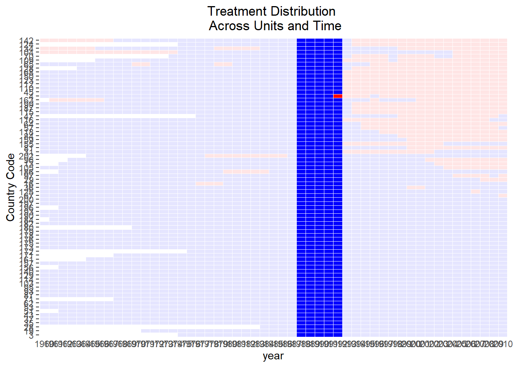
Figure 39.32: Treatment by country and year.
Control units and the treated unit have identical treatment histories over the lag window (1988-1991) (Figure 39.32)
DisplayTreatment(
legend.position = "none",
xlab = "year",
ylab = "Country Code",
panel.data = PanelData(panel.data = dem,
unit.id = "wbcode2",
time.id = "year",
treatment = "dem",
outcome = "y"),
matched.set = PM.results.none$att[2],
# highlight the particular set
show.set.only = TRUE
)![Zoomed-in heatmap of treatment distribution for a small subset of countries across years. Each row corresponds to a country code, and each column represents a year. The plot highlights a narrow band of treatment events in red, indicating the treatment start year, followed by blue for continued treatment, with surrounding periods shown in light gray or pink as untreated. This allows inspection of temporal alignment and treatment patterns across countries with synchronized or clustered interventions.](30.2-did-other_files/figure-html/treatment-distribution-zoomed-1.png)
Figure 39.33: Focused treatment visualization.
This set is more limited than the first one, but we can still see that we have exact past histories (Figure 39.33).
-
Refining Matched Sets
Refinement involves assigning weights to control units.
-
Users must:
Specify a method for calculating unit similarity/distance.
Choose variables for similarity/distance calculations.
-
Select a Refinement Method
Users determine the refinement method via the
refinement.methodargument.-
Options include:
mahalanobisps.matchCBPS.matchps.weightCBPS.weightps.msm.weightCBPS.msm.weightnone
Methods with “match” in the name and Mahalanobis will assign equal weights to similar control units.
“Weighting” methods give higher weights to control units more similar to treated units.
-
Variable Selection
Users need to define which covariates will be used through the
covs.formulaargument, a one-sided formula object.Variables on the right side of the formula are used for calculations.
“Lagged” versions of variables can be included using the format:
I(lag(name.of.var, 0:n)).
-
Understanding
PanelMatchandmatched.setobjectsThe
PanelMatchfunction returns aPanelMatchobject.The most crucial element within the
PanelMatchobject is the matched.set object.Within the
PanelMatchobject, the matched.set object will have names like att, art, or atc.If
qoi = ate, there will be two matched.set objects: att and atc.
-
Matched.set Object Details
matched.set is a named list with added attributes.
-
Attributes include:
Lag
Names of treatment
Unit and time variables
Each list entry represents a matched set of treated and control units.
Naming follows a structure:
[id variable].[time variable].Each list element is a vector of control unit ids that match the treated unit mentioned in the element name.
Since it’s a matching method, weights are only given to the
size.matchmost similar control units based on distance calculations.
# PanelMatch without any refinement
PM.results.none <-
PanelMatch(
lag = 4,
refinement.method = "none",
panel.data = PanelData(panel.data = dem,
unit.id = "wbcode2",
time.id = "year",
treatment = "dem",
outcome = "y"),
match.missing = TRUE,
size.match = 5,
qoi = "att",
lead = 0:4,
forbid.treatment.reversal = FALSE,
use.diagonal.variance.matrix = TRUE
)
# Extract the matched.set object
msets.none <- PM.results.none$att
# PanelMatch with refinement
PM.results.maha <-
PanelMatch(
lag = 4,
refinement.method = "mahalanobis", # use Mahalanobis distance
panel.data = PanelData(panel.data = dem,
unit.id = "wbcode2",
time.id = "year",
treatment = "dem",
outcome = "y"),
match.missing = TRUE,
covs.formula = ~ tradewb,
size.match = 5,
qoi = "att" ,
lead = 0:4,
forbid.treatment.reversal = FALSE,
use.diagonal.variance.matrix = TRUE
)
msets.maha <- PM.results.maha$att
# these 2 should be identical because weights are not shown
msets.none |> head()
#> wbcode2 year matched.set.size
#> 1 4 1992 74
#> 2 4 1997 2
#> 3 6 1973 63
#> 4 6 1983 73
#> 5 7 1991 81
#> ... [1 more matched set(s) not printed]
msets.maha |> head()
#> wbcode2 year matched.set.size
#> 1 4 1992 74
#> 2 4 1997 2
#> 3 6 1973 63
#> 4 6 1983 73
#> 5 7 1991 81
#> ... [1 more matched set(s) not printed]
# summary(msets.none)
# summary(msets.maha)Visualizing Matched Sets with the plot method
Users can visualize the distribution of the matched set sizes (Figure 39.34).
A red line, by default, indicates the count of matched sets where treated units had no matching control units (i.e., empty matched sets).
Plot adjustments can be made using
graphics::plot.
plot(
msets.none,
panel.data = PanelData(
panel.data = dem,
unit.id = "wbcode2",
time.id = "year",
treatment = "dem",
outcome = "y"
)
)![A matrix heatmap displaying the weights assigned to control units used for estimating treatment effects. Each row corresponds to a treated observation, and each column to a donor unit. Color intensity indicates the weight magnitude, ranging from blue for low weight to red for high weight. Most weights are concentrated in blue shades, suggesting relatively low contribution from most control units, with a few sparse red cells representing key contributors. This visualization helps assess the distribution and sparsity of synthetic control weights across units.](30.2-did-other_files/figure-html/weight-distribution-plot-1.png)
Figure 39.34: Weight distribution across donor units used to construct synthetic control matches.
Comparing Methods of Refinement
-
Users are encouraged to:
Use substantive knowledge for experimentation and evaluation.
-
Consider the following when configuring
PanelMatch:The number of matched sets.
The number of controls matched to each treated unit.
Achieving covariate balance.
Note: Large numbers of small matched sets can lead to larger standard errors during the estimation stage.
Covariates that aren’t well balanced can lead to undesirable comparisons between treated and control units.
-
Aspects to consider include:
Refinement method.
Variables for weight calculation.
Size of the lag window.
Procedures for addressing missing data (refer to
match.missingandlistwise.deletearguments).Maximum size of matched sets (for matching methods).
-
Supportive Features:
print,plot, andsummarymethods assist in understanding matched sets and their sizes.-
get_covariate_balancehelps evaluate covariate balance:- Lower values in the covariate balance calculations are preferred.
PM.results.none <-
PanelMatch(
lag = 4,
refinement.method = "none",
panel.data = PanelData(panel.data = dem,
unit.id = "wbcode2",
time.id = "year",
treatment = "dem",
outcome = "y"),
match.missing = TRUE,
size.match = 5,
qoi = "att",
lead = 0:4,
forbid.treatment.reversal = FALSE,
use.diagonal.variance.matrix = TRUE
)
PM.results.maha <-
PanelMatch(
lag = 4,
refinement.method = "mahalanobis",
panel.data = PanelData(panel.data = dem,
unit.id = "wbcode2",
time.id = "year",
treatment = "dem",
outcome = "y"),
match.missing = TRUE,
covs.formula = ~ I(lag(tradewb, 1:4)) + I(lag(y, 1:4)),
size.match = 5,
qoi = "att",
lead = 0:4,
forbid.treatment.reversal = FALSE,
use.diagonal.variance.matrix = TRUE
)
# listwise deletion used for missing data
PM.results.listwise <-
PanelMatch(
lag = 4,
refinement.method = "mahalanobis",
panel.data = PanelData(panel.data = dem,
unit.id = "wbcode2",
time.id = "year",
treatment = "dem",
outcome = "y"),
match.missing = FALSE,
listwise.delete = TRUE,
covs.formula = ~ I(lag(tradewb, 1:4)) + I(lag(y, 1:4)),
size.match = 5,
qoi = "att",
lead = 0:4,
forbid.treatment.reversal = FALSE,
use.diagonal.variance.matrix = TRUE
)
# propensity score based weighting method
PM.results.ps.weight <-
PanelMatch(
lag = 4,
refinement.method = "ps.weight",
panel.data = PanelData(panel.data = dem,
unit.id = "wbcode2",
time.id = "year",
treatment = "dem",
outcome = "y"),
match.missing = FALSE,
listwise.delete = TRUE,
covs.formula = ~ I(lag(tradewb, 1:4)) + I(lag(y, 1:4)),
size.match = 5,
qoi = "att",
lead = 0:4,
forbid.treatment.reversal = FALSE
)
get_covariate_balance(
PM.results.none,
panel.data = PanelData(panel.data = dem,
unit.id = "wbcode2",
time.id = "year",
treatment = "dem",
outcome = "y"),
covariates = c("tradewb", "y")
)
#>
#> ==============================
#> PM.results.none
#> ==============================
#>
#> --- QOI: att ---
#> tradewb y
#> t_4 -0.07245466 0.291871990
#> t_3 -0.20930129 0.208654876
#> t_2 -0.24425207 0.107736647
#> t_1 -0.10806125 -0.004950238
#> t_0 -0.09493854 -0.015198483
# Compare covariate balance to refined sets
# See large improvement in balance
get_covariate_balance(
PM.results.ps.weight,
panel.data = PanelData(panel.data = dem,
unit.id = "wbcode2",
time.id = "year",
treatment = "dem",
outcome = "y"),
covariates = c("tradewb", "y")
)
#>
#> ==============================
#> PM.results.ps.weight
#> ==============================
#>
#> --- QOI: att ---
#> tradewb y
#> t_4 0.014362590 0.04035905
#> t_3 0.005529734 0.04188731
#> t_2 0.009410044 0.04195008
#> t_1 0.027907540 0.03975173
#> t_0 0.040272235 0.04167921PanelEstimate
-
Standard Error Calculation Methods
-
There are different methods available:
Bootstrap (default method with 1000 iterations).
Conditional: Assumes independence across units, but not time.
Unconditional: Doesn’t make assumptions of independence across units or time.
-
For
qoivalues set toatt,art, oratc(Imai, Kim, et al. 2021):- You can use analytical methods for calculating standard errors, which include both “conditional” and “unconditional” methods.
-
PE.results <- PanelEstimate(
sets = PM.results.ps.weight,
panel.data = PanelData(panel.data = dem,
unit.id = "wbcode2",
time.id = "year",
treatment = "dem",
outcome = "y"),
se.method = "bootstrap",
number.iterations = 1000,
confidence.level = .95
)
# point estimates
PE.results[["estimates"]]
#> NULL
# standard errors
PE.results[["standard.error"]]
#> t+0 t+1 t+2 t+3 t+4
#> 0.6328965 1.0569579 1.4449936 1.7977765 2.1905601
# use conditional method
PE.results <- PanelEstimate(
sets = PM.results.ps.weight,
panel.data = PanelData(panel.data = dem,
unit.id = "wbcode2",
time.id = "year",
treatment = "dem",
outcome = "y"),
se.method = "conditional",
confidence.level = .95
)
# point estimates
PE.results[["estimates"]]
#> NULL
# standard errors
PE.results[["standard.error"]]
#> t+0 t+1 t+2 t+3 t+4
#> 0.4844805 0.8170604 1.1171942 1.4116879 1.7172143
summary(PE.results)
#> estimate std.error 2.5% 97.5%
#> t+0 0.2609565 0.4844805 -0.6886078 1.210521
#> t+1 0.9630847 0.8170604 -0.6383243 2.564494
#> t+2 1.2851017 1.1171942 -0.9045586 3.474762
#> t+3 1.7370930 1.4116879 -1.0297644 4.503950
#> t+4 1.4871846 1.7172143 -1.8784937 4.852863Figure 39.35 shows the estimated treatment effects over time.
plot(PE.results)![A line plot showing estimated treatment effects over five time periods after treatment, labeled t+0 through t+4. Each point represents the estimated effect of treatment at a given time, with vertical lines indicating confidence intervals. The effects appear positive and relatively stable over time, with growing uncertainty further from the treatment period. The horizontal dashed line at zero marks the baseline for comparison, emphasizing the statistical range and potential significance of the estimates.](30.2-did-other_files/figure-html/treatment-effects-over-time-1.png)
Figure 39.35: Post-treatment effects over time.
Moderating Variables
# moderating variable
dem$moderator <- 0
dem$moderator <- ifelse(dem$wbcode2 > 100, 1, 2)
PM.results <-
PanelMatch(
lag = 4,
# time.id = "year",
# unit.id = "wbcode2",
# treatment = "dem",
refinement.method = "mahalanobis",
panel.data = PanelData(panel.data = dem,
unit.id = "wbcode2",
time.id = "year",
treatment = "dem",
outcome = "y"),
match.missing = TRUE,
covs.formula = ~ I(lag(tradewb, 1:4)) + I(lag(y, 1:4)),
size.match = 5,
qoi = "att",
# outcome.var = "y",
lead = 0:4,
forbid.treatment.reversal = FALSE,
use.diagonal.variance.matrix = TRUE
)
PE.results <-
PanelEstimate(
sets = PM.results,
panel.data = PanelData(
panel.data = dem,
unit.id = "wbcode2",
time.id = "year",
treatment = "dem",
outcome = "y"
),
moderator = "moderator"
)Figure 39.36 shows the estimated treatment effects over time by a moderating variable.
# Each element in the list corresponds to a level in the moderator
plot(PE.results[[1]])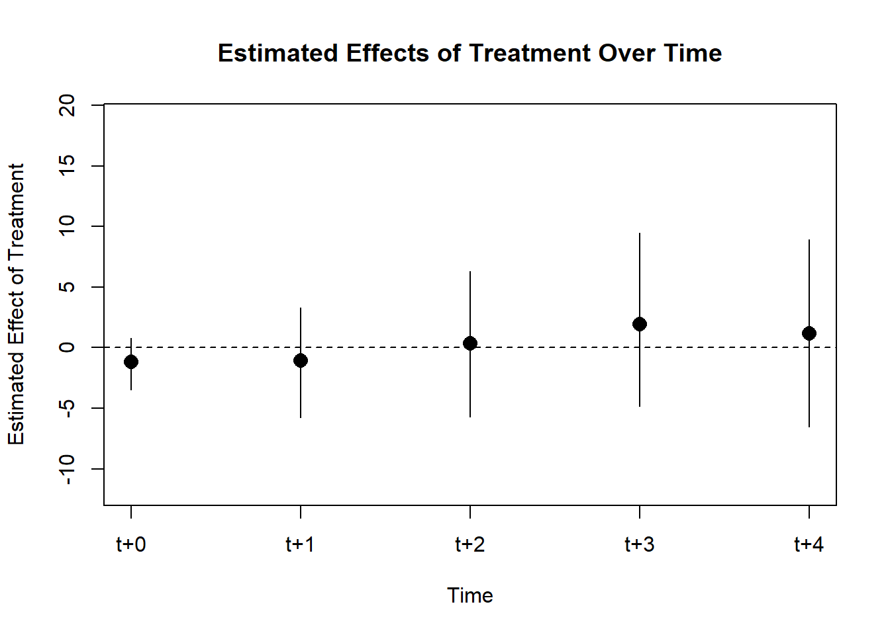
Figure 39.36: Estimated effects of treatment over time.
# plot(PE.results[[2]])In this study, aligned with the research by Acemoglu et al. (2019), two key effects of democracy on economic growth are estimated: the impact of democratization and that of authoritarian reversal. The treatment variable, \(X_{it}\), is defined to be one if country \(i\) is democratic in year \(t\), and zero otherwise.
The Average Treatment Effect for the Treated (ATT) under democratization is formulated as follows:
\[ \begin{aligned} \delta(F, L) &= \mathbb{E} \left\{ Y_{i, t + F} (X_{it} = 1, X_{i, t - 1} = 0, \{X_{i,t-l}\}_{l=2}^L) \right. \\ &\left. - Y_{i, t + F} (X_{it} = 0, X_{i, t - 1} = 0, \{X_{i,t-l}\}_{l=2}^L) | X_{it} = 1, X_{i, t - 1} = 0 \right\} \end{aligned} \]
In this framework, the treated observations are countries that transition from an authoritarian regime \(X_{it-1} = 0\) to a democratic one \(X_{it} = 1\). The variable \(F\) represents the number of leads, denoting the time periods following the treatment, and \(L\) signifies the number of lags, indicating the time periods preceding the treatment.
The ATT under authoritarian reversal is given by:
\[ \begin{aligned} &\mathbb{E} \left[ Y_{i, t + F} (X_{it} = 0, X_{i, t - 1} = 1, \{ X_{i, t - l}\}_{l=2}^L ) \right. \\ &\left. - Y_{i, t + F} (X_{it} = 1, X_{it-1} = 1, \{X_{i, t - l} \}_{l=2}^L ) | X_{it} = 0, X_{i, t - 1} = 1 \right] \end{aligned} \]
The ATT is calculated conditioning on 4 years of lags (\(L = 4\)) and up to 4 years following the policy change \(F = 1, 2, 3, 4\). Matched sets for each treated observation are constructed based on its treatment history, with the number of matched control units generally decreasing when considering a 4-year treatment history as compared to a 1-year history.
To enhance the quality of matched sets, methods such as Mahalanobis distance matching, propensity score matching, and propensity score weighting are utilized. These approaches enable us to evaluate the effectiveness of each refinement method. In the process of matching, we employ both up-to-five and up-to-ten matching to investigate how sensitive our empirical results are to the maximum number of allowed matches. For more information on the refinement process, please see the Web Appendix.
The Mahalanobis distance is expressed through a specific formula. We aim to pair each treated unit with a maximum of \(J\) control units, permitting replacement, denoted as \(| \mathcal{M}_{it} \le J|\). The average Mahalanobis distance between a treated and each control unit over time is computed as:
\[ S_{it} (i') = \frac{1}{L} \sum_{l = 1}^L \sqrt{(\mathbf{V}_{i, t - l} - \mathbf{V}_{i', t -l})^T \boldsymbol{\Sigma}_{i, t - l}^{-1} (\mathbf{V}_{i, t - l} - \mathbf{V}_{i', t -l})} \]
For a matched control unit \(i' \in \mathcal{M}_{it}\), \(\mathbf{V}_{it'}\) represents the time-varying covariates to adjust for, and \(\boldsymbol{\Sigma}_{it'}\) is the sample covariance matrix for \(\mathbf{V}_{it'}\). Essentially, we calculate a standardized distance using time-varying covariates and average this across different time intervals.
In the context of propensity score matching, we employ a logistic regression model with balanced covariates to derive the propensity score. Defined as the conditional likelihood of treatment given pre-treatment covariates (Rosenbaum and Rubin 1983), the propensity score is estimated by first creating a data subset comprised of all treated and their matched control units from the same year. This logistic regression model is then fitted as follows:
\[ \begin{aligned} & e_{it} (\{\mathbf{U}_{i, t - l} \}^L_{l = 1}) \\ &= Pr(X_{it} = 1| \mathbf{U}_{i, t -1}, \ldots, \mathbf{U}_{i, t - L}) \\ &= \frac{1}{1 = \exp(- \sum_{l = 1}^L \beta_l^T \mathbf{U}_{i, t - l})} \end{aligned} \]
where \(\mathbf{U}_{it'} = (X_{it'}, \mathbf{V}_{it'}^T)^T\). Given this model, the estimated propensity score for all treated and matched control units is then computed. This enables the adjustment for lagged covariates via matching on the calculated propensity score, resulting in the following distance measure:
\[ S_{it} (i') = | \text{logit} \{ \hat{e}_{it} (\{ \mathbf{U}_{i, t - l}\}^L_{l = 1})\} - \text{logit} \{ \hat{e}_{i't}( \{ \mathbf{U}_{i', t - l} \}^L_{l = 1})\} | \]
Here, \(\hat{e}_{i't} (\{ \mathbf{U}_{i, t - l}\}^L_{l = 1})\) represents the estimated propensity score for each matched control unit \(i' \in \mathcal{M}_{it}\).
Once the distance measure \(S_{it} (i')\) has been determined for all control units in the original matched set, we fine-tune this set by selecting up to \(J\) closest control units, which meet a researcher-defined caliper constraint \(C\). All other control units receive zero weight. This results in a refined matched set for each treated unit \((i, t)\):
\[ \mathcal{M}_{it}^* = \{i' : i' \in \mathcal{M}_{it}, S_{it} (i') < C, S_{it} \le S_{it}^{(J)}\} \]
\(S_{it}^{(J)}\) is the \(J\)th smallest distance among the control units in the original set \(\mathcal{M}_{it}\).
For further refinement using weighting, a weight is assigned to each control unit \(i'\) in a matched set corresponding to a treated unit \((i, t)\), with greater weight accorded to more similar units. We utilize inverse propensity score weighting, based on the propensity score model mentioned earlier:
\[ w_{it}^{i'} \propto \frac{\hat{e}_{i't} (\{ \mathbf{U}_{i, t-l} \}^L_{l = 1} )}{1 - \hat{e}_{i't} (\{ \mathbf{U}_{i, t-l} \}^L_{l = 1} )} \]
In this model, \(\sum_{i' \in \mathcal{M}_{it}} w_{it}^{i'} = 1\) and \(w_{it}^{i'} = 0\) for \(i' \notin \mathcal{M}_{it}\). The model is fitted to the complete sample of treated and matched control units.
\[\begin{equation} \bar{B}(j, l) = \frac{1}{N_1} \sum_{i=1}^N \sum_{t = L+ 1}^{T-F}D_{it} B_{it}(j,l) \label{eq:aggbalance} \end{equation}\]Checking Covariate Balance A distinct advantage of the proposed methodology over regression methods is the ability it offers researchers to inspect the covariate balance between treated and matched control observations. This facilitates the evaluation of whether treated and matched control observations are comparable regarding observed confounders. To investigate the mean difference of each covariate (e.g., \(V_{it'j}\), representing the \(j\)-th variable in \(\mathbf{V}_{it'}\)) between the treated observation and its matched control observation at each pre-treatment time period (i.e., \(t' < t\)), we further standardize this difference. For any given pretreatment time period, we adjust by the standard deviation of each covariate across all treated observations in the dataset. Thus, the mean difference is quantified in terms of standard deviation units. Formally, for each treated observation \((i,t)\) where \(D_{it} = 1\), we define the covariate balance for variable \(j\) at the pretreatment time period \(t - l\) as: \[\begin{equation} B_{it}(j, l) = \frac{V_{i, t- l,j}- \sum_{i' \in \mathcal{M}_{it}}w_{it}^{i'}V_{i', t-l,j}}{\sqrt{\frac{1}{N_1 - 1} \sum_{i'=1}^N \sum_{t' = L+1}^{T-F}D_{i't'}(V_{i', t'-l, j} - \bar{V}_{t' - l, j})^2}} \label{eq:covbalance} \end{equation}\] where \(N_1 = \sum_{i'= 1}^N \sum_{t' = L+1}^{T-F} D_{i't'}\) denotes the total number of treated observations and \(\bar{V}_{t-l,j} = \sum_{i=1}^N D_{i,t-l,j}/N\). We then aggregate this covariate balance measure across all treated observations for each covariate and pre-treatment time period:
Lastly, we evaluate the balance of lagged outcome variables over several pre-treatment periods and that of time-varying covariates. This examination aids in assessing the validity of the parallel trend assumption integral to the DiD estimator justification.
In the balance scatter figure, we demonstrate the enhancement of covariate balance thanks to the refinement of matched sets. Each scatter plot contrasts the absolute standardized mean difference between before (horizontal axis) and after (vertical axis) this refinement. Points below the 45-degree line indicate an improved standardized mean balance for certain time-varying covariates post-refinement. The majority of variables benefit from this refinement process. Notably, the propensity score weighting (bottom panel) shows the most significant improvement, whereas Mahalanobis matching (top panel) yields a more modest improvement.
library(PanelMatch)
library(causalverse)
runPanelMatch <- function(method, lag, size.match=NULL, qoi="att") {
# Default parameters for PanelMatch
common.args <- list(
lag = lag,
panel.data = PanelData(panel.data = dem,
unit.id = "wbcode2",
time.id = "year",
treatment = "dem",
outcome = "y"),
covs.formula = ~ I(lag(tradewb, 1:4)) + I(lag(y, 1:4)),
qoi = qoi,
lead = 0:4,
forbid.treatment.reversal = FALSE,
size.match = size.match # setting size.match here for all methods
)
if(method == "mahalanobis") {
common.args$refinement.method <- "mahalanobis"
common.args$match.missing <- TRUE
common.args$use.diagonal.variance.matrix <- TRUE
} else if(method == "ps.match") {
common.args$refinement.method <- "ps.match"
common.args$match.missing <- FALSE
common.args$listwise.delete <- TRUE
} else if(method == "ps.weight") {
common.args$refinement.method <- "ps.weight"
common.args$match.missing <- FALSE
common.args$listwise.delete <- TRUE
}
return(do.call(PanelMatch, common.args))
}
methods <- c("mahalanobis", "ps.match", "ps.weight")
lags <- c(1, 4)
sizes <- c(5, 10)You can either do it sequentially
res_pm <- list()
for(method in methods) {
for(lag in lags) {
for(size in sizes) {
name <- paste0(method, ".", lag, "lag.", size, "m")
res_pm[[name]] <- runPanelMatch(method, lag, size)
}
}
}
# Now, you can access res_pm using res_pm[["mahalanobis.1lag.5m"]] etc.
# for treatment reversal
res_pm_rev <- list()
for(method in methods) {
for(lag in lags) {
for(size in sizes) {
name <- paste0(method, ".", lag, "lag.", size, "m")
res_pm_rev[[name]] <- runPanelMatch(method, lag, size, qoi = "art")
}
}
}or in parallel
library(foreach)
library(doParallel)
registerDoParallel(cores = 4)
# Initialize an empty list to store results
res_pm <- list()
# Replace nested for-loops with foreach
results <-
foreach(
method = methods,
.combine = 'c',
.multicombine = TRUE,
.packages = c("PanelMatch", "causalverse")
) %dopar% {
tmp <- list()
for (lag in lags) {
for (size in sizes) {
name <- paste0(method, ".", lag, "lag.", size, "m")
tmp[[name]] <- runPanelMatch(method, lag, size)
}
}
tmp
}
# Collate results
for (name in names(results)) {
res_pm[[name]] <- results[[name]]
}
# Treatment reversal
# Initialize an empty list to store results
res_pm_rev <- list()
# Replace nested for-loops with foreach
results_rev <-
foreach(
method = methods,
.combine = 'c',
.multicombine = TRUE,
.packages = c("PanelMatch", "causalverse")
) %dopar% {
tmp <- list()
for (lag in lags) {
for (size in sizes) {
name <- paste0(method, ".", lag, "lag.", size, "m")
tmp[[name]] <-
runPanelMatch(method, lag, size, qoi = "art")
}
}
tmp
}
# Collate results
for (name in names(results_rev)) {
res_pm_rev[[name]] <- results_rev[[name]]
}
stopImplicitCluster()The export script below assembles the per-method balance scatter plots (Mahalanobis, PS matching, PS weighting at 1- and 4-year lags) into a single PNG that is rendered above.
library(gridExtra)
# Updated plotting function
create_balance_plot <- function(method, lag, sizes, res_pm, dem) {
matched_set_lists <- lapply(sizes, function(size) {
res_pm[[paste0(method, ".", lag, "lag.", size, "m")]]$att
})
return(
balance_scatter_custom(
matched_set_list = matched_set_lists,
legend.title = "Possible Matches",
set.names = as.character(sizes),
legend.position = c(0.2, 0.8),
# for compiled plot, you don't need x,y, or main labs
x.axis.label = "",
y.axis.label = "",
main = "",
data = dem,
dot.size = 5,
# show.legend = F,
them_use = causalverse::ama_theme(base_size = 32),
covariates = c("y", "tradewb")
)
)
}
plots <- list()
for (method in methods) {
for (lag in lags) {
plots[[paste0(method, ".", lag, "lag")]] <-
create_balance_plot(method, lag, sizes, res_pm, dem)
}
}
# # Arranging plots in a 3x2 grid
# grid.arrange(plots[["mahalanobis.1lag"]],
# plots[["mahalanobis.4lag"]],
# plots[["ps.match.1lag"]],
# plots[["ps.match.4lag"]],
# plots[["ps.weight.1lag"]],
# plots[["ps.weight.4lag"]],
# ncol=2, nrow=3)
# Standardized Mean Difference of Covariates
library(gridExtra)
library(grid)
# Create column and row labels using textGrob
col_labels <- c("1-year Lag", "4-year Lag")
row_labels <- c("Maha Matching", "PS Matching", "PS Weigthing")
major.axes.fontsize = 40
minor.axes.fontsize = 30
png(
file.path(getwd(), "images", "did_balance_scatter.png"),
width = 1200,
height = 1000
)
# Create a list-of-lists, where each inner list represents a row
grid_list <- list(
list(
nullGrob(),
textGrob(col_labels[1], gp = gpar(fontsize = minor.axes.fontsize)),
textGrob(col_labels[2], gp = gpar(fontsize = minor.axes.fontsize))
),
list(textGrob(
row_labels[1],
gp = gpar(fontsize = minor.axes.fontsize),
rot = 90
), plots[["mahalanobis.1lag"]], plots[["mahalanobis.4lag"]]),
list(textGrob(
row_labels[2],
gp = gpar(fontsize = minor.axes.fontsize),
rot = 90
), plots[["ps.match.1lag"]], plots[["ps.match.4lag"]]),
list(textGrob(
row_labels[3],
gp = gpar(fontsize = minor.axes.fontsize),
rot = 90
), plots[["ps.weight.1lag"]], plots[["ps.weight.4lag"]])
)
# "Flatten" the list-of-lists into a single list of grobs
grobs <- do.call(c, grid_list)
grid.arrange(
grobs = grobs,
ncol = 3,
nrow = 4,
widths = c(0.15, 0.42, 0.42),
heights = c(0.15, 0.28, 0.28, 0.28)
)
grid.text(
"Before Refinement",
x = 0.5,
y = 0.03,
gp = gpar(fontsize = major.axes.fontsize)
)
grid.text(
"After Refinement",
x = 0.03,
y = 0.5,
rot = 90,
gp = gpar(fontsize = major.axes.fontsize)
)
dev.off()Figure 39.37 compares covariate balance across refinement methods and lag lengths.
knitr::include_graphics(file.path(getwd(), "images", "did_balance_scatter.png"))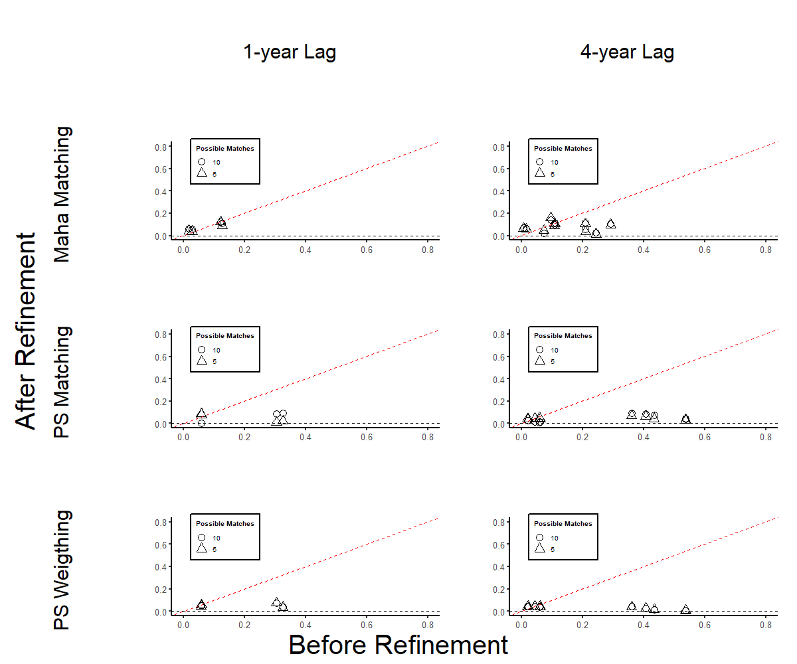
Figure 39.37: Variable balance after matched-set refinement.
Note: Scatter plots display the standardized mean difference of each covariate \(j\) and lag year \(l\) before (x-axis) and after (y-axis) matched set refinement. Each plot includes varying numbers of possible matches for each matching method. Rows represent different matching/weighting methods, while columns indicate adjustments for various lag lengths. Figure 39.38 below repeats the exercise for the pre-treatment period under a richer set of refinement configurations.
# Step 1: Define configurations
configurations <- list(
list(refinement.method = "none", qoi = "att"),
list(refinement.method = "none", qoi = "art"),
list(refinement.method = "mahalanobis", qoi = "att"),
list(refinement.method = "mahalanobis", qoi = "art"),
list(refinement.method = "ps.match", qoi = "att"),
list(refinement.method = "ps.match", qoi = "art"),
list(refinement.method = "ps.weight", qoi = "att"),
list(refinement.method = "ps.weight", qoi = "art")
)
# Step 2: Use lapply or loop to generate results
results <- lapply(configurations, function(config) {
PanelMatch(
lag = 4,
panel.data = PanelData(panel.data = dem,
unit.id = "wbcode2",
time.id = "year",
treatment = "dem",
outcome = "y"),
match.missing = FALSE,
listwise.delete = TRUE,
size.match = 5,
lead = 0:4,
forbid.treatment.reversal = FALSE,
refinement.method = config$refinement.method,
covs.formula = ~ I(lag(tradewb, 1:4)) + I(lag(y, 1:4)),
qoi = config$qoi
)
})
# Step 3: Get covariate balance and plot
plots <- mapply(function(result, config) {
df <- get_covariate_balance(
if (config$qoi == "att")
result$att
else
result$art,
panel.data = PanelData(panel.data = dem,
unit.id = "wbcode2",
time.id = "year",
treatment = "dem",
outcome = "y"),
covariates = c("tradewb", "y"),
plot = F
)
causalverse::plot_covariate_balance_pretrend(df, main = "", show_legend = F)
}, results, configurations, SIMPLIFY = FALSE)
# Set names for plots
names(plots) <- sapply(configurations, function(config) {
paste(config$qoi, config$refinement.method, sep = ".")
})The script below assembles the per-method, per-estimand pre-treatment balance plots into a single composite PNG used by the rendered figure above.
library(gridExtra)
library(grid)
# Column and row labels
col_labels <-
c("None",
"Mahalanobis",
"Propensity Score Matching",
"Propensity Score Weighting")
row_labels <- c("ATT", "ART")
# Specify your desired fontsize for labels
minor.axes.fontsize <- 16
major.axes.fontsize <- 20
png(file.path(getwd(), "images", "p_covariate_balance.png"), width=1200, height=1000)
# Create a list-of-lists, where each inner list represents a row
grid_list <- list(
list(
nullGrob(),
textGrob(col_labels[1], gp = gpar(fontsize = minor.axes.fontsize)),
textGrob(col_labels[2], gp = gpar(fontsize = minor.axes.fontsize)),
textGrob(col_labels[3], gp = gpar(fontsize = minor.axes.fontsize)),
textGrob(col_labels[4], gp = gpar(fontsize = minor.axes.fontsize))
),
list(
textGrob(
row_labels[1],
gp = gpar(fontsize = minor.axes.fontsize),
rot = 90
),
plots$att.none,
plots$att.mahalanobis,
plots$att.ps.match,
plots$att.ps.weight
),
list(
textGrob(
row_labels[2],
gp = gpar(fontsize = minor.axes.fontsize),
rot = 90
),
plots$art.none,
plots$art.mahalanobis,
plots$art.ps.match,
plots$art.ps.weight
)
)
# "Flatten" the list-of-lists into a single list of grobs
grobs <- do.call(c, grid_list)
# Arrange your plots with text labels
grid.arrange(
grobs = grobs,
ncol = 5,
nrow = 3,
widths = c(0.1, 0.225, 0.225, 0.225, 0.225),
heights = c(0.1, 0.45, 0.45)
)
# Add main x and y axis titles
grid.text(
"Refinement Methods",
x = 0.5,
y = 0.01,
gp = gpar(fontsize = major.axes.fontsize)
)
grid.text(
"Quantities of Interest",
x = 0.02,
y = 0.5,
rot = 90,
gp = gpar(fontsize = major.axes.fontsize)
)
dev.off()
knitr::include_graphics(file.path(getwd(), "images", "p_covariate_balance.png"))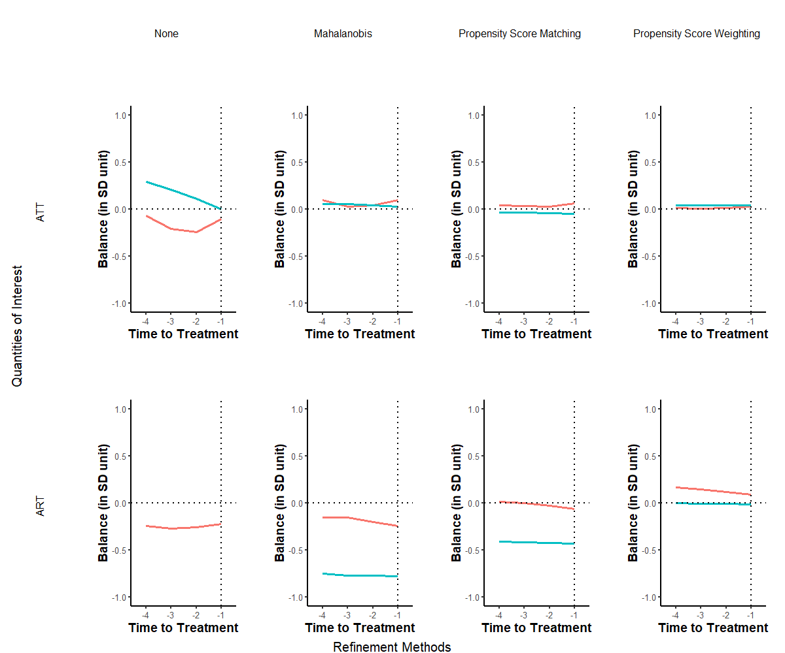
Figure 39.38: Covariate balance over time by refinement method and estimand.
Note: Each graph displays the standardized mean difference plotted on the vertical axis across a pre-treatment duration of four years represented on the horizontal axis. The leftmost column illustrates the balance prior to refinement, while the subsequent three columns depict the covariate balance post the application of distinct refinement techniques. Each individual line signifies the balance of a specific variable during the pre-treatment phase. The red line is tradewb and blue line is the lagged outcome variable.
In Figure 39.38, we observe a marked improvement in covariate balance due to the implemented matching procedures during the pre-treatment period. Our analysis prioritizes methods that adjust for time-varying covariates over a span of four years preceding the treatment initiation. The two rows delineate the standardized mean balance for both treatment modalities, with individual lines representing the balance for each covariate.
Across all scenarios, the refinement attributed to matched sets significantly enhances balance. Notably, using propensity score weighting considerably mitigates imbalances in confounders. While some degree of imbalance remains evident in the Mahalanobis distance and propensity score matching techniques, the standardized mean difference for the lagged outcome remains stable throughout the pre-treatment phase. This consistency lends credence to the validity of the proposed DiD estimator.
Estimation Results
We now detail the estimated ATTs derived from the matching techniques. Figure below offers visual representations of the impacts of treatment initiation (upper panel) and treatment reversal (lower panel) on the outcome variable for a duration of 5 years post-transition, specifically, (\(F = 0, 1, …, 4\)). Across the five methods (columns), it becomes evident that the point estimates of effects associated with treatment initiation consistently approximate zero over the 5-year window. In contrast, the estimated outcomes of treatment reversal are notably negative and maintain statistical significance through all refinement techniques during the initial year of transition and the 1 to 4 years that follow, provided treatment reversal is permissible. These effects are notably pronounced, pointing to an estimated reduction of roughly X% in the outcome variable.
Collectively, these findings indicate that the transition into the treated state from its absence doesn’t invariably lead to a heightened outcome. Instead, the transition from the treated state back to its absence exerts a considerable negative effect on the outcome variable in both the short and intermediate terms. Hence, the positive effect of the treatment (if we were to use traditional DiD) is actually driven by the negative effect of treatment reversal.
# sequential
# Step 1: Apply PanelEstimate function
# Initialize an empty list to store results
res_est <- vector("list", length(res_pm))
# Iterate over each element in res_pm
for (i in 1:length(res_pm)) {
res_est[[i]] <- PanelEstimate(
res_pm[[i]],
data = dem,
se.method = "bootstrap",
number.iterations = 1000,
confidence.level = .95
)
# Transfer the name of the current element to the res_est list
names(res_est)[i] <- names(res_pm)[i]
}
# Step 2: Apply plot_PanelEstimate function
# Initialize an empty list to store plot results
res_est_plot <- vector("list", length(res_est))
# Iterate over each element in res_est
for (i in 1:length(res_est)) {
res_est_plot[[i]] <-
plot_PanelEstimate(res_est[[i]],
main = "",
theme_use = causalverse::ama_theme(base_size = 14))
# Transfer the name of the current element to the res_est_plot list
names(res_est_plot)[i] <- names(res_est)[i]
}
# check results
# res_est_plot$mahalanobis.1lag.5m
# Step 1: Apply PanelEstimate function for res_pm_rev
# Initialize an empty list to store results
res_est_rev <- vector("list", length(res_pm_rev))
# Iterate over each element in res_pm_rev
for (i in 1:length(res_pm_rev)) {
res_est_rev[[i]] <- PanelEstimate(
res_pm_rev[[i]],
data = dem,
se.method = "bootstrap",
number.iterations = 1000,
confidence.level = .95
)
# Transfer the name of the current element to the res_est_rev list
names(res_est_rev)[i] <- names(res_pm_rev)[i]
}
# Step 2: Apply plot_PanelEstimate function for res_est_rev
# Initialize an empty list to store plot results
res_est_plot_rev <- vector("list", length(res_est_rev))
# Iterate over each element in res_est_rev
for (i in 1:length(res_est_rev)) {
res_est_plot_rev[[i]] <-
plot_PanelEstimate(res_est_rev[[i]],
main = "",
theme_use = causalverse::ama_theme(base_size = 14))
# Transfer the name of the current element to the res_est_plot_rev list
names(res_est_plot_rev)[i] <- names(res_est_rev)[i]
}
# parallel
library(doParallel)
library(foreach)
# Detect the number of cores to use for parallel processing
num_cores <- 4
# Register the parallel backend
cl <- makeCluster(num_cores)
registerDoParallel(cl)
# Step 1: Apply PanelEstimate function in parallel
res_est <-
foreach(i = 1:length(res_pm), .packages = "PanelMatch") %dopar% {
PanelEstimate(
res_pm[[i]],
data = dem,
se.method = "bootstrap",
number.iterations = 1000,
confidence.level = .95
)
}
# Transfer names from res_pm to res_est
names(res_est) <- names(res_pm)
# Step 2: Apply plot_PanelEstimate function in parallel
res_est_plot <-
foreach(
i = 1:length(res_est),
.packages = c("PanelMatch", "causalverse", "ggplot2")
) %dopar% {
plot_PanelEstimate(res_est[[i]],
main = "",
theme_use = causalverse::ama_theme(base_size = 10))
}
# Transfer names from res_est to res_est_plot
names(res_est_plot) <- names(res_est)
# Step 1: Apply PanelEstimate function for res_pm_rev in parallel
res_est_rev <-
foreach(i = 1:length(res_pm_rev), .packages = "PanelMatch") %dopar% {
PanelEstimate(
res_pm_rev[[i]],
data = dem,
se.method = "bootstrap",
number.iterations = 1000,
confidence.level = .95
)
}
# Transfer names from res_pm_rev to res_est_rev
names(res_est_rev) <- names(res_pm_rev)
# Step 2: Apply plot_PanelEstimate function for res_est_rev in parallel
res_est_plot_rev <-
foreach(
i = 1:length(res_est_rev),
.packages = c("PanelMatch", "causalverse", "ggplot2")
) %dopar% {
plot_PanelEstimate(res_est_rev[[i]],
main = "",
theme_use = causalverse::ama_theme(base_size = 10))
}
# Transfer names from res_est_rev to res_est_plot_rev
names(res_est_plot_rev) <- names(res_est_rev)
# Stop the cluster
stopCluster(cl)The export script below assembles the ATT and ART event-study estimates from PanelMatch under five refinement-by-match-size combinations into a composite PNG.
library(gridExtra)
library(grid)
# Column and row labels
col_labels <- c("Mahalanobis 5m",
"Mahalanobis 10m",
"PS Matching 5m",
"PS Matching 10m",
"PS Weighting 5m")
row_labels <- c("ATT", "ART")
# Specify your desired fontsize for labels
minor.axes.fontsize <- 16
major.axes.fontsize <- 20
png(file.path(getwd(), "images", "p_did_est_in_n_out.png"), width=1200, height=1000)
# Create a list-of-lists, where each inner list represents a row
grid_list <- list(
list(
nullGrob(),
textGrob(col_labels[1], gp = gpar(fontsize = minor.axes.fontsize)),
textGrob(col_labels[2], gp = gpar(fontsize = minor.axes.fontsize)),
textGrob(col_labels[3], gp = gpar(fontsize = minor.axes.fontsize)),
textGrob(col_labels[4], gp = gpar(fontsize = minor.axes.fontsize)),
textGrob(col_labels[5], gp = gpar(fontsize = minor.axes.fontsize))
),
list(
textGrob(row_labels[1], gp = gpar(fontsize = minor.axes.fontsize), rot = 90),
res_est_plot$mahalanobis.1lag.5m,
res_est_plot$mahalanobis.1lag.10m,
res_est_plot$ps.match.1lag.5m,
res_est_plot$ps.match.1lag.10m,
res_est_plot$ps.weight.1lag.5m
),
list(
textGrob(row_labels[2], gp = gpar(fontsize = minor.axes.fontsize), rot = 90),
res_est_plot_rev$mahalanobis.1lag.5m,
res_est_plot_rev$mahalanobis.1lag.10m,
res_est_plot_rev$ps.match.1lag.5m,
res_est_plot_rev$ps.match.1lag.10m,
res_est_plot_rev$ps.weight.1lag.5m
)
)
# "Flatten" the list-of-lists into a single list of grobs
grobs <- do.call(c, grid_list)
# Arrange your plots with text labels
grid.arrange(
grobs = grobs,
ncol = 6,
nrow = 3,
widths = c(0.1, 0.18, 0.18, 0.18, 0.18, 0.18),
heights = c(0.1, 0.45, 0.45)
)
# Add main x and y axis titles
grid.text(
"Methods",
x = 0.5,
y = 0.02,
gp = gpar(fontsize = major.axes.fontsize)
)
grid.text(
"",
x = 0.02,
y = 0.5,
rot = 90,
gp = gpar(fontsize = major.axes.fontsize)
)
dev.off()39.15.6 Counterfactual Estimators
Where Panel Match (Section 39.15.5) attacks model dependence by replacing the regression with local matched comparisons, counterfactual estimators take the opposite philosophical route: they keep an explicit outcome model but fit it only on control observations, then use it to impute the missing treated counterfactual. The two strategies are complements rather than substitutes. Counterfactual estimators dominate when the analyst is willing to model \(Y(0)\) but unwilling to extrapolate from treated units; Panel Match dominates when even the \(Y(0)\) model feels suspect and exact treatment-history matches are available.
Counterfactual (or imputation) estimators treat the treated outcome as missing and impute it using information from the control units (Liu et al. 2024). Formally, let
\[Y_{it}(1) \text{ and } Y_{it}(0)\]
denote the potential outcomes for unit \(i\) at time \(t\) with and without treatment. For treated units we only observe \(Y_{it}(1)\), so the goal is to impute the unobserved \(Y_{it}(0)\) (i.e., the counterfactual).
Why use counterfactual estimators?
Avoid negative weights: unlike some TWFE specifications that generate undesirable extrapolation weights, imputation uses only control data when building the prediction model and (typically) applies equal weights in post-treatment periods.
Model flexibility: analysts may combine rich time-series structure, non-linear regressions, or machine-learning learners while relaxing the strict exogeneity assumption that plagues TWFE.
Transparent diagnostics: pre-treatment prediction error (e.g. \(\text{RMSE}_{\text{pre}}\)) offers a concrete check of model fit, something ordinary DiD lacks.
The main families of counterfactual estimators are summarised in Table 39.25.
| Method | Core idea | Typical assumptions | R implementation |
|---|---|---|---|
| Fixed-effects counterfactual estimator (FEct) | Predict \(Y_{it}(0)\) with two-way additive FEs; compare each treated \(\hat{Y}_{it}(0)\) with \(Y_{it}(1)\) | Linearity; unit and time additive unobservables; no time-varying confounders |
fect::fect() or gsynth::gsynth(type = "fe")
|
|
Interactive Fixed Effects counterfactual estimator (IFEct) Xu (2017) |
Augment FEct with low-rank latent factors: \(Y_{it}(0)=\alpha_i+\gamma_t+\lambda_i^\top f_t+\varepsilon_{it}\) | Low-rank factor structure; factors capture all time-varying confounders |
gsynth (default), fixest::feols() with sunab()
|
| Matrix Completion (MC) | Solve a soft-impute nuclear-norm regularization \[\min_{\widehat Y(0)} \|M\odot(Y-\widehat Y(0))\|_F^2 + \lambda\|\widehat Y(0)\|_*\] | Same as IFE but allows dense weak factors; tuning via cross-validation |
softImpute, synthdid::mc(), gsynth(type = "mc")
|
| Synthetic Control (SC) | Choose non-negative weights that make the weighted control path mimic a treated path pre-treatment | No interference; convex hull captures counterfactual; no return to pre-treat status |
Synth, synthdid, tidysynth, augsynth
|
- Fixed-Effects Counterfactual Estimator (FEct)
DiD is a special case where each treated observation is compared to the average control outcome. This estimator assumes additive functional form of unobservables based on unit and time FEs. FEct predicts
\[ \widehat{Y}_{it}(0) = \hat{\alpha}_i + \hat{\gamma}_t \]
using only control units when fitting \((\hat{\alpha}_i,\hat{\gamma}_t)\). The ATT is then
\[ \widehat{\tau}_{FEct} = \frac{1}{| \mathcal{T} |}\sum_{(i,t)\in\mathcal T} \{Y_{it}(1)-\widehat{Y}_{it}(0)\}, \]
where \(\mathcal T\) indexes treated unit–time pairs. FEct fixes the improper weighting of TWFE by comparing within each matched pair (where each pair is the treated observation and its predicted counterfactual that is the weighted sum of all untreated observations).
- Interactive Fixed Effects (IFEct)
IFEct generalizes FEct by introducing \(R\) latent factors:
\[ Y_{it}(0) = \alpha_i + \gamma_t + \sum_{r=1}^R \lambda_{ir} f_{tr} + \varepsilon_{it}, \]
estimated via iterative principal components Xu (2017). When we suspect unobserved time-varying confounder, FEct fails. Instead, IFEct uses the factor-augmented models to relax the strict exogeneity assumption where the effects of unobservables can be decomposed to unit FE + time FE + unit x time FE.
Setting \(R=0\) recovers FEct. Generalized Synthetic Control (GSC) (Xu 2017) is an IFEct implementation with ridge penalization when \(R>0\) (This estimator assumes treatments don’t revert).
This is a generalization of factor-augmented models. Rather than fixing \(R\), MC solves a convex optimization where the nuclear-norm penalty \(|\widehat Y(0)|_*\) shrinks all singular values. Different from IFEct which uses hard impute, MC uses soft impute to regularize the singular values when decomposing the residual matrix.
IFEct can outperform MC when the latent factors (of unobservables) are indeed low-rank/sparse and strong; MC prevails when unobservables are dense and weak.
SC is best viewed as a case-study tool (single or few treated units, single treatment onset) unlike FEct/IFEct/MC which handle staggered or many-treated designs naturally.
Take-away: Start with FEct; inspect fit. If time-varying bias remains, graduate to IFEct or MC. Reserve SC for small-\(N\) case studies with clean interventions.
Identifying Assumptions:
- Function Form: Additive separability of observables, unobservables, and idiosyncratic error term.
- Hence, these models are scale dependent (Athey and Imbens 2006) (e.g., log-transform outcome can invalidate this assumption).
- Strict Exogeneity: Conditional on observables and unobservables, potential outcomes are independent of treatment assignment (i.e., baseline quasi-randomization)
- In DiD, where unobservables = unit + time FEs, this assumption is the parallel trends assumption
- Low-dimensional Decomposition (Feasibility Assumption): Unobservable effects can be decomposed in low-dimension.
- For the case that \(U_{it} = f_t \times \lambda_i\) where \(f_t\) = common time trend (time FE), and \(\lambda_i\) = unit heterogeneity (unit FE). If \(U_{it} = f_t \times \lambda_i\) , DiD can satisfy this assumption. But this assumption is weaker than that of DID, and allows us to control for unobservables based on data.
Estimation Procedure:
- Using all control observations, estimate the functions of both observable and unobservable variables (relying on Assumptions 1 and 3).
- Predict the counterfactual outcomes for each treated unit using the obtained functions.
- Calculate the difference in treatment effect for each treated individual.
- By averaging over all treated individuals, you can obtain the Average Treatment Effect on the Treated (ATT).
Notes:
- Use jackknife when number of treated units is small (Liu et al. 2024, 166).
39.15.6.0.1 Imputation Method
Liu et al. (2024) can also account for treatment reversals and heterogeneous treatment effects.
Other imputation estimators include
The code below fits the FECT model and reports pre-treatment F-test diagnostics for the democracy-and-trade panel under a two-way fixed-effects specification.
library(fect)
PanelMatch::dem
model.fect <-
fect(
Y = "y",
D = "dem",
X = "tradewb",
data = na.omit(PanelMatch::dem),
method = "fe",
index = c("wbcode2", "year"),
se = TRUE,
parallel = TRUE,
seed = 1,
# twfe
force = "two-way"
)
print(model.fect$est.avg)
plot(model.fect)
plot(model.fect, stats = "F.p")F-test \(H_0\): residual averages in the pre-treatment periods = 0
The code below produces FECT exit-event diagnostics showing treatment-reversal effects and the corresponding F-test p-values across event time.
plot(model.fect, stats = "F.p", type = 'exit')39.15.6.0.2 Placebo Test
By selecting a part of the data and excluding observations within a specified range to improve the model fitting, we then evaluate whether the estimated Average Treatment Effect (ATT) within this range significantly differs from zero. This approach helps us analyze the periods before treatment.
If this test fails, either the functional form or strict exogeneity assumption is problematic. The code below runs a FECT placebo test that masks pre-treatment periods minus two through zero and reports the p-value of the masked-period average effect against the null of zero.
39.15.6.0.3 (No) Carryover Effects Test
The placebo test can be adapted to assess carryover effects by masking several post-treatment periods instead of pre-treatment ones. If no carryover effects are present, the average prediction error should approximate zero. For the carryover test, set carryoverTest = TRUE. Specify a post-treatment period range in carryover.period to exclude observations for model fitting, then evaluate if the estimated ATT significantly deviates from zero.
Even if we have carryover effects, in most cases of the staggered adoption setting, researchers are interested in the cumulative effects, or aggregated treatment effects, so it’s okay. The code below runs the FECT carryover test that masks the first three post-treatment periods and reports whether the masked-period average prediction error differs significantly from zero.
out.fect.c <-
fect(
Y = "y",
D = "dem",
X = "tradewb",
data = na.omit(PanelMatch::dem),
method = "fe",
index = c("wbcode2", "year"),
se = TRUE,
carryoverTest = TRUE,
# how many periods of carryover
carryover.period = c(1, 3)
)
plot(out.fect.c, stats = "carryover.p")We have evidence of carryover effects.
39.15.7 Matrix Completion Estimator
Matrix completion methods have become increasingly influential in causal inference for panel data, particularly when estimating average treatment effects in business settings such as marketing experiments, customer behavior modeling, and pricing interventions. These settings often feature staggered adoption of treatments across units and time, leading to structured missing data. Athey et al. (2021) develop a matrix completion framework that subsumes methods based on unconfoundedness and synthetic controls, by leveraging the low-rank structure of potential outcomes matrices.
An important empirical context is consumer choice data in marketing, where missing outcomes can arise due to intermittent treatment, e.g., promotional campaigns delivered at varying times across different stores or consumer segments. One illustrative application is provided by Bronnenberg et al. (2020), who investigates consumer response to targeted marketing campaigns using panel data that naturally contains missing counterfactual outcomes for treated units.
Two key literatures have historically addressed the problem of imputing missing potential outcomes:
-
Unconfoundedness Framework (Imbens and Rubin 2015):
- Assumes selection on observables.
- Imputes missing control outcomes by matching or regression using untreated units with similar characteristics or histories.
- Assumes time patterns are stable across units.
-
Synthetic Control (Abadie et al. 2010):
- Constructs counterfactual outcomes as weighted averages of control units.
- Assumes unit patterns are stable over time.
- Particularly suited for single treated unit settings.
These methods can be unified under the matrix completion framework, which interprets the panel of outcomes as a low-rank matrix plus noise, allowing for flexible imputation without strong parametric assumptions.
Contributions of Athey et al. (2021)
- Accommodates structured missingness, including staggered adoption.
- Adjusts for unit (\(\mu_i\)) and time (\(\lambda_t\)) fixed effects prior to low-rank estimation.
- Exhibits strong performance across unbalanced panels with varying dimensions:
- \(T \gg N\): Where unconfoundedness struggles.
- \(N \gg T\): Where synthetic control performs poorly.
Advantages of Matrix Completion
- Utilizes all units and periods, even treated ones, to learn latent factors.
- Handles complex missingness patterns and autocorrelated errors.
- Accommodates covariates and heterogeneous treatment effects.
- Can apply weighted loss functions to account for non-random assignment or missingness.
39.15.7.1 Matrix Completion Core Assumptions
The matrix completion approach is built on the assumption that the complete outcome matrix \(\mathbf{Y}\) satisfies:
- Low-rank structure: \[ \mathbf{Y} = \mathbf{U} \mathbf{V}^T + \mathbf{E} \] where \(\mathbf{U} \in \mathbb{R}^{N \times R}\), \(\mathbf{V} \in \mathbb{R}^{T \times R}\), and \(\mathbf{E}\) is a noise matrix.
- Missing Completely At Random (MCAR): The pattern of missing data is independent of unobserved outcomes, conditional on observables.
Unlike prior approaches, matrix completion does not impose a specific factorization, but rather regularizes the estimator, e.g., via nuclear norm minimization.
To identify the causal estimand, matrix completion relies on:
SUTVA (Stable Unit Treatment Value Assumption): \(Y_{it}(w)\) depends only on \(W_{it}\), not on other units’ treatments.
No dynamic treatment effects: The treatment at time \(t\) does not influence outcomes in other periods.
39.15.7.2 Causal Estimand
Let \(Y_{it}(0)\) and \(Y_{it}(1)\) denote the potential outcomes under control and treatment. We observe treated outcomes, and aim to impute unobserved control outcomes:
\[ \tau = \frac{\sum_{(i,t): W_{it} = 1} \left[ Y_{it}(1) - Y_{it}(0) \right]}{\sum_{i,t} W_{it}} \]
Let \(\mathcal{M}\) be the set of indices \((i, t)\) where \(W_{it} = 1\) (treated, hence \(Y_{it}(0)\) is missing), and \(\mathcal{O}\) the set where \(W_{it} = 0\) (control, hence \(Y_{it}(0)\) is observed).
We conceptualize the data as 2 \(N \times T\) matrices:
\[ \mathbf{Y} = \begin{pmatrix} Y_{11} & Y_{12} & ? & \cdots & Y_{1T} \\ ? & ? & Y_{23} & \cdots & ? \\ Y_{31} & ? & Y_{33} & \cdots & ? \\ \vdots & \vdots & \vdots & \ddots & \vdots \\ Y_{N1} & ? & Y_{N3} & \cdots & ? \end{pmatrix}, \quad \mathbf{W} = \begin{pmatrix} 0 & 0 & 1 & \cdots & 0 \\ 1 & 1 & 0 & \cdots & 1 \\ 0 & 1 & 0 & \cdots & 1 \\ \vdots & \vdots & \vdots & \ddots & \vdots \\ 0 & 1 & 0 & \cdots & 1 \end{pmatrix} \]
Matrix Shape
Table 39.26 maps panel-matrix shape to the missingness pattern and the corresponding methodological literature.
| Matrix Shape | Pattern | Literature / Method |
| Thin (\(N \gg T\)) | Single-treated-period | Horizontal regression (unconfoundedness) |
| Fat (\(T \gg N\)) | Single-treated-unit | Vertical regression (synthetic control) |
| Square (\(N \approx T\)) | Varying patterns | TWFE / Matrix Completion |
Special Patterns of Missingness
- Block structures:
- Single-period treatment (horizontal regression) (Imbens and Rubin 2015)
- Single-unit treatment (vertical regression) (Abadie et al. 2010)
- Staggered adoption: Treatments occur at different times across units, as in many business interventions.
39.15.7.3 Unified Low-Rank Model
Matrix completion generalizes these approaches using a low-rank plus noise model:
\[ \mathbf{Y} = \mathbf{U} \mathbf{V}^T + \mathbf{E} \]
where \(R = \text{rank}(\mathbf{Y})\) is typically low relative to \(N\) and \(T\).
- TWFE assumes additivity: \(\mathbf{Y}_{it} = \mu_i + \lambda_t + \epsilon_{it}\).
- Interactive Fixed Effects use \(R\) factors: \(\mathbf{Y}_{it} = \sum_{r=1}^R \alpha_{ir} \gamma_{rt} + \epsilon_{it}\). To estimate the number of factors \(R\), see Bai and Ng (2002) and Moon and Weidner (2015).
- Matrix Completion estimates \(\mathbf{Y}\) via regularization, avoiding the need to explicitly choose \(R\).
In practical settings (e.g., marketing campaigns), it’s beneficial to incorporate unit-level and time-varying covariates:
\[ Y_{it} = L_{it} + \sum_{p=1}^{P} \sum_{q=1}^{Q} X_{ip} H_{pq} Z_{qt} + \mu_i + \lambda_t + V_{it} \beta + \epsilon_{it} \]
- \(X_{ip}\): Unit covariates (a matrix of \(p\) variables for unit \(i\))
- \(Z_{qt}\): Time covariates (a matrix of \(q\) variables for time \(t\))
- \(V_{it}\): Time-varying covariates
- \(H\): Interaction effects. Lasso-type \(l_1\) norm (\(||H|| = \sum_{p = 1}^p \sum_{q = 1}^Q |H_{pq}|\)) is used to shrink \(H \to 0\).
There are several options to regularize \(L\), summarised in Table 39.27.
| Regularizer | Penalty | Properties | Feasibility |
|
Frobenius Norm (i.e., Ridge) |
\(\|\mathbf{L}\|_F^2\) | Ridge-type; shrinks towards 0 | Not informative |
|
Nuclear Norm (i.e., Lasso) |
\(\|\mathbf{L}\|_* = \sum \sigma_r\) | Convex relaxation of rank | Yes (via SOFT-IMPUTE (Mazumder et al. 2010)) |
| Rank Constraint | \(\text{rank}(\mathbf{L}) \le R\) | Direct low-rank control | No (NP-hard) |
39.15.8 Two-stage DiD Estimator
Estimate the time and unit fixed effects separately
Known as the imputation method (Borusyak et al. 2024) or two-stage DiD (Gardner 2022)
# remotes::install_github("kylebutts/did2s")
library(did2s)
library(ggplot2)
library(fixest)
library(tidyverse)
data(base_stagg)
est <- did2s(
data = base_stagg |> mutate(treat = if_else(time_to_treatment >= 0, 1, 0)),
yname = "y",
first_stage = ~ x1 | id + year,
second_stage = ~ i(time_to_treatment, ref = c(-1,-1000)),
treatment = "treat" ,
cluster_var = "id"
)
fixest::esttable(est)
#> est
#> Dependent Var.: y
#>
#> time_to_treatment = -9 0.3518** (0.1332)
#> time_to_treatment = -8 -0.3130* (0.1213)
#> time_to_treatment = -7 0.0894 (0.2367)
#> time_to_treatment = -6 0.0312 (0.2176)
#> time_to_treatment = -5 -0.2079 (0.1519)
#> time_to_treatment = -4 -0.1152 (0.1438)
#> time_to_treatment = -3 -0.0127 (0.1483)
#> time_to_treatment = -2 0.1503 (0.1440)
#> time_to_treatment = 0 -5.139*** (0.3680)
#> time_to_treatment = 1 -3.480*** (0.3784)
#> time_to_treatment = 2 -2.021*** (0.3055)
#> time_to_treatment = 3 -0.6965. (0.3947)
#> time_to_treatment = 4 1.070** (0.3501)
#> time_to_treatment = 5 2.173*** (0.4456)
#> time_to_treatment = 6 4.449*** (0.3680)
#> time_to_treatment = 7 4.864*** (0.3698)
#> time_to_treatment = 8 6.187*** (0.2702)
#> ______________________ __________________
#> S.E.: Clustered by: id
#> Observations 950
#> R2 0.62486
#> Adj. R2 0.61843
#> ---
#> Signif. codes: 0 '***' 0.001 '**' 0.01 '*' 0.05 '.' 0.1 ' ' 1Figure 39.39 and Figure 39.40 show the same second-stage estimates through the two plotting interfaces fixest provides.
fixest::iplot(
est,
main = "Event study",
xlab = "Time to treatment",
ref.line = -1
)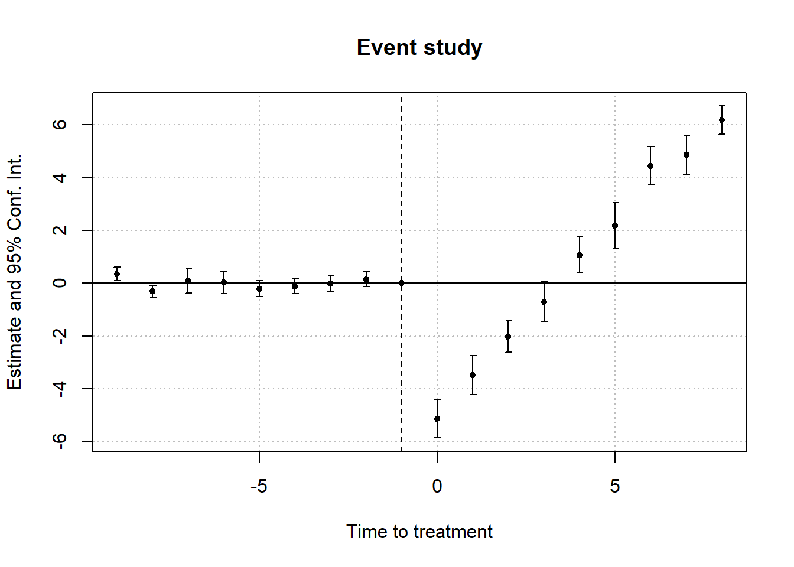
Figure 39.39: Two-stage difference-in-differences event study on the staggered example panel, drawn with the interaction plotting interface. The reference period is minus one, and the pre-treatment coefficients are the placebo test the design rests on.
coefplot(est)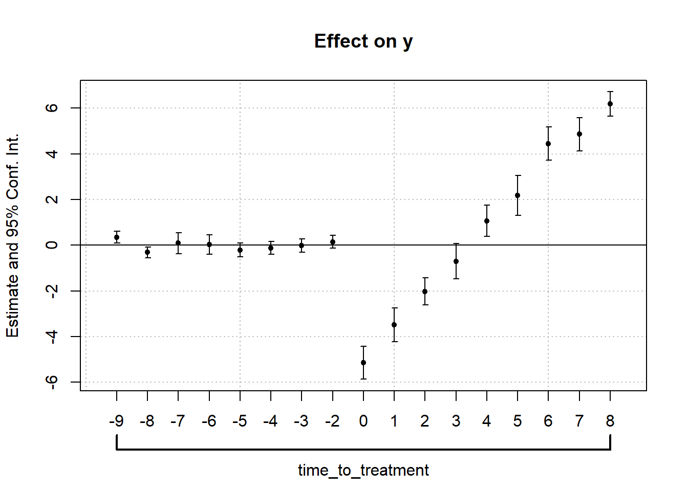
Figure 39.40: The same two-stage estimates drawn with the generic coefficient plot, which labels the relative periods as ordinary coefficient names rather than as an event-time axis.
mult_est <- did2s::event_study(
data = fixest::base_stagg |>
dplyr::mutate(year_treated = dplyr::if_else(year_treated == 10000, 0, year_treated)),
gname = "year_treated",
idname = "id",
tname = "year",
yname = "y",
estimator = "all"
)
did2s::plot_event_study(mult_est)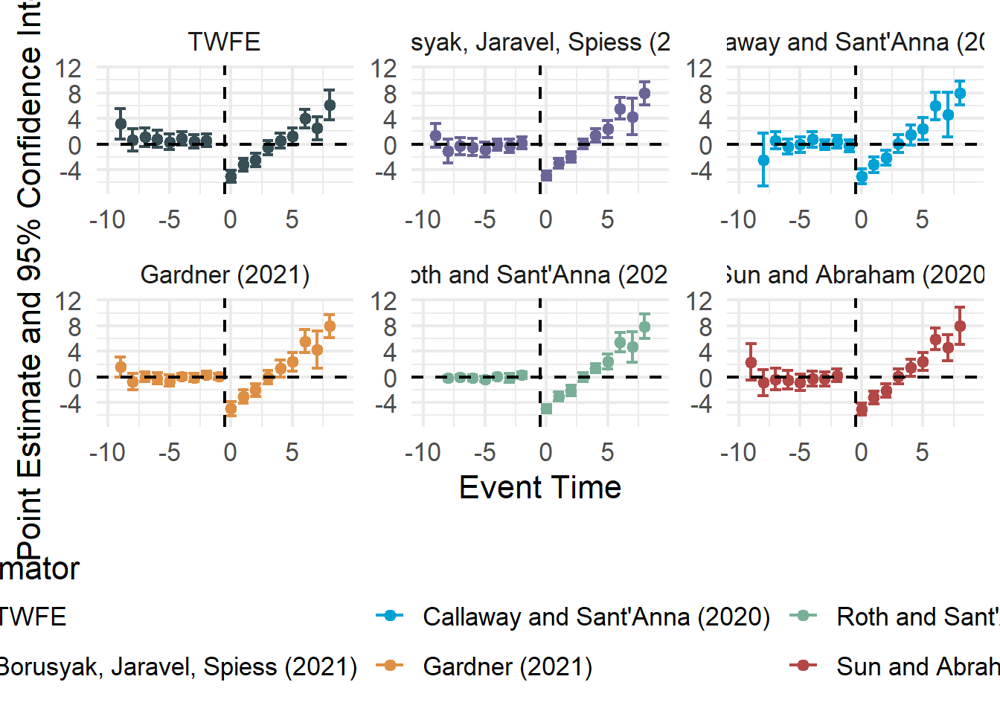
The imputation estimator of Borusyak et al. (2024) is also available directly from the didimputation package, which returns the overall ATT under the imputation approach.
library(didimputation)
library(fixest)
data("base_stagg")
did_imputation(
data = base_stagg,
yname = "y",
gname = "year_treated",
tname = "year",
idname = "id"
)
#> term estimate std.error conf.low conf.high
#> <char> <num> <num> <num> <num>
#> 1: treat -0.7455638 0.3302853 -1.392923 -0.0982045639.15.9 Reshaped Inverse Probability Weighting - TWFE Estimator
The Reshaped Inverse Probability Weighting (RIPW) estimator extends the classic TWFE regression framework to account for arbitrary, time- and unit-varying treatment assignment mechanisms. This approach leverages an explicit model for treatment assignment to achieve design robustness, maintaining consistency even when traditional fixed-effects outcome models are misspecified.
The RIPW-TWFE framework is particularly relevant in panel data settings with general treatment patterns
staggered adoption
transient treatments.
Setting and Notation
Panel data with \(n\) units observed over \(T\) time periods.
-
Potential outcomes: For each unit \(i \in \{1, \dots, n\}\) and time \(t \in \{1, \dots, T\}\):
\[ Y_{it}(1), \quad Y_{it}(0) \]
-
Observed outcomes:
\[ Y_{it} = W_{it} Y_{it}(1) + (1 - W_{it}) Y_{it}(0) \]
-
Treatment assignment path for unit \(i\):
\[ \mathbf{W}_i = (W_{i1}, \dots, W_{iT}) \in {0,1}^T \]
-
Generalized Propensity Score (GPS): For unit \(i\), the probability distribution over treatment paths:
\[ \mathbf{W}_i \sim \pi_i(\cdot) \]
where \(\pi_i(w)\) is known or estimated.
Assumptions
Binary Treatment: \(W_{it} \in {0,1}\) for all \(i\) and \(t\).
No Dynamic Effects: Current outcomes depend only on current treatment, not past treatments.
-
Overlap Condition (Assumption 2.2 from Arkhangelsky et al. (2024)):
There exists a subset \(S^* \subseteq \{0,1\}^T\), with \(|S^*| \ge 2\) and \(S^* \not\subseteq \{0_T, 1_T\}\), such that:
\[ \pi_i(w) > c > 0, \quad \forall w \in S^*, \forall i \in \{1, \dots, n\} \]
Maximal Correlation Decay (Assumption 2.1): Dependence between units decays at rate \(n^{-q}\) for some \(q \in (0,1]\).
Bounded Second Moments (Assumption 2.3): \(\sup_{i,t,w} \mathbb{E}[Y_{it}^2(w)] < M < \infty\).
Key Quantities of Interest
-
Unit-Time Specific Treatment Effect:
\[ \tau_{it} = Y_{it}(1) - Y_{it}(0) \]
-
Time-Specific Average Treatment Effect:
\[ \tau_t = \frac{1}{n} \sum_{i=1}^n \tau_{it} \]
-
Doubly Averaged Treatment Effect (DATE):
\[ \tau(\xi) = \sum_{t=1}^T \xi_t \tau_t = \sum_{t=1}^T \xi_t \left( \frac{1}{n} \sum_{i=1}^n \tau_{it} \right) \]
where \(\xi = (\xi_1, \dots, \xi_T)\) is a vector of non-negative weights such that \(\sum_{t=1}^T \xi_t = 1\).
-
Special Case: Equally weighted DATE:
\[ \tau_{\text{eq}} = \frac{1}{nT} \sum_{t=1}^T \sum_{i=1}^n \tau_{it} \]
Inverse Probability Weighting (IPW) methods are widely used to correct for selection bias in treatment assignment by reweighting observations according to their probability of receiving a given treatment. In panel data settings with TWFE regression, the IPW approach can be incorporated to address non-random treatment assignments over time and across units.
We begin with the classic TWFE regression objective, then show how IPW modifies it, and finally generalize to the Reshaped IPW (RIPW) estimator.
The unweighted TWFE estimator minimizes the following objective function:
\[ \min_{\tau, \mu, \{\alpha_i\}, \{\lambda_t\}} \sum_{i=1}^{n} \sum_{t=1}^{T} \left( Y_{it} - \mu - \alpha_i - \lambda_t - W_{it} \tau \right)^2 \]
where
- \(n\): Total number of units (e.g., individuals, firms, regions).
- \(T\): Total number of time periods.
- \(Y_{it}\): Observed outcome for unit \(i\) at time \(t\).
-
\(W_{it}\): Binary treatment indicator for unit \(i\) at time \(t\).
- \(W_{it} = 1\) if unit \(i\) is treated at time \(t\); \(0\) otherwise.
- \(\tau\): Parameter of interest, representing the Average Treatment Effect under the TWFE model.
- \(\mu\): Common intercept, capturing the overall average outcome level across all units and times.
- \(\alpha_i\): Unit-specific fixed effects, controlling for time-invariant heterogeneity across units.
- \(\lambda_t\): Time-specific fixed effects, controlling for shocks or common trends that affect all units in time period \(t\).
This standard TWFE regression assumes parallel trends across units in the absence of treatment and ignores the treatment assignment mechanism.
The IPW-TWFE estimator modifies the classic TWFE regression by reweighting the contribution of each observation according to the inverse probability of the entire treatment path for unit \(i\).
The weighted objective function is:
\[ \min_{\tau, \mu, \{\alpha_i\}, \{\lambda_t\}} \sum_{i=1}^{n} \sum_{t=1}^{T} \left( Y_{it} - \mu - \alpha_i - \lambda_t - W_{it} \tau \right)^2 \cdot \frac{1}{\pi_i(\mathbf{W}_i)} \]
where
-
\(\pi_i(\mathbf{W}_i)\): The generalized propensity score (GPS) for unit \(i\).
- This is the joint probability that unit \(i\) follows the entire treatment assignment path \(\mathbf{W}_i = (W_{i1}, W_{i2}, \dots, W_{iT})\).
- It represents the assignment mechanism, which may be known (in experimental designs) or estimated (in observational studies).
By weighting the squared residual for each unit-time observation by \(\frac{1}{\pi_i(\mathbf{W}_i)}\), the IPW-TWFE estimator adjusts for non-random treatment assignment, similar to the role of IPW in cross-sectional data.
The Reshaped IPW (RIPW) estimator further generalizes the IPW approach by introducing a user-specified reshaped design distribution, denoted by \(\Pi\), over the space of treatment assignment paths.
The RIPW-TWFE estimator minimizes the following weighted objective:
\[ \hat{\tau}_{RIPW}(\Pi) = \arg \min_{\tau, \mu, \{\alpha_i\}, \{\lambda_t\}} \sum_{i=1}^{n} \sum_{t=1}^{T} \left( Y_{it} - \mu - \alpha_i - \lambda_t - W_{it} \tau \right)^2 \cdot \frac{\Pi(\mathbf{W}_i)}{\pi_i(\mathbf{W}_i)} \]
where
-
\(\Pi(\mathbf{W}_i)\): A user-specified reshaped distribution over the treatment assignment paths \(\mathbf{W}_i\).
- It describes an alternative “design” the researcher wants to emulate, possibly reflecting hypothetical or target assignment mechanisms.
- The weight \(\frac{\Pi(\mathbf{W}_i)}{\pi_i(\mathbf{W}_i)}\) can be interpreted as a likelihood ratio:
- If \(\pi_i(\cdot)\) is the true assignment distribution, reweighting by \(\Pi(\cdot)\) effectively shifts the sampling design from \(\pi_i\) to \(\Pi\).
- The ratio \(\frac{\Pi(\mathbf{W}_i)}{\pi_i(\mathbf{W}_i)}\) adjusts for differences between the observed assignment mechanism and the target design.
Support of \(\mathbf{W}_i\)
The support of the treatment assignment paths is defined as:
\[ \mathbb{S} = \bigcup_{i=1}^{n} \text{Supp}(\mathbf{W}_i) \]
- \(\text{Supp}(\mathbf{W}_i)\): The support of the random variable \(\mathbf{W}_i\), i.e., the set of all treatment paths with positive probability under \(\pi_i(\cdot)\).
- \(\mathbb{S}\) represents the combined support across all units \(i = 1, \dots, n\).
- \(\Pi(\cdot)\) should have support contained within \(\mathbb{S}\), to ensure valid reweighting.
Special Cases of the RIPW Estimator
The choice of \(\Pi(\cdot)\) determines the behavior and interpretation of the RIPW estimator. Several special cases are noteworthy:
-
Uniform Reshaped Design:
\[ \Pi(\cdot) \sim \text{Uniform}(\mathbb{S}) \]
Here, \(\Pi\) places equal probability mass on each possible treatment path in \(\mathbb{S}\).
-
The weight becomes:
\[ \frac{\Pi(\mathbf{W}_i)}{\pi_i(\mathbf{W}_i)} = \frac{1 / |\mathbb{S}|}{\pi_i(\mathbf{W}_i)} \]
This reduces RIPW to the standard IPW-TWFE estimator, in which the target is a uniform treatment assignment design.
-
Reshaped Design Equals True Assignment:
\[ \Pi(\cdot) = \pi_i(\cdot) \]
-
The weight simplifies to:
\[ \frac{\Pi(\mathbf{W}_i)}{\pi_i(\mathbf{W}_i)} = 1 \]
The RIPW estimator reduces to the unweighted TWFE regression, consistent with an experiment where the assignment mechanism \(\pi_i\) is known and correctly specified.
-
To ensure that \(\hat{\tau}_{RIPW}(\Pi)\) consistently estimates the DATE \(\tau(\xi)\), we solve the DATE Equation:
\[ \mathbb{E}_{\mathbf{W} \sim \Pi} \left[ \left( \text{diag}(\mathbf{W}) - \xi \mathbf{W}^\top \right) J \left( \mathbf{W} - \mathbb{E}_{\Pi}[\mathbf{W}] \right) \right] = 0 \]
- \(J = I_T - \frac{1}{T} \mathbf{1}_T \mathbf{1}_T^\top\) is a projection matrix removing the mean.
- Solving this equation ensures consistency of the RIPW estimator for \(\tau(\xi)\).
Choosing the Reshaped Distribution \(\Pi\)
- If the support \(\mathbb{S}\) and \(\pi_i(\cdot)\) are known, \(\Pi\) can be specified directly.
- Closed-form solutions for \(\Pi\) are available in settings such as staggered adoption designs.
- When closed-form solutions are unavailable, optimization algorithms (e.g., BFGS) can be employed to solve the DATE equation numerically.
Properties
- The RIPW estimator provides design-robustness:
- It can correct for misspecified outcome models by properly reweighting according to the assignment mechanism.
- It accommodates complex treatment assignment processes, such as staggered adoption and non-random assignment.
- The flexibility to choose \(\Pi(\cdot)\) allows researchers to target estimands that represent specific policy interventions or hypothetical designs.
The RIPW estimator has a double robustness property:
-
\(\hat{\tau}_{RIPW}(\Pi)\) is consistent if either:
The assignment model \(\pi_i(\cdot)\) is correctly specified or
The outcome regression (TWFE) model is correctly specified.
This feature is particularly valuable in quasi-experimental designs where the parallel trends assumption may not hold globally.
- Design-Robustness: RIPW corrects for negative weighting issues identified in the TWFE literature (e.g., Goodman-Bacon (2021); De Chaisemartin and D’haultfœuille (2023)).
- Unlike conventional TWFE regressions, which can yield biased estimands under heterogeneity, RIPW explicitly targets user-specified weighted averages (DATE).
- In randomized experiments, RIPW ensures the effective estimand is interpretable as a population-level average, determined by the design \(\Pi\).
39.15.10 Dynamic Treatment Effect Estimation with Interactive Fixed Effects and Short Panels
Brown and Butts (2025)
39.15.11 Switching Difference-in-Differences Estimator (De Chaisemartin and d’Haultfoeuille 2020)
TWFE hinges on restrictive assumptions (e.g., the homogeneity of treatment effects across time and groups). When this assumption is violated, TWFE can yield misleading results, including estimates with signs opposite to all underlying effects.
We consider a standard panel data setup with \(G\) groups and \(T\) time periods. Each observation belongs to a group-period cell \((g, t)\), and treatment \(D_{g,t} \in {0,1}\) is assigned at the group-time level.
Let \(Y_{i,g,t}\) be the outcome of individual \(i\) in group \(g\) at time \(t\), with potential outcomes \(Y_{i,g,t}(1)\) and \(Y_{i,g,t}(0)\). Observed outcomes satisfy:
\[ Y_{i,g,t} = D_{g,t} \cdot Y_{i,g,t}(1) + (1 - D_{g,t}) \cdot Y_{i,g,t}(0) \]
The canonical TWFE regression is:
\[ Y_{i,g,t} = \alpha_g + \lambda_t + \beta^{fe} D_{g,t} + \varepsilon_{i,g,t} \]
where \(\alpha_g\) are group fixed effects, \(\lambda_t\) are time fixed effects, and \(\beta^{fe}\) is interpreted as the treatment effect only under homogeneous treatment effects.
39.15.11.1 Heterogeneous Treatment Effects and Weighting Bias
When treatment effects vary across \((g,t)\) cells, the TWFE estimator \(\hat{\beta}^{fe}\) is no longer a simple average. Instead, it can be decomposed into a weighted sum of cell-specific average treatment effects:
\[ \beta^{fe} = \mathbb{E} \left[ \sum_{(g,t): D_{g,t}=1} w_{g,t} \Delta_{g,t} \right] \]
where:
- \(\Delta_{g,t} = \mathbb{E}[Y_{g,t}(1) - Y_{g,t}(0)]\) is the average treatment effect in cell \((g,t)\)
- \(w_{g,t}\) are weights that can be negative and sum to one.
Some weights are negative because TWFE implicitly compares outcomes across all treated and untreated groups, even when “controls” are themselves treated. These comparisons can subtract out treatment effects, leading to negative weights.
39.15.11.2 Illustration: Negative Weights Can Flip Signs
For example, suppose:
- Group 1 is treated only in period 3: \(\Delta_{1,3} = 1\)
- Group 2 is treated in periods 2 and 3:
- \(\Delta_{2,2} = 1\)
- \(\Delta_{2,3} = 4\)
Then TWFE produces:
\[ \beta^{fe} = \frac{1}{2} \Delta_{1,3} + \Delta_{2,2} - \frac{1}{2} \Delta_{2,3} = \frac{1}{2} + 1 - 2 = -0.5 \]
All \(\Delta_{g,t}\)s are positive, but the TWFE estimate is negative.
To assess the extent to which TWFE may be misleading, compute the robustness ratio:
\[ \sigma^{fe}_\_ = \frac{|\hat{\beta}^{fe}|}{\hat{\sigma}(w)} \]
Where:
- \(\hat{\sigma}(w)\) is the standard deviation of the TWFE weights across treated cells.
- A small \(\sigma^{fe}_\_\) indicates that minor heterogeneity can reverse the sign of the estimate.
This can be estimated directly from data and helps determine whether TWFE is reliable in your context.
39.15.11.3 DID_M Estimator: A Robust Alternative
De Chaisemartin and d’Haultfoeuille (2020) propose the DID_M estimator, which is valid under heterogeneous treatment effects. It focuses only on switching groups, using non-switchers as controls in a local difference-in-differences design.
Let \(S\) denote the set of all \((g,t)\) cells where treatment status changes between \(t-1\) and \(t\). The DID_M estimator is:
\[ \text{DID}_M = \sum_{t=2}^{T} \left( \frac{N_{1,0,t}}{N_S} \cdot \text{DID}^+_t + \frac{N_{0,1,t}}{N_S} \cdot \text{DID}^-_t \right) \]
Where:
- \(\text{DID}^+_t\) compares joiners to stable untreated groups
- \(\text{DID}^-_t\) compares leavers to stable treated groups
- \(N_S\) is the total number of observations in switching cells
DID_M requires:
- Common trends for both treated and untreated potential outcomes
- Existence of stable groups at every \(t\) (i.e., some groups don’t change treatment status)
- No Ashenfelter dip (treatment not triggered by negative shocks)
These assumptions are weaker than those required for TWFE to be unbiased.
De Chaisemartin and d’Haultfoeuille (2020) also propose a placebo version of DID_M using pre-treatment periods. If pre-treatment differences exist between switchers and non-switchers, this indicates violation of the parallel trends assumption. This test is analogous to pre-trend checks in event-study designs.
# Load required packages
library(fixest) # For TWFE model and dataset
library(TwoWayFEWeights) # For decomposing TWFE weights
library(DIDmultiplegt) # For robust SDID estimator
# Load the sample staggered adoption dataset
data("base_stagg")
# Preview the data
head(base_stagg)
#> id year year_treated time_to_treatment treated treatment_effect_true
#> 2 90 1 2 -1 1 0
#> 3 89 1 3 -2 1 0
#> 4 88 1 4 -3 1 0
#> 5 87 1 5 -4 1 0
#> 6 86 1 6 -5 1 0
#> 7 85 1 7 -6 1 0
#> x1 y
#> 2 -1.0947021 0.01722971
#> 3 -3.7100676 -4.58084528
#> 4 2.5274402 2.73817174
#> 5 -0.7204263 -0.65103066
#> 6 -3.6711678 -5.33381664
#> 7 -0.3152137 0.4956263139.15.11.3.1 Estimate TWFE Model
# Run standard TWFE using fixest
twfe <- feols(y ~ treatment | id + year,
data = base_stagg |>
dplyr::mutate(treatment = dplyr::if_else(time_to_treatment < 0, 0, 1)))
summary(twfe)
#> OLS estimation, Dep. Var.: y
#> Observations: 950
#> Fixed-effects: id: 95, year: 10
#> Standard-errors: IID
#> Estimate Std. Error t value Pr(>|t|)
#> treatment -3.46761 0.336041 -10.319 < 2.2e-16 ***
#> ---
#> Signif. codes: 0 '***' 0.001 '**' 0.01 '*' 0.05 '.' 0.1 ' ' 1
#> RMSE: 2.471 Adj. R2: 0.272265
#> Within R2: 0.111912
39.15.11.3.2 Decompose Weights with TwoWayFEWeights
twfe_weights <- twowayfeweights(
data = base_stagg |> dplyr::mutate(treatment = dplyr::if_else(time_to_treatment < 0, 0, 1)),
Y = "y",
G = "year_treated",
T = "year",
D = "treatment",
summary_measures = T
)
# Show summary
twfe_weights
#>
#> Under the common trends assumption,
#> the TWFE coefficient beta, equal to -3.4676, estimates a weighted sum of 45 ATTs.
#> 41 ATTs receive a positive weight, and 4 receive a negative weight.
#>
#> ──────────────────────────────────────────
#> Treat. var: treatment ATTs Σ weights
#> ──────────────────────────────────────────
#> Positive weights 41 1.0238
#> Negative weights 4 -0.0238
#> ──────────────────────────────────────────
#> Total 45 1
#> ──────────────────────────────────────────
#>
#> Summary Measures:
#> TWFE Coefficient (β_fe): -3.4676
#> min σ(Δ) compatible with β_fe and Δ_TR = 0: 4.8357
#> min σ(Δ) compatible with treatment effect of opposite sign than β_fe in all (g,t) cells: 36.1549
#> Reference: Corollary 1, de Chaisemartin, C and D'Haultfoeuille, X (2020a)
#>
#> The development of this package was funded by the European Union (ERC, REALLYCREDIBLE,GA N. 101043899).
39.15.11.3.3 Estimate DID_M (Switching DID Estimator) with DIDmultiplegt
# Estimate robust SDID estimator (DID_M)
did_m <- did_multiplegt(
mode = "dyn",
df = base_stagg |>
dplyr::mutate(treatment = dplyr::if_else(time_to_treatment < 0, 0, 1)),
outcome = "y",
group = "year_treated",
time = "year",
treatment = "treatment",
effects = 5,
# controls = c("x1"),
placebo = 2
)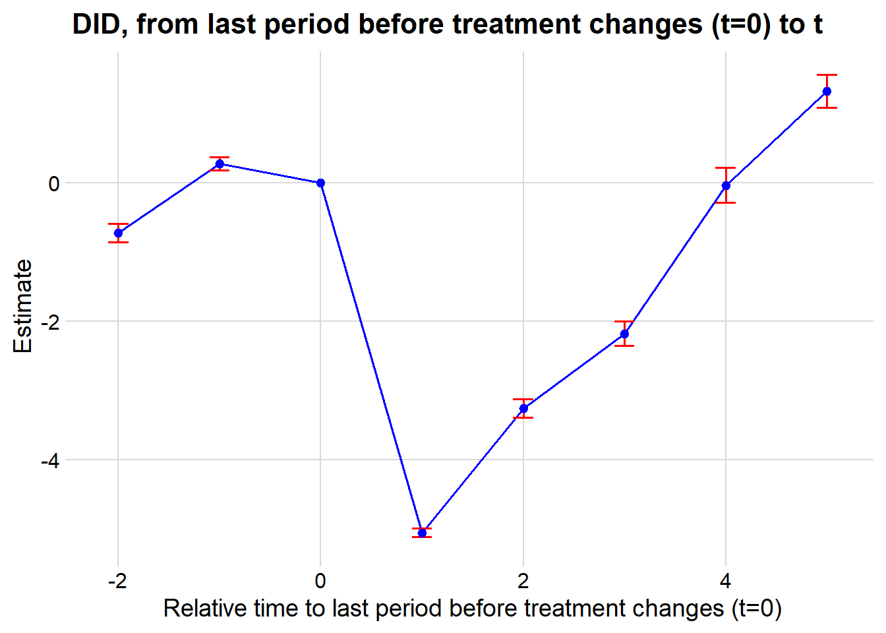
summary(did_m)
#>
#> ----------------------------------------------------------------------
#> Estimation of treatment effects: Event-study effects
#> ----------------------------------------------------------------------
#> Estimate SE LB CI UB CI N Switchers
#> Effect_1 -5.04943 0.03256 -5.11324 -4.98562 54 9
#> Effect_2 -3.25734 0.06712 -3.38889 -3.12579 44 8
#> Effect_3 -2.17826 0.08866 -2.35204 -2.00449 35 7
#> Effect_4 -0.03749 0.12841 -0.28916 0.21418 27 6
#> Effect_5 1.31986 0.12128 1.08216 1.55756 20 5
#>
#> Test of joint nullity of the effects : p-value = 0.0000
#> ----------------------------------------------------------------------
#> Average cumulative (total) effect per treatment unit
#> ----------------------------------------------------------------------
#> Estimate SE LB CI UB CI N Switchers
#> -2.29649 0.07360 -2.44074 -2.15223 80 35
#> Average number of time periods over which a treatment effect is accumulated: 2.7143
#>
#> ----------------------------------------------------------------------
#> Testing the parallel trends and no anticipation assumptions
#> ----------------------------------------------------------------------
#> Estimate SE LB CI UB CI N Switchers
#> Placebo_1 0.27204 0.04917 0.17567 0.36841 44 8
#> Placebo_2 -0.72910 0.06790 -0.86219 -0.59601 27 6
#>
#> Test of joint nullity of the placebos : p-value = 0.0000
#>
#>
#> The development of this package was funded by the European Union.
#> ERC REALLYCREDIBLE - GA N. 10104389939.15.12 Augmented/Forward DID
- DID Methods for Limited Pre-Treatment Periods (see Table 39.28):
| Method | Scenario | Approach |
|---|---|---|
|
Augmented DID |
Treatment outcome is outside the range of control units | Constructs the treatment counterfactual using a scaled average of control units |
|
Forward DID (Li 2024) |
Treatment outcome is within the range of control units | Uses a forward selection algorithm to choose relevant control units before applying DID |
39.15.13 Doubly Robust Difference-in-Differences Estimators
In its simplest “canonical” form, DID compares the before-and-after outcomes of one group that eventually receives a treatment (the “treated” group) with the before-and-after outcomes of another group that never receives the treatment (the “comparison” group). Under the parallel trends assumption, DID can recover the average treatment effect on the treated (ATT).
Practitioners often enrich DID analyses by conditioning on observed covariates to mitigate violations of the unconditional parallel trends assumption. Once conditioning on covariates, the DID framework remains attractive, provided that conditional parallel trends hold.
Historically, two main approaches have emerged for DID estimation in the presence of covariates:
- Outcome Regression (OR) (Heckman et al. 1997). Model the outcome evolution for the comparison group (and possibly for the treated group), and then plug these fitted outcome equations into the DID formula.
- Inverse Probability Weighting (IPW) (Abadie 2005). Model the probability of treatment conditional on covariates (the “propensity score”) and use inverse-probability reweighting to reconstruct appropriate counterfactuals for the treated group.
A key insight in semiparametric causal inference is that one can combine these two approaches (modeling the outcome regression and the propensity score in tandem) to form an estimator that remains consistent if either the outcome-regression equations are correctly specified or the propensity-score equation is correctly specified. Such an estimator is called doubly robust (Sant’Anna and Zhao 2020).
This section covers both cases of (i) panel data (where we observe each unit in both pre- and post-treatment periods) and (ii) repeated cross-section data (where, in each period, we observe a new random sample of units).
Under suitable conditions, the proposed doubly robust estimators not only exhibit desirable robustness properties to misspecification but can also attain the semiparametric efficiency bound, making them locally efficient if all working models are correct.
39.15.13.1 Notation and set-up
-
Two-time-period design. We consider a setting with two time periods: \(t = 0\) (pre-treatment) and \(t = 1\) (post-treatment). A subset of units receives the treatment only at \(t = 1\). Hence for a unit \(i\):
- \(D_i = D_{i1} \in {0, 1}\) is an indicator for receiving treatment by time 1 (so \(D_{i0} = 0\) for all \(i\)).
- \(Y_{it}\) is the observed outcome at time \(t\).
Potential outcomes. We adopt the potential outcomes framework. Let \[ Y_{it}(1) = \text{potential outcome of unit }i \text{ at time } t \text{ if treated,} \] \[ Y_{it}(0) = \text{potential outcome of unit }i \text{ at time } t \text{ if not treated.} \] Then the observed outcome satisfies \(Y_{it} = D_i Y_{it}(1) + (1-D_i) Y_{it}(0)\).
Covariates. A vector of observed pre-treatment covariates is denoted \(X_i\). Throughout, we assume the first component of \(X_i\) is a constant (intercept).
-
Data structures.
- Panel data. We observe \(\{(Y_{i0}, Y_{i1}, D_i, X_i)\}_{i=1}^n\), a sample of size \(n\) drawn i.i.d. from an underlying population.
- Repeated cross-sections. In period \(t\), we observe a fresh random sample of units. Let \(T_i\in {0,1}\) be an indicator for whether an observation is drawn in the post-treatment period \((T_i=1)\) or the pre-treatment period \((T_i=0)\). Write \(\{(Y_i, D_i, X_i, T_i)\}_{i=1}^n\). Here, if \(T_i=1\), then \(Y_i \equiv Y_{i1}\); if \(T_i=0\), then \(Y_i \equiv Y_{i0}\). We typically assume a stationarity condition, namely that the distribution of \((D, X)\) is stable across the two periods.
Let \(n_1\) and \(n_0\) be the respective sample sizes for the post- and pre-treatment periods, so \(n_1 + n_0 = n\). Often we let \(\lambda = P(T=1)\approx n_1/n.\)
The focus is on the ATT: \[ \tau = \mathbb{E}[Y_{i1}(1) - Y_{i1}(0)\big| D_i=1]. \] Because we only observe \(Y_{i1}(1)\) for the treated group, the central challenge is to recover \(\mathbb{E}[Y_{i1}(0)\mid D_i=1]\). Under standard DID assumptions, we identify \(\tau\) by comparing the treated group’s evolution in outcomes to the comparison group’s evolution in outcomes.
We require two key assumptions:
Conditional parallel trends
For \(t=0,1\), let \[ \mathbb{E}[Y_{1}(0) - Y_{0}(0)\mid D=1, X] = \mathbb{E}[Y_{1}(0) - Y_{0}(0)\mid D=0, X]. \] This means that, conditional on \(X\), in the absence of treatment, the treated and comparison groups would have had parallel outcome evolutions.Overlap
There exists \(\varepsilon>0\) such that \[ \varepsilon \le P(D=1\vert X)\le 1-\varepsilon \] That is, we require that a nontrivial fraction of the population is treated, and for each \(X\), there is a nontrivial probability of being in the untreated group (\(D=0\)).
Under these assumptions, we can identify \(\mathbb{E}[Y_{1}(0)\mid D=1]\) in a semiparametric fashion, either by modeling the outcome regressions (the OR approach) or by modeling the propensity score (the IPW approach).
39.15.13.2 Two Traditional DID Approaches
We briefly outline the classical DID estimators that rely solely on either outcome regressions or inverse probability weighting, to motivate the doubly robust idea.
39.15.13.2.1 Outcome-regression (OR) approach
Define
\[ m_{d,t}(x) = \mathbb{E}[Y_t \mid D=d, X=x]. \]
Under the conditional parallel trends assumption,
\[ \mathbb{E}[Y_{1}(0)\mid D=1 ] = \mathbb{E}[Y_{0}(0)\mid D=1] + \mathbb{E}[m_{0,1}(X) - m_{0,0}(X)\big\vert D=1]. \]
Hence an OR-based DID estimator (for panel or repeated cross-section) typically looks like
\[ \hat{\tau}^{\mathrm{reg}} = \overline{Y}_{1,1} - \left(\overline{Y}_{1,0} + \frac{1}{n_{\mathrm{treat}}} \sum_{i:D_i=1} [ \hat{m}_{0,1}(X_i) - \hat{m}_{0,0}(X_i) ] \right), \]
where \(\overline{Y}_{d,t}\) is the sample mean of \(Y_t\) among units with \(D=d\), and \(\hat{m}_{0,t}\) is some fitted model (e.g., linear or semiparametric) for \(\mathbb{E}[Y_t \mid D=0,X]\).
This OR estimator is consistent if (and only if) we have correctly specified the two outcome-regression functions \(m_{0,1}(x)\) and \(m_{0,0}(x)\). If these regressions are misspecified, the estimator will generally be biased.
39.15.13.2.2 IPW approach
An alternative is to model the propensity score
\[ p(x)= P(D=1 \mid X=x), \]
and use a Horvitz–Thompson-type reweighting (Horvitz and Thompson 1952) to reconstruct what “would have happened” to the treated group under no treatment. In the panel-data case, Abadie (2005) show that the ATT can be identified via
\[ \tau = \frac{1}{\mathbb{E}[D]} \mathbb{E}\left[ \frac{D - p(X)}{1 - p(X)} (Y_1 - Y_0) \right] \]
Hence an IPW estimator for panel data is
\[ \hat{\tau}^{\mathrm{ipw,p}} = \frac{1}{\overline{D}} \sum_{i=1}^n \left[\frac{D_i - \hat{p}(X_i)}{1-\hat{p}(X_i)}\right] \frac{1}{n}(Y_{i1} - Y_{i0}), \]
where \(\hat{p}(\cdot)\) is a fitted propensity score model. Similar expressions exist for repeated cross-sections, with small modifications to handle the fact that we observe \(Y_1\) only if \(T=1\), etc.
This IPW estimator is consistent if (and only if) the propensity score is correctly specified, i.e., \(\hat{p}(x)\approx p(x)\). If the propensity-score model is incorrect, the estimator may be severely biased.
39.15.13.3 Doubly Robust DID: Main Identification
The doubly robust (DR) idea is to combine the OR and IPW approaches so that the resulting estimator is consistent if either the OR model is correct or the propensity-score model is correct. Formally, consider two generic “working” models:
\(\pi(X)\) for \(p(X)\), i.e., a model for the propensity score,
\(\mu_{0,t}(X)\) for the outcome regressions \(m_{0,t}(X)=\mathbb{E}[Y_t \mid D=0,X]\).
We define two “DR moments” for each data structure.
39.15.13.3.1 DR estimand for panel data
When panel data are available, define
\[ \Delta Y = Y_1 - Y_0, \quad \mu_{0,\Delta}(X)=\mu_{0,1}(X)-\mu_{0,0}(X). \]
Then a DR moment for \(\tau\) is:
\[ \tau^{\mathrm{dr,p}} = \mathbb{E}\left[ \left(w_{1}^{\mathrm{p}}(D)-w_{0}^{\mathrm{p}}(D,X;\pi)\right) \left(\Delta Y -\mu_{0,\Delta}(X)\right) \right] \]
where
\[ w_{1}^{\mathrm{p}}(D)=\frac{D}{\mathbb{E}[D]}, \quad\quad w_{0}^{\mathrm{p}}(D,X;\pi)=\frac{\pi(X)(1-D)}{(1-\pi(X))\mathbb{E}[\tfrac{\pi(X)(1-D)}{1-\pi(X)}]}. \]
It can be shown that \(\tau^{\mathrm{dr,p}} = \tau\) provided either \(\pi(x)=p(x)\) almost surely (a.s.) or \(\mu_{0,\Delta}(x)=m_{0,\Delta}(x)\) a.s. (the latter meaning that at least the regression for the comparison group is correct).
39.15.13.3.2 DR estimands for repeated cross-sections
When we only have repeated cross-sections, the DR construction must account for the fact that \(Y_0, Y_1\) are not observed jointly on the same individuals. Let \(\lambda = P(T=1)\). Then two valid DR estimands are:
\[ \tau^{\mathrm{dr,rc}}_{1} = \mathbb{E}\left[(w_{1}^{\mathrm{rc}}(D,T)-w_{0}^{\mathrm{rc}}(D,T,X;\pi))(Y -\mu_{0,Y}(T,X))\right], \] where \[ w_{1}^{\mathrm{rc}}(D,T) = \frac{D1{T=1}} {\mathbb{E}[D1{T=1}]} - \frac{D1{T=0}} {\mathbb{E}[D1{T=0}]}, \] and \[ w_{0}^{\mathrm{rc}}(D,T,X;\pi) = \frac{\pi(X)(1-D)1{T=1}}{(1-\pi(X))\mathbb{E}[\tfrac{\pi(X)(1-D)1{T=1}}{(1-\pi(X))}]} - \frac{\pi(X)(1-D)1{T=0}}{(1-\pi(X))\mathbb{E}[\tfrac{\pi(X)(1-D)1{T=0}}{(1-\pi(X))}]}, \] and \(\mu_{0,Y}(T,X)=T\cdot\mu_{0,1}(X)+(1-T)\cdot\mu_{0,0}(X)\).
\[ \begin{aligned} \tau^{\mathrm{dr,rc}}_{2} ={}& \tau^{\mathrm{dr,rc}}_{1} \\ &+ \left[\mathbb{E}(\mu_{1,1}(X) - \mu_{0,1}(X)|D=1) - \mathbb{E}(\mu_{1,1}(X) - \mu_{0,1}(X)|D=1,T=1)\right] \\ &- \left[\mathbb{E}(\mu_{1,0}(X) - \mu_{0,0}(X)|D=1) - \mathbb{E}(\mu_{1,0}(X) - \mu_{0,0}(X)|D=1,T=0)\right] \end{aligned} \] where \(\mu_{d,t}(x)\) is a model for \(m_{d,t}(x)=\mathbb{E}[Y \mid D=d,T=t,X=x]\).
One can show \(\tau^{\mathrm{dr,rc}}_1 = \tau^{\mathrm{dr,rc}}_2 = \tau\) as long as the stationarity of \((D,X)\) across time holds and either the propensity score model \(\pi(x)=p(x)\) is correct or the comparison-group outcome regressions are correct (Sant’Anna and Zhao 2020). Notably, \(\tau^{\mathrm{dr,rc}}_2\) also includes explicit modeling of the treated group’s outcomes. However, in terms of identification alone, \(\tau^{\mathrm{dr,rc}}_1\) and \(\tau^{\mathrm{dr,rc}}_2\) share the same double-robust property.
39.15.13.4 Semiparametric Efficiency Bounds and Local Efficiency
An important concept in semiparametric inference is the semiparametric efficiency bound, which is the infimum of the asymptotic variance across all regular estimators that exploit only the imposed assumptions (parallel trends, overlap, stationarity). Equivalently, one can think of it as the variance of the “efficient influence function” (EIF).
We highlight key results:
- Efficient influence function for panel data
Under the above mentioned assumptions (i.i.d. data generating process, overlap, and conditional parallel trends) and without imposing further parametric constraints on \((m_{d,t},p)\), one can derive that the EIF for \(\tau\) in the panel-data setting is
\[ \begin{aligned} \eta^{e,\mathrm{p}}(Y_1, Y_0, D, X) &= \frac{D}{\mathbb{E}[D]}[m_{1,\Delta}(X) - m_{0,\Delta}(X) - \tau]\\ &\quad +\frac{D}{\mathbb{E}[D]}[\Delta Y - m_{1,\Delta}(X)]\\ &\quad -\frac{\pi(X)(1-D)}{(1 - \pi(X))\mathbb{E}[\tfrac{\pi(X)(1-D)}{1 - \pi(X)}]}[\Delta Y - m_{0,\Delta}(X)] \end{aligned} \]
where \(\Delta Y = Y_1 - Y_0\) and \(m_{d,\Delta}(X) \equiv m_{d,1}(X) - m_{d,0}(X)\).
The associated semiparametric efficiency bound is \[ \mathbb{E}[\eta^{e,\mathrm{p}}(Y_1,Y_0,D,X)^2]. \] It can be shown that a DR DID estimator can attain this bound if (1) the propensity score is correctly modeled, and (2) the comparison-group outcome regressions are correctly modeled.
- Efficient influence function for repeated cross-sections
Similarly, when only repeated cross-sections are available, the EIF becomes
\[ \begin{aligned} \eta^{e,\mathrm{rc}}(Y,D,T,X) &= \frac{D}{\mathbb{E}[D]}[m_{1,\Delta}(X) - m_{0,\Delta}(X) - \tau]\\ &\quad +\left[w_{1,1}^{\mathrm{rc}}(D,T)(Y - m_{1,1}(X)) - w_{1,0}^{\mathrm{rc}}(D,T)(Y - m_{1,0}(X))\right]\\ &\quad -\left[w_{0,1}^{\mathrm{rc}}(D,T,X;p)(Y - m_{0,1}(X)) - w_{0,0}^{\mathrm{rc}}(D,T,X;p)(Y - m_{0,0}(X))\right] \end{aligned} \]
with \(m_{d,\Delta}(X)=m_{d,1}(X)-m_{d,0}(X)\). The resulting efficiency bound is \(\mathbb{E}[\eta^{e,\mathrm{rc}}(Y,D,T,X)^2]\).
One can further show that having access to panel data can be strictly more informative (i.e., yields a smaller semiparametric variance bound) than repeated cross-sections. This difference can grow if the pre- and post-treatment samples are highly unbalanced.
39.15.13.5 Construction of Doubly Robust DID Estimators
- Generic two-step approach
Building upon the DR moment expressions, a natural approach to estimation is:
-
First-stage modeling (nuisance parameters).
- Estimate \(\hat{\pi}(X)\) for the propensity score, e.g. via logistic regression or other parametric or semiparametric methods.
- Estimate \(\hat{m}_{0,t}(X)\) for \(t=0,1\). One might also estimate \(\hat{m}_{1,t}(X)\) if using the second DR estimator for repeated cross-sections.
-
Plug into the DR moment.
Replace \(p\) with \(\hat{\pi}\) and \(m_{d,t}\) with \(\hat{m}_{d,t}\) in the chosen DR formula (panel or repeated cross-sections).
Because these estimators are DR, if either the propensity score is well specified or the outcome regressions for the comparison group are well specified, consistency is assured.
- Improving efficiency and inference: special parametric choices
It is sometimes desirable to construct DR DID estimators that are also “DR for inference,” meaning that the asymptotic variance does not depend on which portion of the model is correct. Achieving that typically requires carefully choosing first-stage estimators so that the extra “estimation effect” vanishes in the influence-function calculations. Concretely:
- Propensity score: Use a logistic regression (and a special inverse probability tilting estimator) proposed by Graham et al. (2012).
- Outcome regressions: Use linear regressions with specific weights (or with OLS for the treated group).
One then obtains:
-
For panel data: \[ \hat{\tau}^{\mathrm{dr,p}}_{\mathrm{imp}} = \frac{1}{n} \sum_{i=1}^n \left[w_{1}^{\mathrm{p}}(D_i) - w_{0}^{\mathrm{p}}(D_i,X_i;\hat{\gamma}^{\mathrm{ipt}})\right] \left[(Y_{i1}-Y_{i0}) - \hat{\mu}^{\mathrm{lin,p}}_{0,\Delta}(X_i;\hat{\beta}^{\mathrm{wls,p}}_{0,\Delta})\right], \] where \(\hat{\gamma}^{\mathrm{ipt}}\) is the “inverse probability tilting” estimate for the logit propensity score, and \(\hat{\beta}^{\mathrm{wls,p}}_{0,\Delta}\) is a weighted least squares estimate for the difference regressions of the comparison group. Under suitable regularity conditions, this estimator:
Remains consistent if either the logit model or the linear outcome model for \(\Delta Y\) in the control group is correct.
Has an asymptotic distribution that does not depend on which model is correct (thus simplifying inference).
Achieves the semiparametric efficiency bound if both models are correct.
- For repeated cross-sections, one can analogously use logistic-based tilting for the propensity score and weighted/ordinary least squares for the control/treated outcome regressions. The second DR estimator \(\hat{\tau}^{\mathrm{dr,rc}}_{2}\) that models the treated group’s outcomes as well can, under correct specification of all models, achieve local efficiency.
39.15.13.6 Large-Sample Properties
Assume mild regularity conditions for consistency and asymptotic normality (e.g., overlapping support, identifiability of the pseudo-true parameters for the first-step models, and suitable rates of convergence) (Sant’Anna and Zhao 2020).
Double Robust Consistency.
Each proposed DR DID estimator is consistent for \(\tau\) if either (a) \(\hat{p}(X)\) is consistent for \(p(X)\), or (b) the relevant outcome regressions \(\hat{m}_{0,t}(X)\) are consistent for \(m_{0,t}(X)\). Thus, we say the estimator is doubly robust to misspecification.Asymptotic Normality.
\[ \sqrt{n}(\hat{\tau}^{\mathrm{dr}} - \tau ) \xrightarrow{d} N(0,\mathrm{Var}(\text{IF})), \] where \(\mathrm{Var}(\text{IF})\) depends on which part(s) of the nuisance models are consistently estimated. In general, one must account for the variance contribution of the first-stage estimation. But under certain special constructions (the “improved DR” approaches with inverse probability tilting and specialized weighting), the first-stage does not contribute additional variance, making inference simpler.Local Semiparametric Efficiency.
If both the propensity score model and the outcome-regression models are correct, the estimator’s influence function matches the efficient influence function, hence achieving the semiparametric efficiency bound. In repeated cross-sections, the DR estimator that also models the treated group’s outcomes (namely \(\tau^{\mathrm{dr,rc}}_2\)) is the one that can achieve local efficiency.
39.15.13.7 Practical Implementation
In practice, the recommended workflow is:
- Specify (and estimate) a flexible working model for the propensity score. A logistic regression with the inverse-probability-tilting approach is often a good default, as it simplifies subsequent steps if one wants DR inference.
- Model the outcome of the comparison group over time. For panel data, one can directly model \(\Delta Y\). For repeated cross-sections, one typically models \(\{m_{0,t}(X)\}_{t=0,1}\).
- (Optional) Model the outcome of the treated group if seeking the local-efficiency version of DR DID in repeated cross-sections.
- Form the DR DID estimator by plugging the fitted models from steps (1)–(3) into the chosen DR moment expression.
Inference can often be carried out by taking the empirical variance of the estimated influence function: \[ \hat{V} = \frac{1}{n}\sum_{i=1}^n \hat{\eta}_i^2, \] where \(\hat{\eta}_i\) is the evaluator’s best estimate of the influence function for observation \(i\). Under certain “improved DR” constructions, the same \(\hat{\eta}_i\) works regardless of which part of the model is correct.
data('base_stagg')
library(did)
drdid_result <- att_gt(
yname = "y",
tname = "year",
idname = "id",
gname = "year_treated",
xformla = ~ x1,
data = base_stagg
)
aggte(drdid_result, type = "simple")
#>
#> Call:
#> aggte(MP = drdid_result, type = "simple")
#>
#> Reference: Callaway, Brantly and Pedro H.C. Sant'Anna. "Difference-in-Differences with Multiple Time Periods." Journal of Econometrics, Vol. 225, No. 2, pp. 200-230, 2021. <https://doi.org/10.1016/j.jeconom.2020.12.001>, <https://arxiv.org/abs/1803.09015>
#>
#>
#> ATT Std. Error [ 95% Conf. Int.]
#> -0.8636 0.6159 -2.0708 0.3435
#>
#>
#> ---
#> Signif. codes: `*' confidence band does not cover 0
#>
#> Control Group: Never Treated, Anticipation Periods: 0
#> Estimation Method: Doubly Robust
agg.es <- aggte(drdid_result, type = "dynamic")
ggdid(agg.es)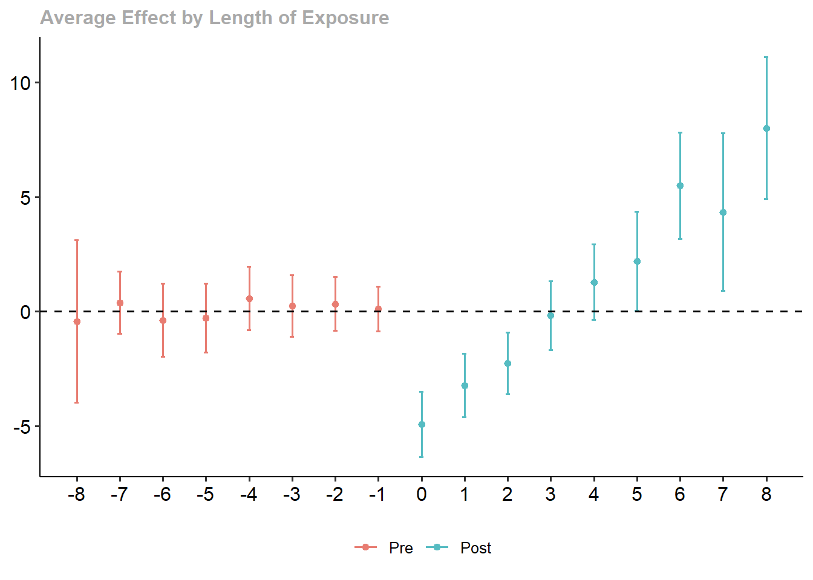
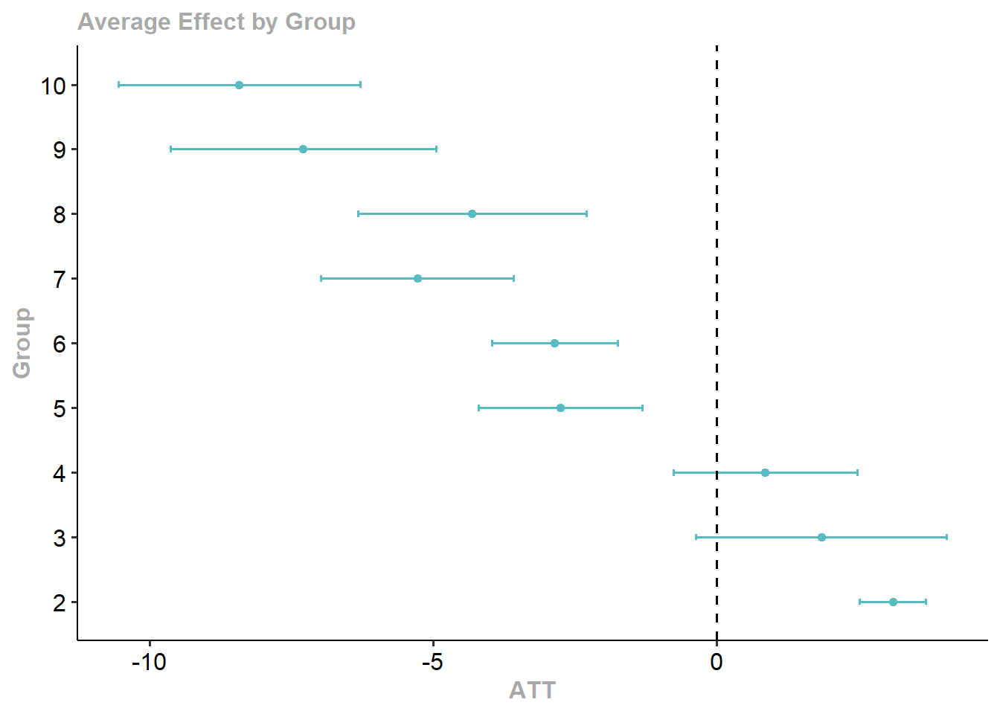
39.15.14 Difference-in-Differences with Continuous Treatment
Most of the DiD machinery developed in this chapter, from the simple 2x2 design to the group-time estimator, has been built for a binary treatment: a unit is either treated at some time or it is not. A large slice of empirical work does not fit that template. A county may be exposed to a tariff shock whose magnitude varies across local industries (Acemoglu et al. 2016). A state may raise its minimum wage by different amounts in different years (Cengiz et al. 2019). In each of these settings the analyst observes both whether a unit was treated and how much treatment it received. The natural object of interest is no longer a single number but a function: how the average causal effect varies with the dose.
This section develops the identification and estimation of such dose-response effects in panel data. The treatment is now a continuous (or many-valued) variable \(D_i \in \mathcal{D} \subset \mathbb{R}_{\geq 0}\), where \(D_i = 0\) corresponds to no treatment and \(D_i > 0\) corresponds to varying intensities of exposure. The framework draws on De Chaisemartin and d’Haultfoeuille (2020) and De Chaisemartin and D’haultfœuille (2023) for the critique of TWFE in heterogeneous-effect settings (the published methodological backbone of the continuous case), and on Callaway et al. (2024) for the event-study extension. The story is, in spirit, the same one told in Section 39.16: naive linear specifications can quietly average over heterogeneity in ways that are difficult to defend, and the cure is to be explicit about the estimand and to estimate it directly.
39.15.14.1 Setup and Notation
We observe a panel of units \(i = 1, \dots, N\) over time periods \(t = 1, \dots, T\). Let \(G_i \in \{q, \dots, T, \infty\}\) denote the period in which unit \(i\) first receives a positive dose, with \(G_i = \infty\) for the never-treated. For each treated unit, \(D_i \in \mathcal{D}\) denotes the dose received from period \(G_i\) onward; the dose is assumed time-invariant within a unit for the simplest case and time-varying \(D_{it}\) in the general case. Most of the conceptual content survives in the simpler time-invariant-dose setting, so we present that first and indicate at each step how the argument generalizes.
The potential-outcomes framework extends naturally. Let \(Y_{it}(d)\) denote the outcome unit \(i\) would realize at time \(t\) under dose \(d\). The observed outcome is
\[ Y_{it} = Y_{it}(D_i) \cdot \mathbf{1}\{t \geq G_i\} + Y_{it}(0) \cdot \mathbf{1}\{t < G_i\}. \]
The novelty relative to the binary case is that we now have a continuum of counterfactuals \(\{Y_{it}(d): d \in \mathcal{D}\}\) for each unit, not just two. Identification will have to do enough work to recover an entire curve, not just a single difference.
39.15.14.2 Estimands
Three estimands cover almost everything the literature reports. They differ in whether they describe levels or slopes of the dose-response, and in whether they are conditioned on the treated.
The first is the dose-specific average treatment effect on the treated:
\[ ATT(d, t) = \mathbb{E}[Y_{it}(d) - Y_{it}(0) \mid D_i = d, G_i \leq t]. \]
This is the level effect of dose \(d\), evaluated at the population of units that actually received dose \(d\). As \(d\) varies, \(ATT(d, t)\) traces out a curve: the dose-response function on the treated. Reporting this curve, rather than a single scalar, is the natural deliverable of a continuous-treatment DiD analysis.
The second is the average causal response (ACR), the slope of the dose-response evaluated at dose \(d\):
\[ ACR(d, t) = \frac{\partial}{\partial d} \mathbb{E}[Y_{it}(d) - Y_{it}(0)]. \]
In words, \(ACR(d, t)\) answers: at dose level \(d\), what is the marginal effect of an additional unit of treatment, averaged over the entire population? The integral of \(ACR(\cdot, t)\) over \(\mathcal{D}\) recovers an aggregate effect.
The third is the average causal response on the treated (ACRT), the same marginal effect but conditioned on the treated population:
\[ ACRT(d, t) = \frac{\partial}{\partial d} \mathbb{E}[Y_{it}(d) - Y_{it}(0) \mid D_i = d]. \]
It is worth slowing down on this object because it is the workhorse estimand of the continuous-DiD literature and because reading the formula too quickly hides what it is actually doing. ACRT is a derivative, not a difference. It does not compare units that received dose \(d\) to units that received dose \(d'\); that would be a finite difference and would confound selection (who is at each dose) with response (how each dose affects the outcome). Instead, ACRT asks: if we held the dose-receiving population fixed at the units that actually took dose \(d\), and we shifted their dose marginally, how would their average outcome change? It is the slope of the dose-response curve at dose \(d\), evaluated for units whose dose happens to be \(d\).
The distinction between ACR and ACRT is the distinction between two questions:
- ACR(d): if a randomly selected unit from the population were given dose \(d\) rather than dose \(d - \mathrm{d}d\), how would its outcome change?
- ACRT(d): if a unit that actually took dose \(d\) were given dose \(d\) rather than dose \(d - \mathrm{d}d\), how would its outcome change?
The difference matters whenever the units that select into high doses respond differently to those doses than units that select into low doses would have. This is the selection-on-gains pattern: firms that adopt a new technology more aggressively are often the firms with the most to gain from it. ACRT averages the marginal effects over the realized treated population at each dose; ACR averages over the full population, treated or not. These objects are different functions of the same underlying dose-response surface, and choosing between them is a substantive decision about whose marginal effect the analyst wants to report.
39.15.14.3 Identifying Assumptions
Two assumptions do the work in the continuous-treatment DiD framework. Both have direct analogues in the binary case but require care because the counterfactual is now indexed by a continuum.
The first is no anticipation, identical in spirit to the binary-treatment version:
\[ \mathbb{E}[Y_{it}(0)] = \mathbb{E}[Y_{it} \mid G_i = g], \quad \text{for all } t < g. \]
Units do not adjust their outcomes in response to a treatment they have not yet received. This is the standard requirement and can be diagnosed with pre-treatment event-study plots in exactly the same way as in the staggered binary case.
The second is parallel trends, and here the continuous setting forces a choice. The choice has nothing to do with statistical convenience: the two versions identify different estimands, and the gap between them is precisely the selection-on-gains bias.
Weak parallel trends posits that the expected change in the never-treated potential outcome is the same for the never-treated group and for the cohort that received dose \(d\):
\[ \mathbb{E}[Y_{it}(0) - Y_{i,g-1}(0) \mid G_i = g, D_i = d] = \mathbb{E}[Y_{it}(0) - Y_{i,g-1}(0) \mid G_i = \infty], \quad \forall t \geq g, d \in \mathcal{D}. \]
This is the natural lift of the binary parallel-trends assumption: it says that, in the absence of treatment, the units that took dose \(d\) would have evolved on average like the never-treated, conditional on the cohort and dose. The assumption is just about the baseline path, not about how units would respond to alternative doses. Under weak parallel trends, \(ATT(d, t)\) and \(ACRT(d, t)\) are identified.
Here is the point worth pausing on: weak parallel trends does not assume away selection bias on the responses. Two units might satisfy weak parallel trends (they would have had the same untreated path) and still respond very differently to the same dose if their unobserved heterogeneity made them more or less responsive to that particular intensity. Under weak parallel trends, the analyst is identifying ACRT, not ACR, precisely because the selection-on-gains pattern remains inside the estimand. The ACRT curve is a curve over the realized treated population at each dose; it is informative, but it is not the population dose-response.
Strong parallel trends posits something stricter: the expected change in the dose-\(d\) potential outcome is the same across all dose subpopulations.
\[ \mathbb{E}[Y_{it}(d) - Y_{i,g-1}(d) \mid G_i = g, D_i = d'] = \mathbb{E}[Y_{it}(d) - Y_{i,g-1}(d) \mid G_i = g], \quad \forall d, d' \in \mathcal{D}. \]
In words, units that actually took dose \(d'\) would have responded the same way to dose \(d\) as units that actually took dose \(d\). Strong parallel trends is exactly the assumption that the selection-on-gains channel is shut off: there is no systematic relationship between which dose a unit took and how it would respond to a counterfactual dose. Under strong parallel trends, the population dose-response function \(ACR(d, t)\) is identified, and it coincides with the on-the-treated version \(ACRT(d, t)\).
The phrasing matters. Strong parallel trends is not a separate piece of evidence that the analyst gathers to push from ACRT to ACR; it is the explicit assumption that lets the analyst report ACR rather than ACRT. The analyst pays for the richer estimand by ruling out, by assumption, the selection-on-gains story that motivated reaching for the continuous-treatment framework in the first place. Whether that price is worth paying is a substantive question, not a technical one.
The practical default is conservative: assume the weak version, identify \(ACRT\), and report the analysis as a conditional-on-treated dose-response. The stronger version is appropriate only when there is substantive reason to believe that dose assignment is unrelated to the gains, for instance when the dose is determined by a quasi-experimental shock that varies for reasons orthogonal to the potential outcomes. A useful diagnostic, when both estimators can be computed, is to report the ACR and ACRT curves side by side; a large gap is evidence that the selection-on-gains channel is empirically active, and the population-level interpretation of ACR is on weaker footing.
39.15.14.4 Why TWFE Goes Wrong with Continuous Treatment
It is tempting to estimate continuous-treatment DiD by simply replacing the binary treatment indicator with the continuous dose in a TWFE regression:
\[ Y_{it} = \alpha_i + \gamma_t + \beta \cdot D_{it} + \epsilon_{it}. \]
The coefficient \(\beta\) is then interpreted as “the marginal effect of one more unit of dose.” This interpretation is correct only under restrictive conditions; in general, \(\beta\) is a weighted average of unit-time-specific marginal effects with weights that can be negative and that need not concentrate where the analyst’s substantive interest lies.
De Chaisemartin and d’Haultfoeuille (2020) make the point cleanly for binary staggered designs and the logic carries over to the continuous case. In a two-period setting with strong parallel trends and constant treatment effects across doses, the TWFE coefficient on \(D\) does recover the common marginal effect. Once treatment effects are allowed to vary with the dose (the substantively interesting case, the whole reason to do a continuous-treatment analysis in the first place), the TWFE coefficient becomes a weighted average of \(ACR(d, t)\) across doses and time periods. The weights are functions of the variance of \(D_{it}\) within unit-time cells, not of any substantive feature of the dose distribution. In the staggered-adoption case, the same negative-weight pathology that De Chaisemartin and d’Haultfoeuille (2020) diagnose for binary treatments reappears, only now compounded by the dose dimension: comparisons of high-dose-late-treated units to low-dose-early-treated units can enter the estimand with negative weight.
The practical implication is the same as in the binary case. TWFE with a continuous treatment is best treated as a descriptive summary, useful for first-look exploration and benchmark comparisons. It should not be reported as the headline estimate without an accompanying decomposition or an alternative estimator that targets a well-defined dose-response object.
39.15.14.5 Multi-Valued (Discrete Dose Bins) DiD
Many applications sit between the clean binary and the fully continuous cases. The dose is naturally discretized into a handful of levels: a tax rate that takes a few statutory values, a training program that comes in two-week and four-week and six-week versions, a tariff that is set in coarse brackets. The continuous-treatment estimators of the previous sections are overkill in this setting, since there is no dose continuum to smooth over, and the binary estimators throw away the dose information entirely.
The right tool is a multi-valued (discrete-dose) DiD, in which each dose level acts as a separate treatment group and the analyst recovers a vector of dose-specific ATTs. De Chaisemartin and D’haultfœuille (2023) develop the framework in detail and show that, under a weak parallel-trends assumption for each dose level, the dose-specific ATTs are identified by group-time-style estimators applied separately to each dose stratum. The aggregate object is then a small table or step-function curve rather than a smooth dose-response.
Concretely, suppose the dose takes \(K\) discrete values \(d_1 < d_2 < \dots < d_K\) in the treated population (with \(d_0 = 0\) for the never-treated). The estimand of interest is the vector
\[ \big( ATT(d_1, t), ATT(d_2, t), \dots, ATT(d_K, t) \big), \]
where each \(ATT(d_k, t)\) is identified by a DiD between units in dose group \(k\) and the never-treated, under the corresponding weak parallel-trends assumption restricted to dose group \(k\). The analyst can read the table directly or compute discrete differences \(ATT(d_{k+1}, t) - ATT(d_k, t)\) to approximate the slope of the dose-response, which is the discrete-dose analogue of ACR.
The framework subsumes two limiting cases. When \(K = 1\) (only one dose level), it reduces to the standard binary DiD. When \(K\) is large and the dose grid is fine, it approaches the continuous-treatment case from below, and the analyst should ask whether the gain in dose resolution is worth the loss of statistical power per dose stratum. The empirical sweet spot is typically \(K \in \{2, 3, 4, 5\}\): enough levels to detect non-monotonicity in the dose-response, few enough that each stratum has a usable sample size.
The estimator can be implemented in any package that supports group-time ATTs (for example, the did package by passing the dose group as the gname argument), or by hand as a stratified DiD. We illustrate both below.
39.15.14.6 Estimation: Demonstration First, Production Second
We work through the estimation in two passes. The first pass is a from-scratch demonstration that estimates a discrete-dose ATT vector using only base R and fixest, to make the mechanics visible. The second pass calls the canonical published-package implementations (did for the multi-valued case, the contdid CRAN package for the continuous case) on the same synthetic data.
39.15.14.6.1 Demonstration: stratified DiD by dose bin
We simulate a panel with a never-treated group and three discrete dose levels, and we recover the dose-specific ATT vector by a sequence of binary 2x2 DiDs against the never-treated.
suppressPackageStartupMessages({
library(dplyr)
library(tidyr)
library(ggplot2)
library(fixest)
})
set.seed(20240515)
# Panel: 4 dose groups (0 = never-treated, 1/2/3 = three discrete dose levels)
# 2 periods (pre and post), 1000 units per group.
n_per_group <- 1000
groups <- 0:3
true_att <- c(0.0, 0.5, 1.2, 1.5) # concave dose-response on the treated
panel <- expand.grid(
unit = seq_len(n_per_group * length(groups)),
time = c(0, 1)
) %>%
arrange(unit, time) %>%
mutate(
dose_group = rep(rep(groups, each = n_per_group), each = 2),
unit_fe = rep(rnorm(n_per_group * length(groups), sd = 0.3), each = 2),
time_fe = ifelse(time == 0, 0, 0.2),
treat_post = as.integer(dose_group > 0 & time == 1),
att_realized = true_att[dose_group + 1] * treat_post,
Y = unit_fe + time_fe + att_realized + rnorm(n(), sd = 0.5)
)
head(panel)
#> unit time dose_group unit_fe time_fe treat_post att_realized
#> 1 1 0 0 0.17321300 0.0 0 0
#> 2 1 1 0 0.17321300 0.2 0 0
#> 3 2 0 0 0.16370894 0.0 0 0
#> 4 2 1 0 0.16370894 0.2 0 0
#> 5 3 0 0 -0.01175345 0.0 0 0
#> 6 3 1 0 -0.01175345 0.2 0 0
#> Y
#> 1 -0.19606350
#> 2 0.52355291
#> 3 0.21227118
#> 4 -0.09471705
#> 5 -0.09942626
#> 6 -0.46802315The data are organized so the dose-response is concave: dose level 2 has a marginal effect of \(1.2 - 0.5 = 0.7\) above dose 1, while dose level 3 has a marginal effect of only \(1.5 - 1.2 = 0.3\) above dose 2. The discrete ACR is decreasing in the dose, a classic diminishing-returns pattern.
Now estimate the dose-specific ATT vector by running one 2x2 DiD per dose level against the never-treated:
att_by_dose <- lapply(setdiff(groups, 0), function(k) {
sub <- panel %>%
filter(dose_group %in% c(0, k)) %>%
mutate(
treated = as.integer(dose_group == k),
post = as.integer(time == 1),
did = treated * post
)
fit <- feols(Y ~ did | unit + time, data = sub)
est <- unname(coef(fit)["did"])
se <- unname(sqrt(diag(vcov(fit)))["did"])
data.frame(
dose = k,
att_hat = est,
se = se,
ci_lo = est - 1.96 * se,
ci_hi = est + 1.96 * se,
att_true = true_att[k + 1]
)
}) %>% bind_rows()
att_by_dose
#> dose att_hat se ci_lo ci_hi att_true
#> 1 1 0.5231768 0.03282171 0.4588462 0.5875073 0.5
#> 2 2 1.2216259 0.03213804 1.1586354 1.2846165 1.2
#> 3 3 1.5451271 0.03227033 1.4818773 1.6083770 1.5The table reports, for each discrete dose, the estimated ATT, its standard error, a 95% confidence interval, and the true ATT used to simulate the data. Compare the att_hat column to att_true: the stratified DiD recovers the dose-specific level effects without bias because each comparison is a clean 2x2 against the never-treated under satisfied parallel trends. The discrete ACR is the first difference of the att_hat column moving from one dose to the next.
Plotting the dose-response gives the headline figure:
ggplot(att_by_dose, aes(x = dose, y = att_hat)) +
geom_pointrange(aes(ymin = ci_lo, ymax = ci_hi)) +
geom_line(aes(y = att_true), linetype = "dashed", color = "red") +
scale_x_continuous(breaks = 1:3) +
labs(x = "Dose level (k)",
y = "ATT(d_k): estimated level effect",
title = "Dose-response from stratified DiD",
subtitle = "Points + 95% CIs; dashed red line is the true ATT") +
theme_minimal()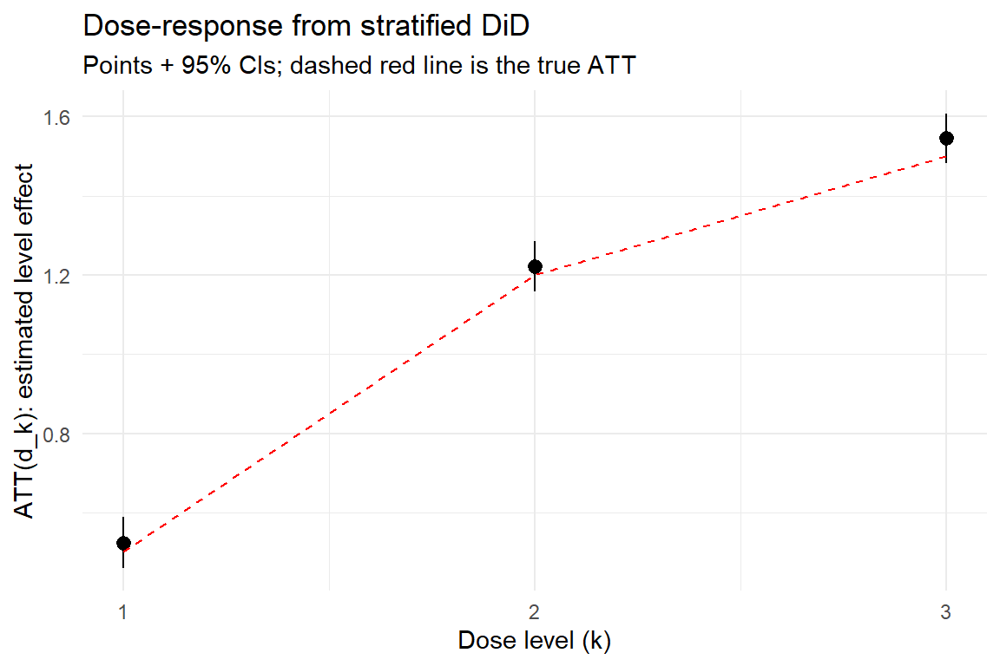
Figure 39.41: Discrete-dose ATT estimates from stratified 2x2 DiDs against the never-treated. Points are estimates, vertical lines are 95% CIs, dashed line is the true dose-response used in the simulation. The recovered curve is concave in the dose, mirroring the simulated diminishing-returns pattern.
Figure 39.41 makes the substantive story immediate: most of the gain from the program is realized at dose level 2, and the marginal benefit from moving to dose level 3 is much smaller. A reviewer who looked at a single TWFE coefficient on a continuous version of the dose would have averaged this concave pattern into a single slope and missed the diminishing-returns story.
The same logic generalizes to staggered adoption with discrete doses by replacing the single 2x2 with a group-time ATT estimator (Callaway and Sant’Anna 2021), computed separately for each dose group. We turn to the production-package implementation next.
39.15.14.6.2 Production: did for multi-valued discrete-dose DiD
The published did package by Callaway and Sant’Anna (2021) handles staggered adoption with binary treatment and extends to the discrete-multi-valued case by treating each dose group as its own cohort. The aggregation step then reports either dose-specific ATTs or a pooled effect.
# install.packages("did") # CRAN, Callaway and Sant'Anna
library(did)
# Cast the dose group as the cohort variable. The package expects an
# integer "G" indicating period of first treatment; we encode the dose
# group by interacting it with the actual first-treatment period.
panel_did <- panel %>%
group_by(unit) %>%
mutate(first_treat = ifelse(dose_group == 0, 0,
min(time[treat_post == 1], default = 0))) %>%
ungroup()
att_did <- att_gt(
yname = "Y",
tname = "time",
idname = "unit",
gname = "first_treat",
data = panel_did,
control_group = "nevertreated",
est_method = "dr" # doubly robust estimator
)
summary(att_did)
ggdid(att_did)The summary() output is a table with one row per (cohort, time-period) pair, reporting the estimated \(ATT(g, t)\), its standard error, and a 95% confidence interval. With three dose groups and two time periods, you get three estimates: one ATT per dose level at the post-period. The ggdid() figure renders each cohort’s path in its own panel; for the discrete-dose application the cohorts are the dose groups, so the panels read off the dose-response directly.
39.15.14.6.3 Production: contdid for the continuous case
When the dose is genuinely continuous (or has too many discrete levels to stratify), the contdid CRAN package by Callaway, Goodman-Bacon, and Sant’Anna implements the B-spline nonparametric estimator that targets either \(ATT(d, t)\) or \(ACRT(d, t)\) directly. The methodological paper backing the implementation is still circulating as a working paper; the published Callaway et al. (2024) covers the event-study extension and is the journal-cited reference for that part of the framework.
# install.packages("contdid") # CRAN, Callaway, Goodman-Bacon, Sant'Anna
library(contdid)
# Generate the package's built-in simulated panel.
df_cont <- simulate_contdid_data(
n = 5000,
num_time_periods = 4,
num_groups = 4
)
# Estimate ATT(d), the level effect curve, with a uniform CB.
att_d <- cont_did(
yname = "Y",
tname = "time_period",
idname = "id",
dname = "D",
gname = "G",
data = df_cont,
target_parameter = "level",
aggregation = "dose",
treatment_type = "continuous",
control_group = "notyettreated",
biters = 1000,
cband = TRUE
)
summary(att_d)
ggcont_did(att_d) +
labs(x = "Dose D", y = "ATT(d)",
title = "Level dose-response from contdid",
subtitle = "Uniform 95% CB via multiplier bootstrap")The summary(att_d) output reports the estimated \(ATT(d)\) on a fine grid of dose values, the uniform-band lower and upper limits at each grid point, and an overall test of the joint null that \(ATT(d) = 0\) for all \(d\). The ggcont_did() figure plots the curve with the uniform band shaded; the right way to read it is to scan for the dose range over which the band excludes zero (the doses for which the level effect is statistically distinguishable from zero) and to read the shape (monotone increasing, concave, threshold) rather than any single point estimate.
To recover the ACRT slope curve, change target_parameter = "slope". To trace the dynamic path, change aggregation = "eventstudy". Both are one-argument changes:
acrt_d <- cont_did(
yname = "Y", tname = "time_period", idname = "id",
dname = "D", gname = "G", data = df_cont,
target_parameter = "slope", # ACRT(d) instead of ATT(d)
aggregation = "dose",
treatment_type = "continuous",
control_group = "notyettreated",
biters = 1000, cband = TRUE
)
summary(acrt_d)
ggcont_did(acrt_d) +
labs(x = "Dose D", y = "ACRT(d)",
title = "Marginal-effect dose-response from contdid")The summary(acrt_d) table mirrors the level-effect table but reports the derivative of the dose-response (the marginal effect of one more unit of dose) at each grid point. A positive but declining ACRT curve is the signature of a concave dose-response; a curve that crosses zero is the signature of a non-monotone response. Comparing the level and slope figures together is the standard reporting style for a continuous-DiD analysis.
39.15.14.7 Diagnostics and Sensitivity
Three routine checks should accompany any continuous-DiD estimate, in addition to the pre-trend tests carried over from the binary case.
The first is a dose common-support diagnostic. Plot the empirical density of the dose among the treated and check that the range over which \(ATT(d, t)\) is estimated is well populated. The B-spline smoother will happily extrapolate into thin regions, but the resulting estimates have little to do with the data. The diagnostic plot is one line of ggplot:
panel %>%
filter(dose_group > 0) %>%
mutate(dose_value = dose_group) %>%
ggplot(aes(x = dose_value)) +
geom_bar(width = 0.4, fill = "grey70") +
labs(x = "Dose level among treated", y = "Count",
title = "Common-support diagnostic for the dose distribution") +
theme_minimal()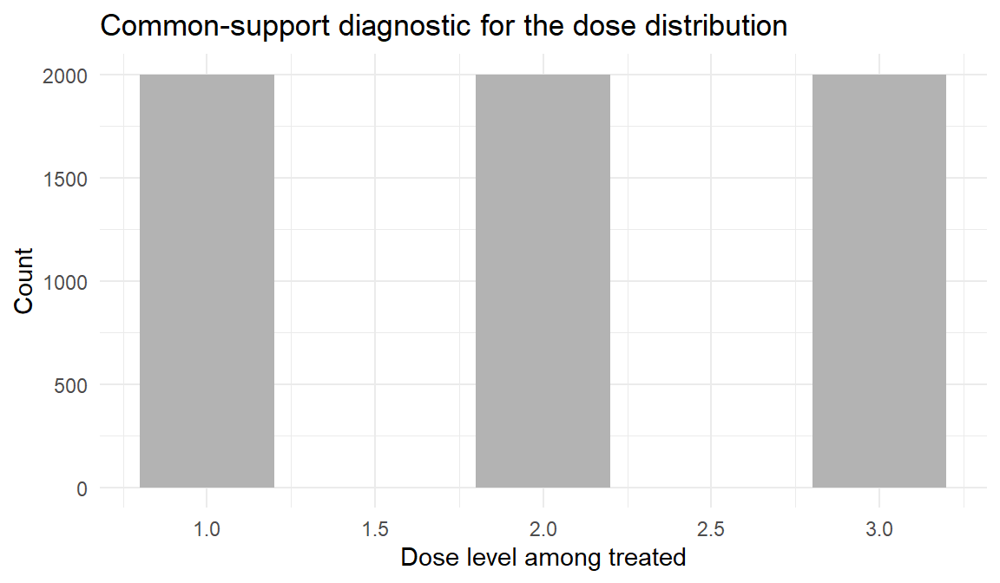
Figure 39.42: Common-support diagnostic. Density of the dose among the treated, with a rug of individual observations. The dose-response is identified only over the range where the density is non-negligible; estimates outside that range are smoother-driven extrapolation, not data.
In the discrete-dose simulation above (Figure 39.42) the support is balanced by construction (1000 units per dose level), so the diagnostic is trivially satisfied; in a real application the histogram or density would typically be far from uniform and the analyst should restrict the reported dose-response curve to doses that are well represented in the data.
The second is a placebo dose specification. Re-run the estimation, but pretend treatment occurred one period earlier than it actually did. A non-zero estimated dose-response in the placebo is evidence of pre-trends that vary with dose, which directly violates the parallel-trends assumption in its continuous-treatment form. The placebo is sharper than the standard scalar pre-trend test because it reveals whether the violation of parallel trends is itself dose-dependent.
The third is a weak-vs-strong PT comparison. Estimate the dose-response under both the weak-parallel-trends assumption (which identifies ACRT) and the strong-parallel-trends assumption (which identifies ACR). A small gap between the two curves is consistent with negligible selection-on-gains; a large gap is direct empirical evidence that the population-level interpretation of ACR rests on an assumption that the data are not willing to make. Reporting both curves, with a clear statement of which one the headline result corresponds to, is the conservative default.
39.15.14.8 Empirical Applications
Two published applications illustrate the design pattern in different domains.
Acemoglu et al. (2016) study the employment consequences of the rise in Chinese import competition in the United States in the 2000s. The treatment is a continuous measure of local-labor-market exposure to Chinese imports, constructed from pre-period industry shares interacted with national import-penetration changes. The dose varies smoothly across commuting zones, and the natural deliverable is the dose-response of local employment to a one-unit increase in exposure. The original paper uses a Bartik-style shift-share instrumental-variables specification layered on a long-difference design; the same data could be re-analyzed in the continuous-DiD framework to recover a non-parametric dose-response curve and check that the structural-IV linear specification is consistent with what a flexible estimator finds.
Cengiz et al. (2019) estimate the effect of minimum-wage increases on the number of low-wage jobs. The treatment is a continuous wage floor that varies across states and years, with substantial heterogeneity in the size of the bite. The analysis is structured as a bunching design (counting jobs disappearing from below the new floor and reappearing above it), which is conceptually adjacent to a dose-response but reports a different estimand. A continuous-DiD analysis on the same panel would directly trace out how employment effects scale with the magnitude of the minimum-wage change, with the dose interpreted either as the level of the new minimum wage or as the size of the increase relative to the prevailing market wage.
A third application shows most directly what a flexible dose-response buys over a linear specification. Acemoglu and Finkelstein (2008) study a 1983 Medicare reform that eliminated a labor subsidy for hospitals, changing the relative price of capital and labor by an amount that varied across hospitals according to their pre-reform input mix. The dose is the size of that price change, and the outcome is the capital-labor ratio. A two-way fixed-effects regression reports a significant increase in capital intensity. A nonparametric continuous-DiD re-analysis recovers an effect on the order of an eighteen percent increase, roughly half again as large as the TWFE estimate, a gap that reflects the weighting that TWFE imposes under heterogeneous responses. More revealing than the headline magnitude is the shape: the estimated average causal response is large and positive at low subsidy levels and flattens, even turning slightly negative, at higher doses. That pattern sits uneasily with a simple two-factor production model and with the strong-parallel-trends assumption needed to compare nonzero doses, so the qualitative conclusion that hospitals shifted toward capital survives while any precise reading of which subsidy levels matter most does not. The lesson generalizes: a linear dose specification can deliver the right sign and a misleading magnitude and an entirely hidden shape.
In all three cases the substantive payoff of the continuous framework is the ability to detect non-linearities in the dose-response that a binary specification would average away: a tariff exposure that bites hardest in the middle of its range, a minimum-wage increase whose employment cost rises faster than linearly past a threshold, an input subsidy whose effect is concentrated at the low end of its range.
39.15.14.9 When to Use Continuous-Treatment DiD
The continuous-treatment DiD framework is the right tool when the substantive question concerns the shape of a dose-response, not merely the average effect of being treated. It is also the right tool when dose heterogeneity is large enough that an average-of-treated-effects estimate would conflate compositional and behavioral channels. The price of moving to the dose-response framework is paid in three places: data requirements (one needs enough variation in the dose to identify the curve), assumption strength (one must choose between the weak and strong forms of parallel trends and live with the implications of each), and inference complexity (uniform confidence bands and bootstrap iterations replace the simple standard errors of the binary case).
When the dose is naturally discrete with a small number of levels, the multi-valued DiD framework is a strict improvement over both the binary and the smooth-continuous alternatives: it preserves the dose information, makes the dose-specific ATTs visible, and avoids the implicit smoothing assumptions that a continuous estimator imposes. When the dose is genuinely continuous, the continuous-treatment estimators are the right choice, but the analyst should report the diagnostic comparison with a discretized version of the same data as a robustness check on the smoothing assumptions.
Several alternative designs cover related but distinct questions. The shift-share / Bartik design handles continuous local-labor-market exposure under a structural identification argument that is complementary to the parallel-trends argument used here; in many applications both are reported as robustness checks on each other. The generalized synthetic control and matrix completion estimator target the same panel structure but with a factor-model identification strategy that does not require a dose-response framing. The matching-based GPS dose-response analysis in the matching chapter handles cross-sectional dose-response without a panel, at the cost of a stronger conditional-unconfoundedness assumption. The choice among these designs is the same kind of choice the analyst faces in the binary case: which set of assumptions is least uncomfortable in this dataset, and which estimand is closest to the substantive question.
39.15.15 Nonlinear Difference-in-Differences
Notation in this section follows the conventions of Table 35.12 in the foundations chapter.
The standard Difference-in-Differences estimator assumes that the untreated potential outcome trends linearly across groups: in the absence of treatment, the treated and control groups would have moved on parallel lines. This is a defensible assumption for continuous outcomes that range freely over the real line (log earnings, log expenditure, voter share), but it breaks down when the outcome is bounded, discrete, or otherwise constrained. A linear trend that produces an “untreated employment rate” of \(-0.05\) or a “predicted churn proportion” of \(1.13\) has not actually predicted anything, and an estimator built on top of such a prediction is mis-specified in a way the linear specification will not flag.
The cases where this matters are common in applied work:
- Binary outcomes, such as employment status, default indicators, or whether a customer renewed a contract. The outcome is bounded in \(\{0, 1\}\) and the conditional mean lies in \([0, 1]\).
- Fractional outcomes, such as the proportion of a firm’s customers who churned, the share of a portfolio invested in a particular asset, or the fraction of households in poverty. The outcome lies in \([0, 1]\).
- Count outcomes, such as the number of crimes in a neighborhood, the number of patents filed by a firm, or the number of insurance claims per policyholder. The outcome is a non-negative integer with a discrete distribution.
For each of these, the natural model of the conditional mean is nonlinear: a logistic or probit link for binary and fractional outcomes, an exponential link for counts. Linear parallel trends imposed on such outcomes can produce qualitatively wrong inferences, including effects with the wrong sign in regions of the covariate space where the linear approximation is at its worst. The framework developed below, drawing on Wooldridge (2023), replaces linear parallel trends with a parallel trends in a transformed index, which respects the constrained nature of the outcome while preserving the DiD logic of canceling unit and time fixed effects through differencing.
The remainder of this section develops the framework in three parts: an overview of the nonlinear conditional-mean structure, the identifying assumptions (a conditional no-anticipation condition and a conditional index-parallel-trends condition), and two equivalent estimators (an imputation estimator and a pooled QMLE).
39.15.15.1 Overview of Framework
We consider a panel dataset where units are observed over \(T\) time periods. Units become treated at various times (staggered rollout), and the goal is to estimate Average Treatment Effect on the Treated (ATT) at different times.
Let \(Y_{it}(g)\) denote the potential outcome at time \(t\) if unit \(i\) were first treated in period \(g\), where \(g = q, \ldots, T\) for treated cohorts. Let \(Y_{it}(0)\) denote the never-treated potential outcome. Define the ATT for cohort \(g\) at time \(r \geq g\) as:
\[ \tau_{gr} = \mathbb{E}\left[Y_{ir}(g) - Y_{ir}(0) \mid D_g = 1\right] \]
Here, \(D_g = 1\) indicates that unit \(i\) was first treated in period \(g\).
Rather than assuming linear conditional expectations of untreated outcomes, we posit a nonlinear conditional mean using a known, strictly increasing function \(G(\cdot)\):
\[ \mathbb{E}[Y_{it}(0) \mid D, X] = G\left( \alpha + \sum_{g=q}^{T} \beta_g D_g + X \kappa + \sum_{g=q}^{T} (D_g \cdot X)\eta_g + \gamma_t + X \pi_t \right) \]
This formulation nests logistic and Poisson mean structures, and allows us to handle various limited dependent variables.
39.15.15.2 Assumptions
Identification of the nonlinear DiD ATT requires two assumptions, each a natural extension of the standard linear DiD assumptions to the nonlinear setting.
The first is Conditional No Anticipation: prior to treatment, the conditional mean of the eventually-treated cohort does not differ systematically from the conditional mean it would have had under permanent non-treatment. Formally,
\[ \mathbb{E}[Y_{it}(g) \mid D_g = 1, X] = \mathbb{E}[Y_{it}(0) \mid D_g = 1, X], \quad \forall t < g. \]
In words, the cohort treated at \(g\) does not adjust its behavior in anticipation of treatment in the periods before \(g\). This is the same assumption as in linear DiD; the only difference is that it is now phrased in terms of the conditional mean of the transformed outcome rather than the level. Anticipation, where present, manifests as a divergence of the cohort’s pre-treatment conditional means from the untreated counterfactual, and it can be diagnosed in the same way as in standard event-study plots.
The second is Conditional Index Parallel Trends: the untreated mean trends are parallel after passing through a known monotone transformation \(G(\cdot)\). Formally,
\[ \mathbb{E}[Y_{it}(0) \mid D, X] = G(\text{linear index in } D, X, t), \]
where \(G\) is strictly increasing and known up to its functional form (e.g., \(G(\cdot) = \exp(\cdot)\) for Poisson outcomes, or the logistic CDF \(G(\cdot) = \Lambda(\cdot)\) for binary outcomes). The choice of \(G\) is dictated by the outcome: count outcomes call for the exponential, binary outcomes for the logistic or probit, and so on. The substantive content of the assumption is that on the index scale (the argument of \(G\)), trends are parallel across groups; on the outcome scale they are parallel only after the transformation, which is what allows the model to respect the bounds on the outcome.
These assumptions are weaker than linear parallel trends in two ways. First, they accommodate bounded outcomes without imposing implausible counterfactuals. Second, they allow for cross-group differences in the transformation that the linear specification would force into the residual. The trade-off is that the analyst must commit to a specific link function \(G\), and a mis-specified link can re-introduce some of the bias that the framework was meant to remove.
39.15.15.3 Estimation
Step 1: Imputation Estimator
- Estimate Parameters Using Untreated Observations Only:
Use all \((i,t)\) such that unit \(i\) is untreated at \(t\) (i.e., \(W_{it} = 0\)). Fit the nonlinear regression model: \[ Y_{it} = G\left(\alpha + \sum_g \beta_g D_g + X_i \kappa + D_g X_i \eta_g + \gamma_t + X_i \pi_t\right) + \varepsilon_{it} \]
- Impute Counterfactual Outcomes for Treated Observations:
For treated observations \((i,t)\) with \(W_{it}=1\), predict \(\widehat{Y}_{it}(0)\) using the model from Step 1.
- Compute ATT for Each Cohort \(g\) and Time \(r\):
\[ \hat{\tau}_{gr} = \frac{1}{N_{gr}} \sum_{i: D_g=1} \left( Y_{ir} - \widehat{Y}_{ir}(0) \right) \]
Step 2: Pooled QMLE Estimator (Equivalent When Using Canonical Link)
- Fit Model Using All Observations:
Fit the pooled nonlinear model across all units and time: \[ Y_{it} = G\left(\alpha + \sum_g \beta_g D_g + X_i \kappa + D_g X_i \eta_g + \gamma_t + X_i \pi_t + \delta_r \cdot W_{it} + W_{it} X_i \xi \right) + \varepsilon_{it} \]
Where:
\(W_{it} = 1\) if unit \(i\) is treated at time \(t\)
\(W_{it} = 0\) otherwise
- Estimate \(\delta_r\) as the ATT for cohort \(g\) in period \(r\):
- \(\delta_r\) is interpreted as an event-time ATT
- This estimator is consistent when \(G^{-1}(\cdot)\) is the canonical link (e.g., log link for Poisson)
- Average Partial Effect (APE) for ATT:
\[ \hat{\tau}_{gr} = \frac{1}{N_g} \sum_{i: D_g=1} \left[ G\left( X_i\beta + \delta_r + \ldots \right) - G\left( X_i\beta + \ldots \right) \right] \]
Canonical Links in Practice
| Conditional Mean | LEF Density | Suitable For |
|---|---|---|
| \(G(z) = z\) | Normal | Any response |
| \(G(z) = \exp(z)\) | Poisson | Nonnegative/counts, no natural upper bound |
| \(G(z) = \text{logit}^{-1}(z)\) | Binomial | Nonnegative, known upper bound |
| \(G(z) = \text{logit}^{-1}(z)\) | Bernoulli | Binary or fractional responses |
39.15.15.4 Inference
- Standard errors can be obtained via the delta method or bootstrap
- Cluster-robust standard errors by unit are preferred
- When using QMLE, the estimates are valid under correct mean specification, regardless of higher moments
When Do Imputation and Pooled Methods Match?
- They are numerically identical when:
- Estimating with the canonical link function
- Model is correctly specified
- Same data used for both (i.e.,
W_it = 0and pooled)
39.15.15.5 Application Using etwfe
The etwfe package provides a unified, user-friendly interface for estimating staggered treatment effects using generalized linear models. It is particularly well-suited for nonlinear outcomes, such as binary, fractional, or count data.
We’ll now demonstrate how to apply etwfe to estimate Average Treatment Effect on the Treated (ATT) under a nonlinear DiD framework using a Poisson model. This aligns with the exponential conditional mean assumption discussed earlier.
- Install and load packages
# 1) Load packages
# install.packages("fixest")
# install.packages("marginaleffects")
# install.packages("etwfe")
# install.packages("ggplot2")
# install.packages("modelsummary")
library(etwfe)
library(fixest)
library(marginaleffects)
library(ggplot2)
library(modelsummary)
set.seed(12345)- Simulate a known data-generating process
Imagine a multi-period business panel where each “unit” is a regional store or branch of a large retail chain. Half of these stores eventually receive a new marketing analytics platform at some known time, which in principle changes their performance metric (e.g., weekly log sales). The other half never receive the platform, functioning as a “never-treated” control group.
We have \(N=200\) stores (half eventually treated, half never treated).
Each store is observed over \(T=10\) time periods (e.g., quarters or years).
The true “treatment effect on the treated” is constant at \(\delta = -0.05\) for all post-treatment times. (Interpretation: the new marketing platform reduced log-sales by about 5 percent, though in real life one might expect a positive effect!)
Some stores are “staggered” in the sense that they adopt in different periods. We’ll randomly draw their adoption date from \(\{4,5,6\}\). Others never adopt at all.
We include store-level intercepts, time intercepts, and idiosyncratic noise to make it more realistic.
# 2) Simulate Data
N <- 200 # number of stores
T <- 10 # number of time periods
id <- rep(1:N, each = T)
time <- rep(1:T, times = N)
# Mark half of them as eventually treated, half never
treated_ids <- sample(1:N, size = N/2, replace = FALSE)
is_treated <- id %in% treated_ids
# Among the treated, pick an adoption time 4,5, or 6 at random
adopt_time_vec <- sample(c(4,5,6), size = length(treated_ids), replace = TRUE)
adopt_time <- rep(0, N) # 0 means "never"
adopt_time[treated_ids] <- adopt_time_vec
# Store effects, time effects, control variable, noise
alpha_i <- rnorm(N, mean = 2, sd = 0.5)[id]
gamma_t <- rnorm(T, mean = 0, sd = 0.2)[time]
xvar <- rnorm(N*T, mean = 1, sd = 0.3)
beta <- 0.10
noise <- rnorm(N*T, mean = 0, sd = 0.1)
# True treatment effect = -0.05 for time >= adopt_time
true_ATT <- -0.05
D_it <- as.numeric((adopt_time[id] != 0) & (time >= adopt_time[id]))
# Final outcome in logs:
y <- alpha_i + gamma_t + beta*xvar + true_ATT*D_it + noise
# Put it all in a data frame
simdat <- data.frame(
id = id,
time = time,
adopt_time = adopt_time[id],
treat = D_it,
xvar = xvar,
logY = y
)
head(simdat)
#> id time adopt_time treat xvar logY
#> 1 1 1 6 0 1.4024608 1.317343
#> 2 1 2 6 0 0.5226395 2.273805
#> 3 1 3 6 0 1.3357914 1.517705
#> 4 1 4 6 0 1.2101680 1.759481
#> 5 1 5 6 0 0.9953143 1.771928
#> 6 1 6 6 1 0.8893066 1.439206In this business setting, logY represents the natural log of revenue, sales, or another KPI, and xvar represents a log of local population, the number of competitor stores in the region, or a comparable covariate.
- Estimate with
etwfe
We want to test whether the new marketing analytics platform has changed the log outcome. We will use etwfe:
fml = logY ~ xvarsays thatlogYis the outcome,xvaris a control.tvar = timeis the time variable.gvar = adopt_timeis the group/cohort variable (the “first treatment time” or 0 if never).vcov = ~idclusters standard errors at the store level.cgroup = "never": We specify that the never-treated units form our comparison group. This ensures we can see pre-treatment and post-treatment dynamic effects in an event-study plot.
# 3) Estimate with etwfe
mod <- etwfe(
fml = logY ~ xvar,
tvar = time,
gvar = adopt_time,
data = simdat,
# xvar = moderator, # Heterogenous Treatment Effects
vcov = ~id,
cgroup = "never" # so that never-treated are the baseline
)The raw coefficient list is uninformative on its own because the model is fully saturated with interactions. The substantive output is the aggregated treatment effects, which we obtain next.
- Recover the ATT
Here’s a single-number estimate of the overall average effect on the treated, across all times and cohorts:
# 4) Single-number ATT
ATT_est <- emfx(mod, type = "simple")
print(ATT_est)
#>
#> .Dtreat Estimate Std. Error z Pr(>|z|) S 2.5 % 97.5 %
#> TRUE -0.0707 0.0178 -3.97 <0.001 13.8 -0.106 -0.0358
#>
#> Term: .Dtreat
#> Type: response
#> Comparison: TRUE - FALSEYou should see an estimate near the true \(-0.05\).
- Recover an event-study pattern of dynamic effects
To check pre- and post-treatment dynamics, we ask for an event study via type = "event". This shows how the outcome evolves around the adoption time. Negative “event” values correspond to pre-treatment, while nonnegative “event” values are post-treatment. Table 39.29 reports the dynamic ATT estimates by relative period.
# 5) Event-study estimates
mod_es <- emfx(mod, type = "event")
mod_es
#>
#> event Estimate Std. Error z Pr(>|z|) S 2.5 % 97.5 %
#> -5 -0.04132 0.0467 -0.885 0.37616 1.4 -0.1328 0.05019
#> -4 -0.01120 0.0282 -0.397 0.69172 0.5 -0.0665 0.04415
#> -3 0.01747 0.0226 0.772 0.43987 1.2 -0.0269 0.06179
#> -2 -0.00912 0.0193 -0.472 0.63677 0.7 -0.0469 0.02872
#> -1 0.00000 NA NA NA NA NA NA
#> 0 -0.08223 0.0206 -3.996 < 0.001 13.9 -0.1226 -0.04189
#> 1 -0.06108 0.0209 -2.926 0.00343 8.2 -0.1020 -0.02017
#> 2 -0.07094 0.0225 -3.159 0.00158 9.3 -0.1149 -0.02693
#> 3 -0.07383 0.0189 -3.907 < 0.001 13.4 -0.1109 -0.03680
#> 4 -0.07330 0.0334 -2.197 0.02804 5.2 -0.1387 -0.00790
#> 5 -0.06527 0.0284 -2.295 0.02175 5.5 -0.1210 -0.00952
#> 6 -0.05661 0.0402 -1.407 0.15942 2.6 -0.1355 0.02225
#>
#> Term: .Dtreat
#> Type: response
#> Comparison: TRUE - FALSE
# Renaming function to replace ".Dtreat" with something more meaningful
rename_fn = function(old_names) {
new_names = gsub(".Dtreat", "Period post treatment =", old_names)
setNames(new_names, old_names)
}
modelsummary(
list(mod_es),
shape = term:event:statistic ~ model,
coef_rename = rename_fn,
gof_omit = "Adj|Within|IC|RMSE",
stars = TRUE,
output = "kableExtra",
title = paste(
"Event-study average treatment effects on the treated by period relative",
"to adoption, from the nonlinear difference-in-differences fit. Periods",
"before zero are the pre-treatment placebo check."
),
notes = "Std. errors are clustered at the id level"
)| (1) | |
|---|---|
| Period post treatment = -5 | −0.041 |
| (0.047) | |
| Period post treatment = -4 | −0.011 |
| (0.028) | |
| Period post treatment = -3 | 0.017 |
| (0.023) | |
| Period post treatment = -2 | −0.009 |
| (0.019) | |
| Period post treatment = -1 | 0.000 |
| Period post treatment = 0 | −0.082*** |
| (0.021) | |
| Period post treatment = 1 | −0.061** |
| (0.021) | |
| Period post treatment = 2 | −0.071** |
| (0.022) | |
| Period post treatment = 3 | −0.074*** |
| (0.019) | |
| Period post treatment = 4 | −0.073* |
| (0.033) | |
| Period post treatment = 5 | −0.065* |
| (0.028) | |
| Period post treatment = 6 | −0.057 |
| (0.040) | |
| Num.Obs. | 2000 |
| R2 | 0.235 |
| FE..adopt_time | X |
| FE..time | X |
| + p < 0.1, * p < 0.05, ** p < 0.01, *** p < 0.001 | |
| Std. errors are clustered at the id level |
By default, this will return events from (roughly) the earliest pre-treatment period up to the maximum possible post-treatment period in your data, using never-treated as the comparison group.
Inspect the estimates and confidence intervals. Ideally, pre-treatment estimates should be near 0, and post-treatment estimates near \(-0.05\).
- Plot the estimated event-study vs. the true effect
In a business or marketing study, a useful final step is a chart showing the point estimates (with confidence bands) plus the known true effect as a reference.
Construct the “true” dynamic effect curve
Pre-treatment periods: effect = 0
Post-treatment periods: effect = \(\delta=-0.05\)
Below we will:
Extract the estimated event effects from
mod_es.Build a reference dataset with the same event times.
Plot both on the same figure.
Figure 39.43 overlays the estimated ETWFE event-study with the known data-generating-process effect.
# 6) Plot results vs. known effect
est_df <- as.data.frame(mod_es)
range_of_event <- range(est_df$event)
event_breaks <- seq(range_of_event[1], range_of_event[2], by = 1)
true_fun <- function(e) ifelse(e < 0, 0, -0.05)
event_grid <- seq(range_of_event[1], range_of_event[2], by = 1)
true_df <- data.frame(
event = event_grid,
true_effect = sapply(event_grid, true_fun)
)
ggplot() +
# Confidence interval ribbon (put it first so it's behind everything)
geom_ribbon(
data = est_df,
aes(x = event, ymin = conf.low, ymax = conf.high),
fill = "grey60", # light gray fill
alpha = 0.3
) +
# Estimated effect line
geom_line(
data = est_df,
aes(x = event, y = estimate),
color = "black",
size = 1
) +
# Estimated effect points
geom_point(
data = est_df,
aes(x = event, y = estimate),
color = "black",
size = 2
) +
# Known true effect (dashed red line)
geom_line(
data = true_df,
aes(x = event, y = true_effect),
color = "red",
linetype = "dashed",
linewidth = 1
) +
# Horizontal zero line
geom_hline(yintercept = 0, linetype = "dotted") +
# Vertical line at event = 0 for clarity
geom_vline(xintercept = 0, color = "gray40", linetype = "dashed") +
# Make sure x-axis breaks are integers
scale_x_continuous(breaks = event_breaks) +
labs(
title = "Event-Study Plot vs. Known True Effect",
subtitle = "Business simulation with new marketing platform adoption",
x = "Event time (periods relative to adoption)",
y = "Effect on log-outcome (ATT)",
caption = "Dashed red line = known true effect; Shaded area = 95% CI"
) +
causalverse::ama_theme()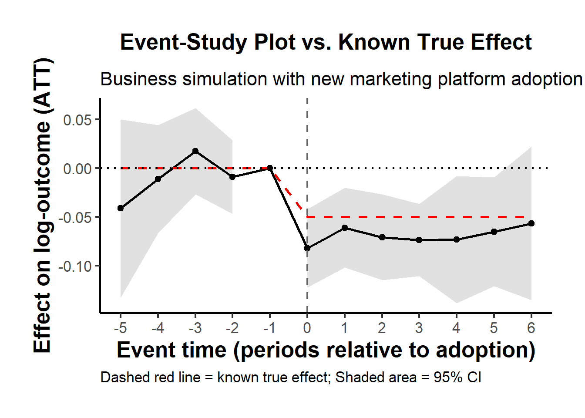
Figure 39.43: ETWFE event-study point estimates and 95% confidence band overlaid on the known true dynamic effect from the data-generating process.
Solid line and shaded region: the ETWFE point estimates and their 95% confidence intervals, for each event time relative to adoption.
Dashed red line: the true effect that we built into the DGP.
If the estimation works well (and your sample is big enough), the estimated event-study effects should hover near the dashed red line post-treatment, and near zero pre-treatment.
Alternatively, we could also use the plot function to produce a quick plot. Figure 39.44 shows the same event-study via the package’s built-in ribbon plot.
plot(
mod_es,
type = "ribbon",
# col = "",# color
xlab = "",
main = "",
sub = "",
# file = "event-study.png", width = 8, height = 5. # save file
)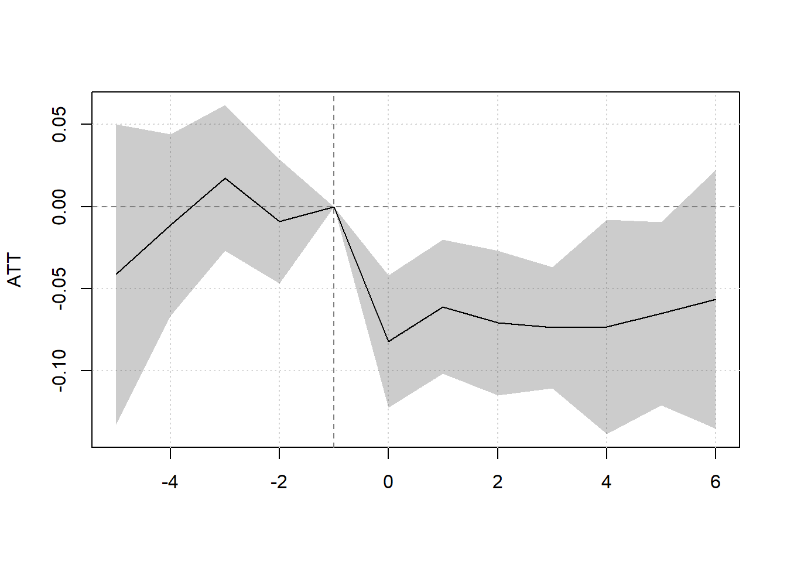
Figure 39.44: Default ribbon plot of the ETWFE event-study from marginaleffects::plot, showing the dynamic ATT estimates with their 95% confidence band.
- Double-check in a regression table (optional)
If you like to see a clean numeric summary of the dynamic estimates by period, you can pipe your event-study object into modelsummary. The chunk below renders the resulting wide-format table.
# 7) Optional table for dynamic estimates
modelsummary(
list("Event-Study" = mod_es),
shape = term + statistic ~ model + event,
gof_map = NA,
coef_map = c(".Dtreat" = "ATT"),
title = "ETWFE Event-Study by Relative Adoption Period",
notes = "Std. errors are clustered by store ID"
)39.16 Modern Concerns in DiD
Roth et al. (2023) provide a comprehensive synthesis of the recent DiD literature; readers may consult that paper as a roadmap to many of the techniques discussed in this chapter, including staggered adoption, heterogeneous treatment effects, parallel-trends sensitivity analysis, and conditional/relaxed identifying assumptions.
A useful way to organize the rest of this chapter is to recognize that “what could go wrong with DiD” decomposes into a small number of recurring failure modes, and that most of the modern toolkit is a targeted response to one (or several) of them. Heterogeneous and time-varying treatment effects break the implicit weighting in two-way fixed effects, motivating the staggered-adoption estimators introduced in Section 39.15 and the Goodman-Bacon decomposition. Departures from parallel trends motivate visual diagnostics in Section 39.2, the placebo tests below, and the partial-identification machinery at the end of this chapter. Selection on observables that vary across treated and control units pulls in matching and the conditional ignorability and overlap assumptions. Functional-form sensitivity, especially with zero-valued outcomes, motivates the changes-in-changes estimator and the proportional-effects approach below. Reading the rest of the chapter as a menu indexed by failure mode (rather than as a list of unrelated diagnostics) makes it easier to know which tool is the right one to reach for, and the closing sections show how a credible DiD analysis layers several of them.
39.16.1 Multiple Treatments
In some settings, researchers encounter two (or more) treatments rather than a single treatment-and-control comparison. This is more than a notational nuisance: with multiple treatments operating on overlapping populations, the standard DiD machinery can collapse identification onto contrasts the analyst did not intend, and the apparent treatment effect can shift depending on which group is implicitly used as a control. Fricke (2017) provides a careful treatment of the identification challenges that arise in this setting, and the principles below distil the practical implications.
Key Principles When Dealing with Multiple Treatments
-
Always include all treatment groups in a single regression model.
- This ensures proper identification of treatment-specific effects while maintaining a clear comparison against the control group.
-
Never use one treated group as a control for the other.
- Running separate regressions for each treatment group can lead to biased estimates because each treatment group may differ systematically from the control group in ways that a separate model cannot fully capture.
-
Compare the significance of treatment effects (\(\delta_1\) vs. \(\delta_2\)).
- Instead of assuming equal effects, we should formally test whether the effects of the two treatments are statistically different using an F-test or Wald test:
\[ H_0: \delta_1 = \delta_2 \]
- If we reject \(H_0\), we conclude that the two treatments have significantly different effects.
39.16.2 Multiple Treatment Groups: Model Specification
A properly specified DiD regression model with two treatments takes the following form:
\[ \begin{aligned} Y_{it} &= \alpha + \gamma_1 Treat1_{i} + \gamma_2 Treat2_{i} + \lambda Post_t \\ &+ \delta_1(Treat1_i \times Post_t) + \delta_2(Treat2_i \times Post_t) + \epsilon_{it} \end{aligned} \]
where:
- \(Y_{it}\) = Outcome variable for individual \(i\) at time \(t\).
- \(Treat1_i\) = 1 if individual \(i\) is in Treatment Group 1, 0 otherwise.
- \(Treat2_i\) = 1 if individual \(i\) is in Treatment Group 2, 0 otherwise.
- \(Post_t\) = 1 for post-treatment period, 0 otherwise.
- DiD coefficients:
- \(\delta_1\) = Effect of Treatment 1.
- \(\delta_2\) = Effect of Treatment 2.
- \(\epsilon_{it}\) = Error term.
39.16.3 Understanding the Control Group in Multiple Treatment DiD
One common concern in multiple-treatment DiD models is how to properly define the control group. A well-specified model ensures that:
- The control group consists only of untreated individuals, not individuals from another treatment group.
- The reference category in the regression represents the control group (i.e., individuals with \(Treat1_i = 0\) and \(Treat2_i = 0\)).
- If \(Treat1_i = 1\), then \(Treat2_i = 0\) and vice versa.
Failing to correctly specify the control group could lead to incorrect estimates of treatment effects. For example, omitting one of the treatment indicators could unintentionally redefine the control group as a mix of treated and untreated individuals.
39.16.4 Alternative Approaches: Separate Regressions vs. One Model
A common question is whether to run one large regression including all treatment groups or to run separate DiD models on subsets of the data. Each approach has implications:
- One Model Approach (Preferred)
- Running one comprehensive regression allows for direct comparison between treatment effects in a statistically valid way.
- The interaction terms (\(\delta_1, \delta_2\)) ensure that each treatment effect is estimated relative to a common control group.
- The F-test (or Wald test) enables a formal test of whether the two treatments have significantly different effects.
- Separate Regressions Approach
- Running separate DiD models for each treatment group can still be valid, but:
- The estimated treatment effects are less efficient because they come from separate samples.
- Comparisons become less straightforward, as they rely on confidence interval overlap rather than direct hypothesis testing.
- If homoscedasticity holds (i.e., equal error variances across groups), the separate regressions approach is unnecessary. The combined model is more efficient.
Thus, unless there is strong justification for separate regressions (e.g., significant heterogeneity in error variance), the one-model approach is preferred.
39.16.5 Handling Treatment Intensity
In some cases, treatments differ not just in type, but also in intensity (e.g., low vs. high treatment exposure). If we observe different levels of treatment intensity, we can model it using a single categorical variable rather than multiple treatment dummies:
Rather than coding separate dummies for each treatment group, we define a multi-valued treatment variable:
\[ Y_{it} = \alpha + \sum_{j=1}^{J} \beta_j (Treatment_j \times Post_t) + \lambda Post_t + \epsilon_{it} \]
where:
- \(Treatment_j\) is a categorical variable indicating whether an individual belongs to the control group, low-intensity treatment, or high-intensity treatment.
- This approach allows for cleaner implementation and avoids excessive interaction terms.
This approach has the advantage of:
Automatically setting the control group as the reference category.
Ensuring correct interpretation of coefficients for different treatment levels.
39.16.6 Considerations When Individuals Can Move Between Treatment Groups
One potential complication in multiple-treatment DiD settings is when individuals can switch treatment groups over time (e.g., moving from low-intensity to high-intensity treatment after policy implementation).
If movement is rare, it may not significantly affect estimates.
If movement is frequent, it creates a challenge in causal identification because treatment effects might be confounded by self-selection.
A possible solution is to use an intention-to-treat (ITT) approach, where treatment assignment is based on the initially assigned group, regardless of whether individuals later switch.
39.16.7 Parallel Trends Assumption in Multiple-Treatment DiD
Just as in standard DiD, a key assumption in multiple-treatment DiD models is that the treatment and control groups would have followed parallel trends in the absence of treatment.
With multiple treatments, we must check pre-trends separately for each treated group against the control group.
If pre-treatment trends are not parallel, we may need to adopt alternative methods such as synthetic control models or event study analyses.
It is worth noting how multiple-treatment settings interact with the staggered-adoption literature. Once treatments differ in timing as well as in type, the pathologies surveyed in Section 39.7 reappear: each treated arm becomes both a treated unit relative to the never-treated and a potential “forbidden comparison” for some other arm in a two-way fixed-effects regression. Reaching for the group-time average treatment effect framework, the cohort ATT estimator, or the stacked DiD design is often more defensible than trying to extend the canonical interaction model to many treatment arms by hand.
39.17 Mediation Under DiD
Mediation analysis helps determine whether a treatment affects the outcome directly or through an intermediate variable (mediator). In a DiD framework, this allows us to separate:
- Direct effects: The effect of the treatment on the outcome independent of the mediator.
- Indirect (mediated) effects: The effect of the treatment that operates through the mediator.
This is useful when a treatment consists of multiple components or when we want to understand mechanisms behind an observed effect.
39.17.1 Mediation Model in DiD
To incorporate mediation, we estimate two equations:
Step 1: Effect of Treatment on the Mediator
\[ M_{it} = \alpha + \gamma Treat_i + \lambda Post_t + \delta (Treat_i \times Post_t) + \epsilon_{it} \] where:
- \(M_{it}\) = Mediator variable (e.g., job search intensity, firm investment, police presence).
- \(\delta\) = Effect of the treatment on the mediator (capturing how the treatment changes \(M\)).
Step 2: Effect of Treatment and Mediator on the Outcome
\[ Y_{it} = \alpha' + \gamma' Treat_i + \lambda' Post_t + \delta' (Treat_i \times Post_t) + \theta M_{it} + \epsilon'_{it} \] where:
- \(Y_{it}\) = Outcome variable (e.g., employment, crime rate, firm performance).
- \(\theta\) = Effect of the mediator on the outcome.
- \(\delta'\) = Direct effect of the treatment (controlling for the mediator).
39.17.2 Interpreting the Results
- If \(\theta\) is statistically significant, it suggests that mediation is occurring (i.e., the treatment affects the outcome partly through the mediator).
- If \(\delta'\) is smaller than \(\delta\), this indicates that part of the treatment effect is explained by the mediator. The remaining portion of \(\delta'\) represents the direct effect.
Thus, we can decompose the total treatment effect as:
\[ \text{Total Effect} = \delta' + (\theta \times \delta) \]
where:
\(\delta'\) = Direct effect (holding the mediator constant).
\(\theta \times \delta\) = Indirect (mediated) effect.
39.17.3 Challenges in Mediation Analysis for DiD
Mediation in a DiD setting introduces several challenges that require careful consideration:
- Potential Confounding of the Mediator
- A key assumption is that no unmeasured confounders affect both the mediator and the outcome.
- If such confounders exist, estimates of \(\theta\) may be biased.
- Mediator-Outcome Endogeneity
- If the mediator is itself influenced by unobserved factors correlated with the outcome, it introduces endogeneity, making direct OLS estimates of \(\theta\) problematic.
- For example, in a crime policy evaluation:
- The number of police officers (mediator) may be influenced by crime rates (outcome), leading to reverse causality.
- Interaction Between Multiple Mediators
- If there are multiple mediators (e.g., a policy that increases both police presence and surveillance cameras), they may interact with each other.
- A useful test is to regress each mediator on treatment and other mediators. If a mediator predicts another, their effects are not independent, complicating interpretation.
39.17.4 Alternative Approach: Instrumental Variables for Mediation
One way to address mediator endogeneity is to use instrumental variables, where treatment serves as an instrument for the mediator:
Two-Stage Estimation:
- First Stage: Predict the Mediator Using the Treatment \[ M_{it} = \alpha + \pi Treat_i + \lambda Post_t + \delta (Treat_i \times Post_t) + \nu_{it} \]
- Second Stage: Predict the Outcome Using the Instrumented Mediator \[ Y_{it} = \alpha' + \gamma' Treat_i + \lambda' Post_t + \phi \hat{M}_{it} + \epsilon'_{it} \]
- Here, \(\hat{M}_{it}\) (predicted values from the first stage) replaces \(M_{it}\), eliminating endogeneity concerns if the exclusion restriction holds (i.e., treatment only affects \(Y\) through \(M\)).
Key Limitation of IV Approach
- The IV strategy assumes that treatment affects the outcome only through the mediator, which may be too strong of an assumption in complex policy settings.
39.18 Assumptions
The list of assumptions below is best read as a mapping between identification conditions and diagnostics. Parallel trends is tested visually and via event studies, then stress-tested with partial identification when it is suspect. No anticipation is examined in pre-period event-study coefficients and through placebo tests. Stable composition and exogeneity of shocks justify the design itself and connect to the broader limitations of quasi-experiments. Overlap and effect homogeneity are the assumptions that, when violated, push the analyst toward matching methods and modern heterogeneity-robust estimators in Section 39.15. Each subsection below also notes the failure mode in language that can be cross-referenced back to the corresponding diagnostic later in the chapter.
- Parallel Trends Assumption
The Difference-in-Differences estimator relies on a key identifying assumption: the parallel trends assumption. This assumption states that, in the absence of treatment, the average outcome for the treated group would have evolved over time in the same way as for the control group.
Let:
\(Y_{it}(0)\) denote the potential outcome without treatment for unit \(i\) at time \(t\)
\(D_i = 1\) if unit \(i\) is in the treatment group, and \(D_i = 0\) if in the control group
Then, the parallel trends assumption can be written as:
\[ E[Y_{it}(0) \mid D_i = 1] - E[Y_{it}(0) \mid D_i = 0] = \Delta_0 \quad \text{for all } t, \]
where \(\Delta_0\) is a constant difference over time in the untreated potential outcomes between the two groups. This assumption does not require the levels of outcomes to be the same between groups, only that the difference remains constant over time.
In other words, the gap between treatment and control groups in the absence of treatment must remain stable. If this holds, any deviation from that stable difference after the treatment is attributed to the causal effect of the treatment.
It is important to understand how the parallel trends assumption compares to other, stronger assumptions:
-
Same untreated levels across groups:
A stronger assumption would require that the treated and control groups have identical untreated outcomes at all times:\[ E[Y_{it}(0) \mid D_i = 1] = E[Y_{it}(0) \mid D_i = 0] \quad \text{for all } t \]
This is often unrealistic in observational settings, where baseline characteristics typically differ between groups.
-
No change in untreated outcomes over time:
Another strong assumption is that untreated outcomes remain constant over time, for both groups:\[ E[Y_{it}(0)] = E[Y_{i,t'}(0)] \quad \text{for all } i \text{ and times } t, t' \]
This implies no secular trends, which is rarely plausible in real-world applications where outcomes (e.g., sales, earnings, health metrics) naturally evolve over time.
The parallel trends assumption is weaker than both of these and is generally more defensible, especially when supported by pre-treatment data.
DiD is appropriate when:
You have pre-treatment and post-treatment outcome data
You have clearly defined treatment and control groups
The parallel trends assumption is plausible
Avoid using DiD when:
Treatment assignment is not random or quasi-random
Unobserved confounders may cause the groups to evolve differently over time
Testing Parallel Trends: Prior Parallel Trends Test.
- No Anticipation Effect (Pre-Treatment Exogeneity)
Individuals or groups should not change their behavior before the treatment is implemented in expectation of the treatment.
If units anticipate the treatment and adjust their behavior beforehand, it can introduce bias in the estimates.
- Exogenous Treatment Assignment
- Treatment should not be assigned based on potential outcomes.
- Ideally, assignment should be as good as random, conditional on observables.
- Stable Composition of Groups (No Attrition or Spillover)
- Treatment and control groups should remain stable over time.
- There should be no selective attrition (where individuals enter/leave due to treatment).
- No spillover effects: Control units should not be indirectly affected by treatment.
- No Simultaneous Confounding Events (Exogeneity of Shocks)
- There should be no other major shocks that affect treatment/control groups differently at the same time as treatment implementation.
- Random Sampling (or Representative Sampling)
Assumption: The units (e.g., individuals, firms, regions) in the treatment and control groups are drawn from the same population, or at least from populations that would follow parallel trends in the absence of treatment.
Implication: Ensures external validity. It allows the DID estimator to generalize to the population of interest and prevents selection bias that would arise if treated and control units were systematically different at baseline.
- Overlap (also called Common Support)
Assumption: There is a positive probability of being treated or untreated for all units. Formally, for any covariate profile, there must be both treated and control units.
Implication: Without overlap, it becomes impossible to construct a valid counterfactual for some treated units. This assumption is especially important in staggered or generalized DID settings where treatment timing varies.
Diagnostic: One can assess this assumption using propensity score distributions or visualizations (e.g., covariate balance plots).
- Effect Additivity (also called Constant Treatment Effect or Additive Structure or Effect Homogeneity)
Assumption: The treatment effect is additive and homogeneous across units and time, meaning that the treatment only shifts the outcome level, not its trend or curvature. In the simplest form: \(Y_{it}(1) - Y_{it}(0) = \delta\) for all \(i\),\(t\)
Implication: This assumption is not required for identification per se, but it simplifies estimation and interpretation. Violations may bias estimates if treatment effects vary in ways that interact with time or unit characteristics.
Alternative Approaches: More recent DID methods (e.g., Callaway & Sant’Anna, Sun & Abraham) relax this assumption by allowing treatment effect heterogeneity.
In a standard DID setup, researchers often use the phrases “effect additivity” and “effect homogeneity” interchangeably, because the customary linear-in-levels model embeds both ideas. Strictly speaking, however, they are not identical (Table 39.30).
| Concept | What it literally requires | What it rules out | Relationship |
|---|---|---|---|
| Effect Additivity | Treated potential outcome equals untreated potential outcome plus a constant shift: \(Y_{it}(1)=Y_{it}(0)+\tau\). The treatment enters the outcome additively and the size of the shift does not depend on the baseline level of the outcome. | Any multiplicative or nonlinear functional form of the effect (e.g., a constant percentage change). | Implies a constant level effect. Guarantees homogeneity and linearity. |
| Effect Homogeneity | The treatment effect \(\tau\) is constant across units and periods: \(\tau_i=\tau_t=\tau\). It says nothing about whether that constant is added, multiplied, or otherwise applied. | Unit-specific or time-varying treatment effects. | A broader statement. You can have homogeneous multiplicative effects (\(Y_{it}(1)=Y_{it}(0)\times\lambda\) with constant \(\lambda\)). Those satisfy homogeneity but violate additivity. |
Why they get conflated in practice
Linear DID regression in levels.
The canonical two-way fixed-effects model, \(Y_{it}= \alpha_i+\lambda_t+\tau D_{it}+\varepsilon_{it}\) identifies \(\tau\) only if (a) the effect is additive and (b) the constant \(\tau\) is the same for every \(i\), \(t\). Hence both additivity and homogeneity are baked in; many textbooks label the joint restriction simply “homogeneous treatment effects”Terminology drift.
Recent heterogeneity papers contrast “TWFE with homogeneous effects” against “heterogeneous effects” without separating additivity from constancy, so the two terms are often treated as synonyms even though, conceptually, homogeneity could hold on another scale.
Practical implications
If you keep the outcome in levels, invoking homogeneous treatment effects effectively commits you to additivity as well.
If the outcome is log-transformed, homogeneous effects correspond to a constant percentage change, which is multiplicative, so additivity no longer holds.
Robustness exercises that re-estimate the model in logs, differences, or growth rates test sensitivity to the additivity choice; stability across scales supports the idea that it is the constancy, not the functional form, that drives the results.
39.18.1 Prior Parallel Trends Test
The parallel trends assumption ensures that, absent treatment, the treated and control groups would have followed similar outcome trajectories. Testing this assumption involves visualization and statistical analysis.
Marcus and Sant’Anna (2021) discuss pre-trend testing in staggered DiD.
- Visual Inspection: Outcome Trends and Treatment Rollout
- Plot raw outcome trends for both groups before and after treatment.
- Use event-study plots to check for pre-trend violations and anticipation effects.
- Visualization tools like
ggplot2orpanelViewhelp illustrate treatment timing and trends.
- Event-Study Regressions
A formal test for pre-trends uses the event-study model:
\[ Y_{it} = \alpha + \sum_{k=-K}^{K} \beta_k 1(T = k) + X_{it} \gamma + \lambda_i + \delta_t + \epsilon_{it} \]
where:
\(1(T = k)\) are time dummies for periods before and after treatment.
\(\beta_k\) captures deviations in outcomes before treatment; these should be statistically indistinguishable from zero if parallel trends hold.
\(\lambda_i\) and \(\delta_t\) are unit and time fixed effects.
\(X_{it}\) are optional covariates.
Violation of parallel trends occurs if pre-treatment coefficients (\(\beta_k\) for \(k < 0\)) are statistically significant.
- Statistical Test for Pre-Treatment Trend Differences
Using only pre-treatment data, estimate:
\[ Y = \alpha_g + \beta_1 T + \beta_2 (T \times G) + \epsilon \]
where:
\(\beta_2\) measures differences in time trends between groups.
If \(\beta_2 = 0\), trends are parallel before treatment.
Considerations:
- Alternative functional forms (e.g., polynomials or nonlinear trends) can be tested.
- If \(\beta_2 \neq 0\), potential explanations include:
- Large sample size driving statistical significance.
- Small deviations in one period disrupting an otherwise stable trend.
While time fixed effects can partially address violations of parallel trends (and are commonly used in modern research), they may also absorb part of the treatment effect, especially when treatment effects vary over time (Wolfers 2003).
Debate on Parallel Trends
- Levels vs. Trends: Kahn-Lang and Lang (2020) argue that similarity in levels is also crucial. If treatment and control groups start at different levels, why assume their trends will be the same?
- Solution:
- Plot time series for the treated and control groups.
- Use matched samples to improve comparability (Ryan et al. 2019) (useful when parallel trends assumption is questionable).
- If levels differ significantly, functional form assumptions become more critical and must be justified.
- Solution:
- Power of Pre-Trend Tests:
- Pre-trend tests often lack statistical power, making false negatives common (Roth 2022).
- See: PretrendsPower and pretrends (for adjustments).
- Outcome Transformations Matter:
- The parallel trends assumption is specific to both the transformation and units of the outcome variable (Roth and Sant’Anna 2023).
- Conduct falsification tests to check whether the assumption holds under different functional forms.
library(tidyverse)
library(fixest)
od <- causaldata::organ_donations %>%
# Use only pre-treatment data
filter(Quarter_Num <= 3) %>%
# Treatment variable
dplyr::mutate(California = State == 'California')
# use my package
causalverse::plot_par_trends(
data = od,
metrics_and_names = list("Rate" = "Rate"),
treatment_status_var = "California",
time_var = list(Quarter_Num = "Time"),
display_CI = F
)
#> [[1]]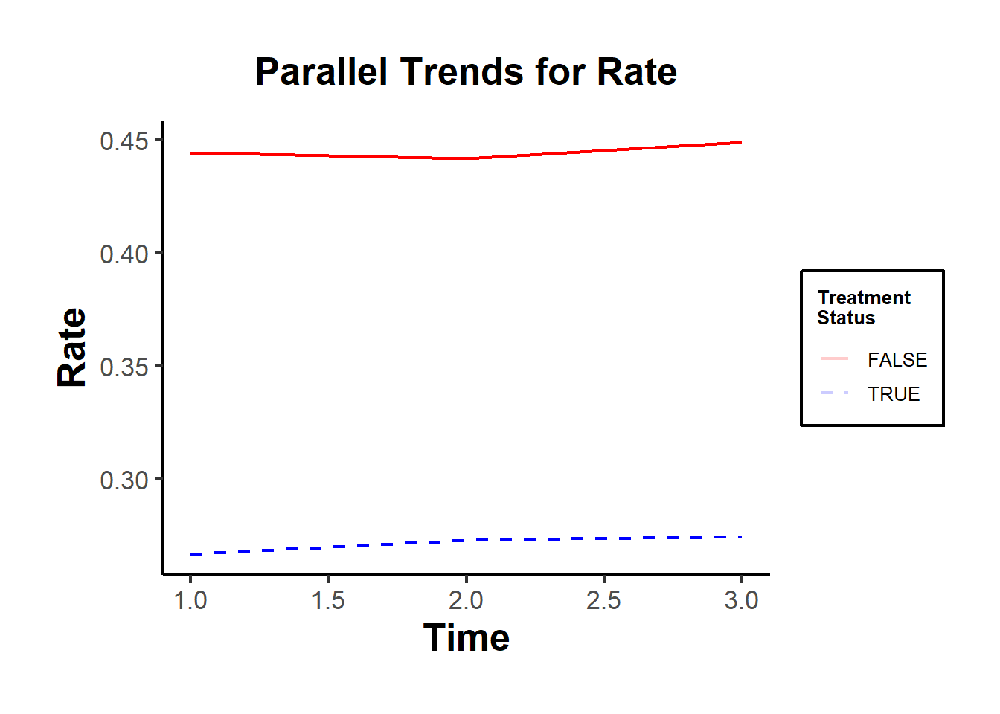
Figure 39.45: Parallel trends for the rate outcome between California and control units.
# do it manually
# always good but plot the dependent out
od |>
# group by treatment status and time
dplyr::group_by(California, Quarter) |>
dplyr::summarize_all(mean) |>
dplyr::ungroup() |>
# view()
ggplot2::ggplot(aes(x = Quarter_Num, y = Rate, color = California)) +
ggplot2::geom_line() +
causalverse::ama_theme()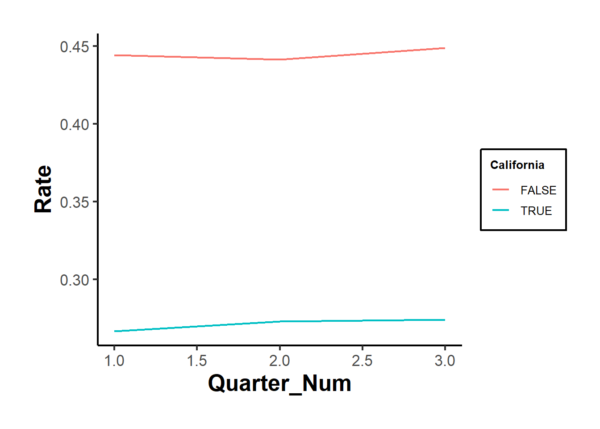
Figure 39.46: Manual parallel trends plot showing average rates.
Figures 39.45 and 39.46 show the raw outcomes by periods, while Figure 39.47 shows their coefficient estimates’ version.
# but it's also important to use statistical test
prior_trend <- fixest::feols(Rate ~ i(Quarter_Num, California) |
State + Quarter,
data = od)
fixest::coefplot(prior_trend, grid = F)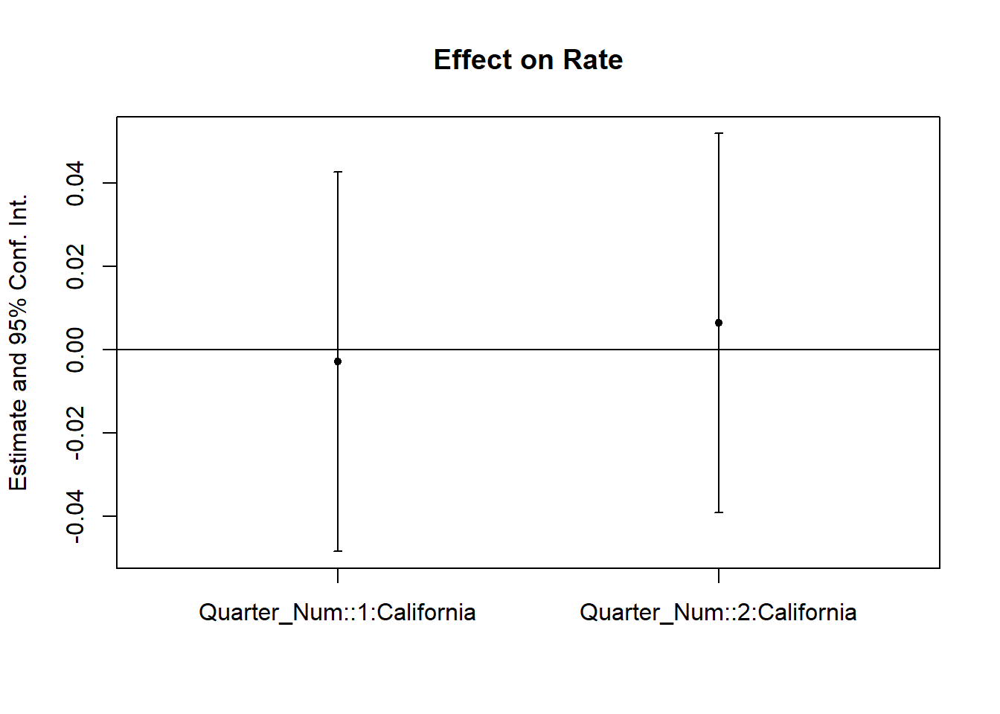
Figure 39.47: Coefficient plot for the prior-trend analysis.
# fixest::iplot(prior_trend, grid = F)If one of the periods is significantly different from 0, our parallel trends assumption is not plausible.
In cases where the parallel trends assumption is questionable, researchers should consider methods for assessing and addressing potential violations. Some key approaches are discussed in Rambachan and Roth (2023):
Imposing Restrictions: Constrain how different the post-treatment violations of parallel trends can be relative to pre-treatment deviations.
Partial Identification: Rather than assuming a single causal effect, derive bounds on the ATT.
Sensitivity Analysis: Evaluate how sensitive the results are to potential deviations from parallel trends.
To implement these approaches, the HonestDiD package by Rambachan and Roth (2023) provides robust statistical tools. The demonstration below builds a panel in which the parallel trends assumption fails in a way that an event study cannot flag: the treated group suffers a one-time dip in the reference period \(t = 5\) (an anticipation shock), so every event-study coefficient is measured against a contaminated baseline. The true post-treatment effect is 1, yet the conventional confidence interval for the period 6 effect sits well above it.
library(fixest)
library(HonestDiD)
set.seed(123)
n_id <- 500
n_t <- 10
panel <- expand.grid(id = 1:n_id, t = 1:n_t)
panel$g <- as.integer(panel$id <= n_id / 2)
unit_fe <- rnorm(n_id)
time_fe <- rnorm(n_t, 0, 0.1)
# True effect of 1 from t = 6 onward, but the reference period t = 5
# suffers a one-time dip of 1 in the treated group
panel$y <- 1 + 2 * panel$g +
1 * (panel$t >= 6 & panel$g == 1) -
1 * (panel$t == 5 & panel$g == 1) +
unit_fe[panel$id] + time_fe[panel$t] + rnorm(nrow(panel), 0, 5)
es <- feols(y ~ i(t, g, ref = 5) | id + t, cluster = "id", data = panel)
iplot(es, main = "Event study with a contaminated reference period")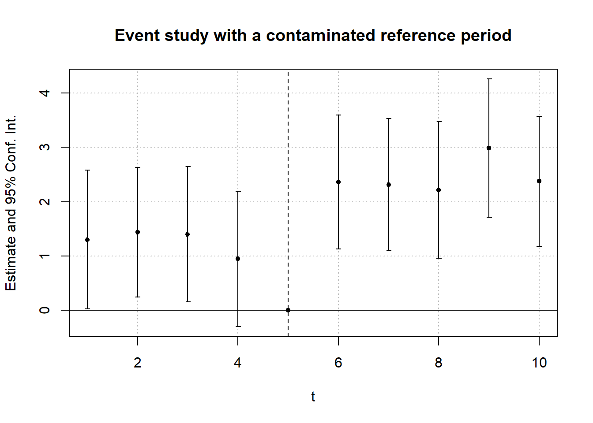
The event-study coefficients feed directly into HonestDiD, which needs only the coefficient vector and its variance-covariance matrix. The conventional confidence set treats the pre-period deviations as zero; the robust confidence sets bound the post-treatment violation by a multiple \(\bar{M}\) of the largest pre-treatment violation (the relative magnitudes restriction).
betahat <- coef(es)
sigma <- vcov(es)
npre <- 4
npost <- 5
# Conventional CI for the period 6 effect (excludes the true effect of 1)
orig_ci <- constructOriginalCS(
betahat = betahat, sigma = sigma,
numPrePeriods = npre, numPostPeriods = npost,
l_vec = basisVector(1, npost)
)
orig_ci
#> # A tibble: 1 × 4
#> lb[,1] ub[,1] method Delta
#> <dbl> <dbl> <chr> <lgl>
#> 1 1.13 3.59 Original NA
# Robust CIs: post-treatment violation at most Mbar times the pre-treatment one
rm_ci <- createSensitivityResults_relativeMagnitudes(
betahat = betahat, sigma = sigma,
numPrePeriods = npre, numPostPeriods = npost,
l_vec = basisVector(1, npost),
Mbarvec = seq(0.5, 1.5, by = 0.5)
)
rm_ci
#> # A tibble: 3 × 5
#> lb ub method Delta Mbar
#> <dbl> <dbl> <chr> <chr> <dbl>
#> 1 0.891 4.23 C-LF DeltaRM 0.5
#> 2 0.389 5.13 C-LF DeltaRM 1
#> 3 -0.389 6.06 C-LF DeltaRM 1.5
createSensitivityPlot_relativeMagnitudes(rm_ci, orig_ci)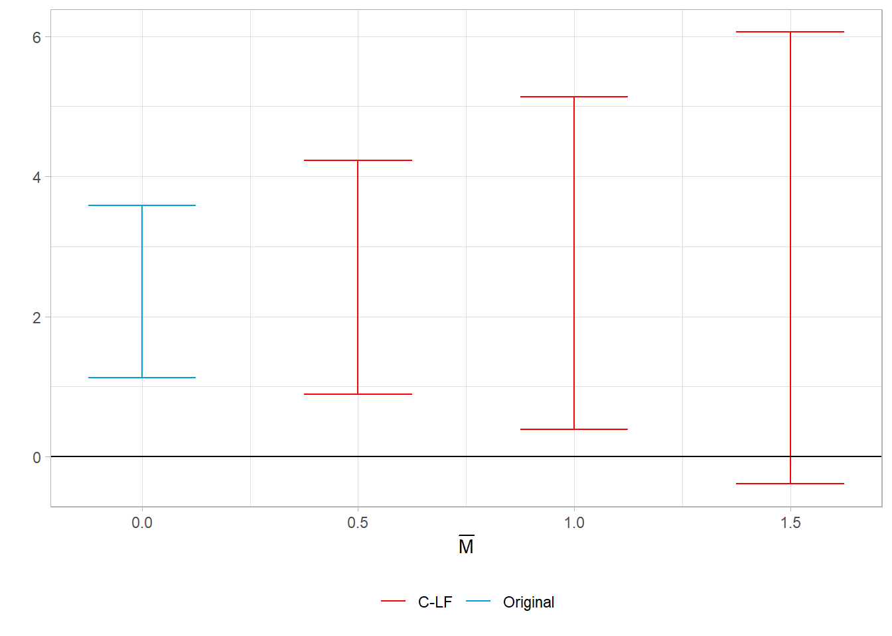
At \(\bar{M} = 1\), meaning the post-treatment violation may be as large as the largest pre-treatment violation, the robust confidence set contains the true effect of 1 that the conventional interval excludes. The point at which the robust set first includes zero is the breakdown value, a single number summarizing how severe a violation would need to be to erase the finding.
When the worry is a smooth secular trend rather than a discrete shock, the smoothness restriction is the natural alternative: it allows the counterfactual trend to deviate from linearity by at most \(M\) per period.
sm_ci <- createSensitivityResults(
betahat = betahat, sigma = sigma,
numPrePeriods = npre, numPostPeriods = npost,
l_vec = basisVector(1, npost),
Mvec = seq(0, 0.2, by = 0.1)
)
sm_ci
#> # A tibble: 3 × 5
#> lb ub method Delta M
#> <dbl> <dbl> <chr> <chr> <dbl>
#> 1 1.05 3.53 FLCI DeltaSD 0
#> 2 1.10 3.85 FLCI DeltaSD 0.1
#> 3 1.15 4.31 FLCI DeltaSD 0.2
createSensitivityPlot(sm_ci, orig_ci)Reporting either family of robust confidence sets alongside the conventional event study, together with the breakdown value, has become the standard way to communicate how much the conclusions lean on the parallel trends assumption. Averaging the post-treatment effects instead of isolating one period only requires replacing l_vec with a vector of equal weights.
Alternatively, Ban and Kedagni (2022) propose a method that incorporates pre-treatment covariates as an information set and makes an assumption about the selection bias in the post-treatment period. Specifically, they assume that the selection bias lies within the convex hull of all pre-treatment selection biases. Under this assumption:
They identify a set of possible ATT values.
With a stronger assumption on selection bias, grounded in policymakers’ perspectives, they can estimate a point estimate of ATT.
Another useful tool for assessing parallel trends is the pretrends package by Roth (2022), which provides formal pre-trend tests:
# Install and load the pretrends package
# install.packages("pretrends")
# library(pretrends)39.18.2 Placebo Test
A placebo test is a diagnostic tool used in Difference-in-Differences analysis to assess whether the estimated treatment effect is driven by pre-existing trends rather than the treatment itself. The idea is to estimate a treatment effect in a scenario where no actual treatment occurred. If a significant effect is found, it suggests that the parallel trends assumption may not hold, casting doubt on the validity of the causal inference.
Placebo tests sit alongside the prior parallel-trends test in a complementary role: where the event-study test asks whether deviations are visible in the data we have, the placebo test asks whether the estimator generates spurious effects when the treatment label is moved to a unit or period where, by construction, no causal effect can exist. A clean event study without a clean placebo is suggestive but unsatisfying, and a clean placebo with a noisy event study is harder to dismiss than the raw \(p\)-values alone would imply. Treating the two as a pair helps build the kind of layered defense of parallel trends that complements the partial-identification analysis later in this chapter.
Types of Placebo DiD Tests
- Group-Based Placebo Test
- Assign treatment to a group that was never actually treated and rerun the DiD model.
- If the estimated treatment effect is statistically significant, this suggests that differences between groups, not the treatment, are driving results.
- This test helps rule out the possibility that the estimated effect is an artifact of unobserved systematic differences.
A valid treatment effect should be consistent across different reasonable control groups. To assess this:
Rerun the DiD model using an alternative but comparable control group.
Compare the estimated treatment effects across multiple control groups.
If results vary significantly, this suggests that the choice of control group may be influencing the estimated effect, indicating potential selection bias or unobserved confounding.
- Time-Based Placebo Test
- Conduct DiD using only pre-treatment data, pretending that treatment occurred at an earlier period.
- A significant estimated treatment effect implies that differences in pre-existing trends, not treatment, are responsible for observed post-treatment effects.
- This test is particularly useful when concerns exist about unobserved shocks or anticipatory effects.
Random Reassignment of Treatment
- Keep the same treatment and control periods but randomly assign treatment to units that were not actually treated.
- If a significant DiD effect still emerges, it suggests the presence of biases, unobserved confounding, or systematic differences between groups that violate the parallel trends assumption.
Procedure for a Placebo Test
- Using Pre-Treatment Data Only
A robust placebo test often involves analyzing only pre-treatment periods to check whether spurious treatment effects appear. The procedure includes:
Restricting the sample to pre-treatment periods only.
Assigning a fake treatment period before the actual intervention.
Testing a sequence of placebo cutoffs over time to examine whether different assumed treatment timings yield significant effects.
Generating random treatment periods and using randomization inference to assess the sampling distribution of the placebo effect.
Estimating the DiD model using the fake post-treatment period (
post_time = 1).Interpretation: If the estimated treatment effect is statistically significant, this indicates that pre-existing trends (not treatment) might be influencing results, violating the parallel trends assumption.
- Using Control Groups for a Placebo Test
If multiple control groups are available, a placebo test can also be conducted by:
Dropping the actual treated group from the analysis.
Assigning one of the control groups as a fake treated group.
Estimating the DiD model and checking whether a significant effect is detected.
-
Interpretation:
If a placebo effect appears (i.e., the estimated treatment effect is significant), it suggests that even among control groups, systematic differences exist over time.
However, this result is not necessarily disqualifying. Some methods, such as Synthetic Control, explicitly model such differences while maintaining credibility.
# Load necessary libraries
library(tidyverse)
library(fixest)
library(ggplot2)
library(causaldata)
# Load the dataset
od <- causaldata::organ_donations %>%
# Use only pre-treatment data
dplyr::filter(Quarter_Num <= 3) %>%
# Create fake (placebo) treatment variables
dplyr::mutate(
FakeTreat1 = as.integer(State == 'California' &
Quarter %in% c('Q12011', 'Q22011')),
FakeTreat2 = as.integer(State == 'California' &
Quarter == 'Q22011')
)
# Estimate the placebo effects using fixed effects regression
clfe1 <- fixest::feols(Rate ~ FakeTreat1 | State + Quarter, data = od)
clfe2 <- fixest::feols(Rate ~ FakeTreat2 | State + Quarter, data = od)
# Display the regression results
fixest::etable(clfe1, clfe2)
#> clfe1 clfe2
#> Dependent Var.: Rate Rate
#>
#> FakeTreat1 0.0061 (0.0195)
#> FakeTreat2 -0.0017 (0.0195)
#> Fixed-Effects: --------------- ----------------
#> State Yes Yes
#> Quarter Yes Yes
#> _______________ _______________ ________________
#> S.E. type IID IID
#> Observations 81 81
#> R2 0.99377 0.99376
#> Within R2 0.00192 0.00015
#> ---
#> Signif. codes: 0 '***' 0.001 '**' 0.01 '*' 0.05 '.' 0.1 ' ' 1
# Extract coefficients and confidence intervals
coef_df <- tibble(
Model = c("FakeTreat1", "FakeTreat2"),
Estimate = c(coef(clfe1)["FakeTreat1"], coef(clfe2)["FakeTreat2"]),
SE = c(summary(clfe1)$coeftable["FakeTreat1", "Std. Error"],
summary(clfe2)$coeftable["FakeTreat2", "Std. Error"]),
Lower = Estimate - 1.96 * SE,
Upper = Estimate + 1.96 * SE
)
# Plot the placebo effects
ggplot(coef_df, aes(x = Model, y = Estimate)) +
geom_point(size = 3, color = "blue") +
geom_errorbar(aes(ymin = Lower, ymax = Upper), width = 0.2, color = "blue") +
geom_hline(yintercept = 0, linetype = "dashed", color = "red") +
theme_minimal() +
labs(
title = "Placebo Treatment Effects",
y = "Estimated Effect on Organ Donation Rate",
x = "Placebo Treatment"
)Figure 39.48: Placebo treatment effects on organ donation rate.
We would like the “supposed” DiD to be insignificant (Figure 39.48).
39.19 Robustness Checks
A well-executed Difference-in-Differences analysis requires robustness checks to verify the validity of estimated treatment effects and best practices to ensure methodological rigor. Whereas the prior parallel-trends test and the placebo test interrogate the identifying assumption, the checks below interrogate the modeling choices layered on top of it: the time window, the functional form for trends, the choice of outcome, and the inclusion of an additional comparison dimension via triple differences. Stability of the estimate across these choices is what allows a reader to attribute the result to the policy variation rather than to a fortunate specification. The broader catalog of robustness checks for quasi-experimental designs and the discussion of coefficient stability bounds elsewhere in the book extend the same logic.
39.19.1 Robustness Checks to Strengthen Causal Interpretation
Once the parallel trends assumption is assessed, additional robustness tests ensure that treatment effects are not driven by confounding factors or modeling choices.
- Varying the Time Window
- Shorter time windows reduce exposure to long-term confounders but risk losing statistical power.
- Longer time windows capture persistent effects but may introduce unrelated policy changes.
- Solution: Estimate the DiD model across different time horizons and check if results are stable.
- Higher-Order Polynomial Time Trends
- Standard DiD models assume a linear time trend.
- If trends are nonlinear, this assumption may be too restrictive.
- Solution: Introduce quadratic or cubic time trends and verify whether results hold.
- Testing Alternative Dependent Variables
- The treatment should only affect the expected dependent variable.
- A robustness check involves running the DiD on unrelated dependent variables.
- If treatment effects appear where they should not, this signals a possible identification problem.
- Triple-Difference (DDD) Strategy
A Triple-Difference (DDD) model adds an additional comparison group to address remaining biases:
\[ \begin{aligned} Y_{ijt} &= \alpha + \gamma Treat_{i} + \lambda Post_t + \theta Group_j + \delta_1 (Treat_i \times Post_t) \\ &+ \delta_2 (Treat_i \times Group_j) + \delta_3 (Post_t \times Group_j) \\ &+ \delta_4 (Treat_i \times Post_t \times Group_j) + \epsilon_{ijt} \end{aligned} \]
where:
\(Group_j\) represents a subgroup within treatment/control (e.g., high- vs. low-intensity exposure).
\(\delta_4\) captures the DDD effect, which removes residual biases present in the standard DiD model.
39.19.2 Best Practices for Reliable DiD Implementation
To improve the credibility and transparency of DiD estimates, researchers should adhere to the following best practices:
- Documenting Treatment Cohorts
- Clearly report the number of treated and control units over time.
- If treatment is staggered, adjust for different exposure durations.
- Checking Covariate Balance & Overlap
- Verify whether the distribution of covariates is similar across treatment and control groups.
- If treatment and control groups differ significantly, consider using matching methods.
- Conducting Sensitivity Analyses for Parallel Trends
- Apply alternative weighting schemes (e.g., entropy balancing) to reduce dependence on model assumptions.
- Use
honestDiDto test robustness under different parallel trends violations.
39.20 Concerns in DID
The catalogue below collects the issues that recur most often in applied work and pairs each with the diagnostic or estimator that addresses it. Several of them (heterogeneous effects, treatment timing, questionable counterfactuals) feed directly into the modern staggered-adoption literature in Section 39.15; others (selection on unobservables, Ashenfelter’s dip) connect more naturally to Rosenbaum bounds and to the broader conditional ignorability discussion. The point is not that every analysis must address every concern, but that a credible DiD application explicitly considers which of them are plausible in the context at hand and chooses diagnostics accordingly.
39.20.1 Limitations and Common Issues
- Functional Form Dependence
- If the response to treatment is nonlinear, compare high- vs. low-intensity groups.
- Selection on (Time-Varying) Unobservables
- Use Rosenbaum Bounds to check the sensitivity of estimates to unobserved confounders.
- Long-Term Effects
- Parallel trends are more reliable in short time windows.
- Over long periods, other confounding factors may emerge.
- Heterogeneous Effects
- Treatment intensity (e.g., different doses) may vary across groups, leading to different effects.
- Ashenfelter’s Dip (Ashenfelter 1978)
- Participants in job training programs often experience earnings drops before enrolling, making them systematically different from nonparticipants.
- Fix: Compute long-run differences, excluding periods around treatment, to test for sustained impact (Proserpio and Zervas 2017; Heckman et al. 1999; Jepsen et al. 2014).
- Lagged Treatment Effects
- If effects are not immediate, using a lagged dependent variable \(Y_{it-1}\) may be more appropriate (Blundell and Bond 1998).
- Bias from Unobserved Factors Affecting Trends
- If external shocks influence treatment and control groups differently, this biases DiD estimates.
- Correlated Observations
- Standard errors should be clustered appropriately.
- Incidental Parameters Problem (Lancaster 2000)
- Always prefer individual and time fixed effects to reduce bias.
- Treatment Timing and Negative Weights
- If treatment timing varies across units, negative weights can arise in standard DiD estimators when treatment effects are heterogeneous (Athey and Imbens 2022; Borusyak et al. 2024; Goodman-Bacon 2021). The Goodman-Bacon decomposition is the standard diagnostic for the presence and severity of these forbidden comparisons.
-
Fix: Use estimators from Callaway and Sant’Anna (2021) and De Chaisemartin and d’Haultfoeuille (2020) (
didpackage). Specifically, the group-time ATT estimator and the switching-DiD estimator avoid the contaminated comparisons that produce negative weights, and the stacked DiD design provides a transparent alternative when the analyst prefers to keep a single regression. - If expecting lags and leads, see Sun and Abraham (2021), whose cohort ATT approach generalizes naturally to event-study settings.
- Treatment Effect Heterogeneity Across Groups
- If treatment effects vary across groups and interact with treatment variance, standard estimators may be invalid (Gibbons et al. 2018). Beyond the staggered-adoption tools above, the reshaped IPW TWFE estimator and the matrix-completion estimator are useful when heterogeneity is suspected to load on covariates or on idiosyncratic unit-time shocks rather than purely on cohort.
- Endogenous Timing
If the timing of units can be influenced by strategic decisions in a DID analysis, an instrumental variable approach with a control function can be used to control for endogeneity in timing. See Section 43 for the IV machinery and Section 35.7.1 for design-based alternatives. A distinct and easily missed version of this problem arises when the adoption date is not chosen by the unit at all but is measured by applying a detector to the outcome; see Outcome-Triggered Treatment Timing below.
- Questionable Counterfactuals
In situations where the control units may not serve as a reliable counterfactual for the treated units, matching methods such as propensity score matching or generalized random forest can be utilized. Additional methods can be found in Matching Methods. When parallel trends in levels is implausible but the treated unit can be approximated by a weighted combination of controls, synthetic control and the hybrid synthetic DiD approach are natural fallbacks; the panel-match estimator and the family of counterfactual estimators extend the idea to richer treatment-history settings.
39.20.2 Outcome-Triggered Treatment Timing
Every concern above takes the adoption date \(G_i\) as something the analyst observes. In a growing class of applications it is not observed but inferred: the researcher runs a detector over the data and declares that unit \(i\) was treated in the first period the detector fires. Technology-adoption studies date a firm’s adoption from the first patent, job posting, or product page mentioning the technology; studies of scientific practice date a researcher’s adoption of a tool from the first paper in which the tool is detected; audit and enforcement studies date exposure from the first flagged filing. In each case the detector is applied to a stream of output that is itself the outcome variable, or is mechanically tied to it.
Renault et al. (2026) show that this construction is enough, on its own, to manufacture a large and statistically significant event-study effect where none exists. Their target is Kusumegi et al. (2025), who date a researcher’s adoption of large language models as the first month in which at least one submitted abstract crosses an LLM-detection threshold, and report sharp productivity gains afterwards. The problem is that a researcher who submits more papers in a month is mechanically more likely to have at least one of them flagged that month, so the estimated adoption date is drawn toward high-output months. Renault et al. (2026) show that random treatment assignment, neutral-keyword triggers, inverted treatment, and pre-ChatGPT placebo windows all reproduce the reported dynamics.
What makes this failure mode worth its own section is that it defeats the diagnostics the rest of this chapter relies on. It is not a heterogeneity problem, so the staggered-adoption estimators of Section 39.15 do not fix it. And, as the derivation below shows, it leaves pre-treatment coefficients exactly flat in expectation, so the prior parallel trends test returns a clean bill of health precisely when the design is broken.
39.20.2.1 Setup and Notation
Let \(Y_{it}\) be the outcome of unit \(i\) in period \(t\), \(t = 1, \dots, T\), measured in units of output (papers, patents, filings, posts). Adoption is never directly observed. Instead, each of the \(Y_{it}\) units of output is passed through a detector that flags it independently with probability \(q \in (0,1)\). Write \(F_{it}\) for the number of flagged units and
\[ D_{it} = \mathbf{1}\{F_{it} \ge 1\}, \qquad G_i = \min\{t : D_{it} = 1\}, \]
with \(G_i = \infty\) (never-treated) if the detector never fires. Event time is \(k = t - G_i\), and the analyst runs the usual event-study regression from the prior parallel trends test,
\[ Y_{it} = \alpha + \sum_{k \neq -1} \beta_k \mathbf{1}\{t - G_i = k\} + \lambda_i + \delta_t + \varepsilon_{it}, \]
normalizing \(\beta_{-1} = 0\).
Assumption 1 (No treatment effect). \(Y_{it}\) is i.i.d. across \(t\) within unit, with mean \(\lambda\), and does not depend on \(G_i\) or on any treatment. Substantively: the null we are simulating under is the sharpest possible one. There is no effect to find, no trend, no anticipation, and no heterogeneity. Anything the event study reports is an artifact.
Assumption 2 (Output-increasing detection). Conditional on \(Y_{it}\), the number of flags \(F_{it} \sim \text{Binomial}(Y_{it}, q)\), independently across \(t\). Substantively: the detector is applied unit-by-unit to output and has no other input. It is not biased, not strategic, and not correlated with anything unobserved; it is simply run more times in a period when more output exists. What would violate it: a detector applied to a fixed-size sample per period regardless of output, or an adoption date taken from an administrative record independent of the outcome.
Note that Assumption 2 is deliberately benign. There is no strategic timing, no anticipation, and no selection on unobservables — exactly the conditions under which the analyst would ordinarily consider the timing exogenous.
39.20.2.2 The Mechanism
Proposition. Under Assumptions 1–2 with \(Y_{it} \sim \text{Poisson}(\lambda)\), the expectation of \(Y_{it}\) conditional on event time takes three values,
\[ E[Y_{it} \mid t < G_i] = \underbrace{\lambda(1-q)}_{\mu^-}, \qquad E[Y_{iG_i}] = \underbrace{\frac{\lambda\left[1 - (1-q)e^{-\lambda q}\right]}{1 - e^{-\lambda q}}}_{\mu^+}, \qquad E[Y_{it} \mid t > G_i] = \lambda, \]
with \(\mu^- < \lambda < \mu^+\). Consequently the population event-study coefficients are
\[ \beta_k = 0 \ \text{ for } k < 0, \qquad \beta_0 = \mu^+ - \mu^-, \qquad \beta_k = \lambda q \ \text{ for } k > 0 . \]
Derivation. Fix a unit and condition on \(G_i = g\). By definition of a first-hitting time, \(G_i = g\) is the event \(\{F_{i1} = 0, \dots, F_{i,g-1} = 0, F_{ig} \ge 1\}\), and because the flags are drawn independently across periods given the outputs, this event restricts each period separately.
For \(t < g\) the restriction is \(F_{it} = 0\). Poisson thinning is what makes this tractable: if \(Y \sim \text{Poisson}(\lambda)\) and \(F \mid Y \sim \text{Binomial}(Y, q)\), then \(F \sim \text{Poisson}(\lambda q)\) and \(Y - F \sim \text{Poisson}(\lambda(1-q))\) independently. Hence \(Y_{it} \mid F_{it} = 0\) is distributed as \(Y - F \sim \text{Poisson}(\lambda(1-q))\), giving \(E[Y_{it} \mid t < g] = \lambda(1-q) = \mu^-\). Crucially this does not depend on \(t\) or on \(g\): every pre-period is depressed by the same amount.
For \(t = g\) the restriction is \(F_{ig} \ge 1\), which occurs with probability \(1 - P(F = 0) = 1 - e^{-\lambda q}\). Decomposing the unconditional mean, \[ \lambda = E[Y] = P(F = 0)\, E[Y \mid F = 0] + P(F \ge 1)\, E[Y \mid F \ge 1] = e^{-\lambda q}\lambda(1-q) + (1 - e^{-\lambda q})\, \mu^+, \] and solving for \(\mu^+\) gives the expression above.
For \(t > g\) there is no restriction at all: once the detector has fired, later periods are unconstrained by the definition of a first hitting time. So \(E[Y_{it} \mid t > g] = \lambda\).
Because all three values are free of \(g\), differencing against the reference period \(k = -1\) (which has mean \(\mu^-\)) delivers the stated \(\beta_k\), and the post-treatment plateau simplifies to \[ \beta_k = \lambda - \lambda(1-q) = \lambda q, \qquad k > 0, \] which is exactly the expected number of flagged units of output per period. \(\square\)
39.20.2.3 Intuition
The event study is not measuring a response to treatment; it is measuring the shadow of the selection rule that defined the treatment date. Pre-treatment periods are, by construction, periods in which the detector failed to fire, and a period with unusually low output is a period in which failure was likely. Conditioning on non-detection therefore selects low draws, dragging every pre-period below the unit’s own mean. The adoption period is the mirror image: it is the period in which detection succeeded, which selects high draws. Post-treatment periods carry no conditioning whatsoever and simply revert to the unconditional mean.
The resulting profile is a step function — depressed, spike, flat-at-normal — and when it is normalized to the last pre-period it reads exactly like the textbook picture of a successful intervention: flat pre-trends, a sharp jump on impact, and a stable positive plateau. Nothing happened. The unit merely returned to its own average after a period of below-average output that the design guaranteed by selecting on it. This is a regression-to-the-mean artifact given a treatment date, and it is closely related to Ashenfelter’s dip (item 5 above) with one important difference: here the dip is not a behavioral fact about program participants but a mechanical consequence of how the analyst constructed \(G_i\).
39.20.2.4 Simulation
The DGP below implements Assumptions 1–2 exactly: i.i.d. Poisson output, no trend, no treatment effect, and an adoption date defined as the first flagged period. The first check is whether the closed-form event-time means hold.
library(fixest)
library(data.table)
# Output is i.i.d. Poisson with no trend and no treatment effect. Each unit of
# output is flagged independently with probability q, and the "adoption date" is
# the first period in which at least one unit is flagged.
sim_trigger_panel <- function(N, Tn, lambda, q, seed = NULL) {
if (!is.null(seed)) set.seed(seed)
Y <- matrix(rpois(N * Tn, lambda), N, Tn)
Fl <- matrix(rbinom(N * Tn, as.vector(Y), q), N, Tn)
D <- Fl >= 1
G <- max.col(D, ties.method = "first")
G[rowSums(D) == 0] <- NA_integer_ # detector never fired
dt <- data.table(
id = rep(1:N, each = Tn),
period = rep(1:Tn, times = N),
y = as.vector(t(Y))
)
dt[, g := G[id]]
dt[]
}
lambda <- 4 # mean units of output per period
q <- 0.05 # per-unit probability of being flagged
Tn <- 12
panel <- sim_trigger_panel(N = 20000, Tn = Tn, lambda = lambda, q = q,
seed = 20260812)
# Closed-form event-time means from the Proposition
p_flag <- 1 - exp(-lambda * q)
mu_minus <- lambda * (1 - q)
mu_plus <- lambda * (1 - (1 - q) * exp(-lambda * q)) / p_flag
theory <- data.frame(
event_time = c("k < 0", "k = 0", "k > 0"),
theory = c(mu_minus, mu_plus, lambda),
simulated = c(
panel[!is.na(g) & period < g, mean(y)],
panel[!is.na(g) & period == g, mean(y)],
panel[!is.na(g) & period > g, mean(y)]
)
)
theory$implied_beta <- theory$theory - mu_minus
round_df <- function(d) {
d[] <- lapply(d, function(x) if (is.numeric(x)) round(x, 3) else x)
d
}
round_df(theory)
#> event_time theory simulated implied_beta
#> 1 k < 0 3.800 3.798 0.000
#> 2 k = 0 4.903 4.897 1.103
#> 3 k > 0 4.000 4.004 0.200The simulated means reproduce \(\mu^- = 3.8\), \(\mu^+ = 4.90\), and \(\lambda = 4\) to three digits. The implied artifacts are a spike of \(\mu^+ - \mu^- \approx 1.10\) on impact and a permanent plateau of \(\lambda q = 0.2\), which on a base of \(4\) is a \(5\%\) “productivity gain” produced by a DGP containing no treatment effect.
Fitting the event-study regression confirms that the regression recovers exactly these numbers, and that the pre-trend diagnostic passes.
panel[, rel := fifelse(is.na(g), 1000L, period - g)]
panel[, relb := pmin(pmax(rel, -5L), 6L)]
panel[is.na(g), relb := -1L] # never-detected units absorbed into the reference
es_trigger <- feols(y ~ i(relb, ref = -1) | id + period,
data = panel, cluster = ~ id)
iplot(es_trigger, main = "",
xlab = "Event time (periods from first detection)",
ylab = "Estimated coefficient", ref.line = -1, pt.join = TRUE)Figure 39.49: Event-study coefficients under outcome-triggered treatment timing. The data-generating process contains no treatment effect of any kind. Pre-treatment coefficients are flat and insignificant, yet the on-impact and post-treatment coefficients are large and highly significant.
coeftable(es_trigger)
#> Estimate Std. Error t value Pr(>|t|)
#> relb::-5 0.047369698 0.02974342 1.5926109 1.112633e-01
#> relb::-4 0.015842380 0.03015126 0.5254300 5.992901e-01
#> relb::-3 0.033954315 0.02689754 1.2623576 2.068348e-01
#> relb::-2 -0.004601109 0.02447811 -0.1879683 8.509034e-01
#> relb::0 1.100741978 0.02200766 50.0163211 0.000000e+00
#> relb::1 0.191990145 0.02305232 8.3284523 8.712100e-17
#> relb::2 0.194304864 0.02443485 7.9519573 1.932795e-15
#> relb::3 0.191303192 0.02596510 7.3677042 1.803352e-13
#> relb::4 0.147272337 0.02768396 5.3197711 1.050155e-07
#> relb::5 0.212675753 0.03033885 7.0100148 2.458825e-12
#> relb::6 0.180268127 0.03304715 5.4548768 4.958805e-08
#> attr(,"type")
#> [1] "Clustered (id)"
# Joint test of the four pre-treatment coefficients
pre_test <- fixest::wald(es_trigger,
paste0("relb::-", 5:2, "$", collapse = "|"),
print = FALSE)
c(F_stat = pre_test$stat, df = pre_test$df1, p_value = pre_test$p)
#> F_stat df p_value
#> 1.0815862 4.0000000 0.3636406The four pre-treatment coefficients are individually insignificant and jointly indistinguishable from zero, while \(\hat\beta_0 \approx 1.10\) and the post-treatment coefficients sit on a plateau near \(0.19\), matching the theoretical \(1.103\) and \(0.200\). An analyst following standard practice would report a passing pre-trend test alongside a highly significant dynamic effect.
To separate the artifact from sampling noise, and to benchmark against the design the book normally assumes, the following Monte Carlo re-runs the experiment \(200\) times under two designs. The first is the outcome-triggered rule. The second permutes the adoption dates across units, which preserves the marginal distribution of \(G_i\) (and therefore the cohort structure, the share of never-treated units, and the event-time sample sizes) while severing the link between a unit’s adoption date and its own output. Because the true effect is zero everywhere, the mean estimate is the bias and the rejection rate is the size of the test.
one_rep <- function(N, Tn, lambda, q, exogenous = FALSE) {
dt <- sim_trigger_panel(N, Tn, lambda, q)
if (exogenous) { # break the output-timing link only
gmap <- sample(dt[, .(g = g[1]), by = id]$g)
dt[, g := gmap[id]]
}
dt[, rel := fifelse(is.na(g), 1000L, period - g)]
dt[, relb := pmin(pmax(rel, -5L), 6L)]
dt[is.na(g), relb := -1L]
fit <- feols(y ~ i(relb, ref = -1) | id + period, data = dt, cluster = ~ id)
ct <- coeftable(fit)
grab <- function(k, j) {
r <- paste0("relb::", k)
if (r %in% rownames(ct)) unname(ct[r, j]) else NA_real_
}
w <- fixest::wald(fit, paste0("relb::-", 5:2, "$", collapse = "|"),
print = FALSE)
c(b0 = grab(0, 1), p0 = grab(0, 4),
b3 = grab(3, 1), p3 = grab(3, 4),
pre_p = unname(w$p))
}
set.seed(20260812)
R <- 200
mc_trigger <- t(replicate(R, one_rep(1500, Tn, lambda, q, exogenous = FALSE)))
mc_exog <- t(replicate(R, one_rep(1500, Tn, lambda, q, exogenous = TRUE)))
summarise_mc <- function(m, label) data.frame(
design = label,
bias_k0 = mean(m[, "b0"]),
rmse_k0 = sqrt(mean(m[, "b0"]^2)),
reject_k0 = mean(m[, "p0"] < 0.05),
bias_k3 = mean(m[, "b3"]),
rmse_k3 = sqrt(mean(m[, "b3"]^2)),
reject_k3 = mean(m[, "p3"] < 0.05),
reject_pretrend = mean(m[, "pre_p"] < 0.05)
)
round_df(rbind(
summarise_mc(mc_trigger, "Outcome-triggered timing"),
summarise_mc(mc_exog, "Exogenous timing")
))
#> design bias_k0 rmse_k0 reject_k0 bias_k3 rmse_k3
#> 1 Outcome-triggered timing 1.098 1.100 1.000 0.180 0.205
#> 2 Exogenous timing -0.005 0.079 0.025 0.009 0.099
#> reject_k3 reject_pretrend
#> 1 0.515 0.025
#> 2 0.055 0.030The contrast is stark. Under exogenous timing the estimator behaves exactly as it should: bias near zero at both event times, and rejection rates of \(0.025\) and \(0.055\) against a nominal \(5\%\). Under outcome-triggered timing the on-impact coefficient is biased by \(1.10\) and rejects in \(100\%\) of replications, while the \(k = 3\) coefficient is biased by \(0.18\) and rejects in \(52\%\) — a test with nominal size \(5\%\) that falsely declares a significant effect in more than half of samples where no effect exists. The final column is the one that should worry practitioners most: the joint pre-trend test rejects in \(2.5\%\) of replications under the broken design, no more often than under the valid one. The pre-trend test has no power against this violation at all, because the Proposition shows the pre-period means are equal to each other. A flat pre-trend is evidence about the pre-period; it is silent about how the treatment date was constructed.
39.20.2.4.1 What Does Not Fix It
Because the symptom — significant dynamic effects in a staggered panel — resembles the heterogeneity problems of Section 39.15, the natural reflex is to reach for a heterogeneity-robust estimator. That reflex fails here.
sa_trigger <- feols(y ~ sunab(g, period) | id + period,
data = panel[!is.na(g)], cluster = ~ id)
sa_ct <- coeftable(sa_trigger)
round(sa_ct[rownames(sa_ct) %in% paste0("period::", -3:4), ], 3)
#> Estimate Std. Error t value Pr(>|t|)
#> period::-3 -0.142 0.030 -4.666 0
#> period::-2 -0.187 0.027 -7.071 0
#> period::0 1.290 0.024 53.685 0
#> period::1 0.390 0.025 15.290 0
#> period::2 0.406 0.027 15.043 0
#> period::3 0.417 0.028 14.772 0
#> period::4 0.367 0.030 12.300 0The Sun and Abraham (2021) estimator returns an on-impact coefficient of \(1.29\) and a post-treatment plateau near \(0.40\) — larger, not smaller, than plain TWFE. This is the expected result: interaction-weighting repairs contaminated comparisons between cohorts, but the contamination here is inside every cohort’s own pre-period, so no reweighting across cohorts can remove it. The same logic applies to Callaway and Sant’Anna (2021) and Borusyak et al. (2024): all of them take \(G_i\) as given.
The Sun–Abraham pre-period coefficients are, however, informative in a way the TWFE ones are not. They are small but strongly significant and negative (\(-0.14\) and \(-0.19\) at \(k = -3\) and \(k = -2\)), because this estimator compares each cohort against later-treated and never-treated units whose pre-period depression is differently timed, so the selection artifact no longer differences out. Running both estimators and noticing that the pre-trend verdict flips between them is a useful warning sign, even though neither delivers an unbiased estimate. It also creates a trap: the natural response to a significant negative pre-trend is to add unit-specific linear trends, which fits the artificial pre-period dip and extrapolates it forward, inflating the post-treatment estimates further. The artifact is a level shift plus a step, not a trend, so trend adjustment can only make matters worse. Clustering, likewise, addresses the standard error and not the estimate; here the point estimate itself is the artifact, so tighter or looser standard errors change nothing.
39.20.2.5 Replication
Renault et al. (2026) work with a reconstruction of the arXiv submission histories underlying Kusumegi et al. (2025). That reconstruction is not distributed with the comment and is not part of this book’s datasets, so the published empirical result is not reproduced here. The simulation above is instead a self-contained replication of the paper’s central claim — that first-detection timing alone generates the reported dynamics — under a DGP transparent enough to admit a closed-form solution.
39.20.2.6 Practical Guidance
The question to ask of any staggered design is not whether the pre-trends are flat but where the treatment date came from. If the answer involves running a classifier, keyword search, or threshold rule over a stream that is the outcome or is mechanically tied to it, the design is suspect regardless of what the event-study plot looks like. Three checks are worth running.
Neutral-trigger placebo. Re-run the entire pipeline with a detector that fires on something irrelevant — a common word, a random subset of output, a fixed per-unit hazard — while preserving the property that firing probability rises with output. Under a genuine effect the placebo returns nothing; under an outcome-triggered artifact it reproduces the original dynamics. This is the sharpest available diagnostic and it is cheap.
Pre-period placebo. Re-run the design on a window ending before the treatment could possibly have existed. Renault et al. (2026) use a pre-ChatGPT window; the analogue in most settings is a window before the technology, policy, or program was available.
Independent dating. The real fix is to date adoption from a source that does not pass through the outcome — an administrative record, a procurement or licensing database, a survey, a disclosure filing. When no such source exists, an alternative is to define \(G_i\) from a rate rather than a count (the first period in which the flagged share exceeds a threshold), which weakens but does not eliminate the dependence on output, or to condition the analysis on units whose output is stable enough that detection probability is roughly constant.
If none of these is available, the honest response is to report the design as descriptive rather than causal. Note also that the artifact scales with \(\lambda q\): it is worst in settings with high output volume and a sensitive detector, and it shrinks as detection approaches certainty (\(q \to 1\), where the first period is always flagged) or vanishing rarity.
39.20.2.7 Pitfalls
- Treating a flat pre-trend as design validation. The Proposition shows pre-period coefficients are flat in expectation under the artifact. A passing pre-trend test is the expected outcome of a broken design here, not evidence against one.
- Dropping the on-impact coefficient. Because \(\beta_0\) is visibly the largest artifact, a tempting response is to drop \(k = 0\) as “contaminated” and read the plateau. But the plateau is an artifact too, of size \(\lambda q\), and it is the one that gets interpreted as the long-run effect.
- Assuming the problem is heterogeneity. Modern staggered estimators leave the artifact intact, and Sun–Abraham makes it larger in the simulation above.
- Assuming a rare detector is safe. Lowering \(q\) shrinks the plateau proportionally but also pushes adoption dates later and concentrates them on ever more extreme output months, so the on-impact spike does not disappear.
- Reading the mirror image as a negative effect. If the detector fires on low output (a first missed deadline, a first failed inspection), every sign flips and the same mechanism manufactures a spurious improvement after treatment.
39.20.3 Matching Methods in DID
Matching methods are often used in causal inference to balance treated and control units based on pre-treatment observables. In the context of Difference-in-Differences, matching helps:
- Reduce selection bias by ensuring that treated and control units are comparable before treatment.
- Improve parallel trends validity by selecting control units with similar pre-treatment trajectories.
- Enhance robustness when treatment assignment is non-random across groups.
Key Considerations in Matching
-
Standard Errors Need Adjustment
- Standard errors should account for the fact that matching reduces variance (Heckman et al. 1997).
- A more robust alternative is Doubly Robust DID (Sant’Anna and Zhao 2020), where either matching or regression suffices for unbiased treatment effect identification.
-
Group Fixed Effects Alone Do Not Eliminate Selection Bias
- Fixed effects absorb time-invariant heterogeneity, but do not correct for selection into treatment.
- Matching helps close the “backdoor path” between:
- Propensity to be treated
- Dynamics of outcome evolution post-treatment
-
Matching on Time-Varying Covariates
- Beware of regression to the mean: extreme pre-treatment outcomes may artificially bias post-treatment estimates (Daw and Hatfield 2018).
- This issue is less concerning for time-invariant covariates.
-
Comparing Matching vs. DID Performance
- Matching and DID both use pre-treatment outcomes to mitigate selection bias.
- Simulations (Chabé-Ferret 2015) show that:
- Matching tends to underestimate the true treatment effect but improves with more pre-treatment periods.
- When selection bias is symmetric, Symmetric DID (equal pre- and post-treatment periods) performs well.
- When selection bias is asymmetric, DID generally outperforms Matching.
-
Forward DID as a Control Unit Selection Algorithm
- An efficient way to select control units is Forward DID (Li 2024).
39.20.4 Control Variables in DID
- Always report results with and without controls:
- If controls are fixed within groups or time periods, they should be absorbed in fixed effects.
- If controls vary across both groups and time, this suggests the parallel trends assumption is questionable.
-
\(R^2\) is not crucial in causal inference:
- Unlike predictive models, causal models do not prioritize explanatory power (\(R^2\)), but rather unbiased identification of treatment effects.
39.20.5 DID for Count Data: Fixed-Effects Poisson Model
For count data, one can use the fixed-effects Poisson pseudo-maximum likelihood estimator (PPML) (Athey and Imbens 2006; Puhani 2012). Applications of this method can be found in management (Burtch et al. 2018) and marketing (He et al. 2021).
This approach offers robust standard errors under over-dispersion (Wooldridge 1999) and is particularly useful when dealing with excess zeros in the data.
Key advantages of PPML:
- Handles zero-inflated data better than log-OLS: A log-OLS regression may produce biased estimates (O’Hara and Kotze 2010) when heteroskedasticity is present (Silva and Tenreyro 2006), especially in datasets with many zeros (Silva and Tenreyro 2011).
- Avoids the limitations of negative binomial fixed effects: Unlike Poisson, there is no widely accepted fixed-effects estimator for the negative binomial model (Allison and Waterman 2002).
39.20.6 Handling Zero-Valued Outcomes in DID
Zero-valued outcomes are a special case of the broader functional-form sensitivity that runs through this chapter. In the canonical DiD model, parallel trends is a property of the outcome scale, so transforming the outcome (logs, percent changes, normalized counts) silently changes the identifying assumption being made. When a non-trivial fraction of the data is at zero, the choice of scale also collides with the distinction between intensive- and extensive-margin responses. The two approaches below take different stances on that tradeoff, and they should be read alongside the changes-in-changes estimator, which provides a fully nonparametric alternative when the analyst is unwilling to commit to either parallel trends in levels or parallel trends in ratios.
When dealing with zero-valued outcomes, it is crucial to separate the intensive margin effect (e.g., outcome changes from 10 to 11) from the extensive margin effect (e.g., outcome changes from 0 to 1).
A common issue is that the treatment coefficient from a log-transformed regression cannot be directly interpreted as a percentage change when zeros are present (Chen and Roth 2024). To address this, we can consider two alternative approaches:
- Proportional Treatment Effects
We define the percentage change in the treated group’s post-treatment outcome as:
\[ \theta_{ATT\%} = \frac{E[Y_{it}(1) \mid D_i = 1, Post_t = 1] - E[Y_{it}(0) \mid D_i = 1, Post_t = 1]}{E[Y_{it}(0) \mid D_i = 1, Post_t = 1]} \]
Instead of assuming parallel trends in levels, we can rely on a parallel trends assumption in ratios (Wooldridge 2023).
The Poisson QMLE model is:
\[ Y_{it} = \exp(\beta_0 + \beta_1 D_i \times Post_t + \beta_2 D_i + \beta_3 Post_t + X_{it}) \epsilon_{it} \]
The treatment effect is estimated as:
\[ \hat{\theta}_{ATT\%} = \exp(\hat{\beta}_1) - 1 \]
To validate the parallel trends in ratios assumption, we can estimate a dynamic Poisson QMLE model:
\[ Y_{it} = \exp(\lambda_t + \beta_2 D_i + \sum_{r \neq -1} \beta_r D_i \times (RelativeTime_t = r)) \]
If the assumption holds, we expect:
\[ \exp(\hat{\beta}_r) - 1 = 0 \quad \text{for} \quad r < 0. \]
Even if the pre-treatment estimates appear close to zero, we should still conduct a sensitivity analysis (Rambachan and Roth 2023) to assess robustness (see Prior Parallel Trends Test).
library(fixest)
base_did_log0 <- base_did |>
mutate(y = if_else(y > 0, y, 0))
res_pois_es <-
fepois(y ~ x1 + i(period, treat, 5) | id + period,
data = base_did_log0,
vcov = "hetero")
etable(res_pois_es)
#> res_pois_es
#> Dependent Var.: y
#>
#> x1 0.1895*** (0.0108)
#> treat x period = 1 -0.2769 (0.3545)
#> treat x period = 2 -0.2699 (0.3533)
#> treat x period = 3 0.1737 (0.3520)
#> treat x period = 4 -0.2381 (0.3249)
#> treat x period = 6 0.3724 (0.3086)
#> treat x period = 7 0.7739* (0.3117)
#> treat x period = 8 0.5028. (0.2962)
#> treat x period = 9 0.9746** (0.3092)
#> treat x period = 10 1.310*** (0.3193)
#> Fixed-Effects: ------------------
#> id Yes
#> period Yes
#> ___________________ __________________
#> S.E. type Heteroskedas.-rob.
#> Observations 1,080
#> Squared Cor. 0.51131
#> Pseudo R2 0.34836
#> BIC 5,868.8
#> ---
#> Signif. codes: 0 '***' 0.001 '**' 0.01 '*' 0.05 '.' 0.1 ' ' 1Figure 39.50 shows the parallel trends before treatment and the effect after treatment.
iplot(res_pois_es)Figure 39.50: Event-study estimates from a Poisson regression model.
This parallel trend is the “ratio” version as in Wooldridge (2023) :
\[ \frac{E(Y_{it}(0) |D_i = 1, Post_t = 1)}{E(Y_{it}(0) |D_i = 1, Post_t = 0)} = \frac{E(Y_{it}(0) |D_i = 0, Post_t = 1)}{E(Y_{it}(0) |D_i =0, Post_t = 0)} \]
which means without treatment, the average percentage change in the mean outcome for treated group is identical to that of the control group.
- Log Effects with Calibrated Extensive-Margin Value
A potential limitation of proportional treatment effects is that they may not be well-suited for heavy-tailed outcomes. In such cases, we may prefer to explicitly model the extensive margin effect.
Following (Chen and Roth 2024, 39), we can calibrate the weight placed on the intensive vs. extensive margin to ensure meaningful interpretation of the treatment effect.
If we want to study the treatment effect on a concave transformation of the outcome that is less influenced by those in the distribution’s tail, then we can perform this analysis.
Steps:
- Normalize the outcomes such that 1 represents the minimum non-zero and positive value (i.e., divide the outcome by its minimum non-zero and positive value).
- Estimate the treatment effects for the new outcome
\[ m(y) = \begin{cases} \log(y) & \text{for } y >0 \\ -x & \text{for } y = 0 \end{cases} \]
The choice of \(x\) depends on what the researcher is interested in:
| Value of \(x\) | Interest |
|---|---|
| \(x = 0\) | The treatment effect in logs where all zero-valued outcomes are set to equal the minimum non-zero value (i.e., we exclude the extensive-margin change between 0 and \(y_{min}\) ) |
| \(x>0\) | Setting the change between 0 and \(y_{min}\) to be valued as the equivalent of a \(x\) log point change along the intensive margin. |
library(fixest)
base_did_log0_cali <- base_did_log0 |>
# get min
mutate(min_y = min(y[y > 0])) |>
# normalized the outcome
mutate(y_norm = y / min_y)
my_regression <-
function(x) {
base_did_log0_cali <-
base_did_log0_cali %>% mutate(my = ifelse(y_norm == 0,-x,
log(y_norm)))
my_reg <-
feols(
fml = my ~ x1 + i(period, treat, 5) | id + period,
data = base_did_log0_cali,
vcov = "hetero"
)
return(my_reg)
}
xvec <- c(0, .1, .5, 1, 3)
reg_list <- purrr::map(.x = xvec, .f = my_regression)
iplot(reg_list,
pt.col = 1:length(xvec),
pt.pch = 1:length(xvec))
legend("topleft",
col = 1:length(xvec),
pch = 1:length(xvec),
legend = as.character(xvec))
etable(
reg_list,
headers = list("Extensive-margin value (x)" = as.character(xvec)),
digits = 2,
digits.stats = 2
)
#> model 1 model 2 model 3
#> Extensive-margin value (x) 0 0.1 0.5
#> Dependent Var.: my my my
#>
#> x1 0.43*** (0.02) 0.44*** (0.02) 0.46*** (0.03)
#> treat x period = 1 -0.92 (0.67) -0.94 (0.69) -1.0 (0.73)
#> treat x period = 2 -0.41 (0.66) -0.42 (0.67) -0.43 (0.71)
#> treat x period = 3 -0.34 (0.67) -0.35 (0.68) -0.38 (0.73)
#> treat x period = 4 -1.0 (0.67) -1.0 (0.68) -1.1 (0.73)
#> treat x period = 6 0.44 (0.66) 0.44 (0.67) 0.45 (0.72)
#> treat x period = 7 1.1. (0.64) 1.1. (0.65) 1.2. (0.70)
#> treat x period = 8 1.1. (0.64) 1.1. (0.65) 1.1 (0.69)
#> treat x period = 9 1.7** (0.65) 1.7** (0.66) 1.8* (0.70)
#> treat x period = 10 2.4*** (0.62) 2.4*** (0.63) 2.5*** (0.68)
#> Fixed-Effects: -------------- -------------- --------------
#> id Yes Yes Yes
#> period Yes Yes Yes
#> __________________________ ______________ ______________ ______________
#> S.E. type Heterosk.-rob. Heterosk.-rob. Heterosk.-rob.
#> Observations 1,080 1,080 1,080
#> R2 0.43 0.43 0.43
#> Within R2 0.26 0.26 0.25
#>
#> model 4 model 5
#> Extensive-margin value (x) 1 3
#> Dependent Var.: my my
#>
#> x1 0.49*** (0.03) 0.62*** (0.04)
#> treat x period = 1 -1.1 (0.79) -1.5 (1.0)
#> treat x period = 2 -0.44 (0.77) -0.51 (0.99)
#> treat x period = 3 -0.43 (0.78) -0.60 (1.0)
#> treat x period = 4 -1.2 (0.78) -1.5 (1.0)
#> treat x period = 6 0.45 (0.77) 0.46 (1.0)
#> treat x period = 7 1.2 (0.75) 1.3 (0.97)
#> treat x period = 8 1.2 (0.74) 1.3 (0.96)
#> treat x period = 9 1.8* (0.75) 2.1* (0.97)
#> treat x period = 10 2.7*** (0.73) 3.2*** (0.94)
#> Fixed-Effects: -------------- --------------
#> id Yes Yes
#> period Yes Yes
#> __________________________ ______________ ______________
#> S.E. type Heterosk.-rob. Heterosk.-rob.
#> Observations 1,080 1,080
#> R2 0.42 0.41
#> Within R2 0.25 0.24
#> ---
#> Signif. codes: 0 '***' 0.001 '**' 0.01 '*' 0.05 '.' 0.1 ' ' 1We have the dynamic treatment effects for different hypothesized extensive-margin value of \(x \in (0, .1, .5, 1, 3, 5)\)
The first column is when the zero-valued outcome equal to \(y_{min, y>0}\) (i.e., there is no difference between the minimum outcome and zero outcome - \(x = 0\))
For this particular example, as the extensive margin increases, we see an increase in the effect magnitude. The second column is when we assume an extensive-margin change from 0 to \(y_{min, y >0}\) is equivalent to a 10 (i.e., \(0.1 \times 100\)) log point change along the intensive margin.
39.20.7 Standard Errors
One of the major statistical challenges in DiD estimation is serial correlation in the error terms. This issue is particularly problematic because it can lead to underestimated standard errors, inflating the likelihood of Type I errors (false positives). As discussed in Bertrand et al. (2004), serial correlation arises in DiD settings due to several factors:
- Long time series: Many DiD studies use multiple time periods, increasing the risk of correlated errors.
- Highly positively serially correlated outcomes: Many economic and business variables (e.g., GDP, sales, employment rates) exhibit strong persistence over time.
- Minimal within-group variation in treatment timing: For example, in a state-level policy change, all individuals in a state receive treatment at the same time, leading to correlation within state-time clusters.
To correct for serial correlation, various methods can be employed. However, some approaches work better than others:
- Avoid standard parametric corrections: A common approach is to model the error term using an autoregressive (AR) process. However, Bertrand et al. (2004) show that this often fails in DiD settings because it does not fully account for within-group correlation.
- Nonparametric solutions (preferred when the number of groups is large):
- Block bootstrap: Resampling entire groups (e.g., states) rather than individual observations maintains the correlation structure and provides robust standard errors.
- Collapsing data into two periods (Pre vs. Post):
- Aggregating the data into a single pre-treatment and single post-treatment period can mitigate serial correlation issues. This approach is particularly useful when the number of groups is small (Donald and Lang 2007).
- Note: While this reduces the power of the analysis by discarding variation across time, it ensures that standard errors are not artificially deflated.
- Variance-covariance matrix corrections:
- Empirical corrections (e.g., cluster-robust standard errors) and arbitrary variance-covariance matrix adjustments (e.g., Newey-West) can work well, but they are reliable only in large samples.
Overall, selecting the appropriate correction method depends on the sample size and structure of the data. When possible, block bootstrapping and collapsing data into pre/post periods are among the most effective approaches. The serial-correlation problem is also one of the reasons that modern staggered-adoption estimators (Section 39.15) report cluster-bootstrap standard errors by default, and it is closely connected to the inference issues flagged in the SUTVA discussion when treatment exposure is correlated within clusters.
39.20.8 Partial Identification
Classical DiD delivers a point-identified estimate of the average treatment effect on the treated (ATT) only when the parallel-trends assumption is exact. Yet in practice pre-trends often deviate or post-treatment shocks differ across groups (e.g., the famous Ashenfelter (1978)). Partial-identification (PI) methods shift the question from “Is the estimate unbiased?” to “How much would the identifying assumption have to fail before I reverse my conclusion?”
In the diagnostic workflow sketched at the start of this chapter, partial identification is the natural last line of defense once the visual checks, event-study tests, and placebo tests have all left some residual doubt. It is also the right tool when pre-trend tests are statistically silent but underpowered: rather than treating “we failed to reject” as proof of parallel trends, the analyst reports the magnitude of violation that the data would still permit. Used this way, PI complements the heterogeneity-robust estimators in Section 39.15 and the coefficient stability bounds machinery: the former handles bias from contaminated comparisons, while PI handles bias from a violated identifying assumption itself.
The partial-identification literature that has grown up around DiD reflects a series of distinct philosophical bets about how to make the “how much could parallel trends fail?” question precise. It is helpful to walk through them in order, because each one chooses a different lever to constrain.
The starting point is Manski and Pepper (2018), who simply ask the analyst to commit to any substantively credible bounds on \(\delta\), across time, across space, or both, and then propagate those bounds through to the ATT. The approach is conceptually clean but requires the researcher to defend the bounds from outside the data. L. J. Keele et al. (2019) sharpen the question into something more empirically tractable by importing Rosenbaum-style sensitivity analysis from the matching literature: rather than bounding \(\delta\) directly, fix a single sensitivity parameter that measures how much hidden bias one would need to reverse the estimated sign. L. Keele et al. (2019) extend this machinery to compound treatments, where the treated group is simultaneously exposed to another event, asking whether the causal claim survives under that more demanding scenario.
A different strategy is to lean on auxiliary control groups rather than auxiliary parameters. Ye et al. (2024) use two control groups exposed to negatively correlated shocks to non-parametrically bracket the counterfactual trend, sidestepping parallel trends without committing to a specific bound on \(\delta\). Leavitt (2020) goes Bayesian: a hierarchical prior shrinks extreme violations of parallel trends and yields credible intervals that account for trend heterogeneity directly.
The most influential synthesis is Rambachan and Roth (2023), which collapses the question into a researcher-chosen smoothness or magnitude restriction and then reports the breakdown threshold, the value of the restriction at which the confidence set first touches zero. Two bounding strategies fall out of this framework, both implemented in the honestdid package and discussed in detail later in this section: relative-magnitude bounds, which constrain \(|\delta|\) to be no larger than \(M\) times the worst pre-period jump, and smoothness bounds, which allow the slope of \(\delta\) to shift by at most \(M\) per period.
39.20.8.1 Canonical DiD notation and the source of bias
Let
- \(Y_{it}^{1}\) and \(Y_{it}^{0}\) be potential outcomes for unit \(i\) in period \(t\) under treatment and no treatment;
- \(D_i\in{0,1}\) indicate ever-treated units;
- \(\texttt{Post}_t\) mark periods after the policy shock.
For two periods (pre, post) and two groups (T = treated, U = untreated) the simple DiD estimator is
\[ \hat\beta_{DD}= \left[E(Y_T^{1}\mid \texttt{Post})-E(Y_T^{0}\mid \texttt{Pre})\right]-\left[E(Y_U^{0}\mid \texttt{Post})-E(Y_U^{0}\mid \texttt{Pre})\right] \]
Add and subtract the counterfactual trend \(E(Y_T^{0}\mid \texttt{Post})\) and rearrange:
\[ \begin{aligned} \hat\beta_{DD} &= \underbrace{E(Y_T^{1}\mid\texttt{Post})-E(Y_T^{0}\mid\texttt{Post})}_{\text{ATT}} \\ &+ \underbrace{[E(Y_T^{0}\mid\texttt{Post})-E(Y_T^{0}\mid\texttt{Pre})] -[E(Y_U^{0}\mid\texttt{Post})-E(Y_U^{0}\mid\texttt{Pre})]}_{\delta} \end{aligned} \]
Hence
\[ \hat\beta_{DD}= \text{ATT}+\delta . \]
When parallel trends hold, \(\delta=0\); any violation translates one-for-one into bias (Frake et al. 2025).
39.20.8.2 Bounding the ATT when \(\delta\neq 0\)
The core PI idea is simple: derive credible bounds on \(\delta\), then translate those into bounds on the ATT.
Two families of restrictions, both operationalized by Rambachan and Roth (2023) and implemented in the honestdid package, are now widely used:
- Relative-magnitude (RM) bounds: the post-treatment gap \(|\delta|\) cannot exceed \(M\) times the largest period-to-period deviation observed in the pre-treatment event-study.
- Smoothness (SM) bounds: the slope of the treated-minus-control gap can change by at most \(M\) units each period after treatment.
Because \(M\) is researcher-chosen, inference is reported across a grid of plausible \(M\) values, revealing the breakdown threshold where the confidence set first touches zero (Frake et al. 2025, 14).
39.20.8.3 Relative-Magnitude Restriction
Let \(\hat g_t\) be the event-study coefficient at time \(t\) (normalized to zero at \(t=-1\)).
Step 1: calibrate the worst pre-trend:
\(M_0 = \max_{s<0} |\hat g_s-\hat g_{s-1}|\).Step 2: allow proportional violations post-treatment:
Impose \(|\delta_t|\le M\cdot M_0\) for every \(t\ge 0\).Step 3: construct “honest” confidence sets for the ATT or for period-specific effects by solving a constrained least-squares problem (Rambachan and Roth 2023).
39.20.8.4 Smoothness Restriction
When violations evolve gradually (e.g., treated units drift upward over time), the SM bound is more credible.
Step 1: estimate the pre-treatment slope:
\(s_0 = \hat g_{-1}-\hat g_{-2}\).Step 2: restrict post-treatment slopes:
The counterfactual slope in period \(k\) may vary within
\([s_0-M, s_0+M]\).Step 3: propagate forward to obtain an admissible path for \(\delta_t\); compute the least-favorable path, then derive confidence sets (Rambachan and Roth 2023).
39.20.8.5 Step-by-step Empirical Workflow
See Frake et al. (2025), p. 15 for a decision tree that guides the choice of method.
- Graph the event-study. Are any pre-trends visible? Quantify their magnitude and/or slope.
- Choose a restriction family (RM for episodic shocks, SM for trending deviations). Justify the choice theoretically (e.g., anticipation effects vs. gradual selection).
- Select a grid of \(M\). Always display the break-even \(M^{*}\) where the CI first covers zero; interpret \(M^{*}\) in real-world units.
- Report the full set, not only the “robust” interval. Transparency trumps opportunistic suppression.
- Complement with falsification tests (placebo policy dates, placebo outcomes) to discipline the plausible range of \(M\).
-
Document software and code.
honestdid(R/Stata) includes convenient wrappers for both restrictions and automatic figures.
39.20.8.6 Worked Example (Stylized)
Suppose pre-policy trends exhibit at most a 0.8-point swing. Setting \(M\in{0,0.5,1,1.5}\):
| \(M\) | 95 % CI for ATT | Conclusion |
|---|---|---|
| 0 | [0.85, 1.25] | Positive, robust |
| 0.5 | [0.60, 1.50] | Positive |
| 1 | [-0.05, 1.85] | Sign flips plausible |
| 1.5 | [-0.45, 2.25] | Cannot rule out zero |
Thus the causal claim survives unless the unobserved counterfactual deviations are \(\ge 1 \times\) the worst pre-treatment kink, an interpretation far clearer than a single \(p\)-value.
39.20.8.7 Common Pitfalls and Best Practices
- Mistaking absence of significant pre-trends for proof of parallel-trends. Under-powered tests can miss economically large differences.
- Choosing \(M\) post-hoc. Decide the grid before looking at results.
- Ignoring sign. If theory predicts the treated counterfactual would have fallen, impose a one-sided bound; doing otherwise wastes power.
- Forgetting heterogeneous timing or staggered adoption. Apply PI to group-time ATT estimates from modern DiD estimators before aggregation.
Partial-identification transforms DiD from a “take-it-or-leave-it” enterprise into a transparent sensitivity analysis. By explicitly parameterizing and visually communicating, the extent of permissible departures from parallel trends, researchers allow readers to map their own priors onto empirical conclusions. Used thoughtfully, PI techniques enhance credibility without demanding the impossible.
39.20.8.8 Putting the Pieces Together
A defensible modern DiD analysis rarely relies on a single diagnostic; it layers several. A reasonable template, drawing on the tools surveyed in this chapter and on the broader quasi-experimental toolkit, looks like this. Begin with raw outcome plots and an event-study (the visualization and event studies sections give the mechanics) to inspect both levels and trends. If the data are staggered, run the Goodman-Bacon decomposition and re-estimate using a heterogeneity-robust estimator from Section 39.15 before drawing any substantive conclusion from a TWFE coefficient. Layer in placebo tests (group-based, time-based, and randomization-based) and the robustness checks above to discipline modeling choices. Where parallel trends in levels is suspect, consider matching, synthetic control, synthetic DiD, or changes-in-changes as design-level alternatives. Finally, use partial identification, with both relative-magnitude and smoothness restrictions, to communicate how much violation of the identifying assumption the conclusion can absorb. The point of the exercise is not to mechanically tick boxes but to give a reader a concrete sense of which failure modes have been ruled out, which remain plausible, and how much they would have to bite before the headline result reverses. A DiD analysis that survives that gauntlet is rarely “proven”, but it is unusually difficult to dismiss.